<!DOCTYPE html>
<html lang="en">
<head>
<meta charset="UTF-8">
<meta name="viewport" content="width=device-width,initial-scale=1">
<title>Class 8 Maths — Appendix</title>
<meta name="description" content="Class 8 Mathematics · Appendix · Class 8 Maths">
<link rel="icon" href="data:image/svg+xml,<svg xmlns='http://www.w3.org/2000/svg' viewBox='0 0 100 100'><text y='.9em' font-size='90'>📘</text></svg>">
<link rel="stylesheet" href="../../../assets/book.css">
<link rel="stylesheet" href="https://cdn.jsdelivr.net/npm/katex@0.16.11/dist/katex.min.css" crossorigin="anonymous">
</head>
<body>
<header class="topbar">
<div class="topbar-in">
  <div class="crumb">
    <span class="c1"><a href="../../../index.html">Library</a> · <a href="../../index.html">Class 8 Mathematics</a></span>
    <span class="c2">Appendix · Class 8 Maths</span>
  </div>
  <a class="tb-btn" data-nav="prev" href="../../07-information-processing/14-exercise-7.4/index.html" title="Exercise 7.4">←</a>
  <details class="drawer"><summary class="tb-btn" title="Sections in this chapter">☰</summary>
<div class="drawer-panel"><div class="dh">Appendix</div><a href="../Class_8_Maths/index.html" aria-current="page">Class 8 Maths</a><a href="../answers/index.html">Answers</a></div></details>
  <a class="tb-btn" data-nav="next" href="../../90-appendix/answers/index.html" title="Answers">→</a>
  <button class="tb-btn" data-theme-toggle title="Toggle light / dark" aria-label="Toggle light or dark theme">◐</button>
</div>
<div class="progress"><span style="width:99.1%"></span></div>
</header>
<main class="wrap">
<div class="sec-head">
  <p class="eyebrow"><a href="../index.html">Appendix · Appendix</a></p>
  <h1>Class 8 Maths</h1>
  <p class="sec-meta">541 figures</p>
</div>
<article class="prose">
<figure class="fig"></figure>
<p>GOVERNMENT OF TAMIL NADU</p>
<h2 id="s-standard-eight">STANDARD EIGHT</h2>
<h2 id="s-mathematics">MATHEMATICS</h2>
<p>A publication under Free Textbook Programme of Government of Tamil Nadu</p>
<h2 id="s-department-of-school-education">Department of School Education</h2>
<h2 id="s-untouchability-is-inhuman-and-a-crime">Untouchability is Inhuman and a Crime</h2>
<p>Government of Tamil Nadu</p>
<p>First Edition \(- 2019\) Revised Edition - 2020, 2022,</p>
<p>2023, 2025</p>
<p>Reprint \(- 2021\), 2024 (Published under New Syllabus)</p>
<h3 id="s-a-call-can-change-your-life-helplines">A call can change your life helplines</h3>
<aside class="sidenote"><p>If you are forced into</p><p>Child Marriage or Child Labour, If you are Emotionally, Physically, Sexually</p></aside>
<p>NOT FOR SALE Harassed or Abused,</p>
<aside class="sidenote"><p>If you feel unsafe dial</p></aside>
<figure class="fig">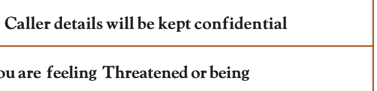</figure>
<aside class="sidenote"><p>If you are feeling Threatened or being</p></aside>
<p>Content Creation Abused or Harassed - Emotionally, Physically or Sexually,</p>
<aside class="sidenote"><p>If you are feeling unsafe,</p></aside>
<p>possess all If you need guidance for</p>
<p>The wise</p>
<aside class="sidenote"><p>Examinations or Higher Education</p></aside>
<p>State Council of Educational Research and Training Dial1441714417</p>
<p>© SCERT 2019</p>
<aside class="sidenote"><p>Caller details will be kept confidential</p></aside>
<p>Printing &amp; Publishing</p>
<p>Tamil Nadu Textbook and Educational Services Corporation</p>
<p class="lead">Mathematics is a unique symbolic language in which the whole world works and acts accordingly. This text book is an attempt to make learning of Mathematics easy for the students community.</p>
<p>Mathematics is not about numbers, equations, computations or algorithms; it is about understanding</p>
<p>- William Paul Thurston</p>
<aside class="sidenote"><p>Try this/these</p></aside>
<p>Activity A few questions which provide scope for To enjoy learning reinforcement of the ­Mathematics by doing content learnt.</p>
<p>em</p>
<p>Do you know? liv Think</p>
<p>To know additional To think deep information and explore related to the topic to yourself! create interest.</p>
<p>To understand that Mathematics can be experienced everywhere in nature and real life.</p>
<h4 class="callout-h" id="s-miscellaneous-note">Miscellaneous Note</h4>
<p>and Challenging To know</p>
<p>problems important facts To give space for learning more and concepts and to face higher challenges in Mathematics and to face Competitive Examinations.</p>
<h4 class="callout-h" id="s-ict-corner">ICT Corner</h4>
<p>Go, Search the content and Learn more!</p>
<p>The main goal of Mathematics in School Education is to mathematise the child’s thought process. It will be useful to know how to mathematise than to know a lot of Mathematics.</p>
<figure class="fig table-fig wide">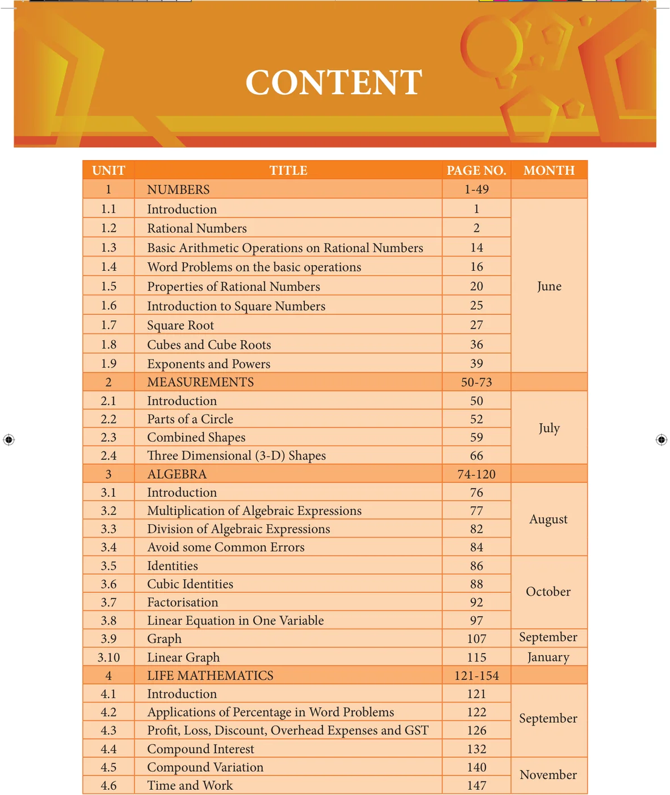</figure>
<figure class="fig table-fig wide">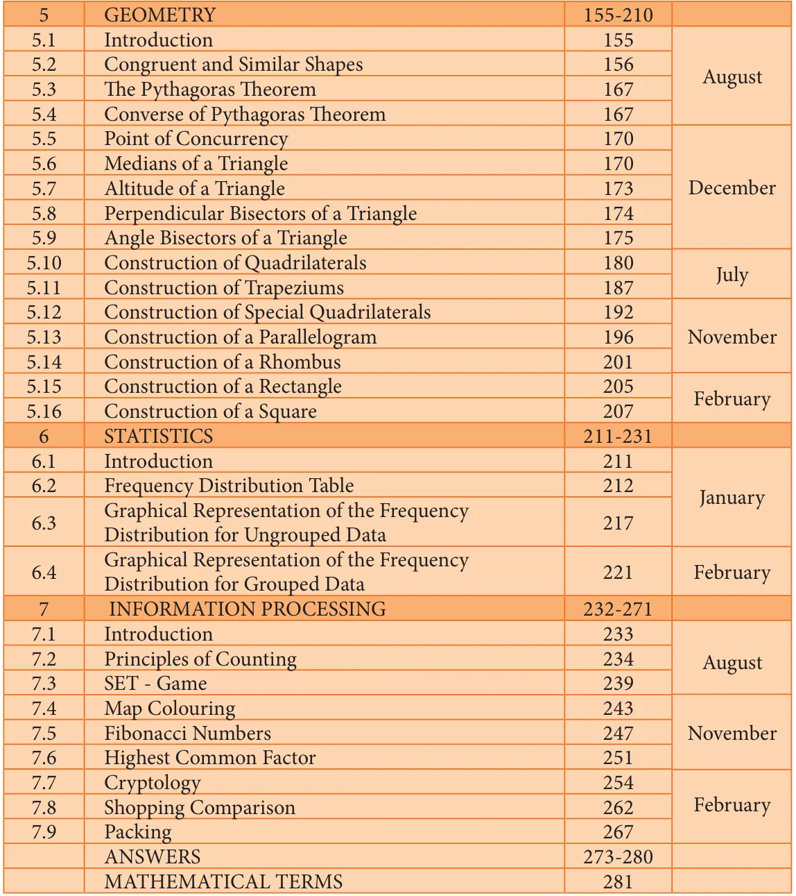</figure>
<figure class="fig"></figure>
<figure class="fig side-fig"></figure>
<p>E-Book Assessment</p>
<h2 id="s-standard-eight">STANDARD EIGHT</h2>
<h2 id="s-mathematics">MATHEMATICS</h2>
<p>Integers 0.75 Natural \(- 3\) 349Numbers12 \(- 24 3.2125 5 0 - 1.7 - 10 7.66\)... 1 NUMBERS 2.1515...</p>
<h3 id="s-learning-objectives">Learning Objectives</h3>
<p>To understand the necessity for extending fractions to rational  numbers, to represent rational numbers on the number line and to know that between any two given rational numbers, there lies many rational numbers. To learn and perform the four basic arithmetic operations and solve  word problems on rational numbers and simplify expressions with atmost three brackets. To understand the properties of rational numbers. To compute the square, the square root, the cube and the cube root of numbers. To make a rough estimate of the square roots and the cube roots of numbers. To express numbers in exponential form and understand the laws of exponents with integral powers. To identify and express the numbers in scientific notation.</p>
<h2 id="s-1-1-introduction">1.1 Introduction</h2>
<p>Let us recall the different types of numbers which we have already learnt in our earlier classes. When we want to count, it is natural to start with numbers 1, 2, 3, 4, 5, … Isn’t it? These are all called as Counting numbers or Natural numbers and their collection is denoted by . The use of three dots at the end of the list is a notation to show that the list keeps going forever. The natural numbers can be visualized as a ray marked with these numbers:</p>
<p class="caption">Fig 1.1</p>
<p>Consider the situation that yesterday my purse had money, say `8, but today the purse may be empty. How many rupees are there in the purse now? How to denote this emptiness? Here comes the concept of zero which evolved to symbolize the idea of emptiness. The concept of zero, though quite natural now, was not normal to early humans. Only after hundreds of years people started thinking of it as an actual number. The difficulty was solved when the Indian Mathematicians provided the symbol for zero. The natural numbers system</p>
<p>with this additional number zero became Whole numbers. The whole numbers can be visualized now as follows:</p>
<p class="caption">Fig 1.2</p>
<p>The system of whole numbers is denoted by . Even zero was not sufficient to solve all problems. Think what happens when 4 is taken away from 6? Draw a number line up to, say 9. Mark 6 by a dot on it.</p>
<p class="caption">Fig 1.3</p>
<p>We know that, to subtract 4, we need to go 4 steps to the left side from 6. We will land on 2 and so the answer is 2. But what will happen if we want to subtract 6 from 4? This situation is where the humans needed (and created) negative numbers.</p>
<p>-8 -7 -6 -5 -4 -3 -2 -1 0 1 2 3 4 5 6 7 8</p>
<p class="caption">Fig 1.4</p>
<p>But, how can a number be negative? Simple! Just think of them as numbers less than zero. Including the negative integers with the whole numbers, we get the list of numbers called the Integers. The integers consist of zero, the natural numbers and the negatives of the natural numbers and it consists a list of numbers that stretch in either direction without end. The</p>
<figure class="fig table-fig wide">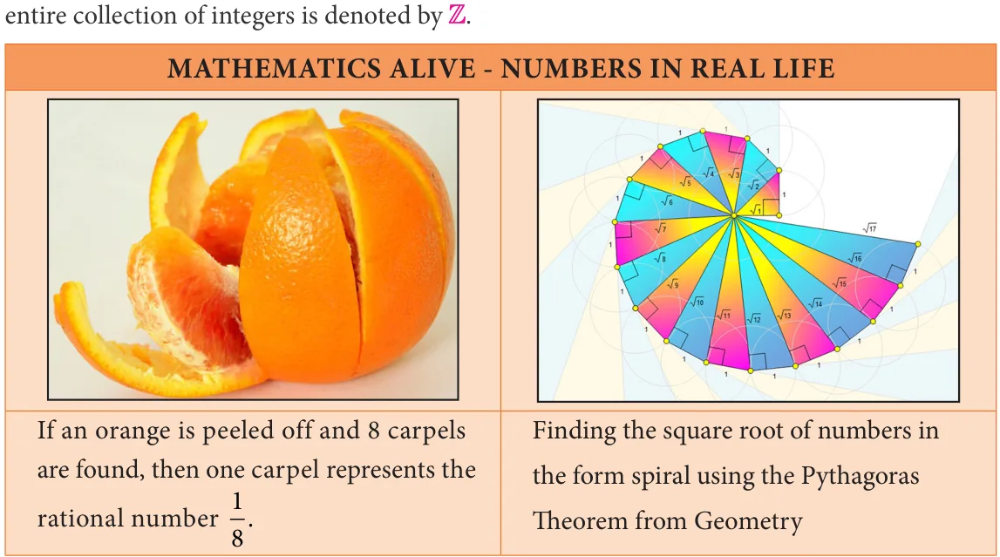</figure>
<h2 id="s-1-2-rational-numbers">1.2 Rational Numbers</h2>
<p>Even after coining integers, one could not relax! 10¸5 is no doubt fine, giving the answer 2 but is 8¸5 comfortable? Numbers between numbers are needed. 8¸5 seen as 1.6, is a number between 1 and 2. But, where does ( - 3)¸4 lie? Between 0 and \(- 1\). Similarly, where do you find</p>
<p>\(\frac{-12}{5}\) on the number line? Between \(- 2\) and \(- 3\). Thus, a ratio made by dividing an integer by another integer is called a rational number. (Remember, we should not divide by zero!) Formally speaking, a rational number is a number of the fractional (ratio) form \(\frac{a}{b}\) , where a and b are integers and \(b \ne 0\). The collection of all rational numbers is denoted by . Non-negative rational numbers may be thought of as fractions. They can also be expressed as decimals and percents. Since operations on rational numbers demand a basic knowledge of operations on fractions, let us recall through an exercise some of the basic ideas related to fractions.</p>
<p>Recap Exercise</p>
<ul class="qlist">
<li><span class="mk">1.</span><span class="lt">The simplest form of \(\frac{125}{200}\) is _________.</span></li>
<li><span class="mk">2.</span><span class="lt">Which of the following is not an equivalent fraction of 12 8 ?</span></li>
<li><span class="mk">(A)</span><span class="lt">\(\frac{2}{3}\) (B) \(\frac{16}{24}\) (C) \(\frac{32}{60}\) (D) \(\frac{24}{36}\)</span></li>
<li><span class="mk">3.</span><span class="lt">Which is bigger: \(\frac{4}{5}\) or 89 ? 4. Add the fractions: \(\frac{357}{5810} + +\)</span></li>
<li><span class="mk">5.</span><span class="lt">Simplify: \(\frac{1}{8} -\) 1 \(6 -\) 14 6. Multiply: \(2 \frac{3}{5}\) and 147 .</span></li>
<li><span class="mk">7.</span><span class="lt">Divide: by 35 . 8. Fill in the boxes: \(= 70 = 28 = = 7\)</span></li>
</ul>
<p>\(\frac{7}{36} 81 \frac{}{66}\)  \(44 \frac{}{121}\) </p>
<ul class="qlist">
<li><span class="mk">9.</span><span class="lt">In a city \(\frac{7}{20}\) of the population are women and 14 are children. Find the fraction of the</span></li>
</ul>
<p>population of men.</p>
<ul class="qlist">
<li><span class="mk">10.</span><span class="lt">Represent \(\frac{11}{24}\)  by a diagram.</span></li>
</ul>
<h4 class="callout-h" id="s-try-these">Try these</h4>
<ul class="qlist">
<li><span class="mk">1.</span><span class="lt">Is the number \(- 7 a\) rational number? Why?</span></li>
<li><span class="mk">2.</span><span class="lt">Write any 6 rational numbers between 0 and 1.</span></li>
</ul>
<h4 class="callout-h" id="s-note">Note</h4>
<p>The word ‘ratio’ in Math refers to the comparison of the sizes of two different quantities of any kind. For example, if there is one teacher for every 20 students in a class, then the ratio of teachers to students is 1:20. Ratios are often written as fractions and so 1:20numbers. \(= \frac{1}{20}\) . For this reason, numbers in the Fractional form are called rational</p>
<h3 id="s-1-2-1-rational-numbers-on-a-number-line">1.2.1 Rational numbers on a number line</h3>
<p>Locating the rational numbers on a number line is an important skill. For example, to represent the number \(\frac{ - 3}{4}\) on the number line, \(\frac{ - 3}{4}\) being negative would be marked to the left of 0 and it is between 0 and \(- 1\). We know that the integers, 1 and \(- 1\) are equidistant from 0 and so are the numbers 2 and \(- 2\), 3 and \(- 3\) from 0. This concept remains the same for rational numbers too. Now, as we mark \(\frac{3}{4}\) to the right of zero, at 3 parts out of 4 between 0 and 1, the same way, we will mark \(\frac{ - 3}{4}\) to the left of zero, at 3 parts out of 4 between 0 and \(- 1\) as shown below. \(\frac{-3}{2} \frac{ - 3}{4} \frac{3}{4}\)</p>
<p>\(- 2 - 1 0 1 2\)</p>
<p class="caption">Fig. 1.5</p>
<p>Similarly, it is easy to find \(\frac{-3}{2}\) between \(- 1\) and \(- 2\) since 23 112 . Now, on the following number line what rational numbers do the letters A and B represent?</p>
<p>\(- 6 - 5 - 4 - 3 - 2 - 1 0 1 2 3 4\)</p>
<p class="caption">Fig. 1.6</p>
<p>You will now be able to say easily the rational numbers marked by A and B on the number line as shown above. Isn’t it? Here, A represents the rational number \(- 4 \frac{4 -\) 32}{77}   and B represents the rational number \(3 \frac{318}{55}\)   .</p>
<h3 id="s-1-2-2-decimal-representation-of-a-rational-number">1.2.2 Decimal representation of a rational number</h3>
<p>A rational number can also be represented in decimal form rather than in the usual fractional form. Given a rational number in the form \(\frac{a}{b}\) (b \(\ne 0)\), just divide the numerator a by the denominator b and we can see that it can be expressed as a terminating or non- terminating, recurring decimal.</p>
<h4 class="callout-h" id="s-activity">Activity</h4>
<p>Use a string as a number line and fix it on the wall, for the length of the class room. Just mark the integers spaciously and ask the students to pick the rational number cards from a box and fix it roughly at the right place on the number line string. This can be played between teams and the team which fixes more number of cards correctly (by marking) will be the winner.</p>
<h4 class="callout-h" id="s-example-1-1">Example 1.1</h4>
<p>Write the decimal forms of the following rational numbers:</p>
<ul class="qlist">
<li><span class="mk">i)</span><span class="lt">\(\frac{1}{4}\) ii) \(1 \frac{3}{20}\) iii) \(-5 \frac{4}{5}\) iv) 3 v) \(\frac{1}{3}\)</span></li>
</ul>
<h4 class="callout-h" id="s-solution">Solution:</h4>
<ul class="qlist">
<li><span class="mk">(i)</span><span class="lt">\(\frac{125}{4100} = = 0 25\). (ii) \(1 \frac{323115}{2020100} = = =1 15\). (iii) \(- 5 \frac{4 - 29 - 58}{5510} = = = - 5 8\).</span></li>
</ul>
<div class="mathblock"><p>\(\frac{330}{110} \frac{1}{3}\)</p></div>
<ul class="qlist">
<li><span class="mk">(iv)</span><span class="lt">\(3= = =3 0\). (v) \(= 0.3333\)... (by actual division and it is recurring and non-terminating)</span></li>
</ul>
<h4 class="callout-h" id="s-note">Note</h4>
<p>™ The above examples show how a rational number may be given in decimal form. The reverse process of converting the decimal form of a rational number to the fractional form may be seen in the higher classes. ™ There are decimal numbers which are non-terminating and non-recurring such as</p>
<div class="mathblock"><p>= 3.141592653589793238462643….. 𝜋2 = 1.41421356237309504880168……. etc.</p></div>
<p>They are not rational numbers and one can study more about them in the higher classes.</p>
<h4 class="callout-h" id="s-try-these">Try these</h4>
<p>Write the decimal forms of the following rational numbers:</p>
<ul class="qlist">
<li><span class="mk">1.</span><span class="lt">\(\frac{4}{5} 2\). \(\frac{6}{25} 3\). \(\frac{486}{1000} 4\). \(\frac{1}{9} 5\). \(3 \frac{1}{4} 6\). \(- 2 \frac{3}{5}\)</span></li>
</ul>
<h3 id="s-1-2-3-positive-and-negative-rational-numbers">1.2.3 Positive and Negative rational numbers</h3>
<p>Rational numbers may be classified as positive and negative rational numbers. If both the numerator and the denominator of the fraction representing a rational number are of the same sign, then the rational number is positive. For example, numbers like \(\frac{3}{4}\) , \(\frac{-11}{-6}\) etc., are positive rational numbers. If either the numerator or the denominator of the fraction representing a rational number is negative, then the rational number is negative. For example, numbers like \(\frac{-311}{4-6}\) , etc., are negative rational numbers.</p>
<figure class="fig wide"></figure>
<h3 id="s-1-2-4-equivalent-rational-numbers">1.2.4 Equivalent rational numbers</h3>
<p>We know how to write equivalent fractions when a fraction is given. Since a rational number can be represented by a fraction, we can think of equivalent rational numbers, duly obtained through equivalent fractions.</p>
<p>Suppose a rational number is in fractional form. Multiply its numerator and denominator by the same non-zero integer to obtain a rational number which is equivalent to it. For example,</p>
<figure class="fig wide">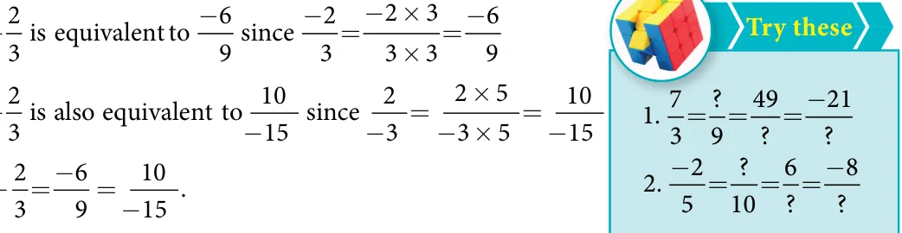</figure>
<p>Thus, -</p>
<h3 id="s-1-2-5-rational-numbers-in-standard-form">1.2.5 Rational numbers in Standard form</h3>
<p>\(4 - - -\) Observe the following rational numbers: , , , , . Here, we see that</p>
<ul class="qlist">
<li><span class="mk">i)</span><span class="lt">the denominators of these rational numbers are all positive integers</span></li>
<li><span class="mk">ii)</span><span class="lt">1 is the only common factor between the numerator and the denominator of each</span></li>
</ul>
<p>of them and</p>
<ul class="qlist">
<li><span class="mk">iii)</span><span class="lt">the negative sign occurs only in the numerator.</span></li>
</ul>
<p>Such rational numbers are said to be in standard form. A rational number is said to be in standard form, if its denominator is a positive integer and both the numerator and denominator have no common factor other than 1. If a rational number is not in the standard form, then it can be simplified to arrive at the standard form.</p>
<p>The collection of rational numbers is denoted by the letter 2020</p>
<aside class="sidenote"><p>Interest Rates</p><p>Bank</p></aside>
<p>because it is formed by considering all quotients, except General</p>
<p>those involving division by 0. Decimal numbers can be put in</p>
<aside class="sidenote"><p>Category</p></aside>
<p>quotient form and hence they are also rational numbers.</p>
<aside class="sidenote"><p>Senior Citizens</p></aside>
<h4 class="callout-h" id="s-example-1-2">Example 1.2</h4>
<p>Reduce to the standard form: (i) \(\frac{48}{ - 84}\) (ii) \(\frac{ - 18}{ - 42}\)</p>
<h4 class="callout-h" id="s-solution">Solution:</h4>
<ul class="qlist">
<li><span class="mk">(i)</span><span class="lt">Method 1:</span></li>
</ul>
<p>48 48 2 24 2 12 3 4 (dividing by \(- 2,2\) and 3 successively) 84 84 2 42 2 21 3 7</p>
<p>Method 2:</p>
<p>The HCF of 48 and 84 is 12 (Find it!). Thus, we can get its standard form by dividing it by \(- 12\).</p>
<p>48 48 12 4 84 84 ( 12) 7</p>
<ul class="qlist">
<li><span class="mk">(ii)</span><span class="lt">Method 1:</span></li>
</ul>
<p>\(- 18 = - 18 \div\) ( \(- 2) = 9 \div 3 = 3\) (dividing by \(- 2\) and 3 successively)</p>
<div class="mathblock"><p>\(- 42 - 42 \div\) ( \(- 2) 21 \div 3 7\)</p></div>
<p>Method 2:</p>
<p>The HCF of 18 and 42 is 6 (Find it!). Thus, we can get its standard form by dividing it by 6.</p>
<div class="mathblock"><p>\(- 18 = - 18 \times\) ( \(- 1) = 18 = 18 \div 6 = 3 - 42 - 42 \times\) ( \(- 1) 42 42 \div 6 7\)</p></div>
<h4 class="callout-h" id="s-try-these">Try these</h4>
<ul class="qlist">
<li><span class="mk">1.</span><span class="lt">Which of the following pairs represents equivalent rational numbers?</span></li>
<li><span class="mk">(i)</span><span class="lt">\(\frac{ - 618}{4 - 12}\) , (ii) \(\frac{ - 41}{ - 20 - 5}\) , (iii) \(\frac{ - 1260}{ - 1785}\) ,</span></li>
<li><span class="mk">2.</span><span class="lt">Find the standard form of:</span></li>
<li><span class="mk">(i)</span><span class="lt">\(\frac{36}{ - 96}\) (ii) \(\frac{ - 56}{ - 72}\) (iii) \(\frac{27}{18}\)</span></li>
<li><span class="mk">3.</span><span class="lt">Mark the following rational numbers on a number line.</span></li>
<li><span class="mk">(i)</span><span class="lt">\(\frac{ - 2}{3}\) (ii) \(\frac{ - 8}{ - 5}\) (iii) \(\frac{5}{ - 4}\)</span></li>
</ul>
<h3 id="s-1-2-6-comparison-of-rational-numbers">1.2.6 Comparison of rational numbers</h3>
<p>It is useful to remember the following points: ™ Every positive number is greater than zero. ™ Every negative number is smaller than zero. ™ Every positive number is greater than every negative number. ™ Every number on the right of a number on a number line is greater than that number.</p>
<p>When two integers or fractions are given, we know how to compare them and say which is greater or smaller. Now, in the same way, we can compare a pair of rational numbers.</p>
<p>Type 1 : Comparing two rational numbers with opposite signs Example 1.3</p>
<p>Compare and -10 .</p>
<div class="mathblock"><p>\(\frac{5}{17} 19\)</p></div>
<h4 class="callout-h" id="s-solution">Solution:</h4>
<p>Since every positive number is greater than every negative number, we conclude that \(\frac{5}{17} &gt; -1019\) .</p>
<p>Type 2 : Comparing two rational numbers represented by two fractions with same denominators</p>
<h4 class="callout-h" id="s-example-1-4">Example 1.4</h4>
<p>Compare \(\frac{1}{3}\) and \(\frac{4}{3}\) .</p>
<h4 class="callout-h" id="s-solution">Solution:</h4>
<p>Since the denominators are the same, just compare the numerators. Since \(1 &lt; 4\), we conclude that \(\frac{1}{3} &lt; \frac{4}{3}\) .</p>
<p>Type 3 : Comparing two rational numbers represented by two fractions with different denominators</p>
<h4 class="callout-h" id="s-example-1-5">Example 1.5</h4>
<p>Compare \(\frac{3}{4}\) and \(\frac{5}{6}\) .</p>
<h4 class="callout-h" id="s-solution">Solution:</h4>
<p>The LCM of the denominators is 12 (Find it!). Consider for each rational number an equivalent rational number with the LCM 12 as denominator. We get \(\frac{3}{4} = \frac{9}{12}\) and \(\frac{5}{6} = \frac{10}{12}\) , which become like fractions now. Here, \(\frac{9}{12} &lt; \frac{10}{12}\) . Hence, we conclude that \(\frac{3}{4} &lt; \frac{5}{6}\) .</p>
<p>Type 4 : Comparing two rational numbers that are not in standard form Example 1.6</p>
<p>Compare \(\frac{9}{-4}\) and \(\frac{-2}{3}\) .</p>
<h4 class="callout-h" id="s-solution">Solution:</h4>
<p>The number \(\frac{9}{-4}\) is not in standard form. First put it in the standard form.</p>
<p>\(9 = 9 \times - 1(to\) get a positive denominator) \(= - 9\)</p>
<p>\(- 4 - 4 - 1 4\) Now, we shall compare the fractions \(\frac{-9}{4}\) and \(\frac{-2}{3}\) . We find that these two fractions are unlike fractions. To make them as like fractions, we make use of their LCM, which is 12. We can now compare their equivalent fractions \(\frac{-9}{4} = \frac{-27}{12}\) and \(\frac{-2}{3} = \frac{-8}{12}\) (How?). We find that the denominators are the same and so just comparing the numerators \(- 27\) and \(- 8\) are enough.</p>
<p>Visualizing these numbers on the number line, we see that</p>
<p>\(- 28 - 27 - 26 - 22 - 21 - 20 - 19 - 18 - 10 - 9 - 8 - 7\)</p>
<p class="caption">Fig. 1.7</p>
<p>\(- 8\) is to the right of \(- 27\) and hence ( \(- 8) &gt;\) ( \(- 27)\). This leads to the result that consequently we conclude that \(&gt; 9\) . \(\frac{-8}{12} &gt; \frac{-27}{12}\) and</p>
<div class="mathblock"><p>\(\frac{-2}{3} 4-\)</p></div>
<h4 class="callout-h" id="s-example-1-7">Example 1.7</h4>
<p>Write the following rational numbers in ascending and descending order. \(- 3\), 7 , \(- 15\), 14 , \(- 8 5 - 10 20 - 30 15\)</p>
<h4 class="callout-h" id="s-solution">Solution:</h4>
<p>First make the denominators to be positive and write the numbers in standard form as \(- 3\), \(- 7\) , \(- 15\), \(- 14\) , \(- 8\) . Here, the LCM of 5,10,15,20 and 30 is 60 (Find it!). Change the 5 10 20 30 15 given rational numbers in equivalent form with common denominator 60. \(\frac{ - 3}{5} \frac{-7}{10} \frac{ - 15}{20} \frac{ - 14}{30} \frac{ - 8}{15}\)</p>
<div class="mathblock"><p>\(= \frac{312}{512} = 107 66 = 1520 33 = 1430 22 = 158 44 = \frac{ - 36}{60} = 6042 = 6045 = 6028 = 3260\)</p></div>
<p>Comparing the numerators alone, that is, \(- 36\), \(- 42\), \(- 45\), \(- 28\) and \(- 32\) we see that</p>
<div class="mathblock"><p>\(- 45 &lt; - 42 &lt; - 36 &lt; - 32 &lt; - 28\)</p></div>
<p>Hence, 45 42 36 32 28 and so, 15 7 3 8 14 . 60 60 60 60 60 20 10 5 15 30 So, the ascending order is \(- 15\), 7 , \(- 3\), \(- 8\) and 14 . \(20 - 10 5 15 - 30\) Also, its reverse order gives the descending order as 14 , \(- 8\) , \(- 3\), 7 and \(- 15\) . \(- 30 15 5 - 10 20\)</p>
<h3 id="s-1-2-7-rational-numbers-between-any-two-given-rational-numb">1.2.7 Rational numbers between any two given rational numbers</h3>
<p>Consider the integers 4 and 10. We can locate five integers namely 5,6,7,8 and 9 (shown in dark dots) between them. Isn’t it?</p>
<p class="caption">Fig. 1.8</p>
<p>How many integers can you find between 3 and \(- 2\)? List them. Are there any integers between \(- 5\) and \(- 4\)? No, is the answer.</p>
<p>-5 -4 -3 -2 -1 0 1 2 3</p>
<p class="caption">Fig. 1.9</p>
<p>This shows that the choice of integers between two given integers is limited. They are finite in number or may be nothing between them. Let us think what will happen, if we consider rational numbers instead of integers? We will see that we can have many rational numbers between any two rational numbers. There are at least two methods to find more rational numbers between any two rational numbers.</p>
<p>Method of Averages:</p>
<p>We know that is the average of any two numbers always lies at the middle of them. For example, the average of 2 and 8 is shown in the following number line. \(\frac{2+8}{2} =5\) and this 5 lies at the middle of 2 and 8 as average</p>
<p class="caption">Fig. 1.10</p>
<p>We use this idea to find more rational numbers between any two rational numbers.</p>
<h4 class="callout-h" id="s-example-1-8">Example 1.8</h4>
<div class="mathblock"><p>\(\frac{15}{39}\)</p></div>
<p>Find a rational number between and .</p>
<p>Solution: The average of 1and =  + =  \(\times +\)  (Why?)</p>
<figure class="fig">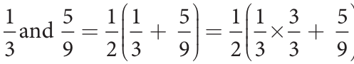</figure>
<div class="mathblock"><p> \(\frac{5184}{9299}\)</p></div>
<figure class="fig">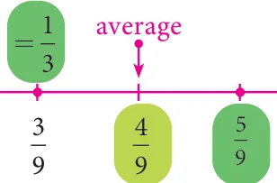<figcaption>Fig. 1.11</figcaption></figure>
<p>\(\frac{0}{9} \frac{1}{9} \frac{2}{9} \frac{6}{9} \frac{7}{9} \frac{8}{9} \frac{9}{9}\)</p>
<p>Note that \(\frac{4}{9}\) is one rational number we have found in between \(\frac{15}{39}\) and and we can find many such numbers in between \(\frac{15}{39}\) and . This shows that between any two rational numbers there lie an unlimited number of rational numbers! Mathematically, we say that there lie an infinite number of rational numbers between any two rational numbers.</p>
<figure class="fig side-fig"></figure>
<p>Method of Equivalent rational numbers:</p>
<p>We can use the idea of equivalent fractions to get more rational numbers between any two rational numbers. This is clearly explained in the following illustration.</p>
<p>Illustration:</p>
<p>Let us now try to find more rational numbers say between \(\frac{3}{7}\) and 47 by the following visual explanation on the number line. If we get the multiples of the denominator of the equivalent rational numbers (the easy one will be to multiply by 10), then we can insert as many rational numbers as we want. We shall write \(\frac{3}{7}\) as 3070 and 47 as 4070 and see that there are 9 rational numbers between \(\frac{3}{7}\) and 47 as given in the number line below.</p>
<p>\(\frac{330}{770} \frac{31}{70} \frac{32}{70} \frac{33}{70} \frac{34}{70} \frac{35}{70} \frac{36}{70} \frac{37}{70} \frac{38}{70} \frac{39}{70} \frac{404}{707}\)</p>
<p>\(= =\)</p>
<p class="caption">Fig. 1.12</p>
<p>Now, if we want more rational numbers between say and we can write as \(\frac{37}{70} \frac{38}{70} \frac{37}{70} \frac{370}{700}\)</p>
<p>and as . Then again, we will get nine rational numbers between and as \(\frac{38}{70} \frac{380}{700} \frac{37}{70} \frac{38}{70} 371\), 372 , 373, 374 , 375, 376 , 377 , 378 and .</p>
<div class="mathblock"><p>\(700 700 700 700 700 700 700 700 \frac{379}{700}\)</p></div>
<p>The following diagram helps us to understand this nicely with a magnifying lens used between 0 and 1 and further zoomed into the fractional parts also.</p>
<p>. \(- 2 - 1 0 1 2\)</p>
<p>\(\frac{0}{7} \frac{1}{7} \frac{2}{7} \frac{3}{7} \frac{4}{7} \frac{5}{7} \frac{6}{7} \frac{7}{7}\)</p>
<div class="mathblock"><p>\(0 = =1\)</p></div>
<p>\(\frac{330}{770} \frac{31}{70} \frac{32}{70} \frac{33}{70} \frac{34}{70} \frac{35}{70} \frac{36}{70} \frac{37}{70} \frac{38}{70} \frac{39}{70} \frac{404}{707}\)</p>
<p>\(= =\)</p>
<p>\(\frac{37370}{70700} \frac{371}{700} \frac{372}{700} \frac{373}{700} \frac{374}{700} \frac{375}{700} \frac{376}{700} \frac{377}{700} \frac{378}{700} \frac{379}{700} \frac{38038}{70070}\)</p>
<p>\(= =\)</p>
<p class="caption">Fig. 1.13</p>
<p>Thus, we can see that there are an unlimited number of rational numbers between any two given rational numbers.</p>
<h4 class="callout-h" id="s-example-1-9">Example 1.9</h4>
<p>Find atleast two rational numbers between \(\frac{-3-2}{45}\) and .</p>
<h4 class="callout-h" id="s-solution">Solution:</h4>
<p>The denominators are different for the given rational numbers. The LCM of the denominators 4 and 5 is 20. Make the rational numbers such that they have common denominators as 20. Here,</p>
<div class="mathblock"><p>\(- 3= - \times 3 5 = - 15\) and \(- 2 = - \times 2 4 = - 8\) .</p></div>
<p>It is easy now to find and insert rational numbers between \(\frac{-15}{20}\) and \(\frac{-8}{20}\) as shown below. -3 -2 4 5</p>
<p>-15 -14 -13 -12 -11 -10 -9 -8 20 20 20 20 20 20 20 20</p>
<p class="caption">Fig. 1.14</p>
<p>We can list a few rational numbers as -14 , -13, -12 , -11, -10 and -9 between \(20 20 20 20 20 20 \frac{-15}{20}\) and \(\frac{-8}{20}\) . Are these the only rational numbers between rational numbers between them, if possible! \(\frac{-15}{20}\) and \(\frac{-8}{20}\) ? Think! Try to find 10 more</p>
<h4 class="callout-h" id="s-note">Note</h4>
<p>We can find many rational numbers between \(\frac{- 7}{11}\) and \(\frac{5}{-9}\) quickly as given below: The range of rational numbers can be got by the cross multiplication of denominators with the numerators after writing the given fractions in standard form. The cross multiplication here \(\frac{- 7}{11} \frac{-5}{9}\) gives the range of rational numbers from \(- 63\) to \(- 55\) with the denominator 99. This is nothing but making the given rational numbers equivalent with the denominator 99!</p>
<h2 class="callout-h" id="s-exercise-1-1">Exercise 1.1</h2>
<ul class="qlist">
<li><span class="mk">1.</span><span class="lt">Fill in the blanks:</span></li>
<li><span class="mk">(i)</span><span class="lt">\(\frac{ - 19}{5}\) lies between the integers __________ and __________.</span></li>
<li><span class="mk">(ii)</span><span class="lt">The decimal form of the rational number 15 is __________.</span></li>
</ul>
<aside class="sidenote"><p>-4</p></aside>
<ul class="qlist">
<li><span class="mk">(iii)</span><span class="lt">The rational numbers -8 and are equidistant from __________.</span></li>
</ul>
<div class="mathblock"><p>\(3 \frac{8}{3}\)</p></div>
<ul class="qlist">
<li><span class="mk">(iv)</span><span class="lt">The next rational number in the sequence \(\frac{ - 1520 - 25}{24 - 3240}\) , , is __________.</span></li>
<li><span class="mk">(v)</span><span class="lt">The standard form of \(\frac{58}{ - 78}\) is __________.</span></li>
<li><span class="mk">2.</span><span class="lt">Say True or False:</span></li>
<li><span class="mk">(i)</span><span class="lt">0 is the smallest rational number.</span></li>
<li><span class="mk">(ii)</span><span class="lt">\(\frac{ - 4}{5}\) lies to the left of \(\frac{ - 3}{4}\) .</span></li>
<li><span class="mk">(iii)</span><span class="lt">is greater than 15 .</span></li>
</ul>
<div class="mathblock"><p>\(\frac{ - 19}{5} -4\)</p></div>
<ul class="qlist">
<li><span class="mk">(iv)</span><span class="lt">The average of two rational numbers lies between them.</span></li>
<li><span class="mk">(v)</span><span class="lt">There are an unlimited number of rational numbers between 10 and 11.</span></li>
<li><span class="mk">3.</span><span class="lt">Find the rational numbers represented by each of the question marks marked on the</span></li>
</ul>
<p>following number lines.</p>
<ul class="qlist">
<li><span class="mk">(i)</span><span class="lt">?</span></li>
</ul>
<p>\(- 4 - 3 - 2 - 1 0 1\)</p>
<p>? (ii)</p>
<p>\(- 3 - 2 - 1 0 1 2\)</p>
<p>\(- 3 - 2 - 1 0 1 2\)</p>
<ul class="qlist">
<li><span class="mk">4.</span><span class="lt">The points S, Y, N, C, R, A, T, I and O on the number line are such that CN=NY=YS and</span></li>
</ul>
<p>RA=AT=TI=IO. Find the rational numbers represented by the letters Y, N, A, T and I.</p>
<p>-4 -3 -2 -1 0 1 2 3 4</p>
<ul class="qlist">
<li><span class="mk">5.</span><span class="lt">Draw a number line and represent the following rational numbers on it.</span></li>
<li><span class="mk">(i)</span><span class="lt">9 (ii) -8 (iii) -17 (iv) 15</span></li>
</ul>
<p>4 3 -5 -4</p>
<ul class="qlist">
<li><span class="mk">6.</span><span class="lt">Write the decimal form of the following rational numbers.</span></li>
<li><span class="mk">(i)</span><span class="lt">\(\frac{1}{11}\) (ii) \(\frac{13}{4}\) (iii) \(\frac{-18}{7}\) (iv) \(1 \frac{2}{5}\) (v) \(-3 \frac{1}{2}\)</span></li>
<li><span class="mk">7.</span><span class="lt">List any five rational numbers between the given rational numbers.</span></li>
<li><span class="mk">(i)</span><span class="lt">\(- 2\) and 0 (ii) \(\frac{ - 1}{2}\) and \(\frac{3}{5}\) (iii) \(\frac{17}{420}\) and (iv) \(\frac{-6-23}{410}\) and</span></li>
<li><span class="mk">8.</span><span class="lt">Use the method of averages to write 2 rational numbers between \(\frac{1416}{53}\) and .</span></li>
<li><span class="mk">9.</span><span class="lt">Compare the following pairs of rational numbers.</span></li>
<li><span class="mk">(i)</span><span class="lt">\(\frac{ - 11 - 21}{58}\) , (ii) \(\frac{3 - 1}{ - 42}\) , (iii) \(\frac{24}{35}\) , .</span></li>
<li><span class="mk">10.</span><span class="lt">Arrange the following rational numbers in ascending and descending order.</span></li>
<li><span class="mk">(i)</span><span class="lt">\(- 5\) , \(- 11\), \(- 15\), \(- 7 ,12\) (ii) \(- 17\) , \(- 7 ,0\), \(- 2\) , \(- 19\)</span></li>
</ul>
<p>\(12 8 24 - 9 36 10 5 4 20\)</p>
<p>Objective Type QuestionsObjective Type Questions</p>
<ul class="qlist">
<li><span class="mk">11.</span><span class="lt">The number which is subtracted from \(\frac{ - 6}{11}\) to get \(\frac{8}{9}\) is __________.</span></li>
<li><span class="mk">(A)</span><span class="lt">\(\frac{34}{99}\) (B) \(\frac{ - 142}{99}\) (C) \(\frac{142}{99}\) (D) \(\frac{ - 34}{99}\)</span></li>
<li><span class="mk">12.</span><span class="lt">Which of the following pairs is equivalent?</span></li>
<li><span class="mk">(A)</span><span class="lt">\(\frac{ - 205}{123}\) , (B) \(\frac{16 - 8}{ - 3015}\) , (C) \(\frac{ - 18 - 20}{3644}\) , (D) \(\frac{7 - 5}{ - 57}\) ,</span></li>
<li><span class="mk">13.</span><span class="lt">\(\frac{ - 5}{4}\) is a rational number which lies between __________ .</span></li>
<li><span class="mk">(A)</span><span class="lt">0 and \(\frac{ - 5}{4}\) (B) \(- 1\) and 0 (C) \(- 1\) and \(- 2\) (D) \(- 4\) and \(- 5\)</span></li>
<li><span class="mk">14.</span><span class="lt">Which of the following rational numbers is the greatest?</span></li>
<li><span class="mk">(A)</span><span class="lt">\(\frac{ - 17}{24}\) (B) \(\frac{ - 13}{16}\) (C) \(\frac{7}{ - 8}\) (D) \(\frac{ - 31}{32}\)</span></li>
<li><span class="mk">15.</span><span class="lt">The sum of the digits of the denominator in the simplest form of \(\frac{112}{528}\) is _________ .</span></li>
<li><span class="mk">(A)</span><span class="lt">4 (B) 5 (C) 6 (D) 7</span></li>
</ul>
<h2 id="s-1-3-basic-arithmetic-operations-on-rational-numbers">1.3 Basic Arithmetic Operations on Rational Numbers</h2>
<p>All the rules and principles that govern fractions in the basic operations apply to rational numbers also.</p>
<h3 id="s-1-3-1-addition">1.3.1 Addition</h3>
<p>There can be four different situations while doing addition.</p>
<p>Type 1 : Adding numbers that have same denominators</p>
<p>This is simply like adding like fractions and the result is the sum of the numerators divided by their common denominator.</p>
<h4 class="callout-h" id="s-example-1-10">Example 1.10</h4>
<div class="mathblock"><p>Add : \(\frac{ - 68 - 12}{111111}\) , ,</p></div>
<h4 class="callout-h" id="s-solution">Solution:</h4>
<p>Write the given rational numbers in the standard form and then add them.</p>
<p>So, 6 8 12 6 8 12 10 11 11 11 11 11</p>
<p>Type 2 : Adding numbers that have different denominators</p>
<p>After writing the given rational numbers in the standard form, use the LCM of their denominators to convert the numbers into equivalent rational numbers with a common denominator so that this reduces to Type1.</p>
<h4 class="callout-h" id="s-example-1-11">Example 1.11</h4>
<div class="mathblock"><p>Add : \(- 9 5\) , \(- 43\) , \(\frac{7}{12}\)</p></div>
<h4 class="callout-h" id="s-solution">Solution:</h4>
<div class="mathblock"><p>LCM of 9,3 12, \(= 36\)</p></div>
<p>So, 5 4 6 5 4 4 12 7 3 9 3 12 9 4 3 12 12 3</p>
<div class="mathblock"><p>\(36 36 36 36 \frac{47}{36}\)</p></div>
<h3 id="s-1-3-2-additive-inverse">1.3.2 Additive Inverse</h3>
<p>The additive inverse of a rational number is another rational number which when added to the given number, gives zero. For example, \(\frac{4}{3}\) and \(\frac{-4}{3}\) are additive inverses of each other, since their sum is zero.</p>
<figure class="fig side-fig">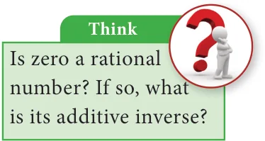</figure>
<h3 id="s-1-3-3-subtraction">1.3.3 Subtraction</h3>
<p>Subtraction is simply adding the additive inverse.</p>
<h4 class="callout-h" id="s-example-1-12">Example 1.12</h4>
<p>Subtract : \(\frac{9}{17}\) from \(\frac{ - 12}{17}\)</p>
<h4 class="callout-h" id="s-solution">Solution:</h4>
<p>12 9 12 9  12 9 21 Now, 17 17 17  17   17 17</p>
<h4 class="callout-h" id="s-example-1-13">Example 1.13</h4>
<p>Subtract :  \(- 2 \frac{6}{11}\)  from  \(- 4 \frac{5}{22}\) </p>
<h4 class="callout-h" id="s-solution">Solution:</h4>
<div class="mathblock"><p>Now,  \(- 4 \frac{56}{2211}\)  \(- -\)  2 </p><p>\(\frac{9328}{2211}\)  \(\frac{9328}{2211} = \frac{ - 93+28 \times 2}{22} = - 93+ 56 = - 37 = - 115\)</p></div>
<p>  </p>
<h3 id="s-1-3-4-multiplication">1.3.4 Multiplication</h3>
<p>Product of two or more rational numbers is found by multiplying the corresponding numerators and denominators of the numbers and then writing them in the standard form.</p>
<h4 class="callout-h" id="s-example-1-14">Example 1.14</h4>
<p>Evaluate : (i) \(\frac{ - 57}{83} \times\) (ii) \(\frac{ - 6}{ - 11} \times\) ( \(- 4)\)</p>
<h4 class="callout-h" id="s-solution">Solution:</h4>
<ul class="qlist">
<li><span class="mk">(i)</span><span class="lt">\(- 5 \times 7 = - \times 5 7 = - 35\) (ii) \(- 6 \times\) ( - ) \(= \times\) ( - ) \(= \times\) ( - ) \(= -\)</span></li>
</ul>
<figure class="fig side-fig">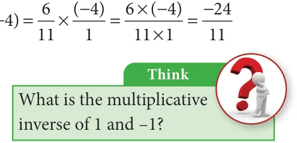</figure>
<div class="mathblock"><p>\(8 3 8 \times 3 24 - 11 \times\)</p></div>
<h3 id="s-1-3-5-multiplicative-inverse">1.3.5 Multiplicative Inverse</h3>
<p>If the product of two rational numbers is 1, then each of them is said to be the reciprocal or the multiplicative inverse of the other. For the rational number a, its reciprocal is \(\frac{1}{a}\) and vice versa since \(a \frac{11}{aa} 1\). For the rational number \(\frac{a}{b}\) , its multiplicative inverse is \(\frac{b}{a}\) and vice versa since \(\frac{abba}{baab} \times = \times =1\).</p>
<h3 id="s-1-3-6-division">1.3.6 Division</h3>
<p>The idea of reciprocals of fractions is extended to the division of rational numbers also. To divide a given rational number by another rational number, we have to multiply the given rational number by the reciprocal of the second rational number. That is, division is simply multiplying the dividend by the multiplicative inverse of the divisor.</p>
<figure class="fig"></figure>
<h4 class="callout-h" id="s-example-1-15">Example 1.15</h4>
<p>Divide : \(\frac{7}{ - 8}\) by \(\frac{ - 3}{4}\)</p>
<h4 class="callout-h" id="s-solution">Solution:</h4>
<p>Here, 7 3 7 4 7</p>
<figure class="fig wide"></figure>
<h2 id="s-1-4-word-problems-on-the-basic-operations">1.4 Word Problems on the basic operations</h2>
<h4 class="callout-h" id="s-example-1-16">Example 1.16</h4>
<p>The sum of two rational numbers is 45 . If one number is 215 , then find the other.</p>
<h4 class="callout-h" id="s-solution">Solution:</h4>
<p>Let the other number be x.</p>
<div class="mathblock"><p>Given, \(\frac{24}{155} + x = \Rightarrow x = 4 - 2 = 12 - 2 = 10 \Rightarrow x = 5 15 15 15 \frac{2}{3}\)</p></div>
<h4 class="callout-h" id="s-example-1-17">Example 1.17</h4>
<p>The product of two rational numbers is \(\frac{ - 2}{3}\) . If one number is \(\frac{3}{7}\) , then find the other.</p>
<h4 class="callout-h" id="s-solution">Solution:</h4>
<p>Let the other number be x.</p>
<figure class="fig side-fig">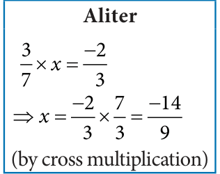</figure>
<div class="mathblock"><p>Given, \(\frac{32}{73} x\)</p></div>
<p>Multiplying by the reciprocal of \(\frac{3}{7}\) , that is \(\frac{7}{3}\) on both sides, 7 3 x 7 2 3 7 3 3 x 14 9</p>
<h4 class="callout-h" id="s-example-1-18">Example 1.18</h4>
<p>One roll of ribbon is \(18 \frac{3}{4} m\) long. Sankari has four full rolls and one - third of another roll. How many metres of ribbon does Sankari have in total?</p>
<figure class="fig side-fig"></figure>
<h4 class="callout-h" id="s-solution">Solution:</h4>
<p>Number of metres of ribbon Sankari has in total</p>
<div class="mathblock"><p>\(=18 \frac{31}{43} \times 4 = 75 \times 13 = 325 = 811 m\) Fig. 1.15</p></div>
<h4 class="callout-h" id="s-example-1-19">Example 1.19</h4>
<p>Find the rational numbers that should be added and subtracted so that they will make the sum \(3 \frac{133}{248} +1 + 2\) to the nearest whole number.</p>
<h4 class="callout-h" id="s-solution">Solution:</h4>
<div class="mathblock"><p>Now, \(3 \frac{133}{248} +1 + 2 = \frac{7719}{248} + + = 7 \times 4 + 7 \times 82 +19 \times 1 = 28 +148 +19\)</p></div>
<p>\(= \frac{61}{8} = 7 58\) , which lies between the whole numbers 7 and 8. If we subtract from 7 5 , it becomes 7. If we add 3 to 7 5, it becomes \(7+ +3 =7+1=8\).</p>
<div class="mathblock"><p>\(\frac{5}{8} 8 8 8 \frac{5}{8} 8\)</p></div>
<h4 class="callout-h" id="s-example-1-20">Example 1.20</h4>
<p>A student instead of multiplying a number by \(\frac{8}{9}\) , by mistake divided it by \(\frac{8}{9}\) . If the difference between the correct answer and the answer got by him is 34, then find the number.</p>
<h4 class="callout-h" id="s-solution">Solution:</h4>
<p>Let the number be x . The student had to find \(\frac{8x}{9}\) but, he had found \(\frac{x}{8}\)  _{9} , that is \(\frac{9x}{8}\) . Now, \(\frac{9x8x}{89} - = 34\) (given)</p>
<div class="mathblock"><p>\(\frac{81x - 64x}{72} = 34 \Rightarrow \frac{17x}{72} = 34 x = \frac{34 \times 72}{17} =144\)</p></div>
<h4 class="callout-h" id="s-example-1-21">Example 1.21</h4>
<p>Simplify: 43 23   35     </p>
<h4 class="callout-h" id="s-solution">Solution:</h4>
<figure class="fig"></figure>
<div class="mathblock"><p>Here, 43 23   35  1230     =  + +  \(- \times\) +  \(- \times -\) </p></div>
<aside class="sidenote"><p>=  +   \(- \times\)   \(- \times -\) </p></aside>
<div class="mathblock"><p>=  +    \(\frac{9}{4}\) </p></div>
<aside class="sidenote"><p>=  -  \(= + =\)</p></aside>
<figure class="fig">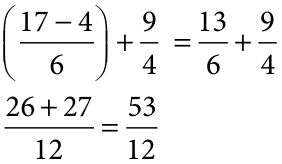</figure>
<h2 class="callout-h" id="s-exercise-1-2">Exercise 1.2</h2>
<ul class="qlist">
<li><span class="mk">1.</span><span class="lt">Fill in the blanks:</span></li>
<li><span class="mk">(i)</span><span class="lt">The value of \(\frac{ - 57}{1215} + =\) ________.</span></li>
<li><span class="mk">(ii)</span><span class="lt">The value of  \(\frac{ -\) 318}{6 - 9}  \(\times\)   is ________.</span></li>
</ul>
<div class="mathblock"><p>\(\frac{1530}{2346}\) </p></div>
<ul class="qlist">
<li><span class="mk">(iii)</span><span class="lt">The value of    is ________.</span></li>
<li><span class="mk">(iv)</span><span class="lt">The rational number ________ does not have a reciprocal.</span></li>
<li><span class="mk">(v)</span><span class="lt">The multiplicative inverse of \(- 1\) is ________.</span></li>
<li><span class="mk">2.</span><span class="lt">Say True or False:</span></li>
<li><span class="mk">(i)</span><span class="lt">All rational numbers have an additive inverse.</span></li>
<li><span class="mk">(ii)</span><span class="lt">The rational numbers that are equal to their additive inverses are 0 and \(- 1\).</span></li>
<li><span class="mk">(iii)</span><span class="lt">The additive inverse of \(\frac{ - 11}{ - 17}\) is 17 11.</span></li>
<li><span class="mk">(iv)</span><span class="lt">The rational number which is its own reciprocal is \(- 1\).</span></li>
<li><span class="mk">(v)</span><span class="lt">The multiplicative inverse exists for all rational numbers.</span></li>
<li><span class="mk">3.</span><span class="lt">Find the sum:</span></li>
<li><span class="mk">(i)</span><span class="lt">\(\frac{73}{55} +\) (ii) \(\frac{75}{57} +\) (iii) \(\frac{6 -\) 14}{515} +  (iv) \(- 4 \frac{25}{312} + 7\)</span></li>
</ul>
<aside class="sidenote"><p> </p></aside>
<ul class="qlist">
<li><span class="mk">4.</span><span class="lt">Subtract : \(\frac{ - 8}{44}\) from \(- \frac{17}{11}\) .</span></li>
<li><span class="mk">5.</span><span class="lt">Evaluate : (i) \(\frac{911}{1323}\) (ii) \(\frac{724}{2735}\)</span></li>
<li><span class="mk">6.</span><span class="lt">Divide : (i) \(\frac{ - 21}{5}\) by \(\frac{ - 7}{ - 10}\) (ii) \(\frac{ - 3}{13}\) by \(- 3\) (iii) \(- 2\) by \(\frac{ - 6}{15}\)</span></li>
<li><span class="mk">7.</span><span class="lt">Find (a + b) 4 (a 2 b) if</span></li>
<li><span class="mk">(i)</span><span class="lt">\(a = \frac{12}{23}\) ,b = (ii) \(a \frac{32}{515}\) ,b</span></li>
<li><span class="mk">8.</span><span class="lt">Simplify : \(\frac{1323}{22510}\)    3 and show that it is a rational number between 11 and 12.</span></li>
<li><span class="mk">9.</span><span class="lt">Simplify :</span></li>
<li><span class="mk">(i)</span><span class="lt">118  336   13   35  209   74 57 (ii) 43  87   34  43  43  41</span></li>
<li><span class="mk">10.</span><span class="lt">A student had multiplied a number by \(\frac{4}{3}\) instead of dividing it by \(\frac{4}{3}\) and got 70 more</span></li>
</ul>
<p>than the correct answer. Find the number.</p>
<p>Objective Type QuestionsObjective Type Questions</p>
<ul class="qlist">
<li><span class="mk">11.</span><span class="lt">The standard form of the sum \(\frac{35 -\) 7}{4612} \(+ +\)   is __________ .</span></li>
<li><span class="mk">(A)</span><span class="lt">1 (B) \(\frac{ - 1}{2}\) (C) \(\frac{1}{12}\) (D) \(\frac{1}{22}\)</span></li>
<li><span class="mk">12.</span><span class="lt"> \(\frac{351}{482} -\) + = __________ .</span></li>
<li><span class="mk">(A)</span><span class="lt">\(\frac{15}{64}\) (B) 1 (C) \(\frac{5}{8}\) (D) \(\frac{1}{16}\)</span></li>
<li><span class="mk">13.</span><span class="lt">\(\frac{351}{482} \div\)  + = __________ .</span></li>
<li><span class="mk">(A)</span><span class="lt">\(\frac{13}{10}\) (B) \(\frac{2}{3}\) (C) \(\frac{3}{2}\) (D) \(\frac{5}{8}\)</span></li>
<li><span class="mk">14.</span><span class="lt">\(\frac{351}{482} \times\)  \(\div\) = __________ .</span></li>
<li><span class="mk">(A)</span><span class="lt">\(\frac{5}{8}\) (B) \(\frac{2}{3}\) (C) \(\frac{15}{32}\) (D) \(\frac{15}{16}\)</span></li>
<li><span class="mk">15.</span><span class="lt">Which of these rational numbers which have additive inverse?</span></li>
<li><span class="mk">(A)</span><span class="lt">7 (B) \(- 7 5\) (C) 0 (D) all of these</span></li>
</ul>
<h4 class="callout-h" id="s-note">Note</h4>
<p>Why \(\frac{aca+c}{bdb+d} + \ne\) ? A mathematical statement is true only if it is 100% true without any exception. If we do the addition, say \(\frac{31}{44} +\) as \(\frac{3+141}{4+482} = =\) . This is wrong, since \(\frac{313+14}{4444} + = = =1\).</p>
<h2 id="s-1-5-properties-of-rational-numbers">1.5 Properties of Rational Numbers</h2>
<p>Some properties listed here below will be of good use in solving problems.</p>
<h3 id="s-1-5-1-closure-property-for-the-collection-of-rational-numb">1.5.1 Closure property for the collection of rational numbers</h3>
<ul class="qlist">
<li><span class="mk">i)</span><span class="lt">Closure property for Addition</span></li>
</ul>
<p>For any two rational numbers a and b, the sum \(a + b\) is also a rational number.</p>
<ul class="qlist">
<li><span class="mk">ii)</span><span class="lt">Closure property for Multiplication</span></li>
</ul>
<p>For any two rational numbers a and b, the product ab is also a rational number.</p>
<p>Illustration</p>
<figure class="fig"></figure>
<p>Take \(a = \frac{3}{4}\) and \(b \frac{1}{2}\) Now, a b 34 21 34</p>
<div class="mathblock"><p>Also, \(a b \frac{313}{428}\) is in</p></div>
<h3 id="s-1-5-2-commutative-property-for-the-collection-of-rational-">1.5.2 Commutative property for the collection of rational numbers</h3>
<ul class="qlist">
<li><span class="mk">i)</span><span class="lt">Commutative property for Addition</span></li>
</ul>
<p>For any two rational numbers a and b, \(a + b = b + a\).</p>
<ul class="qlist">
<li><span class="mk">ii)</span><span class="lt">Commutative property for Multiplication</span></li>
</ul>
<p>For any two rational numbers a and b, ab = ba (ab means \(a \times b\) and ba means \(b \times\) a).</p>
<p>Illustration</p>
<p>Take a and \(b = 3\)</p>
<div class="mathblock"><p>\(\frac{7}{8} 5\)</p></div>
<figure class="fig side-fig"></figure>
<p>Now, a b 7 3 7 5 3 8 35 24 11 8 5 40 40 40 Also, b a 35 ( )87 3 8 40( )7 5 244035 4011 Here, we find that \(a + b = b + a\) and hence addition is commutative.</p>
<figure class="fig table-fig wide">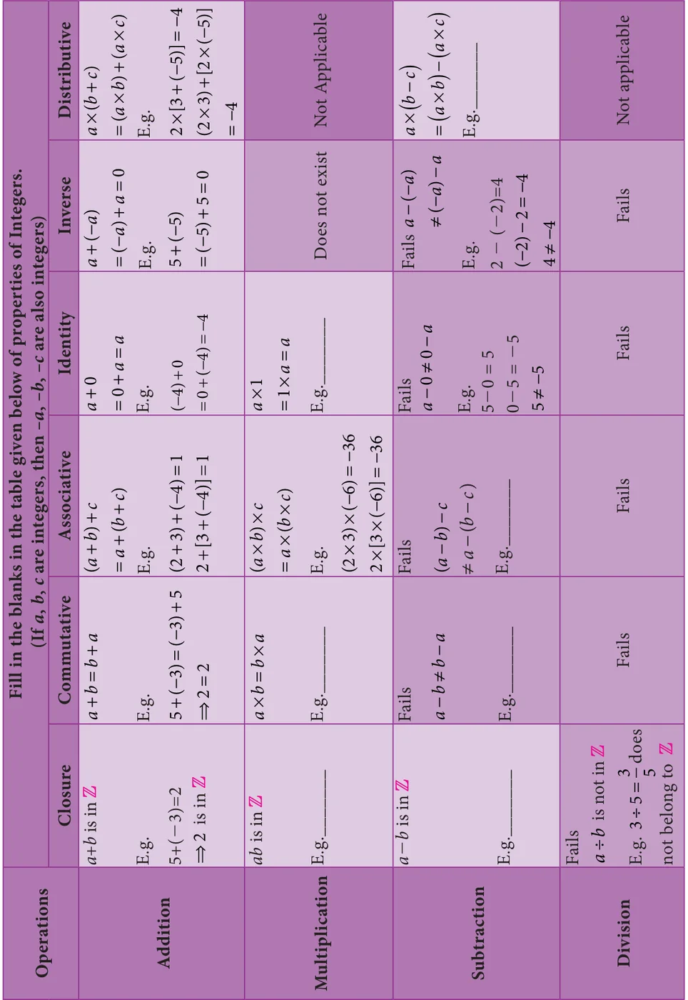</figure>
<p>Further,</p>
<figure class="fig side-fig">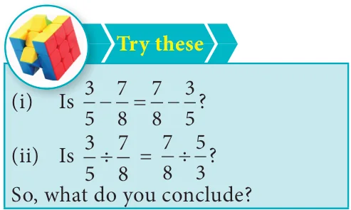</figure>
<figure class="fig">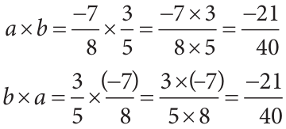</figure>
<p>Also,</p>
<p>Here, we find that \(a \times = \times\) and hence multiplication is commutative.</p>
<h3 id="s-1-5-3-associative-property-for-the-collection-of-rational-">1.5.3 Associative property for the collection of rational numbers</h3>
<ul class="qlist">
<li><span class="mk">i)</span><span class="lt">Associative property for Addition</span></li>
</ul>
<p>For any three rational numbers a, b, and c, \(a +\) (b + c) = (a + b) \(+ c\)</p>
<ul class="qlist">
<li><span class="mk">ii)</span><span class="lt">Associative property for Multiplication</span></li>
</ul>
<p>For any three rational numbers a, b, and c, a(bc) = (ab)c</p>
<p>Illustration</p>
<p>Take rational numbers a,b, as \(c a = \frac{ - 1}{2}\) , \(b = 35\) and \(c = \frac{ - 7}{10}\) Now, \(a b \frac{1356}{251010}\) (equivalent rationals with common denominators)</p>
<div class="mathblock"><p>\(a+b = \frac{ - +561}{1010} =\) (a \(+ b)+ c = 101 +\)  \(10 -\) 7= \(110 - 7 = 10 - 6 = - 53 ...(1)\) Also, \(b + c = 3 + - 7 = 6 + - 7 = 6 - 7 = - 1\)</p></div>
<div class="mathblock"><p>\(a+(b+c) = 1 1 5 1 5 1 6 3 ...(2)\)</p></div>
<p>2 10 10 10 10 10 5 (1) and (2) shows that ( \(+ )+ = +\) ( + ) is true for rational numbers.</p>
<p>Similarly, \(a \times =\)</p>
<div class="mathblock"><p>( \(\times\) ) \(\times = - \times - = - \times - \times = ...(3)\)</p></div>
<p>Also, \(\times = \times - = \times - = - \times\)</p>
<figure class="fig">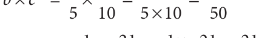</figure>
<div class="mathblock"><p>\(\times\) ( \(\times\) ) \(= ...(4)\)</p></div>
<p>(3) and (4) shows that ( \(\times\) ) \(\times = \times\) ( \(\times\) ) Thus, the associative property is true for addition and multiplication of rational numbers.</p>
<h3 id="s-1-5-4-identity-property-for-the-collection-of-rational-num">1.5.4 Identity property for the collection of rational numbers</h3>
<ul class="qlist">
<li><span class="mk">i)</span><span class="lt">Identity property for Addition</span></li>
</ul>
<p>For any rational number a, there exists a unique rational number 0 such that</p>
<div class="mathblock"><p>\(0 + a = a = a + 0\) .</p></div>
<ul class="qlist">
<li><span class="mk">ii)</span><span class="lt">Identity property for Multiplication</span></li>
</ul>
<p>For any rational number a, there exists a unique rational number 1 such that</p>
<div class="mathblock"><p>\(1 \times a = a = a \times 1\).</p></div>
<p>Illustration</p>
<p>Take a that is, a . Now 3 0 3 0 3 (Isn’t it?)</p>
<div class="mathblock"><p>\(\frac{3}{7} \frac{3}{7} 7 7 7\)</p></div>
<p>Hence, 0 is the additive identity for \(\frac{ - 3}{7}\) Also, 3 1 3 1 3 (Isn’t it?) 7 7 7 Hence, 1 is the multiplicative identity for \(\frac{ - 3}{7}\)</p>
<h3 id="s-1-5-5-inverse-property-for-the-collection-of-rational-numb">1.5.5 Inverse property for the collection of rational numbers</h3>
<ul class="qlist">
<li><span class="mk">i)</span><span class="lt">Additive Inverse property</span></li>
</ul>
<p>For any rational number a, there exists a unique rational number \(- a\) such that \(a +\) ( - a) = ( - a) \(+ a = 0\). Here, 0 is the additive identity.</p>
<ul class="qlist">
<li><span class="mk">ii)</span><span class="lt">Multiplicative Inverse property</span></li>
</ul>
<p>For any rational number b, there exists a unique rational number \(\frac{1}{b}\) such that \(b \times = \times b =1\). Here, 1 is the multiplicative identity.</p>
<div class="mathblock"><p>\(\frac{11}{bb}\)</p></div>
<p>Illustration</p>
<p>Take \(a \frac{11}{23}\) Now, a  \(\frac{1111}{2323}\) </p>
<div class="mathblock"><p>So, \(a +\) ( - a) \(= 0\)</p></div>
<div class="mathblock"><p>Also, ( \(- a)+ a = 11 11 11 11 0 0\)</p></div>
<div class="mathblock"><p>\(\therefore a +\) ( - a) = ( \(- a)+ a = 0\) is true.</p></div>
<p>Also, take \(b \frac{17}{29}\) . Now, \(\frac{12929}{b1717} b \times \frac{1}{b} = \frac{1729}{2917} 1\). Also, \(\frac{1}{b} \times b = \frac{2917}{1729} 1\)</p>
<div class="mathblock"><p>\(\therefore b \times \frac{11}{bb} = \times b =1\) is true.</p></div>
<h3 id="s-1-5-6-distributive-property-for-the-collection-of-rational">1.5.6 Distributive property for the collection of rational numbers</h3>
<p>Multiplication is distributive over addition for the collection of rational numbers.</p>
<p>For any three rational numbers a, b and c, the distributive law is a b c  a b a c</p>
<p>Illustration</p>
<p>Take rational numbers a,b,c as a 7 , \(b = 11\) and c 14 9 18 27</p>
<div class="mathblock"><p>Now, \(b+c = b c 11 14 33 28 33 28 5\)</p></div>
<p>18 27 54 54 54 54 (equivalent rationals with common denominators)</p>
<div class="mathblock"><p>\(\therefore a \times (b+c) = 7 5 7 5 35 ...(1)\)</p></div>
<div class="mathblock"><p>Also, \(a \times b = 7 11 7 11 77\)</p></div>
<div class="mathblock"><p>\(a \times c = 7 14 7 14 98\)</p></div>
<div class="mathblock"><p>\(\therefore\) (a \(\times b)+\) (a \(\times\) c) \(= - 77 + 98 9 \times 9 \times 2 9 \times 9 \times 3 = \frac{ - 77 \times 3+98 \times 2}{9 \times 9 \times 2 \times 3} = - 231486+196 = - 48635 ...(2)\)</p></div>
<p>(1) and (2) shows that \(a \times\) (b + c) = (a \(\times b)+\) (a \(\times\) c) .</p>
<p>Hence, multiplication is distributive over addition for the collection of rational numbers.</p>
<h2 class="callout-h" id="s-exercise-1-3">Exercise 1.3</h2>
<ul class="qlist">
<li><span class="mk">1.</span><span class="lt">Verify the closure property for addition and multiplication for the</span></li>
</ul>
<figure class="fig side-fig"></figure>
<p>rational numbers \(\frac{ - 5}{7}\) and \(\frac{8}{9}\) .</p>
<ul class="qlist">
<li><span class="mk">2.</span><span class="lt">Verify the commutative property for addition and multiplication for</span></li>
</ul>
<p>the rational numbers \(\frac{ - 10}{11}\) and \(- 33 8\).</p>
<ul class="qlist">
<li><span class="mk">3.</span><span class="lt">Verify the associative property for addition and multiplication for the rational numbers</span></li>
</ul>
<div class="mathblock"><p>\(\frac{ - 75 - 4}{963}\) , and .</p></div>
<ul class="qlist">
<li><span class="mk">4.</span><span class="lt">Verify the distributive property \(a \times\) (b + c) = (a \(\times\) b) \(+(a +\) c) for the rational numbers</span></li>
</ul>
<p>\(a \frac{1}{2}\) , \(b = 23\) and \(c \frac{5}{6}\) .</p>
<ul class="qlist">
<li><span class="mk">5.</span><span class="lt">Verify the identity property for addition and multiplication for the rational numbers</span></li>
</ul>
<p>\(\frac{15}{19}\) and \(\frac{ - 18}{25}\) .</p>
<ul class="qlist">
<li><span class="mk">6.</span><span class="lt">Verify the additive and multiplicative inverse property for the rational numbers</span></li>
</ul>
<div class="mathblock"><p>\(\frac{ - 7}{17}\) and 1727 .</p></div>
<p>Objective Type Questions Objective Type Questions</p>
<ul class="qlist">
<li><span class="mk">7.</span><span class="lt">Closure property is not true for division of rational numbers because of the number</span></li>
<li><span class="mk">(A)</span><span class="lt">1 (B) \(- 1\) (C) 0 (D) \(\frac{1}{2}\)</span></li>
<li><span class="mk">8.</span><span class="lt">\(12 -\)  \(34 -\) 65 \(\ne\)   \(12 -\) 34 -  65 illustrates that subtraction does not satisfy the ________</span></li>
</ul>
<p>property for rational numbers.</p>
<ul class="qlist">
<li><span class="mk">(A)</span><span class="lt">commutative (B) closure (C) distributive (D) associative</span></li>
<li><span class="mk">9.</span><span class="lt">Which of the following illustrates the inverse property for addition?</span></li>
</ul>
<p>\(\frac{11}{88} - = \frac{111}{884} + = \frac{11}{88} + = \frac{11}{88} - =\)</p>
<ul class="qlist">
<li><span class="mk">10.</span><span class="lt">   illustrates that multiplication is distributive over</span></li>
</ul>
<ul class="qlist">
<li><span class="mk">(A)</span><span class="lt">addition (B) subtraction (C) multiplication (D) division</span></li>
</ul>
<figure class="fig table-fig wide"></figure>
<h2 id="s-1-6-introduction-to-square-numbers">1.6 Introduction to Square Numbers</h2>
<figure class="fig table-fig wide"></figure>
<p>More often we write like this:</p>
<figure class="fig"></figure>
<div class="mathblock"><p>\(4 = 16\)</p></div>
<p>This says “4 squared is 16”</p>
<p>The 2 at the top stands for squared and it indicates the number of times the number 4</p>
<p>appears in the product \((4 = 4 \times 4 = 16)\). The numbers 1, 4, 9, 16, ... are all square numbers (also called perfect square numbers). Each of them is made up of the product of same two factors. A natural number n is called a square number, if we can find another natural number m</p>
<p>such that \(n = m\) .</p>
<p>Is 49 a square number? Yes, because it can be written as 7 .Is 50 a square number? The following table gives the squares of numbers up to 20.</p>
<figure class="fig table-fig wide"></figure>
<p>Try to extend the table up to 50 numbers! We can now easily verify the following properties of square numbers by referring the table given above: ™ The square numbers end with 0, 1, 4, 5, 6 and 9 only. ™ If a number ends with 1 or 9, its square ends with 1. ™ If a number ends with 2 or 8, its square ends with 4. ™ If a number ends with 3 or 7, its square ends with 9. ™ If a number ends with 4 or 6, its square ends with 6. ™ If a number ends with 5 or 0, its square also ends with 5 or 0 respectively. ™ Square of an odd number is always odd and the square of an even number is always even. ™ Numbers that end with 2,3,7 and 8 are not perfect squares.</p>
<h4 class="callout-h" id="s-think">Think</h4>
<ul class="qlist">
<li><span class="mk">1.</span><span class="lt">Is the square of a prime number, prime?</span></li>
<li><span class="mk">2.</span><span class="lt">Will the sum of two perfect squares always be a perfect square? What about their</span></li>
</ul>
<p>difference and their product?</p>
<h4 class="callout-h" id="s-try-these">Try these</h4>
<ul class="qlist">
<li><span class="mk">1.</span><span class="lt">Which among 256, 576, 960, 1025, 4096 are perfect square numbers?</span></li>
</ul>
<p>(Hint: Try to extend the table of squares already seen).</p>
<ul class="qlist">
<li><span class="mk">2.</span><span class="lt">One can judge just by look that each of the following numbers 82, 113, 1972, 2057,</span></li>
</ul>
<p>8888, 24353 is not a perfect square. Explain why?</p>
<h3 id="s-1-6-1-some-more-special-properties-of-square-numbers">1.6.1 Some more special properties of square numbers</h3>
<ul class="qlist">
<li><span class="mk">(i)</span><span class="lt">The square of a natural number other than 1, is either a multiple of 3 or exceeds a</span></li>
</ul>
<p>­multiple of 3 by 1.</p>
<ul class="qlist">
<li><span class="mk">(ii)</span><span class="lt">The square of a natural number, other than 1, is either a multiple of 4 or exceeds a</span></li>
</ul>
<p>­multiple of 4 by 1.</p>
<ul class="qlist">
<li><span class="mk">(iii)</span><span class="lt">The remainder of a perfect square when divided by 3, is either 0 or 1 but never 2.</span></li>
<li><span class="mk">(iv)</span><span class="lt">The remainder of a perfect square, when divided by 4, is either 0 or 1 but never</span></li>
</ul>
<p>2 and 3.</p>
<ul class="qlist">
<li><span class="mk">(v)</span><span class="lt">When a perfect square number is divided by 8, the remainder is either 0 or 1 or 4, but</span></li>
</ul>
<p>will never be equal to 2, 3, 5, 6 or 7.</p>
<figure class="fig wide">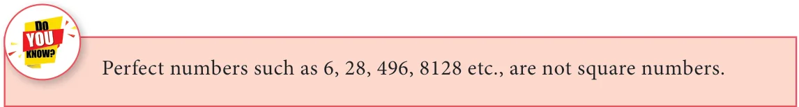</figure>
<h4 class="callout-h" id="s-note">Note</h4>
<p>If a perfect square number ends in zero, then it must end with even number of zeros always. We can verify this for a few numbers in the table given below. Number 10 20 30 40 ... 90 100 110 ... ... Its Square 100 400 900 1600 ... 8100 10000 12100 ... \(\frac{2000}{4000000}\) ...</p>
<h4 class="callout-h" id="s-think">Think</h4>
<p>Consider the claim: “Between the squares of the consecutive numbers n and (n+1), there are 2n non-square numbers”. Can it be true? How many non-square numbers are there between 2500 and 2601? Verify the claim.</p>
<h2 id="s-1-7-square-root">1.7 Square Root</h2>
<p>Squaring a number is another mathematical operation just like addition, subtraction, multiplication etc., Most mathematical operations have ‘inverse’ (meaning ‘opposite’) operations. For example, subtraction is the inverse of addition, division is the inverse of multiplication etc., Squaring also has an inverse operation namely finding the Square root.</p>
<p>The square root of a number n, written n (or) \(n \frac{1}{2}\) , is the number that gives n when multiplied by itself. For example, 81 is 9, because \(9 \times 9 = 81\).</p>
<p>In the adjacent table, we have square roots of all the perfect squares starting from 1 to 100.</p>
<p>If \(11^{2} = 121\), what is 121? If \(529 = 23^{2}\), what is the square</p>
<figure class="fig table-fig side-fig">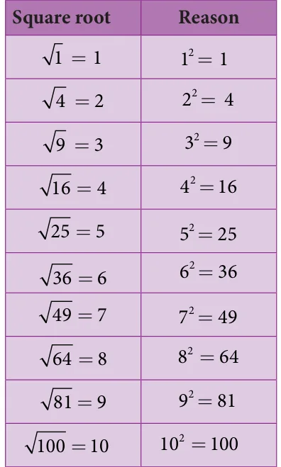</figure>
<p>root of 529? If we know that \(324 = 18\) , we can immediately tell that 324 is 18.</p>
<p>We have, \(1 = 1\) and so 1 is a square root of 1. Similarly,</p>
<p>( \(- 1) = 1\). So, ( \(- 1)\) is also a square root of 1.</p>
<p>\(2 = 4\) and so 2 is a square root of 4. Similarly, ( \(- 2) = 4\). So, ( \(- 2)\) is also a square root of 4.</p>
<p>This continues as \(3 = 9\) and so 3 is a square root of 9.</p>
<p>Similarly, ( \(- 3) = 9\). So, ( \(- 3)\) is also a square root of 9. The above examples suggest that there are two integral square roots for a perfect square number. However, in working out the problems, we will take up only positive integral square root. The positive square root of a number is always denoted by the symbol . Thus, 4 is 2 (and not \(- 2)\). Also, 9 is 3 (and not \(- 3)\). We have to remember that this is a universally accepted notation.</p>
<h3 id="s-1-7-1-square-root-through-prime-factorisation">1.7.1 Square root through Prime Factorisation</h3>
<p>Study the following table giving the prime factors of numbers and those of their squares.</p>
<figure class="fig table-fig wide"></figure>
<p>Look at 6 and its prime factors. How many times do 2 and 3 occur in 36 in the list? Now, look at its square 36 and its prime factors. How many times do 2 and 3 occur in 36 here?</p>
<p>Repeat the above task in the case of other numbers 8, 12, and 15 also. (We may also choose our own numbers and their squares). What do we find? We find that,</p>
<p>The number of times a prime factor occurs in the square of a number = twice the number of times it occurs inthe prime factorisation of the number.</p>
<p>We use this idea to find the square root of a square number. First, resolve the given number into prime factors. Group the identical factors in pairs and then take one from them to find the square root.</p>
<h4 class="callout-h" id="s-example-1-22">Example 1.22</h4>
<p>Find the square root of 324 by prime factorisation.</p>
<h4 class="callout-h" id="s-solution">Solution:</h4>
<p>First, resolve the given number into prime factors. Group the identical factors in pairs and then take one from them to find the square root.</p>
<div class="mathblock"><p>Now, \(324 = 2 \times 2 \times 3 \times 3 \times 3 \times 3 2 324\)</p><p>\(= 2 \times 3 \times 3 2 162\)</p></div>
<p>\((2 3 3)^{2} 3 81 3 27\)</p>
<p>324 (2 3 3) 3 9 2 3 3 3 3 324 18 1</p>
<h4 class="callout-h" id="s-example-1-23">Example 1.23</h4>
<p>Find the least number by which 250 is to be multiplied (or) divided so that the resulting number is a perfect square. Also, find the square root in that case. Solution: 5 250</p>
<div class="mathblock"><p>Here, \(250 = 5 \times 5 \times 5 \times 2\)</p></div>
<p>_{2} 5 10</p>
<div class="mathblock"><p>\(= 5 \times 5 \times 2 2 2\)</p></div>
<p>Here, the prime factors 5 and 2 do not have pairs. 1 Therefore, we can either divide 250 by \(10 (5 \times 2)\) or multiply 250 by 10.</p>
<ul class="qlist">
<li><span class="mk">(i)</span><span class="lt">If we multiply 250 by 10, we get \(2500 = 5 \times 5 \times 2 \times 5 \times 2\) and therefore the square</span></li>
</ul>
<p>root of 2500 would be \(5 \times 5 \times 2 = 50\).</p>
<ul class="qlist">
<li><span class="mk">(ii)</span><span class="lt">If we divide 250 by 10, we get 25 and in this case we get \(25 = 5 = 5\).</span></li>
</ul>
<h4 class="callout-h" id="s-example-1-24">Example 1.24</h4>
<p>Is 108 a perfect square number?</p>
<figure class="fig side-fig"></figure>
<p>Solution: 2 108</p>
<div class="mathblock"><p>Here, \(108 = 2 \times 2 \times 3 \times 3 \times 3 2 54\)</p><p>\(= 2 \times 3 \times 3 3 27\)</p></div>
<p>Here, the prime factor 3 does not 3 9 have a second pair. Hence, 108 is not a 3 3 perfect square number. 1</p>
<h3 id="s-1-7-2-finding-the-square-root-of-a-number-by-long-division">1.7.2 Finding the square root of a number by Long Division Method</h3>
<p>When we come across numbers with large number of digits, finding their square roots by factorisation becomes lengthy and difficult. Use of long division helps us in such cases. Let us look into the method with a couple of illustrations.</p>
<p>Illustration 1</p>
<p>Find the square root of 576 by long division method.</p>
<h4 class="callout-h" id="s-step-1">Step 1:</h4>
<p>and the remaining digit (if any) is called a period. Put a bar over every pair of digits Group the digits in pairs, starting with the digit in the unit’s place. Each pair 5 76 starting from the right of the given number. If there are odd number of digits, the extreme left digit will be without a bar sign above it. So, here we have 5 76</p>
<h4 class="callout-h" id="s-step-2">Step 2:</h4>
<p>Think of the largest number whose square is equal to or just less than \(2 \times 2\) the first period. Take this number as the divisor and also as the quotient. The left extreme number here is 5. The largest number whose square is less than or 5 76 equal to 5 is 2. This is our divisor and the quotient.</p>
<figure class="fig side-fig"></figure>
<h4 class="callout-h" id="s-step-3">Step 3:</h4>
<p>Bring 76 down and write it down to the right of 5 76 the remainder 1. Now, the new dividend is 176. 1 76</p>
<h4 class="callout-h" id="s-step-4">Step 4:</h4>
<p>To find the new divisor, multiply the earlier quotient (2) by 2 (always) and write it leaving a blank space next to it.</p>
<h4 class="callout-h" id="s-step-5">Step 5:</h4>
<p>The new divisor is 4 followed by a digit. We should choose this digit next to 4 such that the new quotient multiplied by the new divisor will be less than or equal to 176.</p>
<h4 class="callout-h" id="s-step-6">Step 6:</h4>
<p>Clearly, the required digit here has to be 4 or 6. (Why?)</p>
<p>When we calculate, 46 6 276 whereas .</p>
<figure class="fig">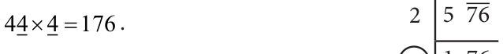</figure>
<p>Therefore, we put 4 in the blank space and write 44 4 subtract to get the remainder 0 and the quotient at the top, that is 24 is the \(\frac{1 76}{0}\) square root of 576. 576 24 .</p>
<p>Illustration 2</p>
<p>In the following example, follow the figures one after another and try to understand what each figure explains, the stage by stage and the gradual computation of computing the square root of 288369.</p>
<figure class="fig wide"></figure>
<h4 class="callout-h" id="s-example-1-25">Example 1.25</h4>
<p>Find the square root of 459684 by long division method.</p>
<h4 class="callout-h" id="s-solution">Solution:</h4>
<p>By long division method, we can find the square root of 459684 as given below:</p>
<figure class="fig">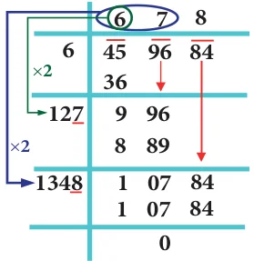</figure>
<p>459684 678</p>
<h4 class="callout-h" id="s-example-1-26">Example 1.26</h4>
<figure class="fig side-fig"></figure>
<p>The area of a square field is 3136 m . Find its perimeter.</p>
<p class="lead">? Solution:</p>
<p>Given that the area of the square field \(= 3136 m\) .</p>
<p>\(\therefore\) The side of square field \(= 3136 = 56 m \therefore\) The perimeter of the square field \(= 4 \times\) side</p>
<div class="mathblock"><p>\(= 4 \times 56 = 224 m\)</p></div>
<h4 class="callout-h" id="s-example-1-27">Example 1.27</h4>
<p>A real estate owner had two plots, a square plot of side 39 m and a rectangular plot of dimensions 100 m length and 64 m breadth. He sells both of these plots and acquires a new square plot of the same area. What is the length of side of his new plot?</p>
<h4 class="callout-h" id="s-solution">Solution:</h4>
<p>The transactions can be visualised as follows:</p>
<figure class="fig table-fig wide">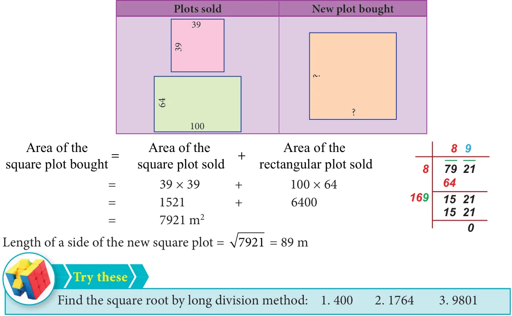</figure>
<h3 id="s-1-7-3-number-of-digits-in-the-square-root-of-a-perfect-squ">1.7.3 Number of digits in the square root of a perfect square number</h3>
<p>We made use of bars to find the square root in the division method. This marking bars help us to find the number of digits in the square root of a perfect square number. Observe the following examples (with bars shown as if we compute square root by division procedure).</p>
<figure class="fig table-fig wide">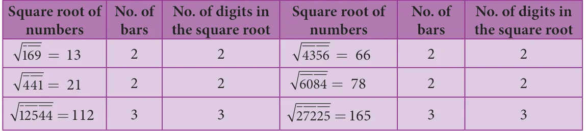</figure>
<p>Hence, we conclude that the number of bars indicates the number of digits in the square root.</p>
<figure class="fig wide">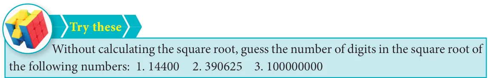</figure>
<h3 id="s-1-7-4-square-root-of-decimal-numbers">1.7.4 Square root of decimal numbers</h3>
<p>To compute the square root of numbers in the decimal form, we simply follow the following steps:</p>
<h4 class="callout-h" id="s-step-1">Step 1:</h4>
<figure class="fig side-fig"></figure>
<p>Make even number of decimal places even by affixing a zero on the extreme right of the digit in the decimal part (only if required).</p>
<h4 class="callout-h" id="s-step-2">Step 2:</h4>
<p>The number has an integral part and a decimal part. In the integral part, mark the bars as done in the case of division method to find the square root of a perfect square number.</p>
<figure class="fig side-fig"></figure>
<h4 class="callout-h" id="s-step-3">Step 3:</h4>
<p>In the decimal part, mark the bars on every pair of digits beginning with the first decimal place.</p>
<figure class="fig side-fig"></figure>
<h4 class="callout-h" id="s-step-4">Step 4:</h4>
<p>Now, calculate the square root by long division method.</p>
<h4 class="callout-h" id="s-step-5">Step 5:</h4>
<p>Put the decimal point in the square root as soon as the integral part is exhausted. 42 25. 6 5.</p>
<h3 id="s-1-7-5-square-root-of-product-and-quotient-of-numbers">1.7.5 Square root of product and quotient of numbers</h3>
<p>For any two positive numbers a and b. we have</p>
<figure class="fig side-fig">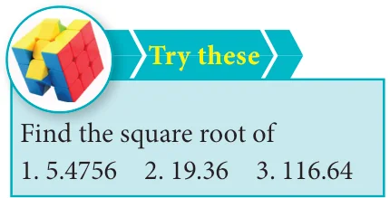</figure>
<figure class="fig"></figure>
<ul class="qlist">
<li><span class="mk">(i)</span><span class="lt">ab \(= a \times b\) and (ii) ( )</span></li>
</ul>
<h4 class="callout-h" id="s-example-1-28">Example 1.28</h4>
<p>Find the value of 256 .</p>
<h4 class="callout-h" id="s-solution">Solution:</h4>
<figure class="fig table-fig wide">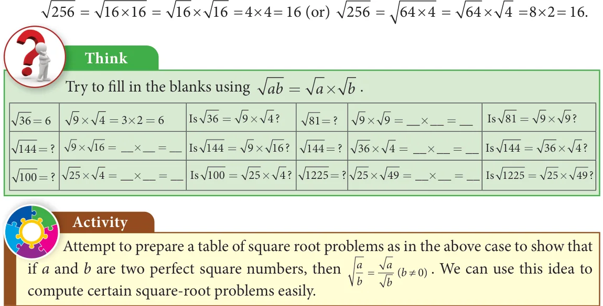</figure>
<h4 class="callout-h" id="s-example-1-29">Example 1.29</h4>
<p>Find the value of 42 25. .</p>
<h4 class="callout-h" id="s-solution">Solution:</h4>
<figure class="fig"></figure>
<p>We can write this as</p>
<p>Now, it is easy to compute the square root of the whole number 4225 by long division method as \(4225 = 65\) and so, we now get 42 25. \(= \frac{4225}{100} = 4225100 = 1065 = 6 5\). This is another way of tackling problems of square root of</p>
<h4 class="callout-h" id="s-try-these">Try these</h4>
<p>decimal numbers without any botheration of decimal symbol. Using this method, Example 1.30 find the square root of Simplify: (i) \(12 \times 3\) (ii) \(\frac{98}{162}\) the numbers 1.2321 and 11.9025.</p>
<h4 class="callout-h" id="s-solution">Solution:</h4>
<ul class="qlist">
<li><span class="mk">(i)</span><span class="lt">Remembering the rule, a b ab (ii) Remembering the rule, \(\frac{a}{b}\) ab (b 0)</span></li>
</ul>
<p>\(12 3 12 3 36 6 6 \frac{98}{162} \frac{249}{281} \frac{49}{81} \frac{7}{92} \frac{7}{9}\)</p>
<h4 class="callout-h" id="s-example-1-31">Example 1.31</h4>
<figure class="fig">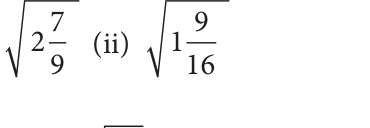</figure>
<p>Simplify: (i)</p>
<h4 class="callout-h" id="s-solution">Solution:</h4>
<ul class="qlist">
<li><span class="mk">(i)</span><span class="lt">\(2 \frac{7}{9} = \frac{25}{9} = \frac{5}{32} = \frac{52}{33} = \frac{9}{16} = \frac{25}{16} = \frac{5}{42} = \frac{51}{44} = 1\)</span></li>
</ul>
<p>Remark: In the case of the (ii) problem one may be tempted to give the answer immediately as \(1 \frac{3}{4}\) , but this is not correct since you have to convert the mixed fraction into an improper fraction and then use the rule \(\frac{a}{b}\) ab (b 0)</p>
<h3 id="s-1-7-6-approximating-square-roots-try-these">1.7.6 Approximating square roots Try these</h3>
<p>Can you write the given numbers 40 , 6 and 7 in Write the numbers in ascending order? Here 40 is not a square number and ascending order. so we cannot determine its root easily. However, we can 1. 4, 14 , 5 2. 7, 65 , 8 estimate an approximation to 40 and use it here.</p>
<p>We know that the two closest squares surrounding 40 are 36 and 49.</p>
<p>Thus, \(36 &lt; 40 &lt; 49\) which can be written as \(6 &lt; 40 &lt; 7\) .</p>
<p>Considering the square root, we have \(6 &lt; 40 &lt; 7\).</p>
<h2 class="callout-h" id="s-exercise-1-4">Exercise 1.4</h2>
<ul class="qlist">
<li><span class="mk">1.</span><span class="lt">Fill in the blanks:</span></li>
<li><span class="mk">(i)</span><span class="lt">The ones digit in the square of 77 is___________.</span></li>
<li><span class="mk">(ii)</span><span class="lt">The number of non-square numbers between 24 and 25 is ______.</span></li>
</ul>
<ul class="qlist">
<li><span class="mk">(iii)</span><span class="lt">The number of perfect square numbers between 300 and 500 is ______.</span></li>
<li><span class="mk">(iv)</span><span class="lt">If a number has 5 or 6 digits in it, then its square root will have ___________ digits.</span></li>
<li><span class="mk">(v)</span><span class="lt">The value of 180 lies between integers ______ and ______.</span></li>
<li><span class="mk">2.</span><span class="lt">Say True or False:</span></li>
<li><span class="mk">(i)</span><span class="lt">When a square number ends in 6, its square root will have 6 in the unit’s place.</span></li>
<li><span class="mk">(ii)</span><span class="lt">A square number will not have odd number of zeros at the end.</span></li>
<li><span class="mk">(iii)</span><span class="lt">The number of zeros in the square of 91000 is 9.</span></li>
<li><span class="mk">(iv)</span><span class="lt">The square of 75 is 4925.</span></li>
<li><span class="mk">(v)</span><span class="lt">The square root of 225 is 15.</span></li>
<li><span class="mk">3.</span><span class="lt">Find the square of the following numbers.</span></li>
<li><span class="mk">(i)</span><span class="lt">17 (ii) 203 (iii) 1098</span></li>
<li><span class="mk">4.</span><span class="lt">Examine if each of the following is a perfect square.</span></li>
<li><span class="mk">(i)</span><span class="lt">725 (ii) 190 (iii) 841 (iv) 1089</span></li>
<li><span class="mk">5.</span><span class="lt">Find the square root by prime factorisation method.</span></li>
<li><span class="mk">(i)</span><span class="lt">144 (ii) 256 (iii) 784 (iv) 1156 (v) 4761 (vi) 9025</span></li>
<li><span class="mk">6.</span><span class="lt">Find the square root by long division method.</span></li>
<li><span class="mk">(i)</span><span class="lt">1764 (ii) 6889 (iii) 11025 (iv) 17956 (v) 418609</span></li>
<li><span class="mk">7.</span><span class="lt">Estimate the value of the following square roots to the nearest whole number.</span></li>
<li><span class="mk">(i)</span><span class="lt">440 (ii) 800 (iii) 1020</span></li>
<li><span class="mk">8.</span><span class="lt">Find the square root of the following decimal numbers and fractions.</span></li>
</ul>
<p>( )i 2 89. (ii) 67 24. (iii) 2.0164 (iv) (v) 7</p>
<div class="mathblock"><p>\(\frac{14418}{22549}\)</p></div>
<ul class="qlist">
<li><span class="mk">9.</span><span class="lt">Find the least number that must be subtracted to 6666 so that it becomes a perfect square.</span></li>
</ul>
<p>Also, find the square root of the perfect square thus obtained.</p>
<ul class="qlist">
<li><span class="mk">10.</span><span class="lt">Find the least number by which 1800 should be multiplied so that it becomes a perfect square.</span></li>
</ul>
<p>Also, find the square root of the perfect square thus obtained.</p>
<p>Objective Type Questions Objective Type Questions</p>
<ul class="qlist">
<li><span class="mk">11.</span><span class="lt">The square of 43 ends with the digit ______.</span></li>
<li><span class="mk">(A)</span><span class="lt">9 (B) 6 (C) 4 (D) 3</span></li>
<li><span class="mk">12.</span><span class="lt">_______ is added to 24 to get 25 .</span></li>
</ul>
<ul class="qlist">
<li><span class="mk">(A)</span><span class="lt">4 (B) 5 (C) 6 (D) 7</span></li>
</ul>
<ul class="qlist">
<li><span class="mk">13.</span><span class="lt">48 is approximately equal to ______.</span></li>
<li><span class="mk">(A)</span><span class="lt">5 (B) 6 (C) 7 (D) 8</span></li>
</ul>
<figure class="fig"></figure>
<ul class="qlist">
<li><span class="mk">(C)</span><span class="lt">48 (D) 32</span></li>
<li><span class="mk">15.</span><span class="lt">The number of digits in the square root of 123454321 is ______.</span></li>
<li><span class="mk">(B)</span><span class="lt">5 (C) 6 (D) 7</span></li>
</ul>
<h2 id="s-1-8-cubes-and-cube-roots">1.8 Cubes and Cube Roots</h2>
<p>If you multiply a number by itself and then by itself again, the result is a cube number. This means that a cube number is a number that is the product of three identical numbers.</p>
<p>If n is a number, its cube is represented by n . Cube numbers can be represented visually as 3D cubes comprising of single unit cubes. Cube numbers are also called as perfect cubes. The perfect cubes of natural numbers are 1, 8, 27, 64, 125, 216, ... and so on.</p>
<figure class="fig table-fig wide">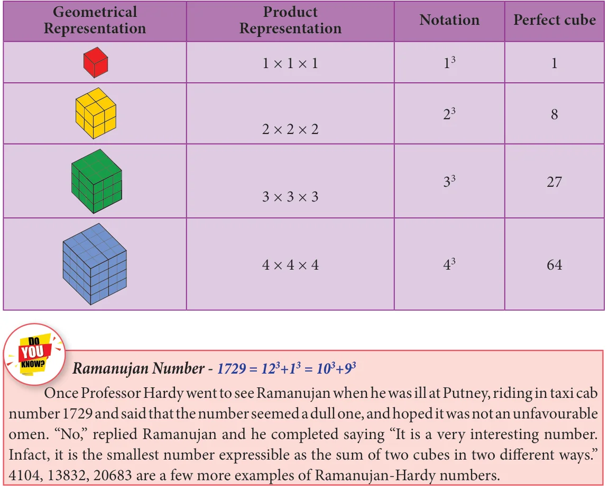</figure>
<p>\(\frac{1.8.1}{S\). No.} Properties of cubes of numbers</p>
<figure class="fig table-fig wide"></figure>
<h3 id="s-1-8-2-cube-root">1.8.2 Cube root</h3>
<p>The cube root of a number is the value that when cubed gives the original number. For example, the cube root of 27 is 3 because when 3 is cubed we get 27.</p>
<figure class="fig table-fig side-fig"></figure>
<p>Notation:</p>
<p>The cube root of a number x is denoted as</p>
<div class="mathblock"><p>x (or) \(x \frac{1}{3.}\)</p></div>
<p>Here are some more cubes and cube roots: \(^{3} 1 = 1\) since \(1^{3} = 1\), \(^{3} 8 = 2\) since \(2^{3} = 8\), \(^{3} 27 = 3\) since \(3^{3} = 27\), \(^{3} 64 = 4\) since \(4^{3} = 64\), \(^{3} 125 = 5\) since \(5^{3} = 125\) and so on.</p>
<h4 class="callout-h" id="s-example-1-32">Example 1.32</h4>
<p>Is 400 a perfect cube?</p>
<h4 class="callout-h" id="s-solution">Solution:</h4>
<p>By prime factorisation, we have \(400 = 2 \times 2 \times 2 \times 2 \times 5 \times 5\).</p>
<p>There is only one triplet. To make further triplets, we will need two more 2’s and one more 5. Therefore, 400 is not a perfect cube.</p>
<h4 class="callout-h" id="s-example-1-33">Example 1.33</h4>
<p>Find the smallest number by which 675 must be multiplied to obtain a perfect cube. Solution: 675 We find that, \(675 = 3 \times 3 \times 3 \times 5 \times 5\) …………….(1) \(\frac{3}{3} 225\) Grouping the prime factors of 675 as triplets, we are left over with \(5 \times 5.We\) need one more 5 to make it a perfect cube. \(\frac{3}{5} 75 25\)</p>
<p>To make 675 a perfect cube, multiply both sides of (1) by 5.</p>
<div class="mathblock"><p>\(675 \times 5 = 3 \times 3 \times 3 \times 5 \times 5 \times 5 3375 = 3 \times 3 \times 3 \times 5 \times 5 \times 5\) Think</p></div>
<p>Now, 3375 is a perfect cube. Thus, the smallest In this question, if the word required number to multiply 675 such that the new ‘multiplied’ is replaced by the word number perfect cube is 5. ‘divided’, how will the solution vary?</p>
<h3 id="s-1-8-3-cube-root-of-a-given-number-by-prime-factorisation">1.8.3 Cube root of a given number by Prime Factorisation</h3>
<p>Step 1: Resolve the given number into the product of prime factors. Step 2: Make triplet groups of same primes. Step 3: Choosing one from each triplet, find the product of primes to get the cube root.</p>
<h4 class="callout-h" id="s-example-1-34">Example 1.34</h4>
<p>Find the cube root of 27000.</p>
<h4 class="callout-h" id="s-solution">Solution:</h4>
<figure class="fig wide"></figure>
<h4 class="callout-h" id="s-example-1-35">Example 1.35</h4>
<figure class="fig">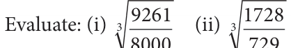</figure>
<div class="mathblock"><p>Solution: \(\frac{1}{3}\)</p></div>
<figure class="fig"></figure>
<figure class="fig">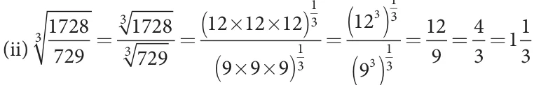</figure>
<aside class="sidenote"><p>( )</p></aside>
<h2 class="callout-h" id="s-exercise-1-5">Exercise 1.5</h2>
<ul class="qlist">
<li><span class="mk">1.</span><span class="lt">Fill in the blanks:</span></li>
<li><span class="mk">(i)</span><span class="lt">The ones digits in the cube of 73 is____________.</span></li>
<li><span class="mk">(ii)</span><span class="lt">The maximum number of digits in the cube of a two digit number is _______.</span></li>
<li><span class="mk">(iii)</span><span class="lt">The smallest number to be added to 3333 to make it a perfect cube is ___________.</span></li>
<li><span class="mk">(iv)</span><span class="lt">The cube root of \(540 \times 50\) is ___________.</span></li>
<li><span class="mk">(v)</span><span class="lt">The cube root of 0.000004913 is ___________.</span></li>
</ul>
<figure class="fig side-fig"></figure>
<ul class="qlist">
<li><span class="mk">2.</span><span class="lt">Say True or False:</span></li>
<li><span class="mk">(i)</span><span class="lt">The cube of 24 ends with the digit 4.</span></li>
<li><span class="mk">(ii)</span><span class="lt">Subtracting 10 from 1729 gives 9 .</span></li>
</ul>
<ul class="qlist">
<li><span class="mk">(iii)</span><span class="lt">The cube of 0.0012 is 0.000001728.</span></li>
<li><span class="mk">(iv)</span><span class="lt">79570 is not a perfect cube.</span></li>
<li><span class="mk">(v)</span><span class="lt">The cube root of 250047 is 63.</span></li>
<li><span class="mk">3.</span><span class="lt">Show that 1944 is not a perfect cube.</span></li>
<li><span class="mk">4.</span><span class="lt">Find the smallest number by which 10985 should be divided so that the quotient is a</span></li>
</ul>
<p>perfect cube.</p>
<ul class="qlist">
<li><span class="mk">5.</span><span class="lt">Find the smallest number by which 200 should be multiplied to make it a perfect cube.</span></li>
<li><span class="mk">6.</span><span class="lt">Find the cube root of \(24 \times 36 \times 80 \times 25\).</span></li>
<li><span class="mk">7.</span><span class="lt">Find the cube root of 729 and 6859 by prime factorisation.</span></li>
<li><span class="mk">8.</span><span class="lt">What is the square root of cube root of 46656?</span></li>
<li><span class="mk">9.</span><span class="lt">If the cube of a squared number is 729, find the square root of that number.</span></li>
<li><span class="mk">10.</span><span class="lt">Find the two smallest perfect square numbers which when multiplied together gives a</span></li>
</ul>
<figure class="fig table-fig wide">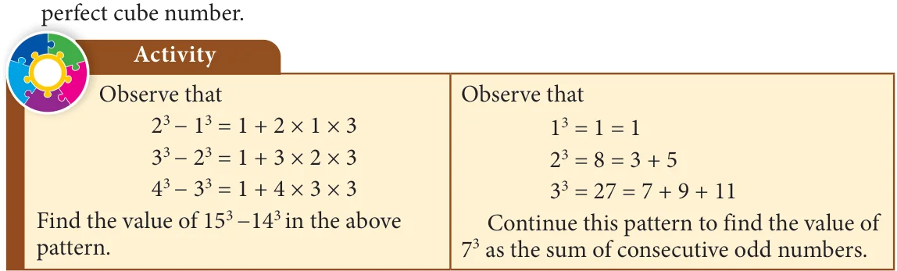</figure>
<h2 id="s-1-9-exponents-and-powers">1.9 Exponents and Powers</h2>
<p>We know how to express some numbers as squares and cubes. For</p>
<figure class="fig side-fig"></figure>
<p>example, we write 5 for 25 and5 for 125. In general terms, an expression that represents repeated multiplication of the same factor is called a power. The number 5 is called the base and the number 2 is called the exponent (more often called as power). The exponent corresponds to the number of times the base is used as a factor.</p>
<h3 id="s-1-9-1-powers-with-positive-exponents">1.9.1 Powers with positive exponents</h3>
<p>Value of powers given by positive whole number exponents quite often increase rapidly. Observe the following example:</p>
<div class="mathblock"><p>\(2 = 2\)</p></div>
<div class="mathblock"><p>\(2 = 2 \times 2=4\)</p></div>
<div class="mathblock"><p>\(2 = 2 \times 2 \times 2=8\)</p></div>
<div class="mathblock"><p>\(2 = 2 \times 2 \times 2 \times 2 =16\)</p></div>
<div class="mathblock"><p>\(2 = 2 \times 2 \times 2 \times 2 \times 2 =32\)</p></div>
<div class="mathblock"><p>\(2 = 2 \times 2 \times 2 \times 2 \times 2 \times 2 =64\)</p></div>
<div class="mathblock"><p>\(2 = 2 \times 2 \times 2 \times 2 \times 2 \times 2 \times 2 =128\)</p></div>
<div class="mathblock"><p>\(2 = 2 \times 2 \times 2 \times 2 \times 2 \times 2 \times 2 \times 2 =256\)</p></div>
<div class="mathblock"><p>\(2 = 2 \times 2 \times 2 \times 2 \times 2 \times 2 \times 2 \times 2 \times 2 =512\)</p></div>
<div class="mathblock"><p>\(2 = 2 \times 2 \times 2 \times 2 \times 2 \times 2 \times 2 \times 2 \times 2 \times 2 =1024\)</p></div>
<p>At this rate of increase, what do you think 2 will be?</p>
<div class="mathblock"><p>In fact, \(2 =1267650600228229401496703205376\)</p></div>
<p>Thus, we understand that the positive exponential notation with positive power could be useful when we come across with large numbers.</p>
<h3 id="s-1-9-2-powers-with-zero-and-negative-exponents">1.9.2 Powers with zero and negative exponents</h3>
<p>Observe this pattern: \(2^{5}= 32\) Starting from the beginning, what happens in the successive steps? We _{4} find that the result is half of that of the previous step. So, what can we say about</p>
<div class="mathblock"><p>\(2 = 16 _{0} _{5} _{4} _{3}\)</p></div>
<p>2 ? If we prepare a table like this for 3 , 3 , 3 , and so on what will it tell us \(2^{3}= 8\) about \(3^{0}\)? We can use the same process as in this pattern, to conclude that any \(2^{2}= 4\) non-zero number raised to the zero exponent must result in 1. Thus,</p>
<div class="mathblock"><p>\(^{2}^{1}= 2 a^{0}= 1\), where \(a \ne 0\)</p><p>\(2 =\) ?</p></div>
<p>Let us see what happens if we extend the above pattern further downward.</p>
<p>As before, starting from the beginning, in the successive steps, we find that \(2^{3}= 8\) the result is half of that of the previous step. Since \(2^{0} = 1\), the next step is \(2 - 1\), \(2^{2}= 4\) whose value is the previous step’s value 1, divided by 2, that is \(\frac{1}{2}\) . Next is \(2 - ^{2}\), \(2^{1}= 2\)</p>
<p>which is the same as \(\frac{1}{2}\) divided by 2, that is \(\frac{1}{4}\) and so on. Thus, \(2 - 1 = 1\)</p>
<div class="mathblock"><p>\(2 = \frac{1}{2}\)</p></div>
<p>In general, \(a - ^{m} = \frac{1}{am}\) , where m is an integer \(2 - 2 = \frac{1}{4}\)</p>
<div class="mathblock"><p>\(2 = \frac{1}{8}\)</p></div>
<aside class="sidenote"><p>\(- 3\)</p></aside>
<h3 id="s-1-9-3-expanded-form-of-numbers-using-exponents">1.9.3 Expanded form of numbers using exponents</h3>
<p>In the lower classes, we have learnt how to write a whole number in the expanded form.</p>
<p>For example, \(5832 =\) 5´1000 + 8´100 + 3´10 + 2´1</p>
<p>\(= 5´10^{3}+ 8´10^{2}+ 3´10^{1}+ 2\) (when we use exponential notation).</p>
<p>What shall we do if we get decimal places? Powers of 10 with negative exponents come to our rescue! Thus, \(58.32 = 50 + 8 + \frac{3}{10} + 2100\) Expand the following Try these = 5´10 + 8´1 + 3´ \(\frac{1}{10} +\) 2´ \(\frac{1}{100}\) numbers using exponents:1. 8120 2. 20305</p>
<div class="mathblock"><p>\(= 5´10^{1} + 8´10^{0} +\) 3´10 \(- 1 +\) 2´10 \(- 2 3\). 3652.01 4. 9426.521</p></div>
<h3 id="s-1-9-4-laws-of-exponents">1.9.4 Laws of Exponents</h3>
<p>Laws of exponents arise out of certain basic ideas. A positive exponent of a number indicate how many times we use that number in a multiplication whereas a negative exponent suggests us how many times we use that number in a division, since the opposite of multiplying is dividing. z Product law According to this law, when multiplying two powers that have the same base, we can add the exponents. That is,</p>
<figure class="fig"></figure>
<p>where a (a \(\ne 0)\), m, n are integers. Note that the base should be the same in both the quantities.</p>
<p>Examples:</p>
<ul class="qlist">
<li><span class="mk">a)</span><span class="lt">\(2^{3} \times 2^{2} = 2^{5}by\) law(meaning 8´4 \(= 32\) and note that it is not \(2^{3}´^{2}\) )</span></li>
</ul>
<div class="mathblock"><p>\(- 4 - 3\) ( \(- 4)+( - 3) - 7\)</p></div>
<p>( \(- 2) \times -\) ( \(2) =\) ( \(- 2)\) by law and so = ( \(- 2)\)</p>
<ul class="qlist">
<li><span class="mk">b)</span><span class="lt">(or)</span></li>
</ul>
<p>\(- 4 - 3 1 1 1 1 1 - 7\)</p>
<div class="mathblock"><p>( \(- 2) \times -\) ( \(2) = _{4} \times _{3} = _{4} _{3} = _{4}_{+}_{3} = _{7} =( - 2)\) ( \(- 2)\) ( \(- 2)\) ( \(- 2) \times -\) ( 2) ( \(- 2)\) ( \(- 2)\)</p></div>
<p>\(3 - 3 3 - 3 0\)</p>
<ul class="qlist">
<li><span class="mk">c)</span><span class="lt">( \(- 5) \times -\) ( \(5) =( - 5)\) by law and so \(=( - 5) =1\)</span></li>
</ul>
<p>z Quotient law</p>
<p>According to this law, when dividing two powers that have the same base we can subtract the exponents. That is,</p>
<figure class="fig">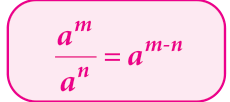</figure>
<p>where a (a \(^{1} 0)\), m, n are integers. Note that the base should be the same in both the quantities. How does it work? Study the following examples.</p>
<p>Examples:</p>
<p>( 3) _{5} _{2} _{3} _{2} ( 3) by lawand ( 3) 27 ( 3) (or)</p>
<p>5 ( 3) 5 2 5 2 3</p>
<ul class="qlist">
<li><span class="mk">a)</span><span class="lt">_{2} ( 3) ( 3) ( 3) ( 3)</span></li>
</ul>
<p>( 3) (or)</p>
<div class="mathblock"><p>\(\frac{(3)}{(3)2}\) ( 3) ( 3)</p></div>
<p>( 3) ( 3) ( 3) ( 3) ( 3) _{3} ( 3) ( 3) ( 3) ( 3)</p>
<p>(( \(- - 7)7)^{100}^{98} =\) ( \(- 7)^{100} - ^{98}\) by law and ( \(- 7)^{2} = 49\)</p>
<ul class="qlist">
<li><span class="mk">b)</span><span class="lt">(or)</span></li>
</ul>
<p>(( \(- - 7)7)^{100}^{98} =\) (( \(- - 7)7) \times \times\) (( \(- - 7)7) \times \times\) (( \(- - 7)7) \times \times ...100\) times... 98 times = ( \(- 7) \times\) ( \(- 7) = 49\)</p>
<p>z Power law According to this law, when raising a power to another power, we can just multiply the exponents.</p>
<figure class="fig">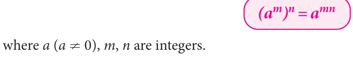</figure>
<p>Examples:</p>
<p>[(-2) ] \(= (-2)\) by law and(-2) \(= 64\)</p>
<div class="mathblock"><p>\(3 \times 2\)</p></div>
<p>(or)</p>
<div class="mathblock"><p>[(-2) ] \(= [(-2) \times (-2) \times (-2)] = [-8] = 64\)</p></div>
<h4 class="callout-h" id="s-try-these">Try these</h4>
<p>Verify the following rules (as we did above). Here, a,b are non-zero integers and m, n are any integers.</p>
<ul class="qlist">
<li><span class="mk">1.</span><span class="lt">Product of same powers to power of product rule: \(a \times b =\) (ab)</span></li>
</ul>
<ul class="qlist">
<li><span class="mk">2.</span><span class="lt">Quotient of same powers to power of quotient rule: \(\frac{aa}{bmb} =\)  </span></li>
</ul>
<ul class="qlist">
<li><span class="mk">3.</span><span class="lt">Zero exponent rule: \(a = 1\).</span></li>
</ul>
<h4 class="callout-h" id="s-example-1-36">Example 1.36</h4>
<p>Find the value of (i) \(4 - ^{3}\) (ii) \(\frac{1}{2 - 3}\) (iii) ( \(- 2)^{5} \times\) ( \(- 2) - 3\) (iv) \(\frac{3}{3 - 2}\)</p>
<h4 class="callout-h" id="s-solution">Solution:</h4>
<p>\(- _{3} 1 1 1 _{3}\)</p>
<div class="mathblock"><p>\(4 4 \times 4 \times 4 64 \frac{1}{23}\)</p></div>
<ul class="qlist">
<li><span class="mk">(i)</span><span class="lt">\(4 = _{3} = =\) (ii) 2 2 2 2 8</span></li>
<li><span class="mk">(iii)</span><span class="lt">( 2) ( 2) ( 2) ( 2) 2 2 4 (iv) \(\frac{3}{3-2} = 3 \times 3 = 9 \times 9 = 81\)</span></li>
</ul>
<h4 class="callout-h" id="s-example-1-37">Example 1.37</h4>
<p>Simplify and write the answer in exponential form:</p>
<ul class="qlist">
<li><span class="mk">(i)</span><span class="lt">\((3^{5} \div 3^{8})^{5} \times 3 - ^{5}\) (ii) ( \(- 3)^{4} \times\)  \(\frac{5}{3}\) </span></li>
</ul>
<h4 class="callout-h" id="s-solution">Solution:</h4>
<p>5 5 5 58 5 5 3 5 5 35 5 15 5 155 20</p>
<ul class="qlist">
<li><span class="mk">(i)</span><span class="lt">\(\frac{3}{38}\)   3  (3 ) 3 (3 ) 3 3 3 3 3 3 3</span></li>
<li><span class="mk">(ii)</span><span class="lt">3  \(\frac{545}{334}\)   3  5</span></li>
</ul>
<p>4  4 4 4</p>
<h4 class="callout-h" id="s-example-1-38">Example 1.38</h4>
<p>Find x so that ( \(- 7) \times\) ( \(- 7) =( - 7)\)</p>
<div class="mathblock"><p>x+2 5 10</p></div>
<h4 class="callout-h" id="s-solution">Solution:</h4>
<div class="mathblock"><p>x+2 5 10</p><p>(-7) ´(-7) =(-7)</p></div>
<p>x25 10</p>
<p>Since the bases are equal, we equate the exponents to get x 7 10 x 10 7 3</p>
<h3 id="s-1-9-5-standard-form-and-scientific-notation">1.9.5 Standard Form and Scientific Notation</h3>
<p>Standard form of a number is just the number as we normally write it. We use expanded notation to show the value of each digit. That is, it is exhibited as a sum of each digit duly multiplied by its matching place value (like ones, tens, hundreds etc.,). For example, 195 is in standard form. It can be expanded as \(195 = 1 \times 100 + 9 \times 10 + 5 \times 1\).</p>
<p>Astronomers, biologists, engineers, physicists and many others come across quantities whose measures require very small or very large numbers. If they write the numbers in standard form, it may not help us to understand or make computations easily. Scientific notation is a way to make these numbers easier to work with.</p>
<p>To write in scientific notation, follow the form \(S \times 10\) . where S is a number (integer or integer with decimal) between 1 and 10, but not 10 itself, and a is a positive or negative integer. Thus, a number in scientific notation is written as the product of a number (integer or integer with decimal) and a power of 10. We move the decimal place forward or backward until we have a number from 1 to 9. Then, we add a power of ten that tells how many places you moved the decimal forward or backward.</p>
<p>Examples:</p>
<figure class="fig table-fig wide"></figure>
<p>Some more examples:</p>
<ul class="qlist">
<li><span class="mk">(a)</span><span class="lt">The diameter of the earth is 12756000 miles. This can be easily written in scientific</span></li>
</ul>
<p>form as 1 2756. ´10 miles.</p>
<ul class="qlist">
<li><span class="mk">(b)</span><span class="lt">The volume of Jupiter is about 143300000000000 km This can be easily written in scientific</span></li>
</ul>
<aside class="sidenote"><p>3.</p></aside>
<div class="mathblock"><p>form as 1 433. \(\times 10\) .</p></div>
<ul class="qlist">
<li><span class="mk">(c)</span><span class="lt">The size of a bacterium is 0.00000085 mm. This can be easily written in scientific</span></li>
</ul>
<div class="mathblock"><p>form as 8 5. \(\times\) mm.</p></div>
<figure class="fig wide">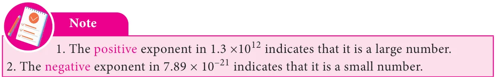</figure>
<h4 class="callout-h" id="s-example-1-39">Example 1.39</h4>
<p>Combine the scientific notations: (i) 7 10 5 2. 10 (ii) 3 7. 10 2 10</p>
<h4 class="callout-h" id="s-solution">Solution:</h4>
<ul class="qlist">
<li><span class="mk">(i)</span><span class="lt">7 10 5 2. \(10 = 36.4 \times 10 = 3.64 \times 10\)</span></li>
</ul>
<p>\(5 3 - 8\)</p>
<ul class="qlist">
<li><span class="mk">(ii)</span><span class="lt">3 7. \(10 2 10 = 7.4 \times 10\)</span></li>
</ul>
<h4 class="callout-h" id="s-example-1-40">Example 1.40</h4>
<p>Write the following scientific notations in standard form:</p>
<ul class="qlist">
<li><span class="mk">(i)</span><span class="lt">2 27. \(10 ^{4}\) (ii) Light travels at 1 86. \(\times 10^{5}\) miles per second.</span></li>
</ul>
<h4 class="callout-h" id="s-solution">Solution:</h4>
<ul class="qlist">
<li><span class="mk">(i)</span><span class="lt">2 27. 10 0 000227. .</span></li>
</ul>
<ul class="qlist">
<li><span class="mk">(ii)</span><span class="lt">Light travels at 1 86. \(\times 10^{5}\) miles per second \(= 186000\) miles per second</span></li>
</ul>
<h4 class="callout-h" id="s-try-these">Try these</h4>
<ul class="qlist">
<li><span class="mk">1.</span><span class="lt">Write in standard form: Mass of planet Uranus is 8.68 ´ \(10^{25}\) kg.</span></li>
<li><span class="mk">2.</span><span class="lt">Write in scientific notation: (i) 0.000012005 (ii) 4312.345 (iii) 0.10524</span></li>
</ul>
<p>(iv)The distance between the Sun and the planet Saturn 1.4335´10 miles.</p>
<h2 class="callout-h" id="s-exercise-1-6">Exercise 1.6</h2>
<ul class="qlist">
<li><span class="mk">1.</span><span class="lt">Fill in the blanks:</span></li>
</ul>
<p>even integer 7</p>
<ul class="qlist">
<li><span class="mk">(i)</span><span class="lt">( \(- 1)\) is _____________. (iv) 2 ____________.</span></li>
</ul>
<ul class="qlist">
<li><span class="mk">(ii)</span><span class="lt">For \(_{3} a ^{1} 0_{3}\) , a is ______________. (v) \(\frac{1}{3}\)  ____________.</span></li>
<li><span class="mk">(iii)</span><span class="lt">4 5 __________.</span></li>
<li><span class="mk">2.</span><span class="lt">Say True or False:</span></li>
</ul>
<div class="mathblock"><p>\(\frac{1}{64}\)</p></div>
<ul class="qlist">
<li><span class="mk">(i)</span><span class="lt">If \(8^{x} =\) ,the value of x is 22.</span></li>
<li><span class="mk">(ii)</span><span class="lt">The simplified form of \((256) \frac{ - 1}{4} \times 4^{2}\) is 1 .</span></li>
</ul>
<ul class="qlist">
<li><span class="mk">(iii)</span><span class="lt">Using the power rule, 3 3 .</span></li>
</ul>
<ul class="qlist">
<li><span class="mk">(iv)</span><span class="lt">The standard form of \(2 \times 10\) is 0 0002. .</span></li>
</ul>
<p>\(- 4\)</p>
<aside class="sidenote"><p>\(- 2\)</p></aside>
<ul class="qlist">
<li><span class="mk">(v)</span><span class="lt">The scientific form of 123.456 is 1 23456. \(\times 10\) .</span></li>
</ul>
<p>3 -5 -3</p>
<ul class="qlist">
<li><span class="mk">3.</span><span class="lt">Evaluate: (i)  \(\frac{1}{2}\)  (ii) çç \(\frac{æ1}{çè2ø}\) ö \(\div \div \div\) (iii) \(\frac{æ-5ö}{çè6ø}\) çç \(\div \div \div\) (iv) \((2^{-}^{5}´2^{7})¸2^{-}^{2}\) (v) \((2^{-}^{1}´3^{-}^{1})¸6^{-}^{2}\)</span></li>
</ul>
<p>\(4 -2 -2 -3 - 3\)</p>
<ul class="qlist">
<li><span class="mk">4.</span><span class="lt">Evaluate: (i) \(\frac{æ2ö}{èç5ø}\) çç \(\div \div \div\) ´ \(\frac{æ5ö}{èç2ø}\) çç \(\div \div \div\) (ii) \(\frac{æ4ö \div\) }{èç5ø} çç \(\div \div\) ¸ \(\frac{æ4ö \div\) }{èç5ø} çç \(\div \div\) (iii) \(2^{7} \times\)  \(\frac{1}{2}\) </span></li>
<li><span class="mk">5.</span><span class="lt">Evaluate: (i) \((5^{0} +6 - ^{1}) \times 3^{2}\) (ii) \((2 - ^{1} +3 - ^{1}) \div 6 - ^{1}\) (iii) \((3^{-}^{1} +4^{-}^{2} +5^{-}^{3})^{0}\)</span></li>
<li><span class="mk">6.</span><span class="lt">Simplify: (i) (3 ) \(\times (2 \times 3\) ) \(\times (18)\) (ii) \(\frac{9´7´2}{843}\) (iii) \(\frac{2 \times 2187}{35 \times 32}\)</span></li>
</ul>
<p>\(2 3 5 - 2 2\)</p>
<p>2x-1 5 -4 x 2 -5</p>
<div class="mathblock"><p>\(2 \frac{5´5´5}{512}\)</p></div>
<ul class="qlist">
<li><span class="mk">7.</span><span class="lt">Solve for x : (i) \(_{x}_{+}_{2} = 4\) (ii) \(= 5\)</span></li>
<li><span class="mk">8.</span><span class="lt">Expand using exponents: (i) 6054.321 (ii) 897.14</span></li>
<li><span class="mk">9.</span><span class="lt">Find the number in standard form for the following expansions:</span></li>
</ul>
<p>4 3 2 1 -2 -4</p>
<ul class="qlist">
<li><span class="mk">(i)</span><span class="lt">8´10 +7´10 +6´10 +5´10 +2´1+4´10 +7´10</span></li>
<li><span class="mk">(ii)</span><span class="lt">\(5310^{3}1 5310^{1}1 5310 - 11 5310 - 3\)</span></li>
<li><span class="mk">(iii)</span><span class="lt">The radius of a hydrogen atom is \(2.5 \times 10 m\)</span></li>
</ul>
<aside class="sidenote"><p>\(- 11\)</p></aside>
<ul class="qlist">
<li><span class="mk">10.</span><span class="lt">Write the following numbers in scientific notation:</span></li>
<li><span class="mk">(i)</span><span class="lt">467800000000 (ii) 0.000001972 (iii) 1642.398</span></li>
<li><span class="mk">(iv)</span><span class="lt">Earth’s volume is about 1,083,000,000,000 cubic kilometres</span></li>
<li><span class="mk">(v)</span><span class="lt">If you fill a bucket with dirt, the portion of the whole Earth that is in the bucket will be</span></li>
</ul>
<p>0.0000000000000000000000016 kg</p>
<p>Objective Type QuestionsObjective Type Questions</p>
<ul class="qlist">
<li><span class="mk">11.</span><span class="lt">By what number should ( \(- 4)\) be multiplied so that the product becomes 10 ?</span></li>
</ul>
<p>\(- 1 -1\)</p>
<ul class="qlist">
<li><span class="mk">(A)</span><span class="lt">\(\frac{2}{3}\) (B) \(\frac{ - 2}{5}\) (C) \(\frac{5}{2}\) (D) \(\frac{ - 5}{2}\)</span></li>
<li><span class="mk">12.</span><span class="lt">( \(- 2) \times\) ( \(- 2) =\) ____________.</span></li>
</ul>
<p>\(- 3 - 2\)</p>
<ul class="qlist">
<li><span class="mk">(A)</span><span class="lt">\(\frac{ - 1}{32}\) (B) \(\frac{1}{32}\) (C) 32 (D) \(- 32\)</span></li>
<li><span class="mk">13.</span><span class="lt">Which is not correct?</span></li>
</ul>
<p>  \(- 2\)   \(- _{1}\)  \(- _{1}\) (A) \(\frac{ -\) 1}{4} = 4 (B)  \(\frac{ -\) 11}{42} =   (C)  \(\frac{ -\) 1}{4} =16 (D) -  \(\frac{1}{4}\) =16</p>
<ul class="qlist">
<li><span class="mk">14.</span><span class="lt">If \(\frac{10}{10-3} =10\) , then x is ____________.</span></li>
</ul>
<p>(A)4 (B) 5 (C) 6 (D) 7</p>
<ul class="qlist">
<li><span class="mk">15.</span><span class="lt">0.0000000002020 in scientific form is ____________.</span></li>
</ul>
<div class="mathblock"><p>(A)2 02. ´10 (B) 2 02. \(\times 10\) (C) 2 02. \(\times 10\) (D) 2 02. \(\times 10\)</p></div>
<p>\(9 - 9 - 8 - 10\)</p>
<h2 class="callout-h" id="s-exercise-1-7">Exercise 1.7</h2>
<p>Miscellaneous Practice Problems Miscellaneous Practice Problems</p>
<figure class="fig side-fig"></figure>
<ul class="qlist">
<li><span class="mk">1.</span><span class="lt">If \(\frac{3}{4}\) of a box of apples weighs 3 kg and 225 gm, how much does</span></li>
</ul>
<p>a full box of apples weigh?</p>
<ul class="qlist">
<li><span class="mk">2.</span><span class="lt">Mangalam buys a water jug of capacity \(3 \frac{4}{5}\) litre. If she buys another jug which is 2 2</span></li>
</ul>
<p>times as large as the smaller jug, how many litre can the larger one hold?</p>
<ul class="qlist">
<li><span class="mk">3.</span><span class="lt">Ravi multiplied \(\frac{25}{8}\) and \(\frac{16}{15}\) and he says that the simplest form of this product is \(\frac{10}{3}\)</span></li>
</ul>
<p>and Chandru says the answer in the simplest form is Are they both correct? Explain. \(3 \frac{1}{3}\) . Who is correct? (or)</p>
<ul class="qlist">
<li><span class="mk">4.</span><span class="lt">Find the length of a room whose area is \(\frac{153}{10}\) sq.m and whose breadth is 2 1120 m.</span></li>
<li><span class="mk">5.</span><span class="lt">There is a large square portrait of a leader that covers an area of \(4489 cm^{2}\). If each</span></li>
</ul>
<p>side has a 2 cm liner, what would be its area?</p>
<ul class="qlist">
<li><span class="mk">6.</span><span class="lt">A greeting card has an area 90 cm . Between what two whole numbers is the length</span></li>
</ul>
<p>of its side?</p>
<ul class="qlist">
<li><span class="mk">7.</span><span class="lt">225 square shaped mosaic tiles, each of area 1 square decimetre exactly cover a square</span></li>
</ul>
<p>shaped verandah. How long is each side of the square shaped verandah?</p>
<ul class="qlist">
<li><span class="mk">8.</span><span class="lt">If 1906624´ \(x =3100\), find x.</span></li>
</ul>
<div class="mathblock"><p>m-1 m+1</p></div>
<ul class="qlist">
<li><span class="mk">9.</span><span class="lt">If \(2 +2 =640\), then find m.</span></li>
<li><span class="mk">10.</span><span class="lt">Give the answer in scientific notation:</span></li>
</ul>
<p>A human heart beats at an average of 80 beats per minute. How many times does it beat in i) an hour? ii) a day? iii) a year? iv) 100 years?</p>
<p>Challenging ProblemsChallenging Problems</p>
<ul class="qlist">
<li><span class="mk">11.</span><span class="lt">In a map, if 1 inch refers to 120 km, then find the distance between two cities B and</span></li>
</ul>
<p>C which are B and C. \(4 \frac{1}{6}\) inches and 313 inches from the city A which lies between the cities</p>
<ul class="qlist">
<li><span class="mk">12.</span><span class="lt">Give an example and verify each of the following statements.</span></li>
<li><span class="mk">(i)</span><span class="lt">The collection of all non-zero rational numbers is closed under division.</span></li>
<li><span class="mk">(ii)</span><span class="lt">Subtraction is not commutative for rational numbers.</span></li>
<li><span class="mk">(iii)</span><span class="lt">Division is not associative for rational numbers.</span></li>
<li><span class="mk">(iv)</span><span class="lt">Distributive property of multiplication over subtraction is true for rational</span></li>
</ul>
<p>numbers. That is, a(b - c) = ab - ac.</p>
<ul class="qlist">
<li><span class="mk">(v)</span><span class="lt">The mean of two rational numbers is rational and lies between them.</span></li>
<li><span class="mk">13.</span><span class="lt">If \(\frac{1}{4}\) of a ragi adai weighs 120 grams, what will be the weight of \(\frac{2}{3}\) of the same</span></li>
</ul>
<p>ragi adai?</p>
<ul class="qlist">
<li><span class="mk">14.</span><span class="lt">If \(p + 2q =18\) and pq \(= 40\) , find \(\frac{21}{pq} +\) .</span></li>
<li><span class="mk">15.</span><span class="lt">Find x if \(5 5x \times 3 34 = 21\).</span></li>
</ul>
<div class="mathblock"><p>\(\frac{1}{10}\)</p></div>
<ul class="qlist">
<li><span class="mk">16.</span><span class="lt">By how much does \(\frac{1}{10} _{11}\) exceed \(\frac{}{11}\) ?</span></li>
<li><span class="mk">17.</span><span class="lt">A group of 1536 cadets wanted to have a parade forming a square design. Is it possible?</span></li>
</ul>
<p>If it is not possible, how many more cadets would be required?</p>
<ul class="qlist">
<li><span class="mk">18.</span><span class="lt">Evaluate: 286225 and use it to compute 2862 25. \(+ 28 6225\).</span></li>
<li><span class="mk">19.</span><span class="lt">Simplify: \((3.769 \times 10\) ) \(+ (4.21 \times 10\) )</span></li>
</ul>
<ul class="qlist">
<li><span class="mk">20.</span><span class="lt">Order the following from the least to the greatest: 16 , 8 , 3 , 4 , 2</span></li>
</ul>
<h4 class="callout-h" id="s-summary">SUMMARY</h4>
<p>\(^{z} A\) number that can be expressed in the form \(b \ne 0\) is called a rational number. \(\frac{a}{b}\) where a and b are integers and z All natural numbers, whole numbers, integers and fractions are rational numbers. z Every rational number can be represented on a number line. z 0 is neither a positive nor a negative rational number. z A rational number \(\frac{a}{b}\) is said to be in the standard form if its denominator b is a positive integer and \(HCF (a,b)=1\)</p>
<figure class="fig table-fig wide">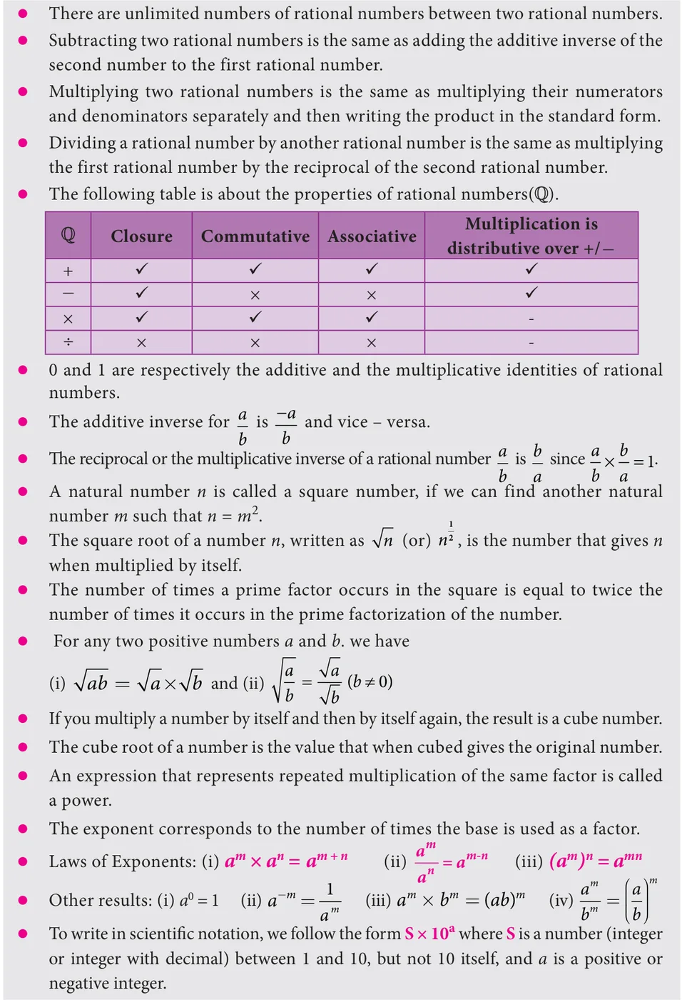</figure>
<h4 class="callout-h" id="s-ict-corner">ICT CORNER</h4>
<p>Step-1 Through this activity you will know about scan the QR CODE given below. the rational numbers, operations on them and study their properties as well. Step-2 Type Rational Numbers on the search column</p>
<p>Step-3 Move the numerator and denominator slide to show the different rational numbers and click the number line models to show the number line.</p>
<p>Step 1 Step 2</p>
<p>Web URL rational numbers (rational number links)</p>
<p>*Pictures are indicatives only. *If browser requires, allow Flash Player or Java Script to load the page.</p>
<h4 class="callout-h" id="s-ict-corner">ICT CORNER</h4>
<p>Step-1 Open the Browser type the URL Link given below (or) Scan the QR Code. GeoGebra work sheet named Expected Outcome “8th Standard III term” will open. Select the work sheet named “Square root_prime factors”</p>
<p>Step-2 Click on “ NEW PROBLEM” and check the calculation.</p>
<p>Step 1 Step 2</p>
<p>Browse in the link Numbers:</p>
<h2 id="s-2-measurements">2 MEASUREMENTS</h2>
<h3 id="s-learning-objectives">Learning Objectives</h3>
<p>To know the parts of a circle. To calculate the length of arc, area and circumference of a sector. To calculate the area and the perimeter of combined plane figures. To understand the representation of 3-D shapes in 2-D. To understand the representation of 3-D objects with cubes.</p>
<h2 id="s-2-1-introduction">2.1 Introduction</h2>
<p>An important aspect in everyone’s day-to-day life is ‘to measure’. Measuring the length of a rope, the distance between two places, finding the perimeter and area of plots and lands, building the structures under specified measures etc., are a few of the many situations where the concept of ‘measure’ is used. It is said that the biggest invention by man is the wheel. The wheel is otherwise called as the ‘cradle of invention’. What is the shape of a wheel? Circle, isn’t it? In the things we use, apart from circles, we can also see different shapes like triangles, squares, rectangles etc., Measurements play a vital role in everyone’s life. Not only the persons who learns proper mathematics in schools, but also the layman uses his logical thinking to apply the concept of measurements when he needs. For example, a carpenter who carves out the wooden wheels of a temple car wants to protect the outer surface by an iron strap. With all his experience, he says that a 22 feet strap will be required for a 7 feet high (diameter) wooden wheel.</p>
<figure class="fig table-fig wide"></figure>
<figure class="fig"></figure>
<p>We have already learnt how to find the perimeter and the area of shapes like circles, triangles, squares, rectangles, trapeziums, parallelograms etc. In this chapter, we shall see the parts of a circle and how to find the perimeter and the area of a sector and some combined shapes.</p>
<p>Recap</p>
<p>The teacher asks the students to calculate the area of the circle of radius 7 cm. Many students have solved it as in Method 1, but a few of them have done it as in Method 2.</p>
<figure class="fig table-fig wide">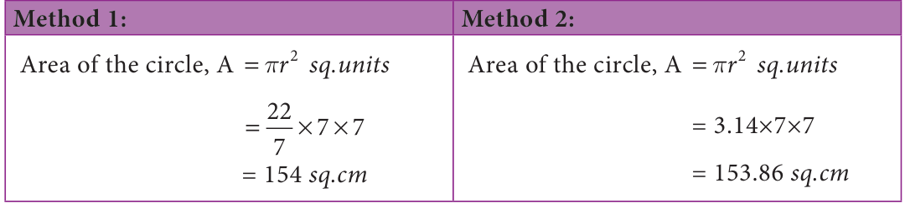</figure>
<p>Then, they had the following conversation: Sudha : Which of these two answers is correct, Teacher ? Teacher : Both answers are correct but only approximate. Sudha : We get two answers for the same question. How is it possible, teacher? Teacher : We can infact solve this exactly as \(\pi \times 7 \times 7= 49 \pi\) sq.cm. Meena : When we find the area of a square, a rectangle etc., we all get unique answers, but why is the area of a circle not unique ?</p>
<figure class="fig side-fig"></figure>
<p>Teacher : What is the value of \(\pi\) ? Meena : The value of \(\pi\) is \(\frac{22}{7}\) or 3.14 Teacher : Actually it is neither \(\frac{22}{7}\) nor 3.14. They are only approximate values.</p>
<p>Meena : Then, what is the exact value of \(\pi\) ? Teacher : Though \(\pi\) is the constant, it is a non-terminating and non-recurring decimal number. So, we are not able to use its exact value and to make the calculations easy, \(\frac{22}{7}\) or 3.14 is used as the approximate value of \(\pi\) . Meena : Is the area of a circle always approximate, teacher? Teacher : No, it is an exact answer unless we substitute the value of \(\pi\) as \(\frac{22}{7}\) or 3.14. Meena : Then, for the above problem, \(49 \pi\) sq.cm is an exact answer whereas 154 sq.cm and 153.86 sq.cm. are approximate answers. Am I right, teacher?</p>
<p>Teacher : Yes, you are right Meena.</p>
<p>The circumference of a circle is \(2 \pi r\) units, which can also be written as \(\pi\) dunits. As \(\pi =3.14\) (approximately) and it is slightly more than 3, for some quick guess, we shall say that a circle whose diameter is d units shall have its circumference slightly more than three times its diameter.</p>
<p>For example,</p>
<p>If a round table of diameter of 3m is to be decorated by flower strings around it, it will require a little more than 9m of flower strings.</p>
<h2 id="s-2-2-parts-of-a-circle">2.2 Parts of a Circle</h2>
<p>A circle is the path traced by a moving point so that its distance</p>
<p>from a fixed point is always constant. The fixed point of the circle is called its ‘centre’ and the constant distance is called its ‘radius’.</p>
<p class="caption">Fig. 2.1</p>
<p>Further, if any two points on the circrumference of a circle are</p>
<p>joined by a line segment, then the line segment is called a ‘chord’. A chord divides a circle into two parts. A chord which passes through _{O} the centre of a circle is called as a ‘diameter’. A diameter of a circle \(^{B}\) Diameter \(^{C}\)</p>
<aside class="sidenote"><p>Chord</p></aside>
<p>divides it into two equal parts. It is also the ‘longest chord’ of a circle. D E</p>
<p>Activity Fig. 2.2</p>
<ul class="qlist">
<li><span class="mk">1.</span><span class="lt">Using a bangle, draw a circle on the paper and cut it. Then mark any two</span></li>
</ul>
<p>points A and B on it and fold the circle so that the fold has A and B on it. Now, this line segment represents a chord.</p>
<ul class="qlist">
<li><span class="mk">2.</span><span class="lt">By paper folding, find two diameters and hence the centre of a circle.</span></li>
<li><span class="mk">3.</span><span class="lt">Check whether the diameter of a circle is twice its radius.</span></li>
</ul>
<h3 id="s-2-2-1-circular-arc-and-circular-sector">2.2.1 Circular Arc and Circular Sector</h3>
<p>Look at the glass bangle and the pizza given in Fig. 2.3 carefully.</p>
<p>Though both are of circular shapes, what we understand is that, the bangle indicates the boundary of</p>
<p>the circle, whereas the pizza indicates the plane enclosed within the boundary of the circle. Thus, it is clear that the bangle indicates the circumference of the circle whereas A2 the pizza indicates the area of the circle.</p>
<p class="caption">Fig. 2.3</p>
<p>From them, cut a part as shown in Fig. 2.4. \(^{B}\)</p>
<aside class="sidenote"><p>A A_{1}</p></aside>
<p>Each of the glass bangle pieces represents the circular arcs. Here, arc AB (AB)is the smaller one and Fig. 2.4</p>
<p>arc BA ( BA ) is the larger one. Each of the parts of the pizza represents the circular sectors. Here A_{1} is the minor sector and A_{2} is the major sector. ™ A part of the circumference of a circle is called a circular arc. ™ The plane surface that is enclosed between two radii and the circular arc of a circle is called a sector. Fig. 2.5 ™ Each part of a circle which is divided by a chord is called a segment.</p>
<figure class="fig side-fig"></figure>
<figure class="fig table-fig wide">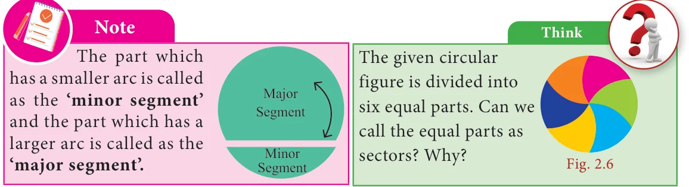</figure>
<p>Central Angle</p>
<p>The angle formed by a sector of a circle at its centre is called the central angle. The vertex of the central angle of the sector is the centre of the circle. The two arms of it are</p>
<figure class="fig table-fig wide">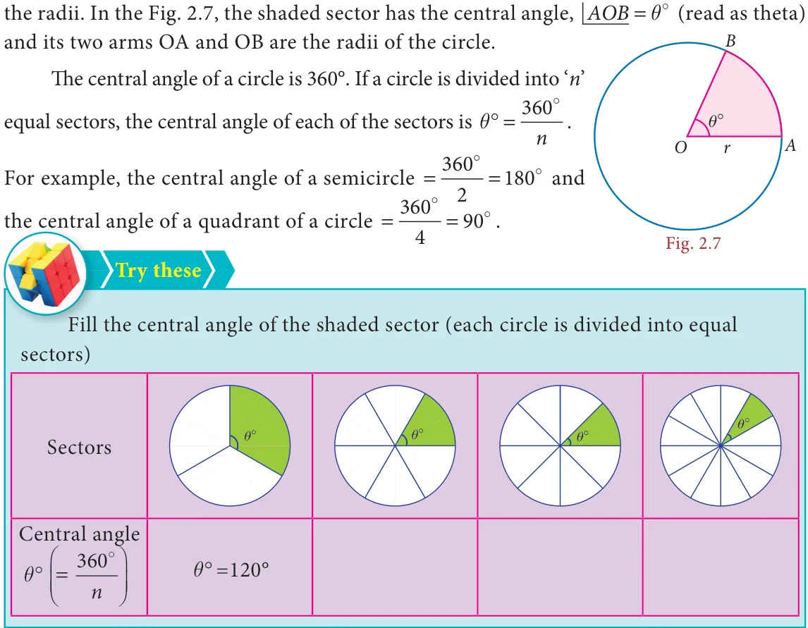</figure>
<p>2.2.2 Length of the arc and Area of the sector \(^{\circ}\)</p>
<figure class="fig table-fig side-fig">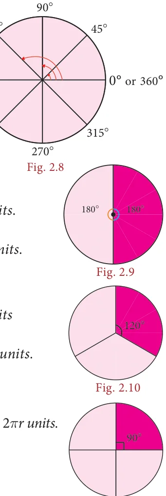</figure>
<p>We have already learnt that a circle of radius ‘r’ units has Central angle \(= 360 ^{\circ}\) Circumference of the circle \(= 2 \pi\) units</p>
<p>Area of the circle \(= \pi r\) Sq.units. First, let us take a circle . If a circle is divided into 2 equal sectors we will get 2 semi-circles. The length of a semi-circular arc is half of the circumference of the circle and the area of the semi-circle is half of the area of the circle.</p>
<p>Length of the semi-circular arc \(= \frac{1}{2} \times = \frac{180}{360} \times\)</p>
<p>Area of the semi-circle \(= \frac{1}{2} \times = \frac{180}{360} \times\) pr Smilarly, if a circle is divided into 3 equal sectors,</p>
<p>Length of the arc of this sector \(= \frac{1}{3} \times = \frac{120}{360} \times\)</p>
<p>Area of the sector \(= \frac{1}{3} \times = \frac{120}{360} \times\) pr In the same way, if a circle is divided into 4 equal sectors,</p>
<p>Length of the arc of the circular quadrant \(= \frac{190}{4360} \times =\)</p>
<p>Area of the quadrant \(= \frac{1}{4} \times\) pr \(= \frac{90}{360} \times\) sq.units What do we know from this?</p>
<p> 2</p>
<p>If the ratio of the central angle of a sector to the central angle of a circle is multiplied with the circumference and the area of the circle, we can find the length of the arc of that sector and its area respectively. That is, if we assume that the central angle of a sector of radius ‘r’ units as θ \(^{\circ}\) , then, the ratio of the central angle \(q ^{\circ}\) to \(360 ^{\circ}\) is \(\frac{q ^{\circ}\) }{360} .</p>
<p class="caption">Fig. 2.11</p>
<p>Length of the arc, \(l = \frac{θ}{360} \times 2 \pi r\) units</p>
<p>Area of the sector, \(A = \frac{θ}{360} \times \pi r\) sq.units.</p>
<p> 2</p>
<h4 class="callout-h" id="s-think">Think</h4>
<p>Instead of multiplying by 1 , 1 and 1 , we shall multiply by \(180 ^{\circ}\) , \(120 ^{\circ} 2 3 4 360 ^{\circ} 360 ^{\circ}\) and \(\frac{90 ^{\circ} }{360 ^{\circ}\) } respectively. Why?</p>
<h4 class="callout-h" id="s-note">Note</h4>
<ul class="qlist">
<li><span class="mk">1.</span><span class="lt">If a circle of radius r units divided into n equal sectors, then the</span></li>
</ul>
<p>Length of the arc of each of the sectors \(= \frac{1}{n} \times 2pr\) units and</p>
<p>Area of each of the sectors \(= \frac{1}{n} \times\) pr sq.units</p>
<ul class="qlist">
<li><span class="mk">2.</span><span class="lt">Also, the area of the sector is derived as \(= \frac{θ ^{\circ} }{360} ^{\circ} \times \pi r\)</span></li>
</ul>
<div class="mathblock"><p>\(= \frac{1θ ^{\circ}\) }{2360}  \(^{\circ} \times 2 \pi\) r \(\times\)  \(r =\)  \(\frac{1lr}{22} \times\) l \(\times r =\) sq.units</p></div>
<p>2.2.3 Perimeter of a sector _{r}</p>
<p>We already know that the total length of the boundary of a _{l} closed part is its perimeter, Isn’t it? What is the boundary of \(a ^{O}\) sector? Two radii (OA and OB) and an arc AB . Fig. \(2.12^{r} _{A}\) So, the perimeter of a sector = length of the arc + length of two radii</p>
<div class="mathblock"><p>\(P = l + 2r\) units</p></div>
<p>\(\therefore\) Perimeter of a sector, \(P = l + 2r\) units</p>
<p>Tamil people always have a prominent role in the history of Mathematics. They had recorded in the form of a song on how to find the area of a circle, a few thousand years before itself, in the book titled ‘Kanakkathikaram’. (கணக்கதிகாரம்). The song is as follows:</p>
<p>“வட்்டத்்தரை கொ&gt;ொண்டு விட்்டத்்தரை தாக்்கச் சட்்டடெனத் தோ�ோன்றும் குழி ” Meaning:</p>
<p>‘வட்்டத்்தரை’ represents half of the circumference and ‘விட்்டத்்தரை’ represents half of the diameter which is the radius and ‘குழி’ represents the area. In this song, the Tamil people had recorded that, if half the circumference is multiplied by half the diameter, the area of the circle can be calculated. Area of the circle = வட்்டத்்தரை \(\times\) விட்்டத்்தரை \(= 12\) of circumference \(\times 12\) of diameter =  \(\frac{1}{2} \times\) 2pr \(\times\)  r</p>
<p>\(\therefore\) Area of the circle, \(A =\) pr sq.units</p>
<h4 class="callout-h" id="s-note">Note</h4>
<aside class="sidenote"><p>r uni</p></aside>
<ul class="qlist">
<li><span class="mk">1.</span><span class="lt">The perimeter of a semi-circle</span></li>
</ul>
<div class="mathblock"><p>\(P = l+2r\) units</p></div>
<p>pr 2r (p 2)r units \(_{A} _{r} _{O} _{r} _{B} B _{l}=\) units</p>
<div class="mathblock"><p>\(\frac{pr}{2}\)</p></div>
<ul class="qlist">
<li><span class="mk">2.</span><span class="lt">The perimeter of a circular quadrant r</span></li>
</ul>
<div class="mathblock"><p>\(P = l + 2r = \frac{prp}{22} + 2r =\)  + 2 r units \(^{O} ^{r} ^{A}\)</p></div>
<h4 class="callout-h" id="s-example-2-1">Example 2.1</h4>
<p>The radius of a sector is 21cm and its central angle is \(120 ^{\circ}\) . Find (i) the length of the arc (ii) area of the sector (iii) perimeter of sector. p \(= \frac{22}{7}\) </p>
<figure class="fig side-fig"></figure>
<h4 class="callout-h" id="s-solution">Solution:</h4>
<p>Radius, \(r = 21\) cm and central angle, θ \(= 120 ^{\circ}\) .</p>
<ul class="qlist">
<li><span class="mk">(i)</span><span class="lt">Length of the arc, \(l = \frac{θ ^{\circ} }{360} ^{\circ} \times 2 \pi r\) units</span></li>
</ul>
<div class="mathblock"><p>\(\frac{12022}{3607} 2 21\)</p><p>\(= 44\) cm (approximately)</p></div>
<ul class="qlist">
<li><span class="mk">(ii)</span><span class="lt">Area of the sector, \(A = \frac{θ ^{\circ} }{360} ^{\circ} \times \pi r\) sq.units.</span></li>
</ul>
<p class="caption">Fig. 2.13</p>
<figure class="fig side-fig"></figure>
<div class="mathblock"><p>\(\frac{12022}{3607} 21 21 A = 462\) sq.cm (approximately)</p></div>
<ul class="qlist">
<li><span class="mk">(iii)</span><span class="lt">Perimeter of the sector, \(P = l + 2r\) units</span></li>
</ul>
<div class="mathblock"><p>\(= 44+2 \times 21 = 44+42 = 86\) cm (approximately)</p></div>
<h4 class="callout-h" id="s-example-2-2">Example 2.2</h4>
<p>A circular shaped gymnasium ring of radius 35cm is divided into 5 equal arcs shaded with different colours. Find the length of each of the arcs.</p>
<figure class="fig side-fig"></figure>
<h4 class="callout-h" id="s-solution">Solution:</h4>
<p>Radius, \(r = 35\) cm and \(n = 5\). Length of each of the arcs, \(l = \frac{1}{n} \times 2pr\) units</p>
<div class="mathblock"><p>\(= \frac{1}{5} \times 2 \times p \times 35 =14p\) cm. Fig. 2.14</p></div>
<h4 class="callout-h" id="s-example-2-3">Example 2.3</h4>
<p>A spinner of radius 7.5 cm is divided into 6 equal sectors. Find the area of each of the sectors.</p>
<figure class="fig side-fig">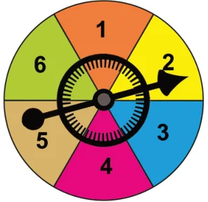</figure>
<h4 class="callout-h" id="s-solution">Solution:</h4>
<p>Radius, \(r = 7.5\) cm and \(n = 6\).</p>
<p>Area of each of the sectors, \(A = \frac{1}{n} \times\) pr sq. units</p>
<div class="mathblock"><p>\(= \frac{1}{6} \times p \times 7 5\). \(\times 7 5\). \(= 9 375\). p sq. cm Fig. 2.15</p></div>
<h4 class="callout-h" id="s-example-2-4">Example 2.4</h4>
<p>Kamalesh has a dining table, circular in shape of radius 70 cm whereas Tharun has a circular quadrant dining table of radius 140 cm. Whose dining table has a greater</p>
<div class="mathblock"><p>area? p \(= \frac{22}{7}\) </p></div>
<figure class="fig side-fig"></figure>
<h4 class="callout-h" id="s-solution">Solution:</h4>
<p>Area of the dining table with Kamalesh =pr sq. units</p>
<div class="mathblock"><p>\(= \frac{22}{7} \times 70 \times 70\) Fig. \(2.16 A = 15400\) sq.cm (approximately.)</p></div>
<p>Area of the circular quadrant dining table with Tharun</p>
<div class="mathblock"><p>\(= \frac{12122}{447}\) pr \(= \times \times 140 \times 140 A = 15400\) sq.cm (approximately.)</p></div>
<p>We find that, the area of the dining tables of both of them have the same area.</p>
<p class="caption">Fig. 2.17</p>
<h4 class="callout-h" id="s-think">Think</h4>
<p>If the radius of a circle is doubled, what will happen to the area of the new circle so formed?</p>
<h4 class="callout-h" id="s-example-2-5">Example 2.5</h4>
<figure class="fig side-fig"><figcaption>Fig. 2.18</figcaption></figure>
<p>Four identical medals, each of diameter 7cm are placed as shown in Fig. 2.18. Find the area of the shaded region between the medals. p \(= \frac{22}{7}\) </p>
<h4 class="callout-h" id="s-solution">Solution:</h4>
<figure class="fig">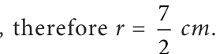</figure>
<div class="mathblock"><p>Diameter, \(d = 7\) cm, .</p></div>
<p>Area of the shaded region = Area of the square \(- 4 \times\) Area of the circular quadrant</p>
<div class="mathblock"><p>\(= a - 4 \times\) pr</p></div>
<figure class="fig"></figure>
<p>= ( \(\times\) ) -  </p>
<div class="mathblock"><p>\(= 49 - 38.5 = 10.5\) sq.cm. (approximately)</p></div>
<h2 class="callout-h" id="s-exercise-2-1">Exercise 2.1</h2>
<ul class="qlist">
<li><span class="mk">1.</span><span class="lt">Fill in the blanks:</span></li>
<li><span class="mk">(i)</span><span class="lt">The ratio between the circumference and diameter of any circle is _______.</span></li>
<li><span class="mk">(ii)</span><span class="lt">A line segment which joins any two points on a circle is a ___________.</span></li>
<li><span class="mk">(iii)</span><span class="lt">The longest chord of a circle is __________.</span></li>
<li><span class="mk">(iv)</span><span class="lt">The radius of a circle of diameter 24 cm is _______.</span></li>
<li><span class="mk">(v)</span><span class="lt">A part of circumference of a circle is called as _______.</span></li>
<li><span class="mk">2.</span><span class="lt">Match the following:</span></li>
<li><span class="mk">(i)</span><span class="lt">Area of a circle - (a) \(\frac{1}{4}\) pr</span></li>
</ul>
<ul class="qlist">
<li><span class="mk">(ii)</span><span class="lt">Circumference of a circle - (b) (p \(+ 2)r\)</span></li>
<li><span class="mk">(iii)</span><span class="lt">Area of the sector of a circle - (c) pr</span></li>
</ul>
<ul class="qlist">
<li><span class="mk">(iv)</span><span class="lt">Circumference of a semicircle - (d) 2p r</span></li>
<li><span class="mk">(v)</span><span class="lt">Area of a quadrant of a circle - (e) \(\frac{θ ^{\circ} }{360} ^{\circ} \times \pi r\)</span></li>
</ul>
<ul class="qlist">
<li><span class="mk">3.</span><span class="lt">Find the central angle of the shaded sectors (each circle is divided into equal sectors).</span></li>
</ul>
<figure class="fig table-fig wide">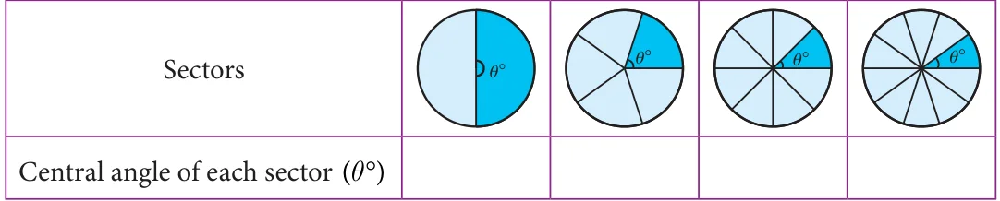</figure>
<ul class="qlist">
<li><span class="mk">4.</span><span class="lt">For the sectors with given measures, find the length of the arc, area and perimeter.</span></li>
</ul>
<div class="mathblock"><p>( \(\pi =3.14)\)</p></div>
<ul class="qlist">
<li><span class="mk">(i)</span><span class="lt">central angle \(45 ^{\circ}\) , \(r = 16\) cm (ii) central angle \(120 ^{\circ}\) , \(d =12.6\) cm</span></li>
<li><span class="mk">5.</span><span class="lt">From the measures given below, find the area of the sectors.</span></li>
<li><span class="mk">(i)</span><span class="lt">length of the arc \(= 48 m\), \(r = 10 m\) (ii) length of the arc \(= 50\) cm, \(r = 13.5\) cm</span></li>
<li><span class="mk">6.</span><span class="lt">Find the central angle of each of the sectors whose measures are given below. p \(= \frac{22}{7}\) </span></li>
<li><span class="mk">(i)</span><span class="lt">area \(= 462\) cm , \(r = 21\) cm (ii) length of the arc \(= 44 m\), \(r = 35 m\)</span></li>
</ul>
<ul class="qlist">
<li><span class="mk">7.</span><span class="lt">A circle of radius 120 m is divided into 8 equal sectors. Find the length of the arc of</span></li>
</ul>
<p>each of the sectors.</p>
<ul class="qlist">
<li><span class="mk">8.</span><span class="lt">A circle of radius 70 cm is divided into 5 equal sectors. Find the area of each of the</span></li>
</ul>
<p>sectors.</p>
<figure class="fig side-fig"></figure>
<ul class="qlist">
<li><span class="mk">9.</span><span class="lt">Dhamu fixes a square tile of 30 cm on the floor. The tile has a sector</span></li>
</ul>
<p>design on it as shown in the figure. Find the area of the sector.</p>
<div class="mathblock"><p>(p \(= 3 14\). ).</p></div>
<ul class="qlist">
<li><span class="mk">10.</span><span class="lt">A circle is formed with 8 equal granite stones as shown in the</span></li>
</ul>
<p>figure each of radius 56 cm and whose central angle is \(45 ^{\circ}\) . Find the area of each of the granite stones. p \(= \frac{22}{7}\) </p>
<h2 id="s-2-3-combined-shapes">2.3 Combined shapes</h2>
<p>In our day-to-day life, we use infinitely many things with shapes like circle, triangle, square, rectangle, rhombus etc., don’t we? We use them separately as well as with two or three or more shapes combined together as shown in the following figures.</p>
<figure class="fig table-fig wide"></figure>
<p>What do we observe from the above figures?</p>
<p>The shape of a glass window is like a semi-circle placed over a rectangle whereas the front - facing wall of a model house looks like a triangle over a square.</p>
<p>Likewise, list the shapes used to make an invitation card and a locker. Thus, two or more plane figures joined with the sides of same measure give rise to combined shapes.</p>
<h3 id="s-2-3-1-perimeter-of-combined-shapes">2.3.1 Perimeter of combined shapes</h3>
<p>The perimeter of a combined shape is the sum of all the lengths of the sides that form a closed boundary.</p>
<p>For example, observe the Fig. 2.19 which has a square of side a units and an equilateral triangle of side a units combined together.</p>
<figure class="fig side-fig"></figure>
<p>Though a square has 4 sides and an equilateral triangle has 3 sides, when they are combined together, we will have a total of only 5 sides as the boundary of the combined shape and not 7 sides. Isn’t it? So, the perimeter of the combined shape, here is 5a units. 2.3.2 Area of combined shapes Fig. 2.19 To find the area of a combined shape, split the combined shape into known simpler shapes, find their area separately and then add them up. That is, the area of combined shapes is nothing but the sum of all the areas of the simple shapes in it.</p>
<figure class="fig side-fig"><figcaption>Fig. 2.20</figcaption></figure>
<p>To find the area of the Fig.2.20, find the area of the square and the area of the equilateral triangle separately and then add them up.</p>
<p>The combined shapes that we come across mostly in our day-to-day life</p>
<p>are irregular polygons. To find the area of the given irregular polygon, we must identify the simple shapes in it, find their areas separately and then add them up.</p>
<p>For example, an irregular polygonal field given below can be split into known simpler shapes as under and then its area can be found.</p>
<figure class="fig">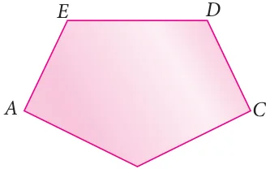</figure>
<figure class="fig">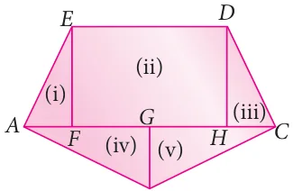</figure>
<p>B B Fig. 2.21</p>
<figure class="fig table-fig wide">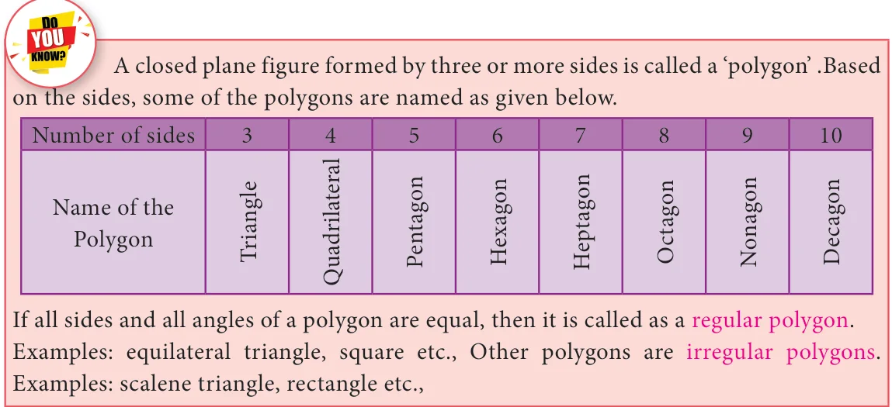</figure>
<figure class="fig wide"></figure>
<p>The formulae to find the area and the perimeter of some plane figures learnt in the earlier class are tabulated below and it will be helpful to find the area and the perimeter of combined figures.</p>
<figure class="fig table-fig wide"></figure>
<h4 class="callout-h" id="s-example-2-6">Example 2.6</h4>
<figure class="fig side-fig">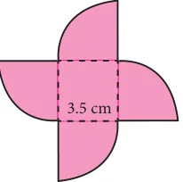</figure>
<p>Find the perimeter and area of the given Fig.2.23. p \(= \frac{22}{7}\) </p>
<h4 class="callout-h" id="s-solution">Solution:</h4>
<p>Radius of a circular quadrant, \(r = 3.5\) cm and side of a square, \(a = 3.5\) cm. The given figure is formed by the joining of 4 quadrants of a circle Fig. 2.23 with each side of a square. The boundary of the given figure consists of 4 arcs and 4 radii.</p>
<ul class="qlist">
<li><span class="mk">(i)</span><span class="lt">Perimeter of the given combined shape</span></li>
</ul>
<p>\(= 4 \times\) length of the arcs of the quadrant of a circle \(+ 4 \times\) radius</p>
<div class="mathblock"><p>= 4 \(\times \frac{1}{4} \times\) 2pr+ \(4r =\) 4 \(\times \frac{122}{47} \times 2 \times \times 3 5\). + \((4 \times 3 5\). ) \(= 22 + 14 = 36\) cm (approximately)</p></div>
<ul class="qlist">
<li><span class="mk">(ii)</span><span class="lt">Area of the given combined shape</span></li>
</ul>
<p>= area of the square \(+ 4 \times\) area of the quadrants of the circle</p>
<div class="mathblock"><p>\(= a +\) 4 \(\times \frac{1}{4}\) pr  \(= (3 5\). \(\times 3 5\). )+  \(\frac{22}{7} \times 3 5\). \(\times 3 5\). </p></div>
<p>2  2</p>
<div class="mathblock"><p>\(A = 12.25+38.5 = 50.75\) cm (approximately)</p></div>
<h4 class="callout-h" id="s-example-2-7">Example 2.7</h4>
<figure class="fig side-fig"></figure>
<p>Nishanth has a key-chain which is in the form of an equilateral triangle and a semicircle attached to a square of side 5 cm as shown in the Fig. 2.24. Find its area. (p \(= 3 14\). , \(3 =1 732\). )</p>
<h4 class="callout-h" id="s-solution">Solution:</h4>
<p>Side of the square \(= 5\) cm Diameter of the semi-circle \(= 5\) cm \(\Rightarrow\) Radius \(= 2.5\) cm Fig. 2.24 Side of the equilateral triangle \(= 5\) cm \(\therefore\) Area of the key-chain = area of the semi circle + area of the square + area of the equilateral triangle</p>
<div class="mathblock"><p>\(= \frac{1}{2} =\)  \(\times 2 5\). + \((5 \times 5) +\)  \(43 \times 5 \times\) 5 \(= .81+ +10 83\).</p></div>
<figure class="fig">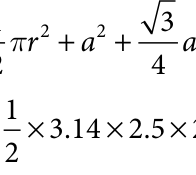</figure>
<div class="mathblock"><p>\(= 45.64\) cm (approximately)</p></div>
<h4 class="callout-h" id="s-example-2-8">Example 2.8</h4>
<p>A 3-fold invitation card is given with measures as in the Fig. 2.25. Find its area.</p>
<figure class="fig side-fig">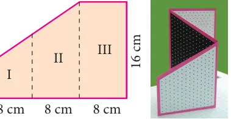<figcaption>Fig. 2.25</figcaption></figure>
<h4 class="callout-h" id="s-solution">Solution:</h4>
<p>Figures I and II are trapeziums separately as well as combinedly. The parallel sides of the combined trapezium (I and II) are 5 cm and 16 cm and its height, \(h = 8 + 8 =16cm\), length of the rectangle (III) \(= 16\) cm and its breadth \(= 8\) cm</p>
<p>\(\therefore\) Area of the combined invitation card</p>
<p>= area of the combined trapezium + area of the rectangle</p>
<div class="mathblock"><p>\(= 1 \times h \times\) (a \(+b)+l \times b\)</p></div>
<div class="mathblock"><p>\(= 1 \times 16 \times (5+16)+16 \times 8\)</p></div>
<div class="mathblock"><p>\(= 168 +128 = 296 cm^{2}\)</p></div>
<p>Aliter:</p>
<p>Area of the invitation card</p>
<p>= area of the outer rectangle -</p>
<p>area of the right angled triangle</p>
<figure class="fig table-fig side-fig"></figure>
<div class="mathblock"><p>\(=l \times b - \times 1 b \times h\)</p></div>
<div class="mathblock"><p>\(=24 \times 16 - \times 1 11 \times 16\)</p></div>
<div class="mathblock"><p>\(= 384 - 88 = 296 cm^{2}\) Fig. 2.26</p></div>
<h4 class="callout-h" id="s-example-2-9">Example 2.9</h4>
<p>Seenu wants to buy a floor mat for his kitchen at home as given in Fig. 2.27. If the cost of the mat is ` 20 per square foot, what will be the cost of the entire mat?</p>
<figure class="fig side-fig">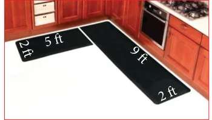<figcaption>Fig. 2.27</figcaption></figure>
<h4 class="callout-h" id="s-solution">Solution:</h4>
<p>The mat given in the figure can be split into two rectangles</p>
<p>as follows:</p>
<p>\(\therefore\) Area of the entire mat</p>
<p>= area of the (I) rectangle + area of the (II) rectangle</p>
<div class="mathblock"><p>\(=l_{1} \times b_{1} +l_{2} \times b_{2}\)</p><p>\(=5 \times 2+9 \times 2=10+18=28\) sq.feet</p></div>
<p>Cost per sq. foot = ` 20</p>
<p>\(\therefore\) The total cost of the entire mat \(= 28 \times\) ` \(20 =\) ` 560.</p>
<figure class="fig wide"><figcaption>Fig. 2.28. p = \frac{22}{7} </figcaption></figure>
<h4 class="callout-h" id="s-example-2-10">Example 2.10</h4>
<p>Find the area of the shaded region in the square of side 10 cm as given in the</p>
<figure class="fig side-fig"><figcaption>Fig. 2.28</figcaption></figure>
<h4 class="callout-h" id="s-solution">Solution:</h4>
<p>Mark the unshaded parts of the given figure as I, II, III and IV Area of the (I) and (III) parts = Area of the square - Area of 2 semicircles 10 cm</p>
<div class="mathblock"><p>\(= a -\) 2 \(\times \frac{1}{2}\) pr </p></div>
<p>2  2</p>
<div class="mathblock"><p>\(=10 \times 10 - \frac{22}{7} \times 5 \times 5 = 100 - 78.57 = 21.43\) cm .</p></div>
<p>Similarly, the area of the (II) and (IV) parts \(= 21.43\) cm .</p>
<p>\(\therefore\) Area of the unshaded parts (I, II, III and IV)</p>
<div class="mathblock"><p>\(= 21.43 \times 2 = 42.86\) cm (approximately)</p></div>
<p>\(\therefore\) Area of the shaded part = area of the square - area of the unshaded parts</p>
<div class="mathblock"><p>\(= 100 - 42.86 = 57.14\) cm (approximately)</p></div>
<figure class="fig wide">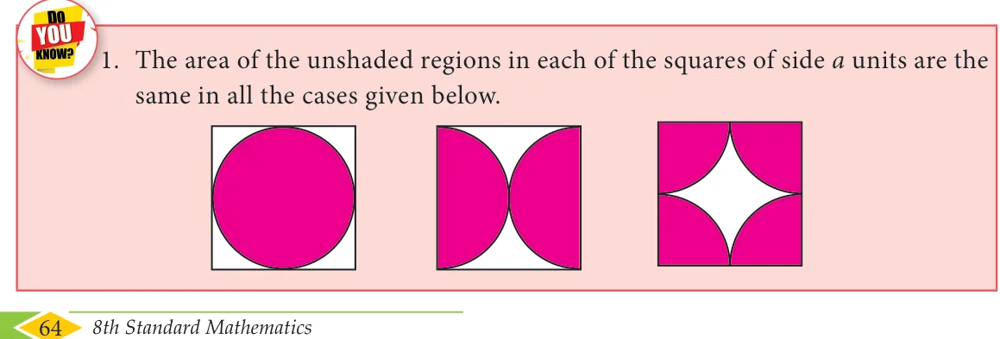</figure>
<ul class="qlist">
<li><span class="mk">2.</span><span class="lt">If the biggest circle is cut from a square of side ‘a’ units, then the remaining area in</span></li>
</ul>
<p>the square is approximately \(\frac{3}{14} a\) sq.units.p \(= \frac{22}{7}\) </p>
<p>2 </p>
<ul class="qlist">
<li><span class="mk">3.</span><span class="lt">The area of the biggest circle cut out from the square of ‘a’ units \(= \frac{11}{14} a\) sq. units</span></li>
</ul>
<p>(approximately)</p>
<ul class="qlist">
<li><span class="mk">4.</span><span class="lt">In the given figure if \(p = \frac{22}{7}\) , the area of the unshaded part of a square</span></li>
</ul>
<p>of side a units is approximately \(\frac{3}{7} a\) sq.units and that of the shaded part</p>
<p>is approximately \(\frac{4}{7} a\) sq.units.</p>
<figure class="fig side-fig">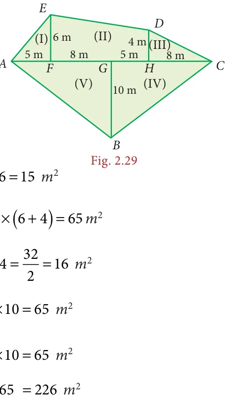</figure>
<h4 class="callout-h" id="s-example-2-11">Example 2.11</h4>
<p>Find the area of an irregular polygon field whose measures are as given in the Fig. 2.29.</p>
<h4 class="callout-h" id="s-solution">Solution:</h4>
<p>The given field has four triangles (I, III, IV and V) and a trapezium (II).</p>
<p>Area of the triangle (I) \(= \frac{11}{22} \times \times = \times \times =\) Area of the trapezium (II) \(= \frac{11}{22}\) ( + ) \(= \times \times\) ( + ) = Area of the triangle (III) \(= \times \times = \times \times = =\)</p>
<p class="caption">Fig. 2.29</p>
<p>Area of the triangle (IV) \(= \frac{11}{22} \times \times = \times \times =\) Area of the triangle (V) \(= \frac{11}{22} \times \times = \times \times = \therefore\) The total area of the field \(= + + + + =\)</p>
<h2 class="callout-h" id="s-exercise-2-2">Exercise 2.2</h2>
<ul class="qlist">
<li><span class="mk">1.</span><span class="lt">Find the perimeter and area of the figures given below. p \(= \frac{22}{7}\) </span></li>
</ul>
<figure class="fig"></figure>
<figure class="fig"></figure>
<p>Find the area of the shaded part in the following figures. (p \(= 3 14\). )</p>
<p>Find the area of the combined figure given which is got by the joining of two parallelograms.</p>
<ul class="qlist">
<li><span class="mk">4.</span><span class="lt">of diameter 6 cm with a triangle of base 6</span></li>
</ul>
<figure class="fig table-fig"></figure>
<ul class="qlist">
<li><span class="mk">5.</span><span class="lt">The door mat which is hexagonal in shape has the following</span></li>
</ul>
<p>measures as given in the figure. Find its area.</p>
<ul class="qlist">
<li><span class="mk">6.</span><span class="lt">A rocket drawing has the measures as given in the</span></li>
</ul>
<p>figure. Find its area.</p>
<ul class="qlist">
<li><span class="mk">7.</span><span class="lt">Find the area of the irregular polygon shaped fields given below.</span></li>
</ul>
<figure class="fig">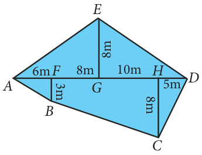</figure>
<h2 id="s-2-4-three-dimensional-3-d-shapes">2.4 Three dimensional (3-D) shapes</h2>
<p>Trace the outline of a ` 2 coin, ` 10 note and a square shaped biscuit on a paper.</p>
<figure class="fig"><figcaption>Fig. 2.30</figcaption></figure>
<p>What shapes have you traced? A circle, a rectangle and a square. Isn’t it? These shapes represents the plane figures. Also, these plane figures have two dimensions namely length and breadth. Now, you place some two rupee coins, some ten rupee notes and some square shaped biscuits respectively on the drawn shapes as shown in the figure.</p>
<figure class="fig"></figure>
<p>What do you get now? A cylinder, a cuboid and a cube. Isn’t it? These shapes do not lie completely on the plane and they occupy some space also. That is, they have the third dimension namely the height along with the dimensions length and breadth. Thus, the shapes</p>
<p>which have three dimensions namely length, breadth and height (depth) are called three</p>
<p>dimensional shapes, simply called as 3-D shapes. Some examples of 3-D shapes are</p>
<figure class="fig"></figure>
<p>Cube Cuboid Prism Triangular Pyramid</p>
<figure class="fig"><figcaption>Fig. 2.32</figcaption></figure>
<p>Square Pyramid Cylinder Cone Sphere</p>
<h3 id="s-2-4-1-faces-edges-and-vertices">2.4.1 Faces, Edges and Vertices</h3>
<p>Observe the following shape. What is it? A cube. A cube is made of six square shaped planes. These 6 square shaped planes of the cube are known as its faces.</p>
<figure class="fig"><figcaption>Fig. 2.33</figcaption></figure>
<p>A line segment which connects any two faces of a cube is called as Edge and each corner point where three edges meet is called as Vertex. So, a cube has 6 faces, 12 edges and</p>
<p>8 vertices.</p>
<figure class="fig table-fig wide"></figure>
<h3 id="s-2-4-2-nets-for-building-three-dimensional-3-d-shapes">2.4.2 Nets for building three dimensional (3-D) shapes</h3>
<p>When we buy sweets, a shop keeper picks a flat shaped card which has some flips and makes a rectangular shaped box (cuboid) by folding it as shown in the figure. Then, he arranges the sweets in the box and gives it to us.</p>
<figure class="fig table-fig"><figcaption>Fig. 2.34</figcaption></figure>
<p>The flat shaped card already designed for making the box excluding flaps (dotted lines) is known as a net. For example, from the following nets we</p>
<p>can build cubes and square pyramids.</p>
<figure class="fig table-fig wide"></figure>
<figure class="fig table-fig wide"></figure>
<h3 id="s-2-4-4-cross-section-of-solid-shapes">2.4.4 Cross section of solid shapes</h3>
<figure class="fig side-fig"></figure>
<p>When we cut the vegetables in cross section for cooking purpose, we see some plane figures in it. For example, the cross section of a carrot and a plantain stem is a circle. Fig. 2.35</p>
<figure class="fig table-fig wide"></figure>
<h3 id="s-2-4-5-3-d-shapes-in-different-views">2.4.5 3-D shapes in different views</h3>
<p>A 3-D object may look different from different positions. View of a 3D shape is what you see while observing the object from different positions. Some of the views are front view, top view and side view. The different views of some of the objects are as shown below.</p>
<figure class="fig table-fig wide"></figure>
<h2 class="callout-h" id="s-exercise-2-3">Exercise 2.3</h2>
<ul class="qlist">
<li><span class="mk">1.</span><span class="lt">Fill in the blanks:</span></li>
<li><span class="mk">(i)</span><span class="lt">The three dimensions of a cuboid are ____, _____ and ____.</span></li>
<li><span class="mk">(ii)</span><span class="lt">The meeting point of more than two edges in a polyhedron is called as ______.</span></li>
<li><span class="mk">(iii)</span><span class="lt">A cube has __________ faces.</span></li>
<li><span class="mk">(iv)</span><span class="lt">The cross section of a solid cylinder is __________.</span></li>
<li><span class="mk">(v)</span><span class="lt">If a net of a 3-D shape has six plane squares, then it is called ______.</span></li>
<li><span class="mk">2.</span><span class="lt">Match the following:</span></li>
</ul>
<figure class="fig"></figure>
<p>- (a) Cylinder</p>
<figure class="fig side-fig"></figure>
<p>- (b) Cuboid</p>
<p>- (c) Triangular Prism</p>
<p>- (d) Square Pyramid</p>
<ul class="qlist">
<li><span class="mk">3.</span><span class="lt">Which 3-D shapes do the following nets represent? Draw them.</span></li>
</ul>
<figure class="fig wide"></figure>
<ul class="qlist">
<li><span class="mk">4.</span><span class="lt">For each solid, three views are given. Identify for each solid, the corresponding Top,</span></li>
</ul>
<p>Front and Side (T, F and S) views.</p>
<figure class="fig table-fig wide"></figure>
<ul class="qlist">
<li><span class="mk">5.</span><span class="lt">Verify Euler’s formula for the table given below.</span></li>
</ul>
<figure class="fig"></figure>
<h2 class="callout-h" id="s-exercise-2-4">Exercise 2.4</h2>
<p>Miscellaneous Practice ProblemsMiscellaneous Practice Problems</p>
<ul class="qlist">
<li><span class="mk">1.</span><span class="lt">Two gates are fitted at the entrance of a library. To open the</span></li>
</ul>
<figure class="fig side-fig"></figure>
<p>gates easily, a wheel is fixed at 6 feet distance from the wall to which the gate is fixed. If one of the gates is opened to \(90 ^{\circ}\) , find the distance moved by the wheel (p \(= 3 14\). ).</p>
<ul class="qlist">
<li><span class="mk">2.</span><span class="lt">With his usual speed, if a person covers a circular track of radius 150 m in 9 minutes,</span></li>
</ul>
<p>find the distance that he covers in 3 minutes (p \(= 3 14\). ).</p>
<figure class="fig side-fig"></figure>
<ul class="qlist">
<li><span class="mk">3.</span><span class="lt">Find the area of the house drawing given in the figure.</span></li>
<li><span class="mk">4.</span><span class="lt">Draw the top, front and side view of the following solid shapes</span></li>
</ul>
<figure class="fig"></figure>
<figure class="fig"></figure>
<p>Challenging problemsChallenging problems</p>
<ul class="qlist">
<li><span class="mk">5.</span><span class="lt">Guna has fixed a single door of width 3 feet in his room where as Nathan has fixed a</span></li>
</ul>
<p>double door, each of width \(1 \frac{1}{2}\) feet in his room. From the closed position, if each of  the single and double doors can open up to 120 , whose door takes a minimum area?</p>
<ul class="qlist">
<li><span class="mk">6.</span><span class="lt">In a rectangular field which measures \(15 m \times 8m\), cows are tied with a rope of length</span></li>
</ul>
<p>3m at four corners of the field and also at the centre. Find the area of the field where no cows can graze. (p \(= 3 14\). )</p>
<figure class="fig side-fig"></figure>
<ul class="qlist">
<li><span class="mk">7.</span><span class="lt">Three identical coins each of diameter 6 cm are placed as shown. Find</span></li>
</ul>
<p>the area of the shaded region between the coins. (p \(= 3 14\). )( \(3 =1.732)\)</p>
<ul class="qlist">
<li><span class="mk">8.</span><span class="lt">Using Euler’s formula, find the unknowns.</span></li>
</ul>
<figure class="fig table-fig wide"></figure>
<h4 class="callout-h" id="s-ict-corner">ICT CORNER</h4>
<p>“Through this activity you will Step-1 know about how to find the QR CODE given below. perimeter and area of the sectors.”</p>
<p>Step-2 Type Area of sector on the search column Step-3 Move the radius slide and degree slide. You will get various results.</p>
<p>Step 1 Step 2 Step 3</p>
<p class="lead">Go through the remaining worksheets given for this chapter</p>
<p>Web URL Measurement (measurements links)</p>
<p>*Pictures are indicatives only. *If browser requires, allow Flash Player or Java Script to load the page.</p>
<figure class="fig table-fig wide"></figure>
<p>Recap</p>
<p>In our earlier classes, we have learnt about constants, variables, like terms, unlike terms, co-efficients, numerical and algebraic expressions. Later, we have done some basic operations like addition and subtraction on algebraic expressions. Now, we shall recollect them and extend the learning.</p>
<p>Further, we are going to learn about multiplication and division of algebraic expressions and algebraic identities.</p>
<p>Answer the following questions :</p>
<ul class="qlist">
<li><span class="mk">1.</span><span class="lt">Write the number of terms in the following expressions</span></li>
<li><span class="mk">(i)</span><span class="lt">\(x + y + z -\) xyz (ii) m n c</span></li>
</ul>
<ul class="qlist">
<li><span class="mk">(iii)</span><span class="lt">\(a b c -\) ab \(c + a\) bc + 3abc (iv) \(8x - 4xy + 7xy\)</span></li>
</ul>
<ul class="qlist">
<li><span class="mk">2.</span><span class="lt">Identify the numerical co-efficient of each term in the following expressions.</span></li>
<li><span class="mk">(i)</span><span class="lt">\(2x - 5xy + 6y + 7x - 10y + 9\) (ii) \(\frac{x2y}{35} + -\) xy \(+ 7\)</span></li>
</ul>
<figure class="fig"></figure>
<ul class="qlist">
<li><span class="mk">3.</span><span class="lt">Pick out the like terms from the following:</span></li>
</ul>
<p>_{2} _{2} _{2} _{2} _{2} Like Terms</p>
<p>x , 3y, 3a b , 4x, x y, 9p ,</p>
<aside class="sidenote"><p>The variables of the</p></aside>
<p>\(- 3y\), 4ba , 9ab, 7q, 8p, \(- 25x\) terms along with their</p>
<p>\(- _{5}_{x}^{2}\), _{2}_{x}, \(_{9}_{x}^{2}_{y}\), \(- _{9}_{p}^{2}\), \(_{qp}^{2}\), _{2}_{xy}2 respective exponents must be same</p>
<p>_{2} _{2} _{2} _{2} _{2}, Examples : x ,4x</p>
<div class="mathblock"><p>\(\frac{2}{3} a^{2}b^{2}\), \(- 5a^{2}b^{2}\)</p></div>
<p>\(- 10p\) , q, 3y x, p, \(- x\) , a b</p>
<p>- ab, a b, 2ba, m n , 5m n 2m, \(- 7m\)</p>
<ul class="qlist">
<li><span class="mk">4.</span><span class="lt">Add : 2x, 6y, 9x, \(- 2y\)</span></li>
<li><span class="mk">5.</span><span class="lt">Simplify : \((5x y - 3x y +\) xy \(+ 7)+ (2xy + x y - 5+ 2x y\) )</span></li>
</ul>
<ul class="qlist">
<li><span class="mk">6.</span><span class="lt">The sides of a triangle are \(2x - 5y + 9\), \(3y + 6x - 7\) and \(- 4x + y +10\) . Find the perimeter</span></li>
</ul>
<p>of the triangle .</p>
<ul class="qlist">
<li><span class="mk">7.</span><span class="lt">Subtract \(- 2mn\) from 6mn.</span></li>
</ul>
<figure class="fig side-fig"></figure>
<ul class="qlist">
<li><span class="mk">8.</span><span class="lt">Subtract \(6a - 5ab + 3b\) from \(4a - 3ab + b\) .</span></li>
</ul>
<ul class="qlist">
<li><span class="mk">9.</span><span class="lt">The length of a log is \(3a + 4b - 2\) and a piece \((2a -\) b) is removed</span></li>
</ul>
<p>from it. What is the length of the remaining log?</p>
<ul class="qlist">
<li><span class="mk">10.</span><span class="lt">A tin had x litres of oil. Another tin had \((3x + 6x - 5)\) litres of oil.</span></li>
</ul>
<p>The shopkeeper added (x+7) litres more to the second tin. Later, he sold (x +6) litres of oil from the second tin. How much oil was left in the second tin?</p>
<figure class="fig table-fig wide"></figure>
<h2 id="s-3-1-introduction">3.1 Introduction</h2>
<figure class="fig side-fig"></figure>
<p>Let us consider the given situation that Ganesh planted saplings in his garden. He planted 10 rows each with 5 saplings. Can you say how many saplings were planted?</p>
<p>Yes, we know that, the total number of saplings is the product of number of rows and number of saplings in each row. Hence, the total number of saplings \(= 10\) rows \(\times 5\) saplings in each row \(= \times 5 =50\) saplings Likewise, David planted some saplings. Not knowing the total number of rows and saplings in each row, how will you express the total number of saplings?</p>
<p>For the unknown quantities, we call them as ‘x’ and ‘y’. Therefore, the total number of saplings = ‘x’ rows \(\times\) ‘y’ sapling in each row</p>
<p>= ‘x \(\times\) y’ = xy saplings</p>
<p>Let us extend this situation, Rahim planted saplings where the number of rows are</p>
<p>\((2x + 5x - 7)\) and each row contains 3y saplings. Now the above idea will help us to find the total number of saplings planted by Rahim.</p>
<p>The total number of saplings \(= (2x + 5x - 7)\) rows \(\times 3y\) saplings in each row.</p>
<div class="mathblock"><p>\(= 3y \times (2x + 5x - 7)\)</p></div>
<p>How do we find the product of the above algebraic expression? Now,we will learn to find the product of algebraic expressions.</p>
<figure class="fig table-fig wide"></figure>
<h2 id="s-3-2-multiplication-of-algebraic-expressions">3.2 Multiplication of Algebraic Expressions</h2>
<p>While doing the product of algebraic expressions, we should follow the steps given below.</p>
<p>Step 1: Multiply the signs of the terms. That is, the product of two like signs are positive and the product of two unlike signs are negative.</p>
<p>\(\frac{Like\) signs}{Unlike signs} \(((++)) \times \times ((+ - = -\) )) \(= +\) (( \(- \times - \times\) )) \(((+ - = +)) = -\)</p>
<figure class="fig side-fig"></figure>
<p>Step 2: Multiply the corresponding co-efficients of the terms. Step 3: Multiply the variable factors by using laws of exponents.</p>
<p>If ‘x’ is a variable and m, n are positive integers then,</p>
<p>\(x \times x = x\)</p>
<p>m n m+n</p>
<p>For example, \(\times = =\)</p>
<figure class="fig table-fig wide"></figure>
<h3 id="s-3-2-1-multiplication-of-two-or-more-monomials">3.2.1 Multiplication of two or more monomials</h3>
<p>Consider that, Geetha buys 3 pens each @ `5, how much she has to pay to the shopkeeper? Geetha has to pay to the shopkeeper \(= 3 \times\) `5</p>
<figure class="fig side-fig"></figure>
<div class="mathblock"><p>= `15</p></div>
<p>If there are ‘x’ pens and the cost of each pen is ` ‘y’,</p>
<p>then the cost of (3x ) pens bought by Geetha @ ` 5y</p>
<figure class="fig side-fig"></figure>
<div class="mathblock"><p>\(= (3x\) ) \(\times 5y\)</p></div>
<div class="mathblock"><p>\(= (3 \times 5)(x \times\) y) = ` \(15x^{2}y\)</p></div>
<h4 class="callout-h" id="s-example-3-1">Example 3.1</h4>
<figure class="fig side-fig"></figure>
<p>If the length and breadth of a rectangular painting are</p>
<p>4xy and 3x y . Find its area.</p>
<h4 class="callout-h" id="s-solution">Solution:</h4>
<p>Area of the rectangular painting, A= (l \(\times\) b) sq.units</p>
<div class="mathblock"><p>\(= (4xy\) ) \(\times (3x\) y)</p></div>
<div class="mathblock"><p>\(= (4 \times 3)(x \times x\) )(y \(\times\) y)</p></div>
<aside class="sidenote"><p>xy</p></aside>
<div class="mathblock"><p>\(A =12\) sq.units</p></div>
<figure class="fig"></figure>
<h4 class="callout-h" id="s-example-3-2">Example 3.2</h4>
<p>Find the product of 2x y , 3y z and -</p>
<h4 class="callout-h" id="s-solution">Solution:</h4>
<div class="mathblock"><p>We have, (2x y ) \(\times (3y\) z) \(\times\) ( \(- z x\) )</p></div>
<div class="mathblock"><p>\(= (+) \times (+) \times\) ( \(- )(2 \times 3 \times 1)( \times\) )( \(\times\) )( \(\times\) )</p><p>\(= - 6x y z\)</p></div>
<h3 id="s-3-2-2-multiplication-of-a-polynomial-by-a-monomial">3.2.2 Multiplication of a polynomial by a monomial</h3>
<p>If there are ‘a’ shops and each shop has ‘x’ apples in 8 baskets and ‘y’ oranges in 3 baskets</p>
<figure class="fig table-fig wide"></figure>
<h4 class="callout-h" id="s-example-3-3">Example 3.3</h4>
<figure class="fig"></figure>
<div class="mathblock"><p>Multiply \(3 +\) xy)</p></div>
<figure class="fig"></figure>
<h4 class="callout-h" id="s-solution">Solution:</h4>
<p>Now, ( ) \(\times\) ( \(- +\) xy) = ( ) - ( )+ ( xy) multiplying each term of the polynomial by the monomial</p>
<div class="mathblock"><p>\(= (3 \times 2)(x \times x\) )(y \(\times y\) ) \(- (3 \times 5)(x \times x\) )(y \(\times y)+ (3 \times 9)(x \times\) x)(y \(\times\) y)</p></div>
<div class="mathblock"><p>\(= 6x y - 15x y + 27x y\)</p></div>
<h4 class="callout-h" id="s-example-3-4">Example 3.4</h4>
<p>Ram deposited ‘x’ number of `2000 notes, ‘y’ number of `500 notes, ‘z’ number of `100 notes in a bank and Velan deposited ‘3xy’ times of amount of what Ram had deposited. How much amount did Velan deposit in the bank?</p>
<h4 class="callout-h" id="s-solution">Solution:</h4>
<figure class="fig side-fig"></figure>
<p>Amount deposited by Ram</p>
<div class="mathblock"><p>= (x \(\times\) `2000 \(+ y \times\) `500 \(+ z \times\) `100) = `(2000x \(+ 500y +100z\) )</p></div>
<p>Amount deposited \(= 3xy\) times \(\times\) Amount deposited by Velan by Ram</p>
<div class="mathblock"><p>=`3xy \(\times (2000x + 500y +100z)\)</p><p>= ( \(\times 2000)( \times \times )+\) ( \(\times\) )( \(\times \times )+\) ( \(\times\) )( \(\times \times\) )</p><p>=`(6000 \(+1500xy +\) xyz)</p></div>
<figure class="fig wide"></figure>
<h3 id="s-3-2-3-multiplication-of-two-binomials">3.2.3 Multiplication of two binomials</h3>
<p>Consider that a rectangular flower bed whose length is decreased by 5 units from the original length and whose breadth is increased by 3 units to the original breadth. What is the area of the rectangular flower bed?</p>
<figure class="fig side-fig"></figure>
<p>Area of the rectangle \(= l \times b\)</p>
<p>Here, area of the rectangular flower bed \(A =\) (l \(- 5) \times\) (b \(+ 3\) ) sq.units How do we multiply this?</p>
<p>Now, let us learn how to multiply two binomials. \(- 5\)</p>
<p>If ( + ) and ( + ) are two binomials, we can find their product as given below,</p>
<figure class="fig table-fig wide"></figure>
<p>So, the above area of the rectangle = ( - ) \(\times\) ( + ) Aliter (By horizontal distributive approach) = ( +</p>
<aside class="sidenote"><p>= (lb +</p></aside>
<p>Let us consider one more example. Consider the given figure , In the square OABC,</p>
<figure class="fig table-fig side-fig"></figure>
<p>\(OA= 4\) units ; \(OC =4\) units The area of the square \(OABC = 4 \times 4\)</p>
<div class="mathblock"><p>\(A = 16\) sq.units</p></div>
<p>If the sides of the square are increased by ‘ ‘y’ units respectively,then we get the rectangle are OD=(4+x) units and OF=(4+y) units.</p>
<p>Now, the area of the rectangle \(ODEF = (4+\)</p>
<p>(by FOIL approach) \(A = 16+ 4\) (all are unlike terms and so, we can’t add)</p>
<p>Example 3.5 Aliter</p>
<p>Multiply \((2x + 5y)\) and \((3x - 4y)\)</p>
<figure class="fig side-fig"></figure>
<h4 class="callout-h" id="s-solution">Solution:</h4>
<p>By horizontal distributive approach,</p>
<figure class="fig"></figure>
<p>( )</p>
<p>\(= -\) xy + xy -</p>
<p>\(= +\) xy \(- y\) (simplify the like terms)</p>
<figure class="fig table-fig wide"></figure>
<h2 class="callout-h" id="s-exercise-3-1">Exercise 3.1</h2>
<ul class="qlist">
<li><span class="mk">1.</span><span class="lt">Complete the table.</span></li>
</ul>
<div class="mathblock"><p>\(\times 2x^{2} - 2xy x^{4}y^{3}\) 2xyz \((__)xz^{2}\)</p></div>
<p>(___) \(4x^{5}y^{4}\)</p>
<p>\(- x y\)</p>
<p>\(2y z - 10xy z -\) 3xyz</p>
<p>(___) \(- 14xyz^{2}\)</p>
<ul class="qlist">
<li><span class="mk">2.</span><span class="lt">Find the product of the terms.</span></li>
<li><span class="mk">(i)</span><span class="lt">\(- 2mn ,(2m)\) , \(- 3mn\) (ii) 3x y , \(- 3xy\) , x y</span></li>
</ul>
<ul class="qlist">
<li><span class="mk">3.</span><span class="lt">If \(l = 4pq\) , \(b = - 3p q\) ,h \(= 2p q\) then, find the value of \(l \times b \times h\).</span></li>
</ul>
<ul class="qlist">
<li><span class="mk">4.</span><span class="lt">Expand</span></li>
<li><span class="mk">(i)</span><span class="lt">\(5x(2y - 3)\) (ii) \(- 2p(5p - 3p + 7)\)</span></li>
</ul>
<ul class="qlist">
<li><span class="mk">(iii)</span><span class="lt">3mn m n( \(- 5m n + 7mn\) ) (iv) x (x \(+ y + z)+ y\) (x \(+ y + z)+ z\) (x \(- y -\) z)</span></li>
</ul>
<ul class="qlist">
<li><span class="mk">5.</span><span class="lt">Find the product of</span></li>
<li><span class="mk">(i)</span><span class="lt">\((2x + 3)(2x - 4)\) (ii) (y \(- 4)(2y + 3y)\)</span></li>
</ul>
<ul class="qlist">
<li><span class="mk">(iii)</span><span class="lt">(m \(- n)(5m n - n\) ) (iv) \(3(x - 5) \times 2(x - 1)\)</span></li>
</ul>
<ul class="qlist">
<li><span class="mk">6.</span><span class="lt">Find the missing term.</span></li>
<li><span class="mk">(i)</span><span class="lt">\(6xy \times\) _________ \(= - 12x y\) (ii) _________ \(\times\) ( \(- 15m n\) p) \(= 45m n p\)</span></li>
</ul>
<ul class="qlist">
<li><span class="mk">(iii)</span><span class="lt">\(2y(5x y - ___+ 3___) =10x y - 2xy + 6y\)</span></li>
</ul>
<ul class="qlist">
<li><span class="mk">7.</span><span class="lt">Match the following.</span></li>
<li><span class="mk">a)</span><span class="lt">\(4y \times - 3y\) (i) \(20x y - 20x\)</span></li>
</ul>
<ul class="qlist">
<li><span class="mk">b)</span><span class="lt">\(- 2xy(5x - 3)\) (ii) \(5x - 5xy + 5x y\)</span></li>
</ul>
<ul class="qlist">
<li><span class="mk">c)</span><span class="lt">\(5x(x - y +\) xy) (iii) \(4x - 9\)</span></li>
</ul>
<ul class="qlist">
<li><span class="mk">d)</span><span class="lt">\((2x + 3)(2x - 3)\) (iv) \(- 12y\)</span></li>
</ul>
<ul class="qlist">
<li><span class="mk">e)</span><span class="lt">\(5x(4xy - 4)\) (v) \(- 10x y + 6xy\)</span></li>
</ul>
<p>A) iv, v, ii, i, iii B) v, iv, iii, ii, i C) iv, v, ii, iii, i D) iv, v, iii, ii, i</p>
<ul class="qlist">
<li><span class="mk">8.</span><span class="lt">A car moves at a uniform speed of (x \(+ 30)\) km/hr. Find the distance covered by the</span></li>
</ul>
<p>car in (y + 2)hours. (Hint: distance = speed \(\times\) time).</p>
<p>Objective Type QuestionsObjective Type Questions</p>
<ul class="qlist">
<li><span class="mk">9.</span><span class="lt">The product of 7p and (2p ) is</span></li>
</ul>
<ul class="qlist">
<li><span class="mk">(A)</span><span class="lt">14p (B) 28p (C) 9p (D) 11p</span></li>
</ul>
<ul class="qlist">
<li><span class="mk">10.</span><span class="lt">The missing terms in the product \(- 3m n \times 9(__) =\) _________m n are</span></li>
</ul>
<ul class="qlist">
<li><span class="mk">(A)</span><span class="lt">mn ,27 (B) m n,27 (C) m n , \(- 27\) (D) mn , \(- 27\)</span></li>
</ul>
<ul class="qlist">
<li><span class="mk">11.</span><span class="lt">If the area of a square is 36x y then, its side is ____________</span></li>
<li><span class="mk">(A)</span><span class="lt">6x y (B) 8x y (C) 6x y (D) \(- 6x y\)</span></li>
</ul>
<ul class="qlist">
<li><span class="mk">12.</span><span class="lt">If the area of a rectangle is 48m n and whose length is 8mn then, its breadth is__.</span></li>
</ul>
<ul class="qlist">
<li><span class="mk">(A)</span><span class="lt">6 mn (B) 8m n (C) 7m n (D) 6m n</span></li>
</ul>
<ul class="qlist">
<li><span class="mk">13.</span><span class="lt">If the area of a rectangular land is (a \(- b\) ) sq.units whose breadth is(a - b) then, its</span></li>
</ul>
<p>length is__________</p>
<ul class="qlist">
<li><span class="mk">(A)</span><span class="lt">\(a - b\) (B) \(a + b\) (C) \(a - b\) (D) (a + b)</span></li>
</ul>
<h2 id="s-3-3-division-of-algebraic-expressions">3.3 Division of Algebraic Expressions</h2>
<p>In the previous sessions, we have learnt how to add, subtract and multiply algebraic expressions. Now, we are going to learn about another basic operation ‘division’ on algebraic expressions. We know that the division is the reverse operation of multiplication.</p>
<p>Now, the cost of 10 balls at the rate of `5 each \(=10 \times 5\)</p>
<div class="mathblock"><p>= `50</p></div>
<p>whereas if we have `50 and we want to buy 10 balls then, the cost of each ball is \(= \frac{50}{10}\)</p>
<div class="mathblock"><p>= `5</p></div>
<p>What we have seen above is division on numbers. But how will you divide an algebraic expression by another algebraic expression?</p>
<p>Of course, the same procedure has to be followed for the algebraic expressions with the help of laws of exponents.</p>
<p>If x is a variable and m, n are constants, then \(x \div =\) where &gt; .</p>
<h3 id="s-3-3-1-division-of-a-monomial-by-another-monomial">3.3.1 Division of a monomial by another monomial</h3>
<figure class="fig side-fig"></figure>
<p>Dividing a monomial 10p by another monomial , we get</p>
<figure class="fig"></figure>
<p>(expansion of power)</p>
<div class="mathblock"><p>=5p</p></div>
<p>However, to divide we can also follow laws of exponents as,</p>
<p>\(5 4 4 - 3 m\)</p>
<div class="mathblock"><p>\(= 5p _{m} - _{n} \frac{10p}{2p3} \frac{x}{xn} = x = 5p\)</p></div>
<h4 class="callout-h" id="s-example-3-6">Example 3.6</h4>
<p>Velu pastes ‘ 4xy ’ pictures in one page of his scrap book.</p>
<figure class="fig side-fig"></figure>
<p>How many pages will he need to paste 100x y pictures? (x, y are positive integers)</p>
<h4 class="callout-h" id="s-solution">Solution:</h4>
<p>Total number of pictures \(=100x y\) Pictures in one page \(= 4xy\) Total number of pages needed = Total number of pictures pictures in one page</p>
<p>\(25 2 3 2 - 1 3 - 1\)</p>
<div class="mathblock"><p>\(= \frac{100xy}{4xy} = 25x y\)</p><p>\(= 25xy\) pages</p></div>
<p>Try these Divide</p>
<ul class="qlist">
<li><span class="mk">(i)</span><span class="lt">\(12x ^{3}y^{2}\) by \(x^{2}y\) (ii) \(- 20a^{5}b^{2}\) by \(2a^{3}b^{7}\) (iii) \(28a ^{4}c ^{2}\) by \(21ca^{2}\)</span></li>
<li><span class="mk">(iv)</span><span class="lt">(3x y) by 6x y (v) 64m (n ) by 4m_{3} _{2}n (vi) (8x y ) by (8x y )</span></li>
</ul>
<p>2 3 2 3 4 2 3 2 2 2 2 3 2 2 2</p>
<ul class="qlist">
<li><span class="mk">(vii)</span><span class="lt">\(81p^{2}q^{4}\) by \(81p^{2}q^{4}\) (vii) \((4x^{2}y^{3})^{0}\) by \(\frac{(x)}{x6}\)</span></li>
</ul>
<h3 id="s-3-3-2-division-of-an-algebraic-expression-polynomial-by-a-">3.3.2 Division of an algebraic expression (polynomial) by a monomial</h3>
<p>To divide a polynomial by a monomial, divide each term of the polynomial by the monomial.</p>
<figure class="fig table-fig"></figure>
<h4 class="callout-h" id="s-example-3-7">Example 3.7</h4>
<div class="mathblock"><p>Divide : ( \(- +\) ) by 5</p></div>
<h4 class="callout-h" id="s-solution">Solution:</h4>
<p>We have, ( \(- +\) ) \(\div\)</p>
<div class="mathblock"><p>\(= \frac{5y - 25y+8y}{5y} = \frac{5y25y8y}{5y5y5y} - +\)</p><p>\(= - + \frac{8}{5} = - + \frac{8}{5}\)</p></div>
<p>\(- -\)</p>
<h2 id="s-3-4-avoid-some-common-errors">3.4 Avoid Some Common Errors</h2>
<figure class="fig table-fig wide"></figure>
<figure class="fig table-fig wide"></figure>
<ul class="qlist">
<li><span class="mk">1.</span><span class="lt">Fill in the blanks:</span></li>
</ul>
<div class="mathblock"><p>\(\frac{18m(__)}{2m n33} 2lm n\) (__) \(\frac{42ab(__)}{6a4b2}\)</p></div>
<p>4 4 5 (__) 3 2 4 5</p>
<p>_{5} l m n l m n (__) _{2}</p>
<ul class="qlist">
<li><span class="mk">(i)</span><span class="lt">= _____mn (ii) (__) \(_{6} =\) (iii) = (__)b c</span></li>
<li><span class="mk">2.</span><span class="lt">Say True or False 3. Divide</span></li>
<li><span class="mk">(i)</span><span class="lt">\(8x^{3}y \div 4x^{2} = 2xy\) (i) \(27y^{3}\) by 3y (ii) \(x^{3}y^{2}\) by \(x^{2}y\)</span></li>
<li><span class="mk">(ii)</span><span class="lt">\(7ab^{3} \div 14ab = 2b^{2}\) (iii) \(45x^{3}y^{2}z^{4}\) by ( - 15xyz) (iv) \((3xy)^{2}\) by 9xy</span></li>
<li><span class="mk">4.</span><span class="lt">Simplify</span></li>
</ul>
<div class="mathblock"><p>\(\frac{3m2m}{mm3} \frac{14pq12pq}{2p2q3q2}\)</p></div>
<ul class="qlist">
<li><span class="mk">(i)</span><span class="lt">+ (ii) \(- -\)</span></li>
<li><span class="mk">5.</span><span class="lt">Divide:</span></li>
</ul>
<ul class="qlist">
<li><span class="mk">(i)</span><span class="lt">\((32y - 8yz)\) by 2y (ii) \((4m n +16m n -\) mn) by 2mn</span></li>
<li><span class="mk">(iii)</span><span class="lt">5xy 18x y 6xy by 6xy (iv) \(81(p q r + 2p q r - 5p q r\) ) by (3pqr)</span></li>
</ul>
<ul class="qlist">
<li><span class="mk">6.</span><span class="lt">Identify the errors and correct them.</span></li>
<li><span class="mk">(i)</span><span class="lt">\(7y - y + 3y =10y\) (ii) \(6xy + 3xy = 9x y\)</span></li>
</ul>
<ul class="qlist">
<li><span class="mk">(iii)</span><span class="lt">\(m(4m - 3) = 4m - 3\) (iv) \((4n) - 2n + 3 = 4n - 2n + 3\)</span></li>
</ul>
<ul class="qlist">
<li><span class="mk">(v)</span><span class="lt">(x \(- 2)(x + 3) = x - 6\) (vi) 3p 4p 7 (3p 4p 7)</span></li>
</ul>
<ul class="qlist">
<li><span class="mk">7.</span><span class="lt">Statement A: If 24p q is divided by 3pq, then the quotient is 8p.</span></li>
</ul>
<p>Statement B: Simplification of \(\frac{(5x+5)}{5}\) is 5x.</p>
<ul class="qlist">
<li><span class="mk">(i)</span><span class="lt">Both A and B are true (ii) A is true but B is false</span></li>
<li><span class="mk">(iii)</span><span class="lt">A is false but B is true (iv) Both A and B are false</span></li>
<li><span class="mk">8.</span><span class="lt">Statement A: \(4x + 3 -2 = 2(2x x + \frac{3x}{2} - 1)\)</span></li>
</ul>
<div class="mathblock"><p>Statement B: \((2m - 5) - (5 - 2m) = (2m - 5) + (2m - 5)\)</p></div>
<ul class="qlist">
<li><span class="mk">(i)</span><span class="lt">Both A and B are true (ii) A is true but B is false</span></li>
<li><span class="mk">(iii)</span><span class="lt">A is false but B is true (iv) Both A and B are false</span></li>
</ul>
<h2 id="s-3-5-identities">3.5 Identities</h2>
<p>We have studied in the previous class about standard algebraic identities. An identity is an equation satisfied by any value that replaces its variable(s). Now, we shall recollect four known identities, which are,</p>
<div class="mathblock"><p>(a + b) \(\equiv a + 2ab + b\) (a - b) \(\equiv a - 2ab + b\)</p></div>
<p>(a \(- b\) ) \(\equiv\) (a + b)(a - b) (x + a)(x + b) \(\equiv x +\) (a + b)x + ab</p>
<p>Instead of the symbol \(\equiv\) , we use = to represent an identity without any confusion.</p>
<p>Try these Expand the following</p>
<ul class="qlist">
<li><span class="mk">(i)</span><span class="lt">(p \(+ 2) =\) ........................ (ii) \((3 -\) a) = .......................</span></li>
</ul>
<ul class="qlist">
<li><span class="mk">(iii)</span><span class="lt">\((6 - x\) ) = ....................... (iv) (a + b) - (a - b) = ..........</span></li>
</ul>
<ul class="qlist">
<li><span class="mk">(v)</span><span class="lt">(a + b) = (a + b) \(\times\) ............ (vi) (m + n)(.....) \(= m - n\)</span></li>
<li><span class="mk">(vii)</span><span class="lt">(m ...) m 14m 49 (viii) (k 49) (k )(k )</span></li>
</ul>
<ul class="qlist">
<li><span class="mk">(ix)</span><span class="lt">\(m - 6m + 9 =\) .............. (x) (m \(- 10)(m + 5) =\) ..........</span></li>
</ul>
<h4 class="callout-h" id="s-note">Note</h4>
<p>x=1 is the only solution for \(7x + 3=10\) whereas any value of x satisfies \((x+2) =\)</p>
<p>\(x + 4x + 4\). So \(7x + 3=10\) is an equation \((x+2) = x + 4x + 4\) is an identity. An identity is an equation but vice versa is not true.</p>
<h3 id="s-3-5-1-application-of-identities">3.5.1 Application of Identities</h3>
<p>The identities give an alternative method of solving problems on multiplication of algebraic expressions and also of numbers.</p>
<h4 class="callout-h" id="s-example-3-8">Example 3.8</h4>
<p>Find the value of ( + ) by using \((a+b)^{2}\) identity.</p>
<h4 class="callout-h" id="s-solution">Solution:</h4>
<p>Comparing ( + ) with ( + ) , we have \(a = 3a,b = 4c\)</p>
<figure class="fig"></figure>
<p>\(\therefore\) ( + ) = ( ) + ( )( )+ ( ) (replacing a and b values)</p>
<p>\(= +\) ( \(\times \times\) )( \(\times )+\) ( + ) \(= +\) ac +</p>
<figure class="fig side-fig"></figure>
<h4 class="callout-h" id="s-example-3-9">Example 3.9</h4>
<p>Find the value of 998 by using (a - b) identity.</p>
<h4 class="callout-h" id="s-solution">Solution:</h4>
<p>We know, 998 can be expressed as \((1000 -\) )</p>
<div class="mathblock"><p>\(\therefore\) ( ) \(= (1000 -\) )</p><p>we get =1000, =</p></div>
<figure class="fig"></figure>
<div class="mathblock"><p>\((1000 -\) ) \(= (1000) - 2 1000(\) )( )+ ( ) ( ) \(=1000000 - 4000 + = 996004\)</p></div>
<h4 class="callout-h" id="s-example-3-10">Example 3.10</h4>
<p>Simplify ( + )( - ) by using (a+b) (a - b) identity.</p>
<h4 class="callout-h" id="s-solution">Solution:</h4>
<p>We have ( + )( - )</p>
<aside class="sidenote"><p>we get \(= =\)</p></aside>
<figure class="fig"></figure>
<p>( + )( - ) = ( ) - ( ) (replacing a and b values) \(= -\) ( + )( - ) \(= -\)</p>
<h4 class="callout-h" id="s-example-3-11">Example 3.11</h4>
<p>Expand - by using \(a^{2} - b^{2}\) identity</p>
<h4 class="callout-h" id="s-solution">Solution:</h4>
<p>- can be written as \(y -\)</p>
<figure class="fig"></figure>
<div class="mathblock"><p>, we get \(a =\) y,b \(= 4\)</p></div>
<p>\(- =\) ( + )( - ) \(- =\) ( + )( - )</p>
<h4 class="callout-h" id="s-example-3-12">Example 3.12</h4>
<p>Simplify \((5x + 3)(5x + 4)\) by using (x+a) (x+b) identity.</p>
<h4 class="callout-h" id="s-solution">Solution:</h4>
<div class="mathblock"><p>We have \((5x + 3)(5x + 4)\)</p></div>
<p>Comparing it with (x + a)(x + b), we get \(x = 5\) and \(x a = 3\), \(b = 4\)</p>
<p>We know (x + a)(x + b) \(= x +\) (a + b)x + ab (replacing x, a and b values)</p>
<div class="mathblock"><p>\((5x + 3)(5x+4) = (5x) + (3+4) (5x) + (3) (4)\)</p></div>
<div class="mathblock"><p>\(= 5 x + (7)(5x)+12\)</p></div>
<div class="mathblock"><p>\((5x + 3)(5x + 4) = 25x + 35x +12\)</p></div>
<h4 class="callout-h" id="s-try-these">Try these</h4>
<p>Expand using appropriate identities.</p>
<ul class="qlist">
<li><span class="mk">(i)</span><span class="lt">\((3p + 2q)\) (ii) (105) (iii) \((2x - 5d)\)</span></li>
<li><span class="mk">(iv)</span><span class="lt">(98) (v) (y \(- 5)(y + 5)\) (vi) \((3x) - 5\)</span></li>
</ul>
<ul class="qlist">
<li><span class="mk">(vii)</span><span class="lt">\((2m + n)(2m +\) p) (viii) \(203 \times 197\)</span></li>
<li><span class="mk">(ix)</span><span class="lt">Find the area of the square whose side is (x \(- 2\) units.)</span></li>
<li><span class="mk">(x)</span><span class="lt">Find the area of the rectangle whose length and breadth are (y \(+ 4\) units and )</span></li>
</ul>
<p>(y \(- 3\) units.)</p>
<h2 id="s-3-6-cubic-identities">3.6 Cubic Identities</h2>
<figure class="fig table-fig side-fig"></figure>
<div class="mathblock"><p>I. (a + b) \(= a + 3a b + 3ab + b\)</p></div>
<p>We shall prove it now,</p>
<p>\(LHS =\) (a + b)</p>
<p>\(=[(a +\) b)(a + b)](a + b) (expanded form)</p>
<p>= (a + b) (a + b) = ( + ab + )( + ) (using identity) = ( + ab \(+ )+\) ( + ab + ) (using distributive law) \(= + +\) ab + ba + ab \(+ = +\) ( + ba )+ (ab + ab \()+ = + +\) ab \(+ =\)</p>
<figure class="fig wide"></figure>
<div class="mathblock"><p>(a + b) \(= a + 3a b + 3ab + b\)</p></div>
<p>Hence, we proved the cubic identity by direct multiplication.</p>
<div class="mathblock"><p>II. (a - b) \(= a - 3a b + 3ab - b\)</p></div>
<p>We can prove this identity by direct multiplication</p>
<figure class="fig table-fig wide"></figure>
<p>We have (a - b) = ( - )( - )( - )</p>
<p>= ( - ) \(\times\) ( - ) = ( - ab + )( - ) = ( - ab + ) - ( - ab + ) \(= - +\) ab - ba + ab -</p>
<p>a 2a b ba ab 2ab b</p>
<figure class="fig side-fig"></figure>
<div class="mathblock"><p>\(= a - 3a b + 3ab - b\)</p></div>
<p>\(= RHS\)</p>
<div class="mathblock"><p>(a - b) \(= a - 3a b + 3ab - b\)</p></div>
<p>Hence, we proved.</p>
<p>III. (x \(+a)(x +b)(x +c)= x +(a+b+c)x +(ab+bc+ca)x\) +abc</p>
<p>We know that the identity (x + a)(x + b) \(= x +\) (a + b)x + ab . Let us multiply this by a binomial (x + c) . Then we get. (x + a)(x + b)(x + c) \(=[(x +\) a)(x + b)](x + c)</p>
<p>= (x + (a + b)x + ab) \(\times\) (x + c)</p>
<p>\(= x\) x + (a + b)x + ab+ c x + (a + b)x + ab (distributive law)</p>
<p>\(= x +\) (a + b)x + abx + cx + (a + b)xc + abc</p>
<p>\(= x +\) ax + bx + abx + cx + acx + bcx + abc</p>
<p>\(= x +\) (a \(+ b +\) c)x + (ab + bc + ca)x + abc (Combine x , x terms)</p>
<p>(x \(+a)(x +b)(x +c)= x +(a+b+c)x +(ab+bc+ca)x\) +abc Thus, we summarise the cubic identities as :</p>
<figure class="fig wide"></figure>
<p>Deductions:</p>
<p>The above identities give the following deductions:</p>
<figure class="fig table-fig wide"></figure>
<h3 id="s-3-6-1-application-of-cubic-identities">3.6.1 Application of Cubic Identities</h3>
<p>I. Using the identity (a \(+b) = a +3a b +3ab +b\) Example 3.13</p>
<div class="mathblock"><p>Expand (x \(+ 4)\)</p></div>
<h4 class="callout-h" id="s-solution">Solution:</h4>
<p>Comparing (x \(+ 4)\) with (a + b) , we get \(a = x\) ,b \(= 4\)</p>
<figure class="fig side-fig"></figure>
<div class="mathblock"><p>We know (a + b) \(= a + 3a b + 3ab + b\)</p></div>
<p>(x + ) = ( ) + ( ) ( )+ ( )( ) + ( ) (replacing a, b values)</p>
<figure class="fig wide"></figure>
<p>= ( ) + ( )+ ( )( )+</p>
<p>( + ) \(= + + +\)</p>
<h4 class="callout-h" id="s-example-3-14">Example 3.14</h4>
<p>Find the value of ( )</p>
<h4 class="callout-h" id="s-solution">Solution:</h4>
<div class="mathblock"><p>Now, \((103) = (100 + 3)\)</p></div>
<p>Comparing this with (a + b) , we get \(a =100,b = 3\)</p>
<p>(a + b) \(= a + 3a b + 3ab + b\) replacing a, b values,</p>
<div class="mathblock"><p>\((100 + 3) = (100) + 3 100(\) ) \((3)+ 3 100( )(3) + (3)\)</p></div>
<div class="mathblock"><p>\(=1000000 + 3 10000( )(3)+ 3 100( )(9)+ 27 =1000000 + 90000 + 2700 + 27\)</p><p>\((103)^{3} =1092727\)</p></div>
<p>II. Using the identity (a b) \(= a 3a b 3ab b\) Example 3.15</p>
<p>Expand: (y \(- 5)\)</p>
<h4 class="callout-h" id="s-solution">Solution:</h4>
<p>Comparing ( - ) with ( - ) , we get = , =</p>
<figure class="fig"></figure>
<p>( - ) \(= - +\) ab -</p>
<p>( \(- 5)\) ( ) ( ) ( ) ( )( ) ( )</p>
<p>( ) ( ) ( )( )</p>
<div class="mathblock"><p>( \(- 5) = - + -\)</p></div>
<h4 class="callout-h" id="s-example-3-16">Example 3.16</h4>
<p>Find the value of (98)</p>
<h4 class="callout-h" id="s-solution">Solution:</h4>
<div class="mathblock"><p>Now, \((98) = (100 - 2)\)</p></div>
<p>Comparing this with (a - b) , we get \(a =100,b = 2\)</p>
<div class="mathblock"><p>(a - b) \(= a - 3a b + 3ab - b\)</p><p>\((100 - 2) = (100) - 3 100(\) ) \((2)+ 3 100( )(2) - (2)\)</p></div>
<div class="mathblock"><p>\(=1000000 - 3 10000( )(2)+ 3 100( )(4) - 8 =1000000 - 60000 +1200 - 8\)</p><p>\((98) = 941192\)</p></div>
<p>III. Using the identity (x \(+a)(x +b)(x +c)= x +(a +b +c)x +(ab +bc +ca)x\) +abc Example 3.17</p>
<div class="mathblock"><p>Expand: (x \(+ 3)(x + 5)(x + 2)\)</p></div>
<h4 class="callout-h" id="s-solution">Solution:</h4>
<div class="mathblock"><p>Given (x \(+ 3)(x + 5)(x + 2)\)</p></div>
<p>Comparing this with ( + )( + )( + ) , we get = ,a \(= 3\) ,b \(= 5,c = 2\)</p>
<p>( + )( + )( + ) \(= +\) ( \(+ +\) ) + (ab + bc + ca) + abc ( + )( + )( + ) = ( ) + ( \(+ +\) )( ) + ( \(\times + \times + \times\) ) + ( )( )( )</p>
<figure class="fig wide"></figure>
<p>\(= + +\) ( \(+ +\) ) +</p>
<p>( + )( + )( + ) \(= + + +\)</p>
<ul class="qlist">
<li><span class="mk">1.</span><span class="lt">Expand</span></li>
</ul>
<ul class="qlist">
<li><span class="mk">(i)</span><span class="lt">\((3m + 5)\) (ii) \((5p - 1)\) (iii) \((2n - 1)(2n + 3)\) (iv) \(4p - 25q\)</span></li>
<li><span class="mk">2.</span><span class="lt">Expand</span></li>
<li><span class="mk">(i)</span><span class="lt">(3+ m) (ii) \((2a + 5)\) (iii) \((3p + 4q)\) (iv) (52) (v) (104)</span></li>
</ul>
<ul class="qlist">
<li><span class="mk">3.</span><span class="lt">Expand</span></li>
<li><span class="mk">(i)</span><span class="lt">\((5 -\) x) (ii) \((2x - 4y)\) (iii) (ab - c) (iv) (48) (v) (97xy)</span></li>
</ul>
<ul class="qlist">
<li><span class="mk">4.</span><span class="lt">Simplify (p \(- 2)(p +1)(p - 4)\)</span></li>
<li><span class="mk">5.</span><span class="lt">Find the volume of the cube whose side is (x +1 ) cm</span></li>
<li><span class="mk">6.</span><span class="lt">Find the volume of the cuboid whose dimensions are (x \(+ 2),(x -\) 1)and (x \(- 3)\)</span></li>
</ul>
<p>Objective Type QuestionsObjective Type Questions</p>
<ul class="qlist">
<li><span class="mk">7.</span><span class="lt">If \(x - y = 16\) and \((x+y) = 8\) then (x - y) is ___________</span></li>
</ul>
<ul class="qlist">
<li><span class="mk">(A)</span><span class="lt">8 (B) 3 (C) 2 (D) 1</span></li>
<li><span class="mk">8.</span><span class="lt">\(\frac{(a+b)(a - b)}{(a2 - b2)} =\) ___________</span></li>
</ul>
<ul class="qlist">
<li><span class="mk">(A)</span><span class="lt">\(a - ab+b\) (B) a +ab+b (C) a +2ab+b (D) \(a - 2ab+b\)</span></li>
</ul>
<ul class="qlist">
<li><span class="mk">9.</span><span class="lt">\((p+q)(p - pq+q\) ) is equal to _____________</span></li>
</ul>
<ul class="qlist">
<li><span class="mk">(A)</span><span class="lt">p +q (B) (p+q) (C) \(p - q\) (D) (p - q)</span></li>
</ul>
<ul class="qlist">
<li><span class="mk">10.</span><span class="lt">(a \(- b)=3\) and ab=5 then \(a - b =\) ____________</span></li>
</ul>
<ul class="qlist">
<li><span class="mk">(A)</span><span class="lt">15 (B) 18 (C) 62 (D) 72</span></li>
<li><span class="mk">11.</span><span class="lt">\(a +b = (a+b) -\) __________</span></li>
</ul>
<ul class="qlist">
<li><span class="mk">(A)</span><span class="lt">3a(a+b) (B) \(3ab(a -\) b) (C) \(- 3ab(a+b)\) (D) 3ab(a+b)</span></li>
</ul>
<h2 id="s-3-7-factorisation">3.7 Factorisation</h2>
<p>Expressing any number as the product of Note two or more numbers is called as factorisation. A number which is divisible The number 12 can be expressed as the product by 1 and itself (or) A number which of prime factors like \(12 = 2 \times 2 \times 3\). This is called has only 2 factors are called prime prime factorisation. How will you factorise an numbers. Example: 2, 3, 5, 7, 11, ... algebraic expression? Yes. Expressing an algebraic A number which has more expression as the product of two or more than 2 factors are called composite expressions is called the Factorisation. numbers.Example: 4, 6, 8, 9, 10, 12, ...</p>
<p>For example, (i) \(a - b =\) (a + b)(a - b)Here,(a + b)and (a - b)are the two factors of \(a - b\)</p>
<ul class="qlist">
<li><span class="mk">(ii)</span><span class="lt">\(5y + 30 = 5(y + 6)\) , Here 5 and (y + 6)are the factors of \(5y + 30\)</span></li>
</ul>
<p>Any expression can be Factorised as \((1) \times\) (expression)</p>
<p>For example, \(a - b\) can also be factorised as</p>
<div class="mathblock"><p>\((1) \times\) (a \(- b\) )or ( \(- 1) \times\) (b \(- a\) )</p></div>
<p>because ‘1’ is a factor for all numbers and expressions So, when we factorise the expressions, follow the suitable type of factorisation given below to get two or more factors other than 1. Stop doing the factorisation process once you have taken out all the common factors from the expression and then list out the factors.</p>
<p>Type 1: Factorisation by taking out the common factor from each term. Example 3.18</p>
<div class="mathblock"><p>Factorise: \(4x y + 8xy\)</p></div>
<h4 class="callout-h" id="s-solution">Solution:</h4>
<p>We have, \(4x y + 8xy\) This can be written as,</p>
<div class="mathblock"><p>\(= (2 \times 2 \times x \times x \times\) y) \(+ (2 \times 2 \times 2 \times x \times\) y)</p></div>
<p>Taking out the common factor 22,,x, y , we get</p>
<div class="mathblock"><p>\(= 2 \times 2 \times x \times\) y(x \(+ 2) = 4xy(x + 2)\)</p></div>
<p>Type 2 : Factorisation by taking out the common binomial factor from each term Example 3.19</p>
<figure class="fig table-fig wide"></figure>
<p>Type 3 : Factorisation by grouping</p>
<p>Sometimes, the terms of a given expression are grouped suitably in such a way that they have a common factor so that the factorisation is easy to take out common factor from those terms.</p>
<h4 class="callout-h" id="s-example-3-20">Example 3.20</h4>
<p>Factorise : \(x +\) yz + xy + xz</p>
<h4 class="callout-h" id="s-solution">Solution:</h4>
<p>We have, \(x +\) yz + xy + xz</p>
<p>Group the terms suitably as, = (x + xy) \(+(yz +\) xz) = x(x \(+ y)+\) z(y + x) = x(x \(+ y)+\) z(x + y) (addition is commutative) = (x + y)(x + z) [taking out the common factor (x + y) ]</p>
<p>Type 4 : Factorisation using identities</p>
<ul class="qlist">
<li><span class="mk">(i)</span><span class="lt">(a + b) \(= a + 2ab + b\) (ii) (a - b) \(= a - 2ab + b\) (iii) \(a - b =\) (a + b)(a - b)</span></li>
</ul>
<h4 class="callout-h" id="s-example-3-21">Example 3.21</h4>
<div class="mathblock"><p>Factorise : \(x + 8x +16\)</p></div>
<h4 class="callout-h" id="s-solution">Solution:</h4>
<p>Now, \(x + 8x +16\) can be written as \(x + 8x + 4\)</p>
<p>Comparing this with \(a + 2ab + b =\) (a + b) we get \(a = x\) ; \(b = 4\)</p>
<div class="mathblock"><p>(x \()+ 2(x)(4)+ (4) =\) (x \(+ 4)\)</p></div>
<div class="mathblock"><p>\(x + 8x +16 =\) (x \(+ 4)\)</p></div>
<p>(x+4), (x+4) are the two factors.</p>
<h4 class="callout-h" id="s-example-3-22">Example 3.22</h4>
<div class="mathblock"><p>Factorise \(49 -\) xy +</p></div>
<h4 class="callout-h" id="s-solution">Solution:</h4>
<div class="mathblock"><p>Now, \(49 -\) xy +</p></div>
<figure class="fig"></figure>
<p>- xy \(+ =\) ( ) - xy + ( )</p>
<p>Comparing this with \(a -\) ab \(+ =\) ( - ) we get = , \(b =\)</p>
<p>( ) - ( )( )+ ( ) = ( \(- \therefore -\) xy \(+ =\) ( -</p>
<p>\((7x - 6y)\), \((7x - 6y)\) are the two factors.</p>
<h4 class="callout-h" id="s-example-3-23">Example 3.23</h4>
<p>Factorise : \(49 -\)</p>
<h4 class="callout-h" id="s-solution">Solution:</h4>
<p>Now, \(49 -\)</p>
<p>\(- =\) ( ) - ( )</p>
<p>Comparing this with \(a - =\) ( + )( - ) we get = , \(= 8\)</p>
<p>( ) - ( ) = ( + )( - )</p>
<p>(7x+8y), \((7x - 8y)\) are the two factors.</p>
<p>Type 5 : Factorisation of the expression (ax + bx + c) Example 3.24</p>
<div class="mathblock"><p>Factorise \(x + 8x +15\)</p></div>
<figure class="fig side-fig"></figure>
<p>Solution: _{2} ü</p>
<div class="mathblock"><p>Given \(x + 8x +15\)</p></div>
<p>This is in the form of ax + bx \(+ c +15\)</p>
<div class="mathblock"><p>We get \(a =1,b = 8,c =15\)</p></div>
<figure class="fig side-fig"></figure>
<p>Now, the product \(= a \times c\) and sum \(= b +3 +5\)</p>
<div class="mathblock"><p>\(=1 \times 15 b = 8 = 15 = + + +8\)</p></div>
<p>\(= + + +\) (the middle term 8x can be written as \(3x+5x) =\) ( \(+ )+\) ( + )</p>
<figure class="fig wide"></figure>
<p>= ( \(+ )+\) ( + ) ( )( )</p>
<p>Therefore, (x+3), (x+5) are the two factors.</p>
<h4 class="callout-h" id="s-example-3-25">Example 3.25</h4>
<figure class="fig table-fig side-fig"></figure>
<div class="mathblock"><p>Factorise \(7c + 2c - 5\)</p></div>
<h4 class="callout-h" id="s-solution">Solution:</h4>
<div class="mathblock"><p>Given \(7c + 2c - 5\)</p></div>
<p>This is in the form of ax + bx \(+ c\) ü</p>
<div class="mathblock"><p>We get \(a = 7\), \(b = 2\), \(c = - 5\)</p></div>
<p>Now, the product \(= a \times c = 7 \times\) ( \(- 5)= - 35\) and sum \(b = 2 - 35\)</p>
<div class="mathblock"><p>\(= 7c + 2c - 5\)</p></div>
<figure class="fig side-fig"></figure>
<p>7c 5c 7c 5 (the middle term 2c can be \(- 5 +7\)</p>
<div class="mathblock"><p>written as \(- 5c+7c)\)</p></div>
<div class="mathblock"><p>\(= (7c - 5c)+ (7c - 5)\)</p></div>
<p>= ( \(- )+1 7( - 5\) (taking out the common factor ) \(7c - 5\) ) \(+2 =\) ( - )( + ) Therefore, \((7c - 5)\), (c+1) are the two factors.</p>
<figure class="fig table-fig wide"></figure>
<p>I. Factorise using the identity (a + b) \(= a + 3a b + 3ab + b\) Example 3.26 Note</p>
<p>Factorise: \(x + 15x + 75x + 125\) Perfect cube numbers Solution: A number which can be written</p>
<p>Given \(x + 15x + 75x + 125\) in the form of \(x \times x \times x\) is called _{3} _{2} _{3} perfect cube number. This can be written as \(x + 15x + 75x + 5\) Examples: Comparing with \(a^{3} + 3a^{2}b + 3ab^{2} + b^{3} =\) (a \(+ b)^{3} 8 = 2 \times 2 \times 2 = 2^{3}\)</p>
<div class="mathblock"><p>we get \(a = x\) , \(b = 5 27 = 3 \times 3 \times 3 = 3^{3}\)</p></div>
<p>The given expression can be expressed as \(125 = 5 \times 5 \times 5 = 5^{3} (x)^{3} + 3(x)^{2} (5) + 3(x) (5)^{2} + (5)^{3} =\) (x \(+ 5)^{3}\) Here 8, 27, 125 are some of perfect = (x \(+ 5)\) (x \(+ 5)\) (x \(+ 5)\) are the three factors. cube numbers</p>
<p>II. Factorise using the identity (a - b) \(= a - 3a b + 3ab - b\) Example 3.27</p>
<div class="mathblock"><p>Factorise: \(8p - 12p q + 6pq - q\)</p></div>
<h4 class="callout-h" id="s-solution">Solution:</h4>
<div class="mathblock"><p>Given \(8p - 12p q + 6pq - q\)</p></div>
<p>This can be written as \((2p) - 12p q + 6pq -\) (q)</p>
<p>Comparing this with \(a - 3a b + 3ab - b =\) (a - b) we get \(a = 2p,b = q\) The given expression can be expressed as</p>
<div class="mathblock"><p>\((2p) - 3(2p)\) (q) \(+ 3(2p)(q) -\) (q) \(= (2p -\) q)</p></div>
<p>\(= (2p -\) q), \((2p -\) q), \((2p -\) q) are the three factors.</p>
<h2 class="callout-h" id="s-exercise-3-4">Exercise 3.4</h2>
<ul class="qlist">
<li><span class="mk">1.</span><span class="lt">Factorise the following by taking out the common factor</span></li>
<li><span class="mk">(i)</span><span class="lt">\(18xy - 12yz\) (ii) \(9x y + 6x y - 18x y\) (iii) x(b \(- 2c)+\) y(b \(- 2c)\)</span></li>
</ul>
<ul class="qlist">
<li><span class="mk">(iv)</span><span class="lt">(ax \(+ ay)+\) (bx + by) (v) \(2x (4x - 1) - 4x +1\) (vi) \(3y(x - 2) - 2(2 -\) x)</span></li>
</ul>
<ul class="qlist">
<li><span class="mk">(vii)</span><span class="lt">\(6xy - 4y +12xy -\) 2yzx (viii) \(a - 3a + a - 3\) (ix) \(3y - 48y\) (x) ab - bc - ab \(+ c\)</span></li>
</ul>
<ul class="qlist">
<li><span class="mk">2.</span><span class="lt">Factorise the following expressions</span></li>
<li><span class="mk">(i)</span><span class="lt">\(x +14x + 49\) (ii) \(y - 10y + 25\) (iii) \(c - 4c - 12\) (iv)m \(+ m - 72\) (v) \(4x - 8x + 3\)</span></li>
</ul>
<ul class="qlist">
<li><span class="mk">3.</span><span class="lt">Factorise the following expressions using (a + b) \(= a + 3a b + 3ab + b\) identity</span></li>
</ul>
<ul class="qlist">
<li><span class="mk">(i)</span><span class="lt">\(64x +144x + 108x+27\) (ii) 27p +54p q+36pq +8q</span></li>
</ul>
<ul class="qlist">
<li><span class="mk">4.</span><span class="lt">Factorise the following expressions using (a - b) \(= a - 3a b + 3ab - b\) identity</span></li>
</ul>
<ul class="qlist">
<li><span class="mk">(i)</span><span class="lt">\(y - 18y +108y - 216\) (ii) \(8m - 60m n+150mn - 125n\)</span></li>
</ul>
<p>Objective type QuestionsObjective type Questions</p>
<ul class="qlist">
<li><span class="mk">5.</span><span class="lt">Factors of 9x +6xy are</span></li>
</ul>
<ul class="qlist">
<li><span class="mk">(A)</span><span class="lt">3y, (x+2) (B) 3x, (3x+3y) (C) 6x, (3x+2y) (D) 3x, (3x+2y)</span></li>
<li><span class="mk">6.</span><span class="lt">Factors of \(4 - m\) are</span></li>
</ul>
<ul class="qlist">
<li><span class="mk">(A)</span><span class="lt">(2+m)(2+m) (B) \((2 - m)(2 -\) m) (C) \((2+m)(2 -\) m) (D) \((4+m)(4 -\) m)</span></li>
<li><span class="mk">7.</span><span class="lt">(x+4) and (x \(- 5)\) are the factors of ___________</span></li>
<li><span class="mk">(A)</span><span class="lt">\(x - x+20\) (B) \(x - 9x - 20\) (C) \(x +x - 20\) (D) \(x - x - 20\)</span></li>
</ul>
<ul class="qlist">
<li><span class="mk">8.</span><span class="lt">The factors of \(x - 5x + 6\) are (x \(- 2)(x -\) p) then the value of p is _________</span></li>
</ul>
<ul class="qlist">
<li><span class="mk">(A)</span><span class="lt">\(- 3\) (B) 3 (C) 2 (D) \(- 2\)</span></li>
<li><span class="mk">9.</span><span class="lt">The factors of \(1 - m\)</span></li>
</ul>
<ul class="qlist">
<li><span class="mk">(A)</span><span class="lt">(1+m), (1+m+m ) (B) \((1 -\) m), \((1 - m - m\) )</span></li>
</ul>
<ul class="qlist">
<li><span class="mk">(C)</span><span class="lt">\((1 -\) m), (1+m+m ) (D) (1+m), \((1 - m+m\) )</span></li>
</ul>
<ul class="qlist">
<li><span class="mk">10.</span><span class="lt">One factor of x +y is</span></li>
</ul>
<ul class="qlist">
<li><span class="mk">(A)</span><span class="lt">(x - y) (B) (x + y) (C) (x + y) (D) (x - y)</span></li>
</ul>
<h2 class="callout-h" id="s-exercise-3-5">Exercise 3.5</h2>
<figure class="fig side-fig"></figure>
<p>Miscellaneous Practice ProblemsMiscellaneous Practice Problems</p>
<ul class="qlist">
<li><span class="mk">1.</span><span class="lt">Subtract: \(- 2(xy)\) (y \(+ 7x y + 5)\) from5y (x \(y - 2x y +10x\) )</span></li>
<li><span class="mk">2.</span><span class="lt">Multiply \((4x + 9)\) and \((3x - 2)\)</span></li>
</ul>
<ul class="qlist">
<li><span class="mk">3.</span><span class="lt">Find the simple interest on Rs. 5a b for 4ab years at 7b% per annum.</span></li>
</ul>
<ul class="qlist">
<li><span class="mk">4.</span><span class="lt">The cost of a note book is Rs. 10ab. If Babu has Rs. \((5a b + 20ab + 40ab)\) . Then how</span></li>
</ul>
<p>many note books can he buy?</p>
<ul class="qlist">
<li><span class="mk">5.</span><span class="lt">Factorise : \((7y - 19y - 6)\)</span></li>
</ul>
<p>Challenging problemsChallenging problems</p>
<ul class="qlist">
<li><span class="mk">6.</span><span class="lt">A contractor uses the expression \(4x +11x + 6\) to determine the amount of wire to</span></li>
</ul>
<p>order when wiring a house. If the expression comes from multiplying the number of rooms times the number of outlets and he knows the number of rooms to be (x \(+ 2)\),</p>
<p>find the number of outlets in terms of ‘x’. [Hint : factorise \(4x +11x + 6\) ]</p>
<ul class="qlist">
<li><span class="mk">7.</span><span class="lt">A mason uses the expression \(x + 6x + 8\) to represent the area of the floor of a room.</span></li>
</ul>
<p>If the decides that the length of the room will be represented by (x \(+ 4)\), what will the width of the room be in terms of x?</p>
<ul class="qlist">
<li><span class="mk">8.</span><span class="lt">Find the missing term: y  x 56 y 7 y </span></li>
</ul>
<ul class="qlist">
<li><span class="mk">9.</span><span class="lt">Factorise : \(16p - 1\)</span></li>
</ul>
<ul class="qlist">
<li><span class="mk">10.</span><span class="lt">Factorise : \(3x - 45x y + 225xy - 375y\)</span></li>
</ul>
<h2 id="s-3-8-linear-equation-in-one-variable">3.8 Linear Equation in One Variable</h2>
<h3 id="s-3-8-1-introduction">3.8.1 Introduction</h3>
<p>We shall recall some earlier ideas in algebra. What is the formula to find the perimeter of a rectangle? If we denote the length by l and breadth by b, the perimeter P is given as \(P = 2(l +\) b). In this formula, 2 is a fixed number whereas the literal numbers P, l and b are not fixed because they depend upon the size of the rectangle and hence P, l and b are variables. For rectangles of different sizes, their values go on changing. 2 is a constant (which does not change whatever may be the size of the rectangle).</p>
<p>An algebraic expression is a mathematical phrase having one or more algebraic terms including variables, constants and operating symbols (such as plus and minus signs).</p>
<p>Example: \(4x + 5x + 7xy + 100\) is an algebraic expression; note that the first term</p>
<p>4x consists of constant 4 and variable x . What is the constant in the term 7xy? Is there a variable in the last term of the expression?</p>
<p>The ‘number parts’ of the terms with variables are coefficients. In \(4x + 5x + 7xy + 100\), the coefficient of the first term is 4. What is the coefficient of the second term? It is 5. The coefficient of the xy term is 7.</p>
<h3 id="s-3-8-2-forming-algebraic-expressions">3.8.2 Forming algebraic expressions</h3>
<p>We now to translate a few statements into an algebraic language and recall how to frame expressions. Here are some examples:</p>
<figure class="fig table-fig wide"></figure>
<h3 id="s-3-8-3-equations">3.8.3 Equations</h3>
<p>An equation is a statement that asserts the equality of two expressions; the expressions are written one on each side of an “equal to” sign. For example: \(2x + 7 = 17\) is an equation (where x is a variable). \(2x + 7\) forms the Left Hand Side (LHS) of the equation and 17 is its Right Hand Side (RHS).</p>
<p>Linear equations</p>
<p>An equation containing only one variable with its highest power as one is called a linear equation. Examples: \(3x - 7 = 10\).</p>
<p>Linear equations in one or more variables:</p>
<p>An equation is formed when a statement is put in the form of mathematical terms. Here are some examples:</p>
<ul class="qlist">
<li><span class="mk">(i)</span><span class="lt">A number is added to 5 to get 25</span></li>
</ul>
<p>This statement can be written as \(x + 5 = 25\). This equation \(x + 5 = 25\) is formed by one variable (x) whose highest power is 1. So it is called a linear equation in one variable. Therefore, an equation containing only one variable with its highest power as one is called a linear equation in one variable.</p>
<div class="mathblock"><p>Examples: \(5x - 2 = 8\), \(3y + 24 = 0\)</p></div>
<p>This linear equation in one variable is also known as simple equation.</p>
<ul class="qlist">
<li><span class="mk">(ii)</span><span class="lt">Sum of two numbers is 45</span></li>
</ul>
<p>This statement can be written as \(x + y = 45\).</p>
<p>This equation \(x + y = 45\) is formed by two variables x and y whose highest power is 1. Hence, we call it as a linear equation in two variables. Now, in this class we shall learn to solve linear equations in one variable only. You will learn to solve other type of equations in higher classes.</p>
<h4 class="callout-h" id="s-note">Note</h4>
<p>The equations so formed with power more than 1 of its variables, (2,3....etc.)</p>
<p>are called as quadratic, cubic equations and so on.</p>
<p>Examples: (i) \(x + 4x + 7 = 0\) is a quadratic equation.</p>
<ul class="qlist">
<li><span class="mk">(ii)</span><span class="lt">\(5x - x + 3x =10\) is a cubic equation.</span></li>
</ul>
<h4 class="callout-h" id="s-try-these">Try these</h4>
<p>Identify which among the following are linear equations.</p>
<ul class="qlist">
<li><span class="mk">(i)</span><span class="lt">\(2 + x = 19\) (ii) \(7x - 5 = 3\) (iii) \(4p = 12\) (iv) 6m+2 (v) n=10</span></li>
</ul>
<div class="mathblock"><p>\(\frac{6x}{8}\)</p></div>
<ul class="qlist">
<li><span class="mk">(vi)</span><span class="lt">\(7k - 12= 0\) (vii) \(+ y = 1\) (viii) \(5 + y = 3x\) (ix) 10p+2q=3 (x) \(x^{2} - 2x - 4\)</span></li>
</ul>
<p>Convert the following statements into linear equations: Example 3.28</p>
<p>7 is added to a given number to give 19.</p>
<h4 class="callout-h" id="s-solution">Solution:</h4>
<p>Let the number be n. When 7 is added to this number we get \(n + 7\). This result is to give 19. Therefore, the equation is \(n + 7 = 19\).</p>
<figure class="fig side-fig"></figure>
<h4 class="callout-h" id="s-example-3-29">Example 3.29</h4>
<p>The sum of 4 times a number and 18 is 28.</p>
<h4 class="callout-h" id="s-solution">Solution:</h4>
<p>Let the number be x. 4 times the number is 4x. Adding 18 now, we get \(18 + 4x\). Now the result should be 28. Thus, the equation has to be \(18 + 4x = 28\).</p>
<h4 class="callout-h" id="s-try-these">Try these</h4>
<p>Convert the following statements into linear equations:</p>
<ul class="qlist">
<li><span class="mk">1.</span><span class="lt">On subtracting 8 from the product of 5 and a number, I get 32.</span></li>
<li><span class="mk">2.</span><span class="lt">The sum of three consecutive integers is 78.</span></li>
<li><span class="mk">3.</span><span class="lt">Peter had a Two hundred rupee note. After buying 7 copies of a book he was left with `60.</span></li>
<li><span class="mk">4.</span><span class="lt">The base angles of an isosceles triangle are equal and the vertex angle measures \(80 ^{\circ}\) .</span></li>
<li><span class="mk">5.</span><span class="lt">In a triangle ABC, \(\angle A\) is \(10^{o}\) more than \(\angle B\). Also \(\angle C\) is three times \(\angle A\). Express the</span></li>
</ul>
<p>equation in terms of angle B.</p>
<h3 id="s-3-8-4-solution-of-a-linear-equation">3.8.4 Solution of a linear equation</h3>
<p>The value which replaces a variable in an equation so as to make the two sides of the equation equal is called a solution or root of the equation.</p>
<div class="mathblock"><p>Example : \(2x =10\)</p></div>
<p>We find that the equation is “satisfied” with the value \(x = 5\). That is, if we put \(x = 5\), in the equation, the value of the LHS will be equal to the RHS. Thus \(x = 5\) is a solution of the equation. Note that no other value for x satisfies the equation. Thus one can say \(x = 5\) is “the” solution of the equation.</p>
<ul class="qlist">
<li><span class="mk">(i)</span><span class="lt">The DO-UNDO Method:</span></li>
</ul>
<figure class="fig table-fig wide"></figure>
<p>Statement (given)</p>
<p>5 less than twice a number is 11.</p>
<p>This formation of equation can be visualized as follows:</p>
<p>From the number x, we reached \(2x - 5\) by performing operations like subtraction, multiplication etc. So when \(2x - 5 = 11\) is given, to get back to the value of x, we have to 'undo' all that we did! Thus, we ‘do’ to form the equation and ‘undo’ to get</p>
<figure class="fig"></figure>
<p>the solution. unknown obtained</p>
<h4 class="callout-h" id="s-example-3-30">Example 3.30</h4>
<ul class="qlist">
<li><span class="mk">(a)</span><span class="lt">Solve the equation: \(x - 7 = 6\) (b) Solve the equation: \(3x = 51\)</span></li>
</ul>
<p class="lead">Solution: Solution:</p>
<p>\(x - 7 = 6\) (Given) \(3x = 51\) (Given) \(x - 7 +7 = 6+7\) (add 7 on both sides) \(3 \times x = 51\)</p>
<div class="mathblock"><p>\(x = 13\)</p><p>\(\frac{3 \times x51}{33} x =17\)</p></div>
<aside class="sidenote"><p>= ( \(\div 3\) on both sides)</p></aside>
<ul class="qlist">
<li><span class="mk">(ii)</span><span class="lt">Transposition method</span></li>
</ul>
<p>The shifting of a number from one side of an equation to other is called transposition. For the above example, (a) doing addition of 7 on both sides is the same as changing the number \(- 7\) on the left hand side to its additive inverse +7 and add it on the right hand side.</p>
<div class="mathblock"><p>\(x - 7 = 6 x = 6+7 x = 13\)</p></div>
<figure class="fig"></figure>
<p>likewise, (b) doing division by 3 on both sides is the same as changing the number 3 on the LHS to its reciprocal \(\frac{1}{3}\) and multiply it on the RHS and vice-versa. For Example \((i)6x =12\) (ii) \(\frac{y}{7} =10\)</p>
<div class="mathblock"><p>\(x = \frac{12}{6} y =10 \times 7 x = 2 y = 70\) Note</p></div>
<p>Example 3.31 While rearranging the given linear equation, Solve \(2x + 5 = 9\) group the like terms on one side of the equality sign, and Solution: then do the basic arithmetic operations according to the signs that occur in the expression.</p>
<div class="mathblock"><p>\(2x + 5 = 9\)</p><p>\(2x = 9 - 5\)</p></div>
<p>\(2x = 4\) Try these</p>
<p>\(x = \frac{4}{2} = 2 1\). Solve for ‘x’ and ‘y’</p>
<ul class="qlist">
<li><span class="mk">(i)</span><span class="lt">\(2x = 10\) (ii) \(3 + x = 5\)</span></li>
</ul>
<p>Example 3.32 (iii) \(x - 6 = 10\) (iv) \(3x + 5 = 2\)</p>
<p>Solve \(\frac{4y}{3} - ^{7} = \frac{2y}{5}\) (v) \(= 3\) (vi) \(- 2 = 4m - 6\)</p>
<div class="mathblock"><p>Solution: \(\frac{2x}{7}\)</p></div>
<p>(Rearranging the like terms) (vii) \(4(3x - 1) = 80\) (viii) \(3x - 8 = 7 - 2x\)</p>
<div class="mathblock"><p>\(\frac{4y2y}{35}\)</p><p>\(- = _{7}\) (ix) \(7 - y = 3(5 -\) y) (x) \(4(1 - 2y) - 2(3 -\) y) \(= 0\)</p><p>\(= 7\) Think \(\frac{20y - 6y}{15}\)</p></div>
<ul class="qlist">
<li><span class="mk">1.</span><span class="lt">“An equation is multiplied or divided by</span></li>
</ul>
<p>\(14y = 7 \times 15 a\) non zero number on either side.” Will there be any change in the solution?</p>
<p>\(\frac{7 \times 15}{14} 2\). “An equation is multiplied or divided by two</p>
<p>\(y =\)</p>
<p>different numbers on either side”. What will</p>
<p>\(\frac{15}{2}\) happen to the equation?</p>
<p>\(y =\)</p>
<h2 class="callout-h" id="s-exercise-3-6">Exercise 3.6</h2>
<figure class="fig side-fig"></figure>
<ul class="qlist">
<li><span class="mk">1.</span><span class="lt">Fill in the blanks:</span></li>
<li><span class="mk">(i)</span><span class="lt">The value of x in the equation \(x + 5 = 12\) is --------------------.</span></li>
<li><span class="mk">(ii)</span><span class="lt">The value of y in the equation \(y - 9 =\) ( \(- 5)+ 7\) is --------------------.</span></li>
<li><span class="mk">(iii)</span><span class="lt">The value of m in the equation \(8m = 56\) is--------------------.</span></li>
<li><span class="mk">(iv)</span><span class="lt">The value of p in the equation \(\frac{2p}{3} =10\) is --------------------.</span></li>
<li><span class="mk">(v)</span><span class="lt">The linear equation in one variable has -------------------- solution.</span></li>
<li><span class="mk">2.</span><span class="lt">Say True or False.</span></li>
<li><span class="mk">(i)</span><span class="lt">The shifting of a number from one side of an equation to other is called transposition.</span></li>
<li><span class="mk">(ii)</span><span class="lt">Linear equation in one variable has only one variable with power 2.</span></li>
<li><span class="mk">3.</span><span class="lt">Match the following :</span></li>
<li><span class="mk">(a)</span><span class="lt">\(\frac{x}{2} = 10\) (i) \(x = 4\)</span></li>
<li><span class="mk">(b)</span><span class="lt">\(20= 6x - 4\) (ii) \(x = 1\)</span></li>
<li><span class="mk">(c)</span><span class="lt">\(2x - 5 = 3 - x\) (iii) \(x = 20\)</span></li>
<li><span class="mk">(d)</span><span class="lt">\(7x - 4 - 8x = 20\) (iv) \(x = \frac{8}{3}\)</span></li>
<li><span class="mk">(e)</span><span class="lt">\(\frac{4 - 7}{1111} - x =\) (v) \(x = - 24\)</span></li>
<li><span class="mk">(A)</span><span class="lt">(i), (ii), (iv), (iii), (v) (B) (iii), (iv), (i), (ii), (v)</span></li>
<li><span class="mk">(C)</span><span class="lt">(iii), (i), (iv), (v), (ii) (D) (iii), (i), (v), (iv), (ii)</span></li>
<li><span class="mk">4.</span><span class="lt">Find x and p (i) \(\frac{2x10}{33} - 4 =\) (ii) \(y + \frac{12}{63} - 3y =\) (iii) \(\frac{1x7x5}{33124}\)</span></li>
<li><span class="mk">5.</span><span class="lt">Find x (i) \(- 3(4x + 9) = 21\) (ii) \(20 - 2\) ( \(5 -\) p) \(= 8\) (iii) \((7x - 5) - 4(2 + 5x) = 10(2 -\) x)</span></li>
<li><span class="mk">6.</span><span class="lt">Find x and m (i) \(\frac{3x - 2(x - 3)}{45} - = - 1\) (ii) \(\frac{m+9}{3m+15} = \frac{5}{3}\)</span></li>
</ul>
<h3 id="s-3-8-5-word-problems-that-involve-linear-equations">3.8.5 Word problems that involve linear equations</h3>
<p>The challenging part of solving word problems is translating the statements into equations. Collect as many such problems and attempt to solve them.</p>
<h4 class="callout-h" id="s-example-3-33">Example 3.33</h4>
<p>The sum of two numbers is 36 and one number exceeds another by 8. Find the numbers.</p>
<h4 class="callout-h" id="s-solution">Solution:</h4>
<p>Let the smaller number be x and the greater number be x+8 Given: the sum of two numbers \(= 36\)</p>
<div class="mathblock"><p>\(x + (x+8) = 36 2 x +8 = 36 2 x = 36 - 8\) Hence,</p></div>
<p>\(2 x = 28\) (i) The smaller number, \(x =14 x = \frac{28}{2} = 14\) (ii) The greater number, \(x +8=14+8 = 22\)</p>
<h4 class="callout-h" id="s-example-3-34">Example 3.34</h4>
<p>A bus is carrying 56 passengers with some people having `8 tickets and the remaining having `10 tickets. If the total money received from these passengers is `500, find the number of passengers with each type of tickets.</p>
<h4 class="callout-h" id="s-solution">Solution:</h4>
<p>Let the number of passengers having `8 tickets be y. Then, the number of passengers with `10 tickets is \((56 -\) y). Total money received from the passengers = `500</p>
<div class="mathblock"><p>That is, \(y \times 8 + (56 -\) y) \(\times 10 = 500 8y +560 - 10y = 500 8y - 10y = 500 - 560 - 2y = - 60\)</p></div>
<p>\(y = \frac{60}{2}\) Hence, the number of passengers having,(i) `8 tickets =30</p>
<div class="mathblock"><p>\(y = 30\) (ii) `10 tickets \(=56 - 30 =26\)</p></div>
<h4 class="callout-h" id="s-example-3-35">Example 3.35</h4>
<p>The length of a rectangular field exceeds its breadth by 9 metres. If the perimeter of the field is 154m, find the length and breadth of the field.</p>
<h4 class="callout-h" id="s-solution">Solution:</h4>
<p>Let the breadth of the field be ‘x’ metres; then its length (x+9) metres. Perimeter of the \(P =\) 2(length + breadth) \(= 2(x + 9 + x)= 2(2x + 9)\) Given that, \(2(2x + 9) = 154\).</p>
<div class="mathblock"><p>\(4x + 18 = 154 4x = 154 - 18\) Hence,</p></div>
<p>\(4x = 136\) (i) Thus, breadth of the rectangular field \(= 34m x = 34\) (ii) length of the rectangular field \(= x+9 = 34+9 = 43m\)</p>
<h4 class="callout-h" id="s-example-3-36">Example 3.36</h4>
<p>There is a wooden piece of length 2m. A carpenter wants to cut it into two pieces such that the first piece is 40 cm smaller than twice the other piece. What is the length of the smaller piece ?</p>
<h4 class="callout-h" id="s-solution">Solution:</h4>
<p>Let us assume that the length of the first piece is x cm. Then the length of the second piece is \((200cm - x\) cm) i.e., \((200 -\) x) cm. According to the given statement (change m to cm), First piece \(= 40\) less than twice the second piece.</p>
<figure class="fig"></figure>
<div class="mathblock"><p>\(x = 2 \times (200 -\) x) \(- 40 x = 400 - 2x - 40\)</p><p>\(x + 2x = 360\)</p><p>\(3x = 360\) Hence,</p></div>
<p>\(x =\) (i) Thus the length of the first piece is 120 cm \(\frac{360}{3}\) (ii) The length of second piece is \(200cm - 120cm = 80cm\), \(x = 120\) which happens to be the smaller.</p>
<h4 class="callout-h" id="s-example-3-37">Example 3.37</h4>
<p>Mother is five times as old as her daughter. After 2 years, the mother will be four times as old as her daughter. What are their present ages?</p>
<h4 class="callout-h" id="s-solution">Solution:</h4>
<figure class="fig table-fig wide"></figure>
<p>Given condition: After two years, Mother’s age \(= 4\) times of Daughter's age</p>
<div class="mathblock"><p>\(5 x + 2 = 4\) ( \(x + 2) 5 x + 2 = 4 x + 8 5 x - 4x = 8 - 2 x = 6\)</p></div>
<p>Hence daughter’s present age \(= 6\) years; and mother’s present age \(= 5 x = 5 \times 6 = 30\) years</p>
<h4 class="callout-h" id="s-example-3-38">Example 3.38</h4>
<p>The denominator of a fraction is 3 more than its numerator. If 2 is added to the numerator and 9 is added to the denominator, the fraction becomes \(\frac{5}{6}\) . Find the original fraction.</p>
<h4 class="callout-h" id="s-solution">Solution:</h4>
<p>Let the original fraction be \(\frac{x}{y}\) .</p>
<p>Given that \(y = x + 3\). (Denominator = Numerator \(+ 3)\). Therefore, the fraction can be written as . As per the given condition, \(= 5\)</p>
<div class="mathblock"><p>\(\frac{x}{x + 3}\) ( \(\frac{x+2}{x+3+9}\) ) 6</p></div>
<p>By cross multiplication, \(6( x +2) = 5\) ( x +3+9)</p>
<div class="mathblock"><p>\(6 x +12 = 5( x +12) 6 x +12 = 5 x +60 6 x - 5 x = 60 - 12 x = 60 - 12 x = 48\).</p></div>
<p>Therefore, the original fraction is \(\frac{x}{x + 3} = \frac{48}{48+3} = \frac{48}{51}\) .</p>
<h4 class="callout-h" id="s-example-3-39">Example 3.39</h4>
<p>The sum of the digits of a two-digit number is 8. If 18 is added to the value of the number, its digits get reversed. Find the number.</p>
<h4 class="callout-h" id="s-solution">Solution:</h4>
<p>Let the two digit number be xy (i.e., ten’s digit is x, ones digit is y) Its value can be expressed as 10x+y. Given, \(x+y = 8\) which gives \(y = 8 - x\) Therefore its value is 10x+y</p>
<div class="mathblock"><p>\(= 10x + 8 - x = 9x + 8\).</p></div>
<p>The new number is yx with value is \(10y + x\)</p>
<div class="mathblock"><p>\(= 10(8 -\) x) \(+ x = 80 - 9x\)</p></div>
<p>Given, when 18 is added to the given number (xy) gives new number (yx)</p>
<div class="mathblock"><p>\((9x + 8) + 18 = 80 - 9x\)</p></div>
<p>This simplifies to \(9x + 9x = 80 - 8 - 18\)</p>
<div class="mathblock"><p>\(18x = 54 x = 3 \Rightarrow y = 8 - 3 = 5\)</p></div>
<p>The two digit number is xy \(= 10x+y \Rightarrow 10(3)+5 = 30+5 = 35\)</p>
<h4 class="callout-h" id="s-example-3-40">Example 3.40</h4>
<p>From home, Rajan rides on his motorbike at 35 km/hr and reaches his office 5 minutes late. If he had ridden at 50 km/hr, he would have reached his office 4 minutes earlier. How far is his office from his home?</p>
<h4 class="callout-h" id="s-solution">Solution:</h4>
<figure class="fig side-fig"></figure>
<p>Let the distance be ‘x’ km. (Recall that, time \(= \frac{Distance}{Speed}\) )</p>
<p>Time taken to cover ‘x’ km at 35 km/hr: \(T_{1} =\) hr</p>
<div class="mathblock"><p>\(\frac{x}{35}\)</p></div>
<p>Time taken to cover ‘x’ km at 50 km/hr: \(T_{2} = \frac{x}{50}\) hr</p>
<p>According to the problem, the difference between two timings</p>
<div class="mathblock"><p>\(= 4 -\) ( \(- 5) = 4+5 =9\) minutes</p></div>
<p>\(= \frac{9}{60}\) hour (changing minutes to hour)</p>
<div class="mathblock"><p>Given, \(T_{1} - T_{2}= \frac{9}{60}\)</p><p>\(\frac{xx}{3550} - = \frac{9}{60} \frac{10x - 7x}{350} = \frac{9}{60} \frac{3x}{350} = \frac{9}{60} x = \frac{9350}{603} \times\)</p></div>
<p>The distance to his office \(x =17 \frac{1}{2}\) km.</p>
<h2 class="callout-h" id="s-exercise-3-7">Exercise 3.7</h2>
<ul class="qlist">
<li><span class="mk">1.</span><span class="lt">Fill in the blanks:</span></li>
<li><span class="mk">(i)</span><span class="lt">The solution of the equation ax+b=0 is_______.</span></li>
<li><span class="mk">(ii)</span><span class="lt">If a and b are positive integers then the solution of the equation ax=b has to be</span></li>
</ul>
<p>always_______.</p>
<ul class="qlist">
<li><span class="mk">(iii)</span><span class="lt">One-sixth of a number when subtracted from the number itself gives 25. The number</span></li>
</ul>
<p>is_______.</p>
<ul class="qlist">
<li><span class="mk">(iv)</span><span class="lt">If the angles of a triangle are in the ratio 2:3:4 then the difference between the greatest</span></li>
</ul>
<p>and the smallest angle is _______.</p>
<ul class="qlist">
<li><span class="mk">(v)</span><span class="lt">In an equation \(a + b = 23\). The value of a is 14 then the value of b is_______.</span></li>
<li><span class="mk">2.</span><span class="lt">Say True or False</span></li>
<li><span class="mk">(i)</span><span class="lt">“Sum of a number and two times that number is 48” can be written as \(y+2y = 48\)</span></li>
<li><span class="mk">(ii)</span><span class="lt">\(5(3x+2) = 3(5x - 7)\) is a linear equation in one variable.</span></li>
<li><span class="mk">(iii)</span><span class="lt">\(x = 25\) is the solution of one third of a number is 10 less than the original number.</span></li>
<li><span class="mk">3.</span><span class="lt">One number is seven times another. If their difference is 18, find the numbers.</span></li>
<li><span class="mk">4.</span><span class="lt">The sum of three consecutive odd numbers is 75. Which is the largest among them?</span></li>
<li><span class="mk">5.</span><span class="lt">The length of a rectangle is \(\frac{1}{3}\) of its breadth. If its perimeter is 64m, then find the length</span></li>
</ul>
<p>and breadth of the rectangle.</p>
<ul class="qlist">
<li><span class="mk">6.</span><span class="lt">A total of 90 currency notes, consisting only of `5 and `10 denominations, amount to</span></li>
</ul>
<p>`500. Find the number of notes in each denomination.</p>
<ul class="qlist">
<li><span class="mk">7.</span><span class="lt">At present, Thenmozhi’s age is 5 years more than that of Murali’s age. Five years ago, the</span></li>
</ul>
<p>ratio of Thenmozhi’s age to Murali’s age was 3:2. Find their present ages.</p>
<ul class="qlist">
<li><span class="mk">8.</span><span class="lt">A number consists of two digits whose sum is 9. If 27 is subtracted from the original</span></li>
</ul>
<p>number, its digits are interchanged. Find the original number.</p>
<ul class="qlist">
<li><span class="mk">9.</span><span class="lt">The denominator of a fraction exceeds its numerator by 8. If the numerator is increased</span></li>
</ul>
<p>by 17 and the denominator is decreased by 1, we get \(\frac{3}{2}\) . Find the original fraction.</p>
<ul class="qlist">
<li><span class="mk">10.</span><span class="lt">If a train runs at 60 km/hr it reaches its destination late by 15 minutes. But, if it runs at</span></li>
</ul>
<p>85 kmph it is late by only 4 minutes . Find the distance covered by the train.</p>
<p>Objective Type QuestionsObjective Type Questions</p>
<ul class="qlist">
<li><span class="mk">11.</span><span class="lt">Sum of a number and its half is 30 then the number is______.</span></li>
<li><span class="mk">(A)</span><span class="lt">15 (B) 20 (C) 25 (D) 40</span></li>
<li><span class="mk">12.</span><span class="lt">The exterior angle of a triangle is \(120 ^{\circ}\) and one of its interior opposite angle \(58 ^{\circ}\) , then the</span></li>
</ul>
<p>other opposite interior angle is________.</p>
<ul class="qlist">
<li><span class="mk">(A)</span><span class="lt">\(62 ^{\circ}\) (B) \(72 ^{\circ}\) (C) \(78 ^{\circ}\) (D) \(68 ^{\circ}\)</span></li>
<li><span class="mk">13.</span><span class="lt">What sum of money will earn `500 as simple interest in 1 year at 5% per annum?</span></li>
<li><span class="mk">(A)</span><span class="lt">50000 (B) 30000 (C) 10000 (D) 5000</span></li>
<li><span class="mk">14.</span><span class="lt">The product of LCM and HCF of two numbers is 24. If one of the number is 6, then the</span></li>
</ul>
<p>other number is ________.</p>
<ul class="qlist">
<li><span class="mk">(A)</span><span class="lt">6 (B) 2 (C) 4 (D) 8</span></li>
<li><span class="mk">15.</span><span class="lt">The largest number of the three consecutive numbers is x+1, then the smallest number is</span></li>
<li><span class="mk">(A)</span><span class="lt">x (B) x+1 (C) x+2 (D) \(x - 1\)</span></li>
</ul>
<h2 id="s-3-9-graph">3.9 Graph</h2>
<h3 id="s-3-9-1-introduction">3.9.1 Introduction</h3>
<p>There was an instance in the 17 century when Rene North Descartes, a famous mathematician became ill and from his bed, noticed an insect hovering over a corner and sitting at various places on the ceiling. He wanted to identify all the places where the insect sat on the ceiling. Immediately, he drew the top plane of the room in a paper, creating the horizontal and vertical lines. Based on these perpendicular lines, he used the directions and understood that the places of the insect can be spotted by the movement of the insect in the east, west, north and south directions. He called that South place as (x,y) in the plane which indicates two values, one</p>
<p>th</p>
<figure class="fig side-fig"></figure>
<ul class="qlist">
<li><span class="mk">(x)</span><span class="lt">in the horizontal direction and the other (y) in the vertical direction (say east and north in this</span></li>
</ul>
<p>case). This is how the concept of graphs came into existence.</p>
<h3 id="s-3-9-2-graph-sheets">3.9.2 Graph sheets</h3>
<p>Graph is just a visual method for showing relationships between numbers. In the previous class, we studied how to represent integers on a number line horizontally. Now take one more number line - vertically. We take the graph sheet keeping both number lines mutually perpendicular to each other at ‘0’zero as given in the figure. The number lines and the marking integers should be placed along the dark lines of the graph sheet.</p>
<figure class="fig table-fig wide"></figure>
<figure class="fig table-fig wide"></figure>
<p>Coordinate of a point on the axes:</p>
<figure class="fig table-fig"></figure>
<ul class="qlist">
<li><span class="mk">•</span><span class="lt">If x</span></li>
<li><span class="mk">(i)</span><span class="lt">To locate (4,3).</span></li>
</ul>
<p>Start from origin O, move 4 units along OX and from 4, move 3 units parallel to OY to reach M(4,3).</p>
<ul class="qlist">
<li><span class="mk">(ii)</span><span class="lt">To locate ( \(- 4,5)\)</span></li>
</ul>
<p>From the origin, move 4 units along OX' and from \(- 4\), move 5 units parallel to OY to reach N( \(- 4,5)\).</p>
<ul class="qlist">
<li><span class="mk">(iii)</span><span class="lt">To locate ( -</span></li>
</ul>
<p>From the origin move 3units along OX' and from \(- 3\), move 6 units parallel to OY' to reach P(-3,-6).</p>
<ul class="qlist">
<li><span class="mk">(iv)</span><span class="lt">To locate (5,</span></li>
</ul>
<p>From the origin move 5 points along OX and from 5, move 2 units parallel to OY' to reach Q(5, \(- 2)\).</p>
<ul class="qlist">
<li><span class="mk">(v)</span><span class="lt">To locate (6,0) and (0,</span></li>
</ul>
<p>x In the given point (0, \(- 5)\) X-coordinate is zero and Y- coordinate is ( \(- 5)\). So, the point lies on Y-axis. Move 5 units on OY' from the origin to reach S (0, \(- 5)\).</p>
<figure class="fig table-fig wide"></figure>
<figure class="fig table-fig wide"></figure>
<ul class="qlist">
<li><span class="mk">2.</span><span class="lt">Say True or False:</span></li>
</ul>
<ul class="qlist">
<li><span class="mk">(ii)</span><span class="lt">( \(- 9\), 0) lies on the</span></li>
</ul>
<p>3 (3, \(- 4)\), (5,7), (2,0), (</p>
<p>4 A(5,2), B( \(- 7\), \(- J(8\), \(- 4)\), K(0,7). 5</p>
<p>located.</p>
<ul class="qlist">
<li><span class="mk">a)</span><span class="lt">Star</span></li>
<li><span class="mk">b)</span><span class="lt">Bird</span></li>
<li><span class="mk">c)</span><span class="lt">Red Circle</span></li>
<li><span class="mk">d)</span><span class="lt">Diamond</span></li>
<li><span class="mk">e)</span><span class="lt">Triangle</span></li>
<li><span class="mk">f)</span><span class="lt">Ant</span></li>
<li><span class="mk">g)</span><span class="lt">Mango</span></li>
<li><span class="mk">h)</span><span class="lt">Housefly</span></li>
<li><span class="mk">i)</span><span class="lt">Medal</span></li>
<li><span class="mk">j)</span><span class="lt">Spider</span></li>
</ul>
<h3 id="s-3-9-7-to-obtain-a-straight-line">3.9.7 To obtain a straight line</h3>
<p>Example 3.41 </p>
<h4 class="callout-h" id="s-solution">Solution:</h4>
<p>lies in the IV quadrant and plot it.</p>
<h4 class="callout-h" id="s-note">Note:</h4>
<figure class="fig table-fig wide"></figure>
<p>Now, both lines are intersect at P( \(- 2,1\) )</p>
<figure class="fig table-fig wide"></figure>
<figure class="fig table-fig wide"></figure>
<p>Linear equations use one (or more) variables where one variable is dependent on the other(s). The longer the distance we travel by a taxi, the more we have to pay. The distance travelled is an example of an independent variable. Being dependent on the distance, the taxi fare is called the dependent variable. The more one uses electricity, greater will be the amount of electricity bill. The amount of electricity consumed is an example for independent variable and the bill amount is naturally the dependent variable.</p>
<figure class="fig table-fig wide"></figure>
<figure class="fig table-fig wide"></figure>
<ul class="qlist">
<li><span class="mk">(iii)</span><span class="lt">Scale for the given graph ,</span></li>
</ul>
<p>On the x-axis 1 cm = ------- units y-axis 1 cm = ------- units</p>
<ul class="qlist">
<li><span class="mk">2.</span><span class="lt">Say True or False.</span></li>
</ul>
<ul class="qlist">
<li><span class="mk">(ii)</span><span class="lt">\(y = - 9 x\) not passes through the origin.</span></li>
<li><span class="mk">3.</span><span class="lt">Will a line pass through (2, 2) if it intersects the axes at</span></li>
</ul>
<p>(2, 0) and (0, 2). 4. the second quadrant. 5. 6. (0, \(- 3)\). What are the points to be joined to get a trapezium? 7.</p>
<ul class="qlist">
<li><span class="mk">8.</span><span class="lt">Draw the graph of the following equations, (i)</span></li>
<li><span class="mk">9.</span><span class="lt">Draw the graph of (i) \(y = - 3 x\)</span></li>
<li><span class="mk">10.</span><span class="lt">Find the values.</span></li>
<li><span class="mk">a)</span><span class="lt">b) 2</span></li>
</ul>
<figure class="fig table-fig wide"></figure>
<h2 class="callout-h" id="s-exercise-3-10">Exercise 3.10</h2>
<p>Miscellaneous Practice Problems Miscellaneous Practice Problems</p>
<ul class="qlist">
<li><span class="mk">1.</span><span class="lt">The sum of three numbers is 58. The second number is three times of two-fifth of the first</span></li>
</ul>
<p>number and the third number is 6 less than the first number. Find the three numbers.</p>
<ul class="qlist">
<li><span class="mk">2.</span><span class="lt">In triangle ABC, the measure of \(\angle B\) is two-third of the measure of \(\angle A\). The measure of</span></li>
</ul>
<p>\(\angle C\) is \(20 ^{\circ}\) more than the measure of \(\angle A\). Find the measures of the three angles.</p>
<ul class="qlist">
<li><span class="mk">3.</span><span class="lt">Two equal sides of an isosceles triangle are \(5y - 2\) and 4y+9 units. The third side is 2y+5</span></li>
</ul>
<p>units. Find ῾y᾿ and the perimeter of the triangle.</p>
<ul class="qlist">
<li><span class="mk">4.</span><span class="lt">In the given figure, angle XOZ and angle ZOY form a</span></li>
</ul>
<figure class="fig side-fig"></figure>
<p>linear pair. Find the value of x.</p>
<ul class="qlist">
<li><span class="mk">5.</span><span class="lt">Draw a graph for the following data:</span></li>
</ul>
<figure class="fig"></figure>
<p>Does the graph represent a linear relation?</p>
<p>Challenging ProblemsChallenging Problems</p>
<ul class="qlist">
<li><span class="mk">6.</span><span class="lt">Three consecutive integers, when taken in increasing order and multiplied by 2, 3 and 4</span></li>
</ul>
<p>respectively, total up to 74. Find the three numbers.</p>
<ul class="qlist">
<li><span class="mk">7.</span><span class="lt">331 students went on a field trip. Six buses were filled to capacity and 7 students had to</span></li>
</ul>
<p>travel in a van. How many students were there in each bus?</p>
<ul class="qlist">
<li><span class="mk">8.</span><span class="lt">A mobile vendor has 22 items, some which are pencils and others are ball pens. On a</span></li>
</ul>
<p>particular day, he is able to sell the pencils and ball pens. Pencils are sold for `15 each and ball pens are sold at `20 each. If the total sale amount with the vendor is `380, how many pencils did he sell?</p>
<ul class="qlist">
<li><span class="mk">9.</span><span class="lt">Draw the graph of the lines \(y = x\), \(y = 2x\), \(y = 3x\) and \(y = 5x\) on the same graph sheet.</span></li>
</ul>
<p>Is there anything special that you find in these graphs?</p>
<ul class="qlist">
<li><span class="mk">10.</span><span class="lt">Consider the number of angles of a convex polygon and the number of sides of that polygon.</span></li>
</ul>
<p>Tabulate as follows:</p>
<figure class="fig"></figure>
<p>Use this to draw a graph illustrating the relationship between the number of angles and the number of sides of a polygon.</p>
<h4 class="callout-h" id="s-summary">SUMMARY</h4>
<p>� When the product of two algebraic expressions we follow, Multiply the signs of the terms, Multiply the corresponding co-efficients of the terms. Multiply the variable factors by using laws of exponents. � For dividing a polynomial by a monomial, divide each term of the polynomial by a monomial. � Identity: An identity is an equation is satisfied by any value that replaces its variables (s).</p>
<div class="mathblock"><p>(a + b) \(= a + 2ab + b\) (x + a)(x + b) \(= x +\) (a + b)x + ab</p></div>
<div class="mathblock"><p>(a b) a 2ab b (a + b) \(= a + 3a b + 3ab + b\)</p></div>
<div class="mathblock"><p>\(a - b =\) (a + b)(a - b) (a - b) \(= a - 3a b + 3ab - b\)</p></div>
<p>(x + b)(x + b)(x + c) \(= x +(a + b +\) c)x \(+(ab +\) bc + ca)x + abc</p>
<p>� Factorisation: Expressing an algebraic expression as the product of two or more expression is called Factorisation. � An equation containing only one variable with its highest power as one is called a linear equation in one variable. � The value which replaces a variable in an equation so as to make the two sides of the equation equal is called a solution or root of the equation. � Graphing is just a visual method for showing relationships between numbers. � The horizontal line is named as XOX’, called the X-axis. The vertical line is named as YOY’, called the Y-axis. Both the axes are called coordinate axes. The plane containing the x axis and the y axis is known as the coordinate plane or the Cartesian plane. � A point is denoted by a pair (a,b) of two numbers ‘a’ and ‘b’ listed in a specific order in which ‘a’ represents the distance along the X-axis and ‘b’ represents the distance along the Y axis. It is called an ordered pair (a,b). � The coordinate axes divide the plane of the graph into four regions called quadrants. � The line graph for the linear equation is called a linear graph.</p>
<h4 class="callout-h" id="s-ict-corner">ICT CORNER</h4>
<p>Step-1 Open the Browser and type the URL given below. Through this activity you will know Step-2 Click on any one of the link in the items to know about the about the Algebra, operations on them and study their properties as basics in algebra, exponents, polynomial, quadric equation etc. well.</p>
<p>Step-3 For example, click on the “Balance While adding and subtracting”, link under the Basic menu. A new tab will open in the browser where you can see the interactive game on adding and subtracting algebra.</p>
<p>Step-4 Likewise you can learn all the concepts in algebra.</p>
<p>Step 1 Step 2</p>
<p>Step 3 Step 4</p>
<p>Web URL Algebra:</p>
<p>*Pictures are indicatives only. *If browser requires, allow Flash Player or Java Script to load the page.</p>
<h4 class="callout-h" id="s-ict-corner">ICT CORNER</h4>
<p>Step-1 Open the Browser type the URL Link given below (or) Scan the Expected Outcome QR Code. GeoGebra work book named “ALGEBRA” will open. Click on the worksheet named “Point Plotting”.</p>
<p>Step-2 In the given worksheet you can get new point by clicking on “New point”.Enter the correct point in the input box and press enter.</p>
<p>Step 1 Step 2</p>
<p>Browse in the link</p>
<p>Algebra:</p>
<h2 id="s-life-4-mathematics">LIFE 4 MATHEMATICS</h2>
<h3 id="s-learning-objectives">Learning Objectives</h3>
<p>To recall the concepts of percentage, profit, loss and simple interest. To solve problems involving percentage, applications of percentage  in profit, loss, overhead expenses, discount and GST. To know what compound interest is and to be able to find the compound interest  through patterns and formula and use them in simple problems. To find the difference between compound interest and simple interest for 2 years and 3 years. To recall direct and inverse proportions. To know about compound variation and do problems on it. To solve time and work problems.</p>
<h2 id="s-4-1-introduction">4.1 Introduction</h2>
<p>The following conversation happens in a Math class of VIII Std. Teacher : Dear students, money collection is being made for the Flag Day and so far 32 out of 40 students in VII Std and 42 out of 50 students from our class have contributed. Can anyone of you say, whose contribution is better? Sankar : Teacher, 32 out of 40 is \(\frac{32}{40}\) and 42 out of 50 is \(\frac{42}{50}\) . The corresponding like fractions of them are \(\frac{160}{200}\) and \(\frac{168}{200}\) respectively. So, our class students’ contribution is better.</p>
<p>Teacher : Very Good, Sankar. Students, is there any other way to compare? Bumrah : Yes Teacher, percentages will help. Here, \(\frac{3232}{4040} = \times 100 = 80\) % and \(\frac{4242}{5050} = \times 100 = 84%\) Clearly, our class contribution is 4% more than VII Std.</p>
<p>Teacher : Well done, Bumrah. You are exactly correct. Can anyone of you say where the use of percentages is seen more?</p>
<p>Bhuvi : Yes Teacher. My father told me that percentages are used in the calculation of profit, loss, discount, calculation of tax (eg: GST), interest on investment, growth in population and depreciation of machines and almost everywhere where comparison is made. He also had told me that it is an easy tool which is helpful to compare values.</p>
<p>Teacher : Well said, Bhuvi. These are the topics what we are going to see in this chapter using percentages.</p>
<p>The above conversation leads the way to know the application of percentages in various situations and in the commonly seen problems in our day-to-day life. We will also see direct and inverse proportions, compound variation and time and work problems topics later.</p>
<figure class="fig table-fig wide"></figure>
<h2 id="s-4-2-applications-of-percentage-in-word-problems">4.2 Applications of Percentage in Word Problems</h2>
<p>We know that Per Cent means per hundred or out of a hundred. It is denoted by the symbol %. x% denotes the fraction 100x . It is very useful in comparing quantities easily. Let us see its uses in the following word problems.</p>
<h4 class="callout-h" id="s-example-4-1">Example 4.1</h4>
<p>If x % of 600 is 450, then find the value of x.</p>
<h4 class="callout-h" id="s-solution">Solution:</h4>
<div class="mathblock"><p>Given, x% of \(600 = 450\)</p><p>\(\frac{x}{100} x = \frac{450}{6}\)</p><p>\(\times 600 = 450\)</p><p>\(x = 75\)</p></div>
<h4 class="callout-h" id="s-example-4-2">Example 4.2</h4>
<p>When a number is decreased by 25% , it becomes 120. Find the number.</p>
<figure class="fig"></figure>
<h4 class="callout-h" id="s-solution">Solution:</h4>
<p>Let the number be x .</p>
<div class="mathblock"><p>Given, \(x - x = 120 \frac{25}{100} \frac{100x - 25x}{100} = 120\)</p></div>
<p>\(\frac{75x}{100} = 120\) Aliter: Using the above formula, \(\Rightarrow x = \frac{120 \times 100}{75} D = ^{1} \frac{25}{100} ^{A} 120 \frac{75}{100} A\)</p>
<div class="mathblock"><p>\(\frac{100}{75}\)</p><p>\(\Rightarrow x = 160 A 120 = 160\)</p></div>
<h4 class="callout-h" id="s-example-4-3">Example 4.3</h4>
<p>Akila scored 80% of marks in an examination. If her score was 576 marks, then find the maximum marks of the examination.</p>
<h4 class="callout-h" id="s-solution">Solution:</h4>
<p>Let the maximum marks be x .</p>
<div class="mathblock"><p>Now, 80% of \(x = 576\)</p><p>\(\frac{80}{100} \times x = 576 \Rightarrow x = 576 \times \frac{100}{80} = 720\) marks</p></div>
<p>Therefore, the maximum marks of the examination \(= 720\).</p>
<h4 class="callout-h" id="s-example-4-4">Example 4.4</h4>
<figure class="fig"></figure>
<p>If the price of black gram after 20% increase is ₹96 per kg, then find the original price of black gram per kg.</p>
<h4 class="callout-h" id="s-solution">Solution:</h4>
<p>Let the original price of black gram be ₹ x . New price after 20% increase Aliter: Using the above formula, \(= x + \frac{20}{100} x = \frac{120x}{100} I = 1 \frac{20}{100}\) A Given that, \(\frac{120x}{100} = 96 96 A\)</p>
<div class="mathblock"><p>\(\frac{120}{100} \therefore x = \frac{96 \times 100}{120} A 96 \frac{100}{120}\)</p></div>
<p>\(\therefore\) Original price of black gram per kg, \(x =\) ₹80 \(A =\) ₹80</p>
<h4 class="callout-h" id="s-try-these">Try these</h4>
<ul class="qlist">
<li><span class="mk">1.</span><span class="lt">What percentage of a day is 10 hours?</span></li>
<li><span class="mk">2.</span><span class="lt">Divide ₹350 among P, Q and R such that P gets 50% of what Q gets and Q gets 50% of</span></li>
</ul>
<p>what R gets.</p>
<h4 class="callout-h" id="s-think">Think</h4>
<p>With a lot of pride, the traffic police commissioner of a city reported that the accidents had decreased by 200% in one year. He came up with this number by stating that the increase in accidents from 200 to 600 is clearly a 200% rise and now that it had gone down from 600 last year to 200 this year should be a 200% fall. Is this decrease from 600 to 200, the same 200% as reported by him? Justify.</p>
<h4 class="callout-h" id="s-example-4-5">Example 4.5</h4>
<p>The income of a person is increased by 10% and then decreased by 10% . Find the change in his income.</p>
<h4 class="callout-h" id="s-solution">Solution:</h4>
<p>Let his initial income be ₹ x . Income after 10% increase is Aliter: ₹ \(x + \frac{10}{100} \times\) x = ₹ \(\frac{110}{100} x\) (or) ₹ 1110 x Let his income be ₹100 Now, income after 10% decrease is, (or) Income after 10% increase is ₹ \(\frac{11x}{10} - \frac{1011x}{10010}\)   \(100 + 100 \times \frac{10}{100} =\) ₹110. \(- 11x = 110x - 11x =\) ₹ Now, income after 10% decrease is,</p>
<div class="mathblock"><p>\(\frac{11x}{10} 100 100 \frac{99x}{100} 110 - 110 \times \frac{10}{100} = 110 - 11 =\) ₹99</p></div>
<p>\(\therefore\) Net change in his income \(= x - \frac{99x}{100} = \frac{x}{100} \therefore\) Net change in his income \(= 100 - 99 = 1 \therefore\) Percentage change \(= \frac{x}{100} x \times 100% = 1% \therefore\) Percentage change \(= \frac{1}{100} \times 100% = 1%\) . That is, income of the person is reduced by 1%. That is, income of the person is reduced by 1%.</p>
<h4 class="callout-h" id="s-note">Note</h4>
<p>For any given number, when it is increased or decreased first by x % and then</p>
<p>increased or decreased by y %, then the value of the number is increased or decreased by</p>
<p> \(x + y + \frac{xy}{100}\)  % . Use ‘negative’ sign for decrease and also assume ‘decrease’ if the sign is negative. Use this note to check the answer for the Example 4.5.</p>
<h2 class="callout-h" id="s-exercise-4-1">Exercise 4.1</h2>
<ul class="qlist">
<li><span class="mk">1.</span><span class="lt">Fill in the blanks:</span></li>
<li><span class="mk">(i)</span><span class="lt">If 30% of x is 150, then x is _________.</span></li>
<li><span class="mk">(ii)</span><span class="lt">2 minutes is _________% to an hour.</span></li>
<li><span class="mk">(iii)</span><span class="lt">If x % of \(x = 25\), then \(x =\) ________.</span></li>
<li><span class="mk">(iv)</span><span class="lt">In a school of 1400 students, there are 420 girls. The percentage of boys in the school</span></li>
</ul>
<p>is ________.</p>
<ul class="qlist">
<li><span class="mk">(v)</span><span class="lt">0.5252 is ________% .</span></li>
<li><span class="mk">2.</span><span class="lt">Rewrite each underlined part using percentage language.</span></li>
<li><span class="mk">(i)</span><span class="lt">One half of the cake is distributed to the children.</span></li>
<li><span class="mk">(ii)</span><span class="lt">Aparna scored 7.5 points out of 10 in a competition.</span></li>
<li><span class="mk">(iii)</span><span class="lt">The statue was made of pure silver.</span></li>
<li><span class="mk">(iv)</span><span class="lt">48 out of 50 students participated in sports.</span></li>
<li><span class="mk">(v)</span><span class="lt">Only 2 persons out of 3 will be selected in the interview.</span></li>
<li><span class="mk">3.</span><span class="lt">48 is 32% of which number?</span></li>
<li><span class="mk">4.</span><span class="lt">What is 25% of 30% of 400?</span></li>
</ul>
<figure class="fig side-fig"></figure>
<ul class="qlist">
<li><span class="mk">5.</span><span class="lt">If a car is sold for ₹200000 from its original price of ₹300000, then</span></li>
</ul>
<p>find the percentage of decrease in the value of the car.</p>
<ul class="qlist">
<li><span class="mk">6.</span><span class="lt">If the difference between 75% of a number and 60% of the same</span></li>
</ul>
<p>number is 82.5, then find 20% of that number.</p>
<ul class="qlist">
<li><span class="mk">7.</span><span class="lt">A number when increased by 18% gives 236. Find the number.</span></li>
<li><span class="mk">8.</span><span class="lt">A number when decreased by 20% gives 80. Find the number.</span></li>
<li><span class="mk">9.</span><span class="lt">A number is increased by 25% and then decreased by 20%. Find the percentage change in</span></li>
</ul>
<p>that number.</p>
<ul class="qlist">
<li><span class="mk">10.</span><span class="lt">The ratio of boys and girls in a class is 5:3. If 16% of boys and 8% of girls failed in an</span></li>
</ul>
<p>examination, then find the percentage of passed students.</p>
<p>Objective Type QuestionsObjective Type Questions</p>
<ul class="qlist">
<li><span class="mk">11.</span><span class="lt">12% of 250 litre is the same as ________of 150 litre.</span></li>
<li><span class="mk">(A)</span><span class="lt">10% (B) 15% (C) 20% (D) 30%</span></li>
<li><span class="mk">12.</span><span class="lt">If three candidates A, B and C in a school election got 153,245 and 102 votes respectively,</span></li>
</ul>
<p>then the percentage of votes got by the winner is___________.</p>
<ul class="qlist">
<li><span class="mk">(A)</span><span class="lt">48% (B) 49% (C) 50% (D) 45%</span></li>
<li><span class="mk">13.</span><span class="lt">15% of 25% of \(10000 =___________\).</span></li>
<li><span class="mk">(A)</span><span class="lt">375 B) 400 C) 425 (D) 475</span></li>
<li><span class="mk">14.</span><span class="lt">When 60 is subtracted from 60% of a number to give 60, the number is</span></li>
<li><span class="mk">(A)</span><span class="lt">60 (B) 100 (C) 150 (D) 200</span></li>
<li><span class="mk">15.</span><span class="lt">If 48% of \(48 = 64%\) of x , then \(x =\)</span></li>
<li><span class="mk">(A)</span><span class="lt">64 (B) 56 (C) 42 (D) 36</span></li>
</ul>
<h2 id="s-4-3-profit-loss-discount-overhead-expenses-and-gst">4.3 Profit, Loss, Discount, Overhead Expenses and GST</h2>
<h3 id="s-4-3-1-profit-and-loss">4.3.1 Profit and Loss</h3>
<h4 class="callout-h" id="s-try-these">Try these</h4>
<ul class="qlist">
<li><span class="mk">1.</span><span class="lt">If the selling price of an article is less than the cost price of the article, then there</span></li>
</ul>
<p>is a ________.</p>
<ul class="qlist">
<li><span class="mk">2.</span><span class="lt">An article costing ₹5000 is sold for ₹4850. Is there a profit or loss? What percentage</span></li>
</ul>
<p>is it?</p>
<ul class="qlist">
<li><span class="mk">3.</span><span class="lt">If the ratio of cost price and the selling price of an article is 5:7, then the profit/ gain</span></li>
</ul>
<p>is_________%.</p>
<p>Cost Price (C.P)</p>
<p>The amount for which an article is bought is called its Cost Price (C.P).</p>
<p>Selling Price (S.P)</p>
<p>The amount for which an article is sold is called its Selling Price (S.P).</p>
<p>Profit or Gain</p>
<p>When the S.P is more than the C.P, then there is a profit or gain. Therefore, Profit/Gain = S.P - C.P</p>
<p>Loss</p>
<p>When the S.P is less than the C.P, then there is a loss.</p>
<p>Therefore, Loss = C.P - S.P</p>
<p>It is to be noted that the profit or loss is always calculated on the cost price.</p>
<p>Formulae:</p>
<ul class="qlist">
<li><span class="mk">(i)</span><span class="lt">Profit or Gain % = \(\frac{Profit}{C\) P.} \(\times\) 100 %</span></li>
</ul>
<p> </p>
<ul class="qlist">
<li><span class="mk">(ii)</span><span class="lt">Loss % =  \(\frac{Loss}{C\) P.} \(\times\) 100 %</span></li>
</ul>
<p> </p>
<ul class="qlist">
<li><span class="mk">(iii)</span><span class="lt">Selling Price, S.P \(= (100+\) Profit%) \(\times 100\)  \(\times\) S.P</span></li>
</ul>
<p>100 C.P (or) Cost Price, C.P \(= (100+\) Profit% ) </p>
<ul class="qlist">
<li><span class="mk">(iv)</span><span class="lt">Selling Price, S.P \(= \frac{(100 -\) Loss%)}{100} \(\times\) C.P (or) Cost Price, C.P = ( \(\frac{100}{100 -\) Loss%} ) \(\times\) S.P</span></li>
</ul>
<h3 id="s-4-3-2-discount">4.3.2 Discount</h3>
<p>During the month of Aadi and festival seasons, shopkeepers offer a certain percentage of rebate on the marked price of the articles in order to increase the sales and also to clear the old stock. This rebate is known as discount.</p>
<p>Marked price</p>
<p>In big shops and departmental stores, we see that every product is tagged with a card and a price marked on it. This price marked on the card is called the marked price.</p>
<p>Based on this marked price, the shopkeeper offers a certain percentage of discount. The price payable by the customer after deduction of discount is called the selling price.</p>
<p>That is, Selling Price = Marked Price - Discount</p>
<h3 id="s-4-3-3-overhead-expenses">4.3.3 Overhead Expenses</h3>
<p>Traders, retailers and shopkeepers are involved in the buying and selling of goods. Sometimes, when articles like machinery, furniture, electronic items etc., are bought, a few expenses may happen on their repairs, transportation and labour charges etc., These expenses are included in the cost price and are called as overhead expenses. Total Cost Price = Cost Price + Overhead Expenses</p>
<p>Discount % \(= \frac{Discount}{markedprice} \times 100%\)</p>
<h3 id="s-4-3-4-goods-and-services-tax-gst">4.3.4 Goods and Services Tax (GST)</h3>
<p>The goods and services tax (GST) is the only common tax in India levied on almost all the goods and the services meant for domestic consumption. The GST is remitted by the traders and the consumers alike and is also one of the main sources of income to both the Central and State Governments.There are 3 types of GST namely Central GST (CGST), State GST (SGST) and Integrated GST (IGST). For union territories, there is UTGST.</p>
<p>The GST is shared by the Central and the State Governments equally. There are also many products like Egg, Honey, Milk, Salt etc., which are exempted from GST. Products like Petrol, Diesel etc., do not come under GST and they are taxed separately. The GST council has fitted over 1300 goods and 500 services under four tax slabs namely 5%, 12%, 18% and 28%.</p>
<h4 class="callout-h" id="s-example-4-6">Example 4.6</h4>
<p>Ranjith bought a washing machine for ₹16150 and paid ₹1350 for its transportation. Then, he sold it for ₹19250. Find his gain or loss percentage.</p>
<figure class="fig side-fig"></figure>
<h4 class="callout-h" id="s-solution">Solution:</h4>
<p>Total C.P of the washing machine</p>
<p>= C.P + Overhead Expenses</p>
<div class="mathblock"><p>\(= 16150 + 1350 =\) ₹17500 S.P = ₹19250</p></div>
<p>Here, S.P &gt; C.P. Hence, there is a gain.</p>
<p> Gain  19250 \(- 17500\) </p>
<div class="mathblock"><p>Gain % =  C P. \(\times\) 100 % =  \(17500 \times\) 100 %</p><p>=  \(\frac{1750}{17500} \times\) 100 % \(= 10%\)</p></div>
<h4 class="callout-h" id="s-example-4-7">Example 4.7</h4>
<p>percentage.If the selling price of an LED TV is equal to \(\frac{5}{4}\) of its cost price, then find the gain / profit</p>
<h4 class="callout-h" id="s-solution">Solution:</h4>
<figure class="fig side-fig"></figure>
<p>Let the C.P of the LED TV be ₹x.</p>
<div class="mathblock"><p>\(\therefore\) S.P \(= \frac{5}{4} x\) Profit = S.P - C.P \(= \frac{5x}{44} x - x =\)</p></div>
<p>Profit % =  \(\frac{Profit}{C\) P.} \(\times\) 100 %</p>
<p> </p>
<p>\(\therefore\) Profit %=  \(\frac{x/4}{x} \times\) 100 % =  \(\frac{1}{4} \times\) 100 % \(= 25%\)</p>
<p>   </p>
<h4 class="callout-h" id="s-example-4-8">Example 4.8</h4>
<p>The cost price of 16 boxes of strawberries is equal to the selling price of 20 boxes of strawberries. Find the gain or loss percentage.</p>
<h4 class="callout-h" id="s-solution">Solution:</h4>
<p>Let the C.P of one strawberry box be ₹ x .</p>
<p>C.P of 16 strawberry boxes \(= 16 x\) and S.P of 20 strawberry boxes = C.P of 16 strawberry boxes \(= 16 x\) (given) Here, S.P &lt; C.P, hence there is a loss.</p>
<div class="mathblock"><p>Loss = C.P - S.P \(= 20 x - 16 x =4 x\)</p></div>
<p>Loss % =  \(\frac{Loss}{C\) P.} \(\times\) 100 %</p>
<p> </p>
<div class="mathblock"><p>=  \(\frac{4x}{20x} \times\) 100 %</p></div>
<p> </p>
<div class="mathblock"><p>\(\therefore\) Loss % \(= 20\) %</p></div>
<p>If the cost price of x articles = selling price of y articles, then profit %</p>
<p>=  \(\frac{x -\) y}{y} \(\times\) 100 % .If the answer is negative, then it is treated as loss. Check and verify this for Example 4.8.</p>
<p> </p>
<h4 class="callout-h" id="s-example-4-9">Example 4.9</h4>
<p>By selling a bicycle for ₹4275, a shopkeeper loses 5%. For how much should he sell it to</p>
<p>have a profit of 5%?</p>
<h4 class="callout-h" id="s-solution">Solution:</h4>
<figure class="fig side-fig"></figure>
<p>S.P of the bicycle = ₹4275</p>
<div class="mathblock"><p>Loss \(= 5%\)</p><p>\(\therefore\) C.P = ( \(\frac{100}{100 -\) Loss%} ) \(\times\) S.P</p><p>\(= \frac{100}{95} \times 4275 =\) ₹4500</p></div>
<p>Now, C.P = ₹4500 and the desired profit \(= 5%\)</p>
<p>\(\therefore\) Desired S.P \(= (100+\) Profit%) \(\times\) C.P</p>
<div class="mathblock"><p>\(= \frac{100+5}{100} \times 4500 = 105 \times 45 =\) ₹4725</p></div>
<p>\(\therefore\) To have a profit of 5%, he should sell the bicycle for ₹4725.</p>
<h4 class="callout-h" id="s-example-4-10">Example 4.10</h4>
<p>The price of a rain coat was slashed from ₹1060 to ₹901 by a shopkeeper in the rainy season to boost the sales. Find the rate of discount given by him.</p>
<h4 class="callout-h" id="s-solution">Solution:</h4>
<p>Discount = Marked Price - Selling Price</p>
<div class="mathblock"><p>\(= 1060 - 901 =\) ₹159</p><p>\(\therefore\) Discount % \(= \frac{159}{1060}\)  \(\times\) 100 % \(= 15%\)</p></div>
<h4 class="callout-h" id="s-think">Think</h4>
<p>A shopkeeper marks the price of a marker board 15% above the cost price and then allows a discount of 15% on the marked price. Does he gain or lose in the transaction?</p>
<h4 class="callout-h" id="s-example-4-11">Example 4.11</h4>
<p>Find the single discount in percentage which is equivalent to two successive discounts of 25% and 20% given on an article.</p>
<h4 class="callout-h" id="s-solution">Solution:</h4>
<p>Let the marked price of an article be ₹100. First discount of \(25% = 100 \times \frac{25}{100} =\) ₹25 Price after first discount \(= 100 - 25 =\) ₹75 Second discount of \(20% = 75 \times \frac{20}{100} =\) ₹15</p>
<p>Price after second discount \(= 75 - 15 =\) ₹60</p>
<p>\(\therefore\) Net selling price = ₹60</p>
<p>\(\therefore\) Single discount in percentage equivalent to two given successive discounts \(= (100 - 60)% = 40%\).</p>
<h4 class="callout-h" id="s-note">Note</h4>
<p>If there are 2 successive discounts of a % and b % respectively, then</p>
<p> a   b </p>
<div class="mathblock"><p>S.P = 1 - 100 1 - 100 \(\times\)  M.P.</p></div>
<p>z Single discount in % equivalent to 3 successive discounts of a %, b % and c % respectively</p>
<p>  a   b   c </p>
<div class="mathblock"><p>=1 - 1 - 100 1 - 100 1 - 100 \(\times 100%\).</p></div>
<p>(Use this formula for the Example 4.11 and check the answer).</p>
<h4 class="callout-h" id="s-example-4-12">Example 4.12</h4>
<p>A water heater is sold by a trader for ₹10502 including GST at 18%. Find the marked price of the water heater and GST.</p>
<h4 class="callout-h" id="s-solution">Solution:</h4>
<p>Let the marked price be ₹ x .</p>
<div class="mathblock"><p>Now, \(x + \frac{18x}{100} = 10502 \frac{118x}{100} = 10502\)</p></div>
<p>\(\therefore\) Marked price, \(x =\) ₹8900</p>
<div class="mathblock"><p>GST at \(18% =\) ₹10502 - ₹8900 = ₹1602</p></div>
<p>(or)</p>
<div class="mathblock"><p>\(= 8900 \times \frac{18}{100} =\) ₹1602</p></div>
<h4 class="callout-h" id="s-example-4-13">Example 4.13</h4>
<p>A family went to a hotel and spent ₹350 for food and paid extra 5% as GST. Calculate the CGST and SGST.</p>
<h4 class="callout-h" id="s-solution">Solution:</h4>
<p>Cost of food = ₹350 Extra 5% paid as GST is equally shared by the Central and the State Governments at 2.5% each. \(\therefore CGST = SGST = 350 \times \frac{2 5.}{100}\) =₹8.75</p>
<h2 class="callout-h" id="s-exercise-4-2">Exercise 4.2</h2>
<ul class="qlist">
<li><span class="mk">1.</span><span class="lt">Fill in the blanks:</span></li>
<li><span class="mk">(i)</span><span class="lt">Loss or gain percentage is always calculated on the__________.</span></li>
<li><span class="mk">(ii)</span><span class="lt">A mobile phone is sold for ₹8400 at a gain of 20%. The cost price of the mobile phone</span></li>
</ul>
<p>is________.</p>
<ul class="qlist">
<li><span class="mk">(iii)</span><span class="lt">An article is sold for ₹555 at a loss of \(7 \frac{1}{2}\) %. The cost price of the article is ________.</span></li>
<li><span class="mk">(iv)</span><span class="lt">A mixer grinder marked at ₹4500 is sold for ₹4140 after discount. The rate of discount</span></li>
</ul>
<p>is __________.</p>
<ul class="qlist">
<li><span class="mk">(v)</span><span class="lt">The total bill amount of a shirt costing ₹575 and a T-shirt costing ₹325 with GST of 5%</span></li>
</ul>
<p>is_______.</p>
<ul class="qlist">
<li><span class="mk">2.</span><span class="lt">If selling an article for ₹810 causes 10% loss on the selling price, then find its cost price.</span></li>
<li><span class="mk">3.</span><span class="lt">If the profit earned on selling an article for ₹810 is the same as loss on selling it for ₹530,</span></li>
</ul>
<p>then find the cost price of the article.</p>
<ul class="qlist">
<li><span class="mk">4.</span><span class="lt">If the selling price of 10 rulers is the same as the cost price of 15 rulers, then find the profit</span></li>
</ul>
<p>percentage.</p>
<ul class="qlist">
<li><span class="mk">5.</span><span class="lt">Some articles are bought at 2 for ₹15 and sold at 3 for ₹25. Find the gain percentage.</span></li>
</ul>
<p>6.</p>
<figure class="fig table-fig wide"></figure>
<p>7.</p>
<ul class="qlist">
<li><span class="mk">8.</span><span class="lt">Find the total bill amount for the data given below:</span></li>
</ul>
<figure class="fig table-fig wide"></figure>
<ul class="qlist">
<li><span class="mk">9.</span><span class="lt">A branded Air-Conditioner (AC) has a marked price of ₹38000. There are 2 options given</span></li>
</ul>
<p>for the customer.</p>
<figure class="fig side-fig"></figure>
<ul class="qlist">
<li><span class="mk">(i)</span><span class="lt">Selling Price is the same ₹38000 but with attractive gifts</span></li>
</ul>
<p>worth ₹3000 (or)</p>
<ul class="qlist">
<li><span class="mk">(ii)</span><span class="lt">Discount of 8% on the marked price but no free gifts.</span></li>
</ul>
<p>Which offer is better?</p>
<ul class="qlist">
<li><span class="mk">10.</span><span class="lt">If a mattress is marked for ₹7500 and is available at two successive discounts of 10% and</span></li>
</ul>
<p>20%, find the amount to be paid by the customer.</p>
<p>Objective Type QuestionsObjective Type Questions</p>
<ul class="qlist">
<li><span class="mk">11.</span><span class="lt">A fruit vendor sells fruits for ₹200 gaining ₹40. His gain percentage is</span></li>
</ul>
<div class="mathblock"><p>(A)20% (B) 22% (C) 25% (D) \(16 \frac{2}{3}\) %</p></div>
<ul class="qlist">
<li><span class="mk">12.</span><span class="lt">By selling a flower pot for ₹528, a woman gains 20%. At what price should she sell it to</span></li>
</ul>
<p>gain 25%?</p>
<ul class="qlist">
<li><span class="mk">(A)</span><span class="lt">₹500 (B) ₹550 (C) ₹553 (D) ₹573</span></li>
<li><span class="mk">13.</span><span class="lt">A man buys an article for ₹150 and makes overhead expenses which are 12% of the cost</span></li>
</ul>
<p>price. At what price must he sell it to gain 5%?</p>
<ul class="qlist">
<li><span class="mk">(A)</span><span class="lt">₹180 (B) ₹168 (C) ₹176.40 (D) ₹88.20</span></li>
<li><span class="mk">14.</span><span class="lt">What is the marked price of a hat which is bought for ₹210 at 16% discount?</span></li>
<li><span class="mk">(A)</span><span class="lt">₹243 (B) ₹176 (C) ₹230 (D) ₹250</span></li>
<li><span class="mk">15.</span><span class="lt">The single discount in % which is equivalent to two successive discounts of 20% and 25% is</span></li>
<li><span class="mk">(A)</span><span class="lt">40% (B) 45% (C) 5% (D) 22.5%</span></li>
</ul>
<h2 id="s-4-4-compound-interest">4.4 Compound Interest</h2>
<p>When money is borrowed or deposited on simple interest (I \(= \frac{PNR}{100}\) ), then the interest is calculated evenly on the principal throughout the loan or deposit period.</p>
<p>In post offices, banks, insurance companies and other financial institutions, there is another type of interest calculation on offer. Here, the interest accrued during the first time period (say 6 months) is added to the original principal and the amount so obtained is taken as the principal for the second time period (that is, the next 6 months) and this keeps going on, up to the fixed time agreement between the banker and the depositor.</p>
<p>After a certain period, the difference between the amount and the money deposited is called the compound interest which is abbreviated as C.I. Clearly, the compound interest will be more than the simple interest just because the principal keeps on changing for every time period.</p>
<p>We call the time period after which the interest is added to the principal, as the conversion period. For example, if the interest is compounded say quarterly, there will be four conversion periods in a year, every 3 months. In such cases, the interest rate will be one fourth of the annual rate and the number of times that interest will be compounded is four times the number of years.</p>
<p>In case of simple interest, the principal remains the same for the whole duration where as in case of compound interest, the principal keeps on changing as per the conversion period. The simple interest and the compound interest remains the same for the first conversion period.</p>
<p>Illustration 1</p>
<p>To find the compound interest on ₹20000 for 4 years at 10% p.a compounded annually and compare it with the simple interest obtained for the same.</p>
<p>Calculating Compound Interest Calculating Simple Interest</p>
<p>Principal for the I year = ₹20000 Recall that,</p>
<p>Interest for the I year  100  = ₹ 2000 Simple Interest, \(I = \frac{PNR}{100}\) Amount at the end of I Year \((P+I) =\) ₹22000 Here, \(P =\) ₹20000 That is, Principal for the II year = ₹22000 \(N = 4\) years Interest for the II year Amount at the end of II year = ₹24200 \(22000100 \times 10 \times\) 1 = ₹ \(2200 \therefore R = 10%I = \frac{20000 \times 4 \times 10}{100}\)</p>
<div class="mathblock"><p> \(20000 \times 10 \times\) 1</p></div>
<p>That is, Principal for the III year = ₹24200 That is, \(I =\) ` 8000</p>
<div class="mathblock"><p> \(24200 \times 10 \times\) 1</p></div>
<p>Interest for the III year  100  = ₹ 2420</p>
<p>Amount at the end of III year = ₹26620</p>
<p>That is, Principal for the IV year = ₹26620</p>
<div class="mathblock"><p> \(26620 \times 10 \times\) 1</p></div>
<p>Interest for the IV year 100  = ₹ 2662</p>
<p>\(\therefore\) Amount at the end of IV year = ₹29282 \(\therefore\) Compound Interest for 4 years \(= A - P = 29282 - 20000 = 9282\) What we observe from the calculation of C.I is a repeated multiplication by the ₹ factor 1.1 as 20000 (´1 1.), 22000 (´1 1.), 24200 (´1 1.), 26620 (´1 1.) for 4 years. We also note that the compound interest (₹9282) grows faster and is clearly more than the simple interest (₹8000) obtained. When the time period is longer, the above method is time consuming. So, to save time and to find the amount and the compound interest easily we have a formula as explained in the following illustration.</p>
<h4 class="callout-h" id="s-try-these">Try these</h4>
<ul class="qlist">
<li><span class="mk">1.</span><span class="lt">The formula to find the simple interest for a given principal is __________.</span></li>
<li><span class="mk">2.</span><span class="lt">Find the simple interest on ₹900 for 73 days at 8% p.a.</span></li>
<li><span class="mk">3.</span><span class="lt">In how many years will ₹2000 become ₹3600 at 10% p.a simple interest?</span></li>
</ul>
<p>Illustration 2</p>
<p>To calculate the amount and compound interest for ₹1000 for 3 years at 10% p.a compound annually.</p>
<p>at the beginning of I yearYou deposit ₹ 1000 End of I year End of II year End of III year</p>
<figure class="fig table-fig wide"></figure>
<p>Amount in account is Amount in account is Amount in account is</p>
<div class="mathblock"><p>\(1000 \times (1.10) 1000 \times (1.10) \times (1.10) 1000 \times (1.10) \times (1.10) \times (1.10)\)</p><p>\(=1000 \times (1.10) =1000 \times (1.10) =1000 \times (1.10)\)</p></div>
<h2 id="s-flow-chart-showing-10-interest-being-compounded-annually">Flow chart showing 10% interest being compounded annually</h2>
<aside class="sidenote"><p> r   r   r </p></aside>
<p>This leads to the pattern for Amount as P 1+ 100 for the I year, P 1+ 100 1+ 100</p>
<p> r   r   r </p>
<p>for the II year, P 1+ 100 1+ 100 1+ 100 for the III year and so on. In general, n \(^{3} A = P 1 \frac{r}{100}\)  for the \(n^{th}\) year. Here, the amount after 3 years, \(A = 1000 1 \frac{10}{100}\)  = `1331</p>
<div class="mathblock"><p>and so, C.I \(= A - P =\) `331.</p></div>
<p>In 1626, Peter Minuit convinced the Wappinger Indians to sell him the Manhattan Island for 24 dollars. If the native Americans had put the 24 dollars into a bank account at 5% interest rate compounded monthly, by the year 2020 there would be well over 5.5 billion (550 crores) dollars in the account! This is the might of compound interest! The following formulae will be helpful in calculating the compound interest easily for the following time periods.</p>
<ul class="qlist">
<li><span class="mk">(i)</span><span class="lt">When the interest is compounded annually, we have</span></li>
</ul>
<div class="mathblock"><p>\(A = P 1 \frac{r}{100}\) n</p></div>
<p>where A is the amount, P is the principal, r is the rate of interest per annum and n is the number of years and we shall get the compound interest as C.I = Amount - Principal.</p>
<ul class="qlist">
<li><span class="mk">(ii)</span><span class="lt">When the interest is compounded half yearly, we have</span></li>
</ul>
<p> r 2n</p>
<div class="mathblock"><p>\(A = P\) 1+ 200</p></div>
<ul class="qlist">
<li><span class="mk">(iii)</span><span class="lt">When the interest is compounded quarterly, we have</span></li>
</ul>
<div class="mathblock"><p>\(A = P\) 1+ 400r 4n</p></div>
<ul class="qlist">
<li><span class="mk">(iv)</span><span class="lt">When the interest is compounded annually but rate of interest differs year by year,</span></li>
</ul>
<p>we have</p>
<p> a   b   c </p>
<div class="mathblock"><p>\(A = P\) 1+ 100 1+ 100 1+ 100 ...</p></div>
<p>where a, b and c are interest rates for I, II and III years respectively.</p>
<ul class="qlist">
<li><span class="mk">(v)</span><span class="lt">When interest is compounded annually but time period is in fraction say \(a \frac{b}{c}\) years,</span></li>
</ul>
<p>we have</p>
<p>\(A = P\) 1+ \(\frac{r}{100}\) a 1+ \(\frac{b}{c} \frac{ \times r}{100}\) </p>
<p> </p>
<p>(Use of calculators are permitted for lengthy calculations and also to verify answers).</p>
<h4 class="callout-h" id="s-example-4-14">Example 4.14</h4>
<p>Find the C.I for the data given below:</p>
<ul class="qlist">
<li><span class="mk">(i)</span><span class="lt">Principal = ₹4000, \(r = 5%\) p.a, \(n = 2\) years, interest compounded annually.</span></li>
<li><span class="mk">(ii)</span><span class="lt">Principal = ₹5000, \(r = 4%\) p.a, \(n = 1 \frac{1}{2}\) years, interest compounded half-yearly.</span></li>
<li><span class="mk">(iii)</span><span class="lt">Principal = ₹30000, \(r = 7%\) for I year, \(r = 8%\) for II year, compounded annually.</span></li>
<li><span class="mk">(iv)</span><span class="lt">Principal = ₹10000, \(r = 8%\) p.a, \(n = 2 \frac{3}{4}\) years, interest compounded yearly.</span></li>
</ul>
<p>Solution:  n</p>
<ul class="qlist">
<li><span class="mk">(i)</span><span class="lt">Amount, \(A = P\) 1+ \(\frac{r}{100}\) </span></li>
</ul>
<div class="mathblock"><p>\(= 4000\) 1+1005 2</p><p>\(= 4000 \times \frac{2121}{2020} \times A =\) ₹4410 \(\therefore\) C.I \(=A - P = 4410 - 4000\) =₹410</p></div>
<ul class="qlist">
<li><span class="mk">(ii)</span><span class="lt">Amount, \(A =\) P1+ \(_{200}^{r} ^{2}^{n} = 5000\) 1+ \(2004 ^{2} \times ^{2}^{3} = 5000 \times \frac{515151}{505050} \times \times\)</span></li>
</ul>
<div class="mathblock"><p>\(= 51 \times 10.2 \times 10.2 =\) ₹5306.04</p><p>\(\therefore\) C.I \(= A - P = 5306.04 - 5000\)</p><p>= ₹306.04</p></div>
<p> a   b </p>
<ul class="qlist">
<li><span class="mk">(iii)</span><span class="lt">Amount, \(A = P\) 1+ 100 1+ 100</span></li>
</ul>
<p> 7   8 </p>
<div class="mathblock"><p>\(= 30000\) 1+ 100 1+ 100</p><p>\(= 30000 \times \frac{107108}{100100} \times\)</p><p>\(A =\) ₹34668</p><p>\(\therefore\) C.I \(= A - P = 34668 - 30000 =\) ₹4668</p></div>
<ul class="qlist">
<li><span class="mk">(iv)</span><span class="lt">Amount, \(A = P\) 1+100r a 1+ \(\frac{b}{c} \frac{ \times r}{100}\)  \(= 10000\) 1+1008 \(^{2}1+ \frac{3}{4} \frac{ \times 8}{100}\) </span></li>
</ul>
<p>   </p>
<div class="mathblock"><p>\(= 10000\)  \(\frac{27}{25}\)   \(\frac{53}{50}\)  \(= 10000 \times \frac{272753}{252550} \times \times\)</p></div>
<p>2 </p>
<div class="mathblock"><p>\(A =\) ₹12363.84 \(\therefore\) C.I \(= A - P = 12363.84 - 10000 =\) ₹2363.84</p></div>
<h3 id="s-4-4-1-applications-of-compound-interest-formula">4.4.1 Applications of Compound Interest Formula</h3>
<p>The compound interest formula is used in the following situations.</p>
<p> n  n</p>
<ul class="qlist">
<li><span class="mk">(i)</span><span class="lt">To find the increase P \(1 \frac{r}{100}\)   or decrease P \(1 \frac{r}{100}\)   in population.</span></li>
<li><span class="mk">(ii)</span><span class="lt">To find the growth of cells when the rate of growth is given.</span></li>
<li><span class="mk">(iii)</span><span class="lt">To find the depreciation in the values of machines, vehicles, utility appliances etc.,</span></li>
</ul>
<h4 class="callout-h" id="s-example-4-15">Example 4.15</h4>
<p>The value of a motor cycle 2 years ago was ₹70000. It depreciates at the rate of 4% p.a. Find its present value. Solution: Depreciated value \(= P\) 1 \(- 100r ^{n}\)</p>
<figure class="fig side-fig"></figure>
<div class="mathblock"><p>\(= 70000\) 1 \(- 1004\) 2</p><p>\(= 70000 \times \frac{9696}{100100} \times =\) ₹64512</p></div>
<h4 class="callout-h" id="s-example-4-16">Example 4.16</h4>
<p>The bacteria in a culture grows by 5% in the first hour, decreases by 8% in the second hour and again increases by 10% in the third hour. Find the count of the bacteria at the end of 3 hours, if its initial count was 10000.</p>
<h4 class="callout-h" id="s-solution">Solution:</h4>
<p>Bacteria at the end of 3 hours</p>
<p> a   b   c </p>
<div class="mathblock"><p>\(A = P\) 1+ 100 1+ - 100 1+ 100</p></div>
<p>\(= 10000\) 1+ 100 1 - 100 1+ \(\frac{10}{100}\)  (‘ - ’ because ‘decrease’)</p>
<p> 5   8  </p>
<div class="mathblock"><p>\(= 10000 \times \frac{10592110}{100100100} \times \times\)</p><p>\(A =\) ₹10626</p></div>
<h4 class="callout-h" id="s-example-4-17">Example 4.17</h4>
<p>The population of a town is increasing at the rate of 6% p.a. It was 238765 in the year 2018. Find the population in the year 2016 and 2020.</p>
<h4 class="callout-h" id="s-solution">Solution:</h4>
<p>Let the population in 2016 be P.</p>
<div class="mathblock"><p>Then, \(A = P\) 1+100r n</p><p>\(\Rightarrow 238765 = P\) 1+100 = P \(\frac{53}{50}\) </p></div>
<p> 6 2 2</p>
<div class="mathblock"><p>\(\Rightarrow P = 238765 \times \frac{5050}{5353} \times \therefore P = 212500\)</p></div>
<p>Let the population in 2020 be A</p>
<p> r n</p>
<div class="mathblock"><p>Then, \(A = P\) 1+ 100</p><p>\(\therefore A = 238765\) 1+1006 2</p><p>\(= 238765 \times \frac{5353}{5050} \times = 95.506 \times 53 \times 53 A = 268276\)</p></div>
<p>\(\therefore\) The population in the year 2016 was 212500 and that in the year 2020 will be 268276.</p>
<h3 id="s-4-4-2-difference-between-c-i-and-s-i">4.4.2 Difference between C.I and S.I</h3>
<p>There is no difference in C.I and S.I for the first year or the first conversion period. For 2 years, the difference in C.I and S.I is</p>
<p> r 2</p>
<div class="mathblock"><p>C.I - S.I =P100</p></div>
<p>For 3 years, the difference in C.I and S.I is</p>
<p> r 2  r </p>
<div class="mathblock"><p>C.I - S.I = P100 3+ 100</p></div>
<h4 class="callout-h" id="s-example-4-18">Example 4.18</h4>
<p>Find the difference in C.I and S.I for</p>
<ul class="qlist">
<li><span class="mk">(i)</span><span class="lt">\(P =\) ₹5000, \(r = 4%\) p.a, \(n = 2\) years.</span></li>
<li><span class="mk">(ii)</span><span class="lt">\(P =\) ₹8000, \(r = 5%\) p.a, \(n = 3\) years.</span></li>
</ul>
<h4 class="callout-h" id="s-solution">Solution:</h4>
<p> r </p>
<ul class="qlist">
<li><span class="mk">(i)</span><span class="lt">For 2 years, C.I - S.I \(= P\) 100 \(= 5000 \times \frac{44}{100100} \times =\) ₹8</span></li>
</ul>
<p> r   r </p>
<ul class="qlist">
<li><span class="mk">(ii)</span><span class="lt">For 3 years, C.I - S.I = P100 3+ 100</span></li>
</ul>
<div class="mathblock"><p>\(= 8000 \times \frac{55}{100100} \times \times\) 3+ 100</p></div>
<aside class="sidenote"><p> 5 </p></aside>
<div class="mathblock"><p>\(= 20 \times \frac{61}{20} =\) ₹61</p></div>
<figure class="fig side-fig"></figure>
<h2 class="callout-h" id="s-exercise-4-3">Exercise 4.3</h2>
<ul class="qlist">
<li><span class="mk">1.</span><span class="lt">Fill in the blanks:</span></li>
<li><span class="mk">(i)</span><span class="lt">The compound interest on ₹5000 at 12% p.a for 2 years, compounded annually is</span></li>
</ul>
<p>____________.</p>
<ul class="qlist">
<li><span class="mk">(ii)</span><span class="lt">The compound interest on ₹8000 at 10% p.a for 1 year, compounded half yearly is</span></li>
</ul>
<p>____________.</p>
<ul class="qlist">
<li><span class="mk">(iii)</span><span class="lt">The annual rate of growth in population of a town is 10% . If its present population</span></li>
</ul>
<p>is 26620, then the population 3 years ago was_________.</p>
<ul class="qlist">
<li><span class="mk">(iv)</span><span class="lt">If the compound interest is calculated quarterly, the amount is found using the</span></li>
</ul>
<p>formula __________.</p>
<ul class="qlist">
<li><span class="mk">(v)</span><span class="lt">The difference between the C.I and S.I for 2 years for a principal of ₹5000 at the rate</span></li>
</ul>
<p>of interest 8% p.a is ___________.</p>
<ul class="qlist">
<li><span class="mk">2.</span><span class="lt">Say True or False.  r n</span></li>
<li><span class="mk">(i)</span><span class="lt">Depreciation value is calculated by the formula, P1 - 100 .</span></li>
<li><span class="mk">(ii)</span><span class="lt">If the present population of a city is P and it increases at the rate of r% p.a, then the</span></li>
</ul>
<aside class="sidenote"><p> r n</p></aside>
<p>population n years ago would be P 1+ 100 .</p>
<ul class="qlist">
<li><span class="mk">(iii)</span><span class="lt">The present value of a machine is ₹16800. It depreciates at 25% p.a. Its worth after</span></li>
</ul>
<p>2 years is ₹9450.</p>
<ul class="qlist">
<li><span class="mk">(iv)</span><span class="lt">The time taken for ₹1000 to become ₹1331 at 20% p.a, compounded annually</span></li>
</ul>
<p>is 3 years.</p>
<ul class="qlist">
<li><span class="mk">(v)</span><span class="lt">The compound interest on ₹16000 for 9 months at 20% p.a, compounded quarterly</span></li>
</ul>
<p>is ₹2522.</p>
<ul class="qlist">
<li><span class="mk">3.</span><span class="lt">Find the compound interest on ₹3200 at 2.5% p.a for 2 years, compounded annually.</span></li>
<li><span class="mk">4.</span><span class="lt">Find the compound interest for \(2 \frac{1}{2}\) years on ₹4000 at 10% p.a, if the interest is</span></li>
</ul>
<p>compounded yearly.</p>
<ul class="qlist">
<li><span class="mk">5.</span><span class="lt">A principal becomes ₹2028 in 2 years at 4% p.a compound interest. Find the principal.</span></li>
<li><span class="mk">6.</span><span class="lt">In how many years will ₹3375 become ₹4096 at \(13 \frac{1}{3}\) % p.a if the interest is compounded</span></li>
</ul>
<p>half-yearly?</p>
<ul class="qlist">
<li><span class="mk">7.</span><span class="lt">Find the C.I on ₹15000 for 3 years if the rates of interest are 15% , 20% and 25% for the</span></li>
</ul>
<p>I, II and III years respectively.</p>
<ul class="qlist">
<li><span class="mk">8.</span><span class="lt">Find the difference between C.I and S.I on ₹5000 for 1 year at 2% p.a, if the interest is</span></li>
</ul>
<p>compounded half yearly.</p>
<ul class="qlist">
<li><span class="mk">9.</span><span class="lt">Find the rate of interest if the difference between C.I and S.I on ₹8000 compounded</span></li>
</ul>
<p>annually for 2 years is ₹20.</p>
<ul class="qlist">
<li><span class="mk">10.</span><span class="lt">Find the principal if the difference between C.I and S.I on it at 15% p.a for 3 years is ₹1134.</span></li>
</ul>
<p>Objective Type QuestionsObjective Type Questions</p>
<ul class="qlist">
<li><span class="mk">11.</span><span class="lt">The number of conversion periods in a year, if the interest on a principal is compounded</span></li>
</ul>
<p>every two months is___________.</p>
<ul class="qlist">
<li><span class="mk">(A)</span><span class="lt">2 (B) 4 (C) 6 (D) 12</span></li>
<li><span class="mk">12.</span><span class="lt">The time taken for ₹4400 to become ₹4851 at 10% , compounded half yearly is _______.</span></li>
<li><span class="mk">(A)</span><span class="lt">6 months (B) 1 year (C) 1 years (D) 2 years</span></li>
<li><span class="mk">13.</span><span class="lt">The cost of a machine is ₹18000 and it depreciates at \(16 \frac{2}{3}\) % annually. Its value after</span></li>
</ul>
<p>2 years will be___________.</p>
<ul class="qlist">
<li><span class="mk">(A)</span><span class="lt">₹12000 (B) ₹12500 (C) ₹15000 (D) ₹16500</span></li>
<li><span class="mk">14.</span><span class="lt">The sum which amounts to ₹2662 at 10% p.a in 3 years, compounded yearly is_______.</span></li>
<li><span class="mk">(A)</span><span class="lt">₹2000 (B) ₹1800 (C) ₹1500 (D) ₹2500</span></li>
<li><span class="mk">15.</span><span class="lt">The difference between compound and simple interest on a certain sum of money for</span></li>
</ul>
<p>2 years at 2% p.a is ₹1. The sum of money is __________ .</p>
<ul class="qlist">
<li><span class="mk">(A)</span><span class="lt">₹2000 (B) ₹1500 (C) ₹3000 (D) ₹2500</span></li>
</ul>
<h2 id="s-4-5-compound-variation">4.5 Compound Variation</h2>
<p>Before we could learn about compound variation, let us recall the concepts on direct and inverse proportions. If two quantities are such that an increase or decrease in one quantity makes a corresponding increase or decrease (same effect) in the other quantity, then they are said to be in direct proportion or said to vary directly. In other words, x and y are said to vary directly if y=kx always, where k is called the proportionality constant and \(k &gt; 0\) assuming that y depends on x and so \(k =\) .</p>
<div class="mathblock"><p>\(\frac{y}{x}\)</p></div>
<p>For example, let us assume that one of you plan to give 2 pens to each of your friends in the birthday party. Then the number of pens to be bought will be in direct proportion with the number of friends who will attend the party. Isn’t it? The following table will help you understand this clearly.</p>
<figure class="fig table-fig wide"></figure>
<p>In this case, we find that the proportionality constant, \(k = = = = = = =\) .</p>
<p>Few more examples of Direct Proportion:</p>
<ul class="qlist">
<li><span class="mk">1.</span><span class="lt">Distance - Time (under constant speed): If the distance increases, then the time taken to</span></li>
</ul>
<p>reach that distance will also increase and vice- versa.</p>
<ul class="qlist">
<li><span class="mk">2.</span><span class="lt">Purchase - Spending: If the purchase on utilities for a family during the festival time</span></li>
</ul>
<p>increases, then the spending limit also increases and vice versa.</p>
<ul class="qlist">
<li><span class="mk">3.</span><span class="lt">WorkTime - Earnings: If the number of hours worked is less, then the pay earned will</span></li>
</ul>
<p>also be less and vice-versa. Similarly, if two quantities are such that an increase or decrease in one quantity makes a corresponding decrease or increase (opposite effect) in the other quantity, then they are said to be in inverse (indirect) proportion or said to vary inversely. In other words, x and y are said to vary inversely, if xy \(= k\) always, where k is called proportionality constant and \(k &gt; 0\). For example, let us assume that a class of 30 students in a school walks on streets in a village for health awareness campaign in an orderly manner, then we can see an inverse proportion in the number of rows and columns they walk. The following table will help you understand this clearly.</p>
<figure class="fig wide"></figure>
<p>We can map a few of these arrangements as (5 rows/6 columns)and (6 rows/5 columns) and see the opposite variations in rows and columns. In this case, we find that the proportionality constant, k is 30.</p>
<p>Few more examples of Inverse Proportion:</p>
<ul class="qlist">
<li><span class="mk">1.</span><span class="lt">Price - Consumption: If the price of consumable products increases, then naturally its</span></li>
</ul>
<p>consumption will decrease and vice-versa.</p>
<ul class="qlist">
<li><span class="mk">2.</span><span class="lt">Workers - Time: If more workers are employed to complete a work, then the time</span></li>
</ul>
<p>taken to complete the work will be less and vice-versa.</p>
<ul class="qlist">
<li><span class="mk">3.</span><span class="lt">Speed - Time (Fixed Distance): If we travel with less speed, then the time taken to</span></li>
</ul>
<p>cover a given distance will be more and vice-versa. Now, use the concept of direct and inverse proportions and try to answer the following questions:</p>
<h4 class="callout-h" id="s-try-these">Try these</h4>
<ul class="qlist">
<li><span class="mk">1.</span><span class="lt">Classify the given examples as direct or inverse proportion:</span></li>
<li><span class="mk">(i)</span><span class="lt">Weight of pulses to their cost.</span></li>
<li><span class="mk">(ii)</span><span class="lt">Distance travelled by bus to the price of ticket.</span></li>
<li><span class="mk">(iii)</span><span class="lt">Speed of the athelete to cover a certain distance.</span></li>
<li><span class="mk">(iv)</span><span class="lt">Number of workers employed to complete a construction in a specified time.</span></li>
<li><span class="mk">(v)</span><span class="lt">Area of a circle to its radius.</span></li>
<li><span class="mk">2.</span><span class="lt">A student can type 21 pages in 15 minutes. At the same rate, how long will it take the</span></li>
</ul>
<p>student to type 84 pages?</p>
<ul class="qlist">
<li><span class="mk">3.</span><span class="lt">If 35 women can do a piece of work in 16 days, in how many days will 28 women do the</span></li>
</ul>
<p>same work? Let us now see what a Compound Variation is? There will be problems which may involve a chain of two or more variations in them. This is called as Compound Variation. The different possibilities of two variations are:</p>
<p>Direct-Direct, Direct-Inverse, Inverse-Direct, Inverse-Inverse.</p>
<h4 class="callout-h" id="s-note">Note</h4>
<p>There are situations where neither direct proportion nor indirect proportion can be applied. For example, if one can see a parrot at a distance through one eye, it does not mean that he can see two parrots at the same distance through both the eyes. Also, if it takes 5 minutes to fry a vadai, it does not mean that it will take 100 minutes to fry 20 vadais! Let us now solve a few problems on compound variation. Here, we compare the known quantity with the unknown (x). There are a few methods in practice by which problems on compound variation are solved. They are given as follows:</p>
<h3 id="s-4-5-1-proportion-method">4.5.1 Proportion Method</h3>
<p>In this method, we shall compare the given data and find whether they are in direct or inverse proportion. By finding the proportion, we can use the fact that</p>
<p>the product of the extremes = the product of the means</p>
<p>and get the value of the unknown (x).</p>
<h3 id="s-4-5-2-multiplicative-factor-method-illustration">4.5.2 Multiplicative Factor Method Illustration:</h3>
<figure class="fig table-fig wide"></figure>
<p>Here, the unknown (x) is in men and so it is compared to the known, namely hours and days. If men and hours are in direct proportion (D), then take the multiplying factor as \(\frac{d}{c}\) (take the reciprocal). Also, if men and days are in inverse proportion ( I ), then take the multiplying factor as \(\frac{e}{f}\) (no change). Thus, we can find the unknown (x) in men as \(x a \frac{de}{cf}\) .</p>
<h3 id="s-4-5-3-formula-method">4.5.3 Formula Method</h3>
<p>Identify the data from the given statement as Persons (P), Days (D), Hours (H) and Work (W) and use the formula,</p>
<figure class="fig"></figure>
<p>where the suffix 1 contains the complete data from the first statement of the given problem and the suffix 2 contains the unknown data to be found out in the second statement of the problem. That is, this formula says, P1 men doing W1 units of work in D1 days working H1 hours per day is the same as P_{2} men doing W_{2} units of work in D_{2} days working H_{2} hours per day. Identifying the work W_{1} and W_{2} correctly is more important in these problems. This method will be easy for finding the unknown (x) quickly.</p>
<p>Example 4.19 (Direct - Direct Variation)</p>
<p>If a company pays `6 lakh for 15 workers for 20 days, how much would it need to pay for 5 workers for 12 days?</p>
<p>Solution: Proportion Method</p>
<figure class="fig table-fig wide"></figure>
<p>Here, the unknown is the pay (x). It is to be compared with the workers and the days.</p>
<h4 class="callout-h" id="s-step-1">Step 1:</h4>
<p>Here, less days means less pay. So, it is in direct proportion. \(\therefore\) The proportion is 20 : 12 :: 6 : x 1</p>
<h4 class="callout-h" id="s-step-2">Step 2:</h4>
<p>Also, less workers means less pay. So, it is in direct proportion again. \(\therefore\) The proportion is 15 : 5 :: 6 : x 2</p>
<h4 class="callout-h" id="s-step-3">Step 3:</h4>
<p>Combining</p>
<figure class="fig"></figure>
<p>We know that, the product of the extremes = the product of the means</p>
<figure class="fig table-fig wide"></figure>
<div class="mathblock"><p>So, \(\times \times = \times \times \Rightarrow = \frac{12 \times 6 \times 5}{20 \times 15} =\) ` 1.2 lakh.</p></div>
<p>Multiplicative Factor Method</p>
<figure class="fig table-fig wide"></figure>
<p>Here, the unknown is the pay (x). It is to be compared with the workers and the days.</p>
<h4 class="callout-h" id="s-step-1">Step 1:</h4>
<p>Here, less days means less pay. So, it is in direct proportion. \(\therefore\) The multiplying factor is \(\frac{12}{20}\) (take the reciprocal).</p>
<h4 class="callout-h" id="s-step-2">Step 2:</h4>
<p>Also, less workers means less pay. So, it is in direct proportion again. \(\therefore\) The multiplying factor is \(\frac{5}{15}\) (take the reciprocal).</p>
<h4 class="callout-h" id="s-step-3">Step 3:</h4>
<div class="mathblock"><p>\(\therefore x =6 \times \frac{125}{2015} \times =\) ` 1.2 lakh.</p></div>
<p>Formula Method</p>
<p>Here, . Also,</p>
<p>\(P_{1} =15\), \(D_{1} = 20\) and \(W_{1} = 6 P_{2} = 5\), \(D_{2} =12\) and \(W_{2} = x\)</p>
<div class="mathblock"><p>\(P_{1} \times D\)</p><p>\(W1 \frac{1P2 \times D 2}{W} 2\)</p></div>
<p>Using the formula, =</p>
<div class="mathblock"><p>\(\frac{15 \times 205 \times 12}{6x} \Rightarrow = \frac{5 \times 12 \times 6}{15 \times 20} =\) ` 1.2 lakh.</p></div>
<p>\(\Rightarrow =\)</p>
<figure class="fig table-fig wide"></figure>
<p>Here, the unknown is the days (x). It is to be compared with the length and the women.</p>
<h4 class="callout-h" id="s-step-1">Step 1:</h4>
<p>Here, more length means more days. So, it is in direct proportion. \(\therefore\) The proportion is 180 : 512 :: 12 : x 1</p>
<h4 class="callout-h" id="s-step-2">Step 2:</h4>
<p>Also, more women means less days. So, it is in inverse proportion. \(\therefore\) The proportion is 32 : 15 :: 12 : x 2</p>
<h4 class="callout-h" id="s-step-3">Step 3:</h4>
<p>Combining</p>
<figure class="fig"></figure>
<p>We know that, the product of the extremes = the product of the means</p>
<figure class="fig table-fig wide"></figure>
<div class="mathblock"><p>So, \(\times \times = \times \times \Rightarrow = \frac{512 \times 12 \times 15}{180 \times 32} =\) days.</p></div>
<p>Multiplicative Factor Method</p>
<figure class="fig table-fig wide"></figure>
<p>Here, the unknown is the days (x). It is to be compared with the length and the women.</p>
<h4 class="callout-h" id="s-step-1">Step 1:</h4>
<p>Here, more length means more days. So, it is in direct proportion. \(\therefore\) The multiplying factor is \(\frac{512}{180}\) (take the reciprocal).</p>
<h4 class="callout-h" id="s-step-2">Step 2:</h4>
<p>Also, more women means less days. So, it is in inverse proportion. \(\therefore\) The multiplying factor is \(\frac{15}{32}\) (no change).</p>
<h4 class="callout-h" id="s-step-3">Step 3:</h4>
<div class="mathblock"><p>\(\therefore =x 12 \times \frac{51215}{18032} \times =16\) days.</p></div>
<p>Formula Method:</p>
<p>Here, \(P_{1} =15\), \(D_{1} =12\) and \(W_{1} =180\) and \(P_{2} = 32\), \(D_{2} = x\) and \(W_{2} = 512\)</p>
<div class="mathblock"><p>\(W1 \frac{1P2 \times D 2}{W} 2 \Rightarrow \frac{15 \times 1232 \times x}{180512} =\)</p><p>\(P_{1} \times D\)</p></div>
<p>Using the formula, =</p>
<p>\(\Rightarrow 1= \frac{32 \times x}{512} \Rightarrow x = \frac{512}{32} =16\) days. Remark: Students may answer in any of the three given methods dealt here.</p>
<h4 class="callout-h" id="s-try-these">Try these</h4>
<ul class="qlist">
<li><span class="mk">1.</span><span class="lt">If x and y vary directly, find k when \(x = y = 5\) .</span></li>
<li><span class="mk">2.</span><span class="lt">If x and y vary inversely, find the constant of proportionality when \(x = 64\) and \(y = 0 75\).</span></li>
</ul>
<h4 class="callout-h" id="s-activity">Activity</h4>
<p>Draw a circle of a given radius. Then, draw its radii in such a way that the angles between any two consecutive pair of radii are equal. Start drawing 3 radii and end with drawing 12 radii in the circle. List and prepare a table for the number of radii to the angle between a pair of consecutive radii and check whether they are in inverse proportion. What is the proportionality constant?</p>
<p>Example 4.21 (Inverse - Direct Variation)</p>
<p>If 81 students can do a painting on a wall of length 448 m in 56 days, then how many students can do the painting on a similar type of wall of length 160 m in 27 days?</p>
<p>Solution: Multiplicative Factor Method</p>
<figure class="fig table-fig wide"></figure>
<p>Here, the unknown is the students (x). It is to be compared with the days and the length of the wall.</p>
<h4 class="callout-h" id="s-step-1">Step 1:</h4>
<figure class="fig side-fig"></figure>
<p>Here, less days means more students. So, it is in inverse proportion. \(\therefore\) The multiplying factor is \(\frac{56}{27}\) .</p>
<h4 class="callout-h" id="s-step-2">Step 2:</h4>
<p>Also, less length means less students. So, it is in direct proportion. \(\therefore\) The multiplying factor is \(\frac{160}{448}\) .</p>
<h4 class="callout-h" id="s-step-3">Step 3:</h4>
<div class="mathblock"><p>\(\frac{56160}{27448}\)</p><p>\(\therefore =x 81 \times \times\)</p><p>\(x = 60\) students.</p></div>
<p>Formula Method</p>
<p>Here, \(P_{1} =81\), \(D_{1} =56\) and \(W_{1} = 448\) and \(P_{2} = x\), \(D_{2} =27\) and \(W_{2} =160\)</p>
<div class="mathblock"><p>\(W1 \frac{1P2 \times D 2}{W} 2 \Rightarrow \frac{81 \times 56x \times 27}{448160} =\)</p><p>\(P_{1} \times D\)</p></div>
<p>Using the formula, =</p>
<div class="mathblock"><p>\(\Rightarrow x = \times \Rightarrow x = 60\) students. \(\frac{81 \times 56160}{44827}\)</p></div>
<p>Example 4.22 (Inverse - Inverse Variation)</p>
<p>If 48 men working 7 hours a day can do a work in 24 days, then in how many days will 28 men working 8 hours a day can complete the same work?</p>
<p>Solution: Multiplicative Factor Method</p>
<figure class="fig table-fig wide"></figure>
<p>Here, the unknown is the days (x). It is to be compared with the men and the hours.</p>
<h4 class="callout-h" id="s-step-1">Step 1:</h4>
<p>Here, less men means more days. So, it is in inverse proportion. \(\therefore\) The multiplying factor is \(\frac{48}{28}\) .</p>
<h4 class="callout-h" id="s-step-2">Step 2:</h4>
<p>Also, more hours means less days. So, it is in inverse proportion again. \(\therefore\) The multiplying factor is \(\frac{7}{8}\) .</p>
<h4 class="callout-h" id="s-step-3">Step 3:</h4>
<div class="mathblock"><p>\(\therefore =x 24 \times \frac{487}{288} \times = 36\) days.</p></div>
<p>Formula Method</p>
<p>Here, \(P_{1} = 48\), \(D_{1} = 24\), \(H_{1} = 7\) and \(W_{1} =1\) (Why?)</p>
<p>\(P_{2} = 28\), \(D_{2} = x\), \(H_{2} = 8\) and \(W_{2} =1\) (Why?)</p>
<div class="mathblock"><p>\(P_{1} \times D_{1} \times H\)</p><p>\(W1 \frac{1P2 \times D2 \times H2}{W} 2\)</p></div>
<p>Using the formula, =</p>
<p>\(\Rightarrow 48 24 7 28 x 8 1 1\)</p>
<div class="mathblock"><p>\(x \frac{48247}{288} 36\) days.</p></div>
<h4 class="callout-h" id="s-try-these">Try these</h4>
<p>Identify the different variations present in the following questions:</p>
<ul class="qlist">
<li><span class="mk">1.</span><span class="lt">24 men can make 48 articles in 12 days. Then, 6 men can make _____ articles in 6 days.</span></li>
<li><span class="mk">2.</span><span class="lt">15 workers can lay a road of length 4 km in 4 hours. Then, _____ workers can lay a road</span></li>
</ul>
<p>of length 8 km in 8 hours.</p>
<ul class="qlist">
<li><span class="mk">3.</span><span class="lt">25 women working 12 hours a day can complete a work in 36 days. Then, 20 women must</span></li>
</ul>
<p>work _____ hours a day to complete the same work in 30 days.</p>
<ul class="qlist">
<li><span class="mk">4.</span><span class="lt">In a camp there are 420 kg of rice sufficient for 98 persons for 45 days. The number of days</span></li>
</ul>
<p>that 60 kg of rice will last for 42 persons is _____.</p>
<h2 id="s-4-6-time-and-work">4.6 Time and Work</h2>
<p>How would you find the answer for the following question? If Kani can finish a given work in 2 hours and Viji in 3 hours, then in what time can they finish it working together? The answer for this question will be known here in this section. Work to be done is usually considered as one unit. Work can be in any form like building a wall, making a road, filling or emptying a tank or even eating a certain amount of food. Time is measured in hours, days etc., Certain assumptions are made that the work so done is uniform and each person shares the same work time in case of group work in completing the work.</p>
<p>Unitary Method</p>
<p>If two persons X and Y can complete some work individually in a and b days, then their one day’s work will be Working together, their one day’s work \(= \frac{1}{a}\) and \(\frac{1}{b}\) respectively.1 \(+ 1 =\) and so,</p>
<div class="mathblock"><p>\(a b \frac{a+b}{ab}\)</p></div>
<p>X and Y together can complete the work in \(\frac{ab}{a+b}\) days.</p>
<h4 class="callout-h" id="s-example-4-23">Example 4.23</h4>
<p>A and B together can do a piece of work in 16 days and A alone can do it in 48 days. How long will B take to complete the work?</p>
<p>Solution: Note</p>
<p>(A+ B)’s 1 day’s work \(= \frac{1}{16}\) work or task depends on various factors The time taken to complete a A’s 1 day’s work \(= \frac{1}{48}\) such as to do the work, the number of personsamount of work, their capacityand \(\therefore\) B’s 1 day’s work \(= \frac{11}{1648} -\) the of work.time spent per day for the completion \(= - = =\)</p>
<div class="mathblock"><p>\(\frac{3121}{484824}\)</p></div>
<p>\(\therefore B\) alone can complete the work in 24 days.</p>
<h4 class="callout-h" id="s-example-4-24">Example 4.24</h4>
<p>P and Q can do a piece of work in 20 days and 30 days respectively. They started the work together and Q left after some days of work and P finished the remaining work in 5 days. After how many days from the start did Q leave?</p>
<figure class="fig side-fig"></figure>
<h4 class="callout-h" id="s-solution">Solution:</h4>
<p>P’s 1 day’s work \(= \frac{1}{20}\) and Q’s 1 day’s work \(= \frac{1}{30}\) P’s work for 5 days \(= \frac{151}{20204} \times 5 = =\)</p>
<p>Therefore, the remaining work \(=1 - \frac{13}{44} =\) (as the total work is always 1). This remaining work was done by both P and Q. Work done by P and Q in a day \(= \frac{1151}{20306012} + = =\) Therefore, the number of days they worked together \(= \frac{34312}{11241} = \times =\) 9days. So, Q left after 9 days from the day the work started.</p>
<h4 class="callout-h" id="s-example-4-25">Example 4.25</h4>
<p>A works 3 times as fast as B and is able to complete a work in 24 days less than the days taken by B. Find the time in which they can complete the work together.</p>
<h4 class="callout-h" id="s-solution">Solution:</h4>
<p>If B does the work in 3 days, then A will do it in 1 day. That is, the difference is 2 days.</p>
<p>Here, given that the difference between A and B in completing the work is 24 days. Therefore, A will take \(\frac{24}{2} =12\) days and B will take \(3 \times 12 =\) 36days to complete the work separately. Hence, the time taken by A and B together to complete the work \(= \frac{ab}{a+b}\) days.</p>
<div class="mathblock"><p>\(= 12 \times 36 = 12 \times 36 = 9\) days. 12+36 48</p></div>
<h3 class="callout-h" id="s-note">Note</h3>
<p>If A is \(\frac{a}{b}\) times as good a worker as B, then A will only \(\frac{b}{a}\) of the time taken by B to complete the work. Try to solve the above Example 4.25 using this.</p>
<h3 id="s-4-6-1-sharing-of-the-money-for-work">4.6.1 Sharing of the money for work</h3>
<p>When a group of people do some work together, based on their individual work they get a share of money themselves. In general, money earned is shared by people, who worked together, in the ratio of the total work done by each of them.</p>
<ul class="qlist">
<li><span class="mk">•</span><span class="lt">If the ratio of the time taken by A and B in doing a work is x : y, then the ratio of</span></li>
</ul>
<div class="mathblock"><p>\(\frac{11}{xy}\)</p></div>
<p>work done by A and B is : \(= y\) : x. This is the ratio for their separate wages too.</p>
<ul class="qlist">
<li><span class="mk">•</span><span class="lt">If three persons A, B and C can do a work in x, y and z days respectively, then the ratio in</span></li>
</ul>
<div class="mathblock"><p>\(\frac{111}{xyz}\)</p></div>
<p>which their wages will be distributed to them is : : .</p>
<h4 class="callout-h" id="s-example-4-26">Example 4.26</h4>
<figure class="fig side-fig"></figure>
<p>X, Y and Z can do a piece of job in 4, 6 and 10 days respectively. If X,Y and Z work together to complete, then find their separate shares if they will be paid ` 31000 for completing the job.</p>
<h4 class="callout-h" id="s-solution">Solution:</h4>
<p>Since they all work together for the same number of days \(\frac{60}{31}\)  , the ratio in which they share the money is equal to the ratio of their work done per day. That is, it is equal to 1 : 1 : \(1 = 15\) : 10 : \(6 =15 :10\) : 6</p>
<p>Here, the total parts \(= 15 + 10 + 6 = 31\) Hence, A’ s share \(= \frac{15}{31} \times 31000 =\) `15000, B’ s share \(= \frac{10}{31} \times 31000 =\) `10000 and</p>
<div class="mathblock"><p>C’ s share is `31000 - (`15000 + `10000)= `6000.</p></div>
<h4 class="callout-h" id="s-try-these">Try these</h4>
<ul class="qlist">
<li><span class="mk">1.</span><span class="lt">Vikram can do one-third of a work in p days. He can do \(\frac{3}{4}\) th of the same</span></li>
</ul>
<p>work in _______ days.</p>
<ul class="qlist">
<li><span class="mk">2.</span><span class="lt">If m persons can complete a work in n days, then 4m persons can complete the work</span></li>
</ul>
<p>in _______days and \(\frac{m}{4}\) persons can complete the same work in _______ days.</p>
<h2 class="callout-h" id="s-exercise-4-4">Exercise 4.4</h2>
<ul class="qlist">
<li><span class="mk">1.</span><span class="lt">Fill in the blanks:</span></li>
<li><span class="mk">(i)</span><span class="lt">A can finish a job in 3 days whereas B finishes it in 6 days. The time taken to complete</span></li>
</ul>
<p>the job working together is __________days.</p>
<ul class="qlist">
<li><span class="mk">(ii)</span><span class="lt">If 5 persons can do 5 jobs in 5 days, then 50 persons can do 50 jobs in ________ days.</span></li>
<li><span class="mk">(iii)</span><span class="lt">A can do a work in 24 days. If A and B together can finish the work in 6 days, then B</span></li>
</ul>
<p>alone can finish the work in ________ days.</p>
<ul class="qlist">
<li><span class="mk">(iv)</span><span class="lt">A alone can do a piece of work in 35 days. If B is 40% more efficient than A, then B will</span></li>
</ul>
<p>finish the work in ___________days.</p>
<ul class="qlist">
<li><span class="mk">(v)</span><span class="lt">A alone can do a work in 10 days and B alone in 15 days. They undertook the work for</span></li>
</ul>
<p>`200000. The amount that A will get is ________.</p>
<ul class="qlist">
<li><span class="mk">2.</span><span class="lt">210 men working 12 hours a day can finish a job in 18 days. How many men are required</span></li>
</ul>
<p>to finish the job in 20 days working 14 hours a day?</p>
<ul class="qlist">
<li><span class="mk">3.</span><span class="lt">A cement factory makes 7000 cement bags in 12 days with the help of 36 machines. How</span></li>
</ul>
<p>many bags can be made in 18 days using 24 machines?</p>
<ul class="qlist">
<li><span class="mk">4.</span><span class="lt">A soap factory produces 9600 soaps in 6 days working 15 hours a day. In how many days</span></li>
</ul>
<p>will it produce 14400 soaps working 3 more hours a day?</p>
<ul class="qlist">
<li><span class="mk">5.</span><span class="lt">If 6 container lorries can transport 135 tonnes of goods in 5 days, how many more lorries</span></li>
</ul>
<p>are required to transport 180 tonnes of goods in 4 days?</p>
<ul class="qlist">
<li><span class="mk">6.</span><span class="lt">A can do a piece of work in 12 hours, B and C can do it 3 hours whereas A and C can do</span></li>
</ul>
<p>it in 6 hours. How long will B alone take to do the same work?</p>
<ul class="qlist">
<li><span class="mk">7.</span><span class="lt">A and B can do a piece of work in 12 days, while B and C can do it in 15 days whereas</span></li>
</ul>
<p>A and C can do it in 20 days. How long would each take to do the same work?</p>
<ul class="qlist">
<li><span class="mk">8.</span><span class="lt">Carpenter A takes 15 minutes to fit the parts of a chair while Carpenter B takes 3 minutes</span></li>
</ul>
<p>more than A to do the same work. Working together, how long will it take for them to fit the parts for 22 chairs?</p>
<ul class="qlist">
<li><span class="mk">9.</span><span class="lt">A can do a work in 45 days. He works at it for 15 days and then, B alone finishes the</span></li>
</ul>
<p>remaining work in 24 days. Find the time taken to complete 80% of the work, if they work together.</p>
<ul class="qlist">
<li><span class="mk">10.</span><span class="lt">A is thrice as fast as B. If B can do a piece of work in 24 days, then find the number of days</span></li>
</ul>
<p>they will take to complete the work together.</p>
<h2 class="callout-h" id="s-exercise-4-5">Exercise 4.5</h2>
<p>Miscellaneous Practice ProblemsMiscellaneous Practice Problems</p>
<figure class="fig side-fig"></figure>
<ul class="qlist">
<li><span class="mk">1.</span><span class="lt">A fruit vendor bought some mangoes of which 10% were rotten. He sold</span></li>
</ul>
<p>\(33 \frac{1}{3}\) % of the rest. Find the total number of mangoes bought by him initially, if he still has 240 mangoes with him.</p>
<ul class="qlist">
<li><span class="mk">2.</span><span class="lt">A student gets 31% marks in an examination but fails by 12 marks. If the pass percentage</span></li>
</ul>
<p>is 35% , find the maximum marks of the examination.</p>
<ul class="qlist">
<li><span class="mk">3.</span><span class="lt">Sultana bought the following things from a general store. Calculate the total bill amount</span></li>
</ul>
<p>paid by her.</p>
<figure class="fig side-fig"></figure>
<ul class="qlist">
<li><span class="mk">(i)</span><span class="lt">Medicines costing ₹800 with GST at 5%</span></li>
<li><span class="mk">(ii)</span><span class="lt">Cosmetics costing ₹650 with GST at 12%</span></li>
<li><span class="mk">(iii)</span><span class="lt">Cereals costing ₹900 with GST at 0%</span></li>
<li><span class="mk">(iv)</span><span class="lt">Sunglass costing ₹1750 with GST at18%</span></li>
<li><span class="mk">(v)</span><span class="lt">Air Conditioner costing ₹28500 with GST at 28%</span></li>
<li><span class="mk">4.</span><span class="lt">P’s income is 25% more than that of Q. By what percentage is Q’s income less than P’s?</span></li>
<li><span class="mk">5.</span><span class="lt">Vaidegi sold two sarees for ₹2200 each. On one she gains 10% and on the other</span></li>
</ul>
<figure class="fig side-fig"></figure>
<p>she loses 12% . Find her total gain or loss percentage in the sale of the sarees.</p>
<ul class="qlist">
<li><span class="mk">6.</span><span class="lt">If 32 men working 12 hours a day can do a work in 15 days, then how many</span></li>
</ul>
<p>men working 10 hours a day can do double that work in 24 days?</p>
<ul class="qlist">
<li><span class="mk">7.</span><span class="lt">Amutha can weave a saree in 18 days. Anjali is twice as good a weaver as Amutha.If both</span></li>
</ul>
<p>of them weave together, then in how many days can they complete weaving the saree?</p>
<ul class="qlist">
<li><span class="mk">8.</span><span class="lt">P and Q can do a piece of work in 12 days and 15 days respectively. P started the work</span></li>
</ul>
<p>alone and then after 3 days, Q joined him till the work was completed. How long did the work last?</p>
<p>Challenging ProblemsChallenging Problems</p>
<ul class="qlist">
<li><span class="mk">9.</span><span class="lt">If the numerator of a fraction is increased by 50% and the denominator is decreased by</span></li>
</ul>
<p>20% , then it becomes \(\frac{3}{5}\) . Find the original fraction.</p>
<figure class="fig side-fig"></figure>
<ul class="qlist">
<li><span class="mk">10.</span><span class="lt">Gopi sold a laptop at 12% gain. If it had been sold for ₹1200 more, the gain</span></li>
</ul>
<p>would have been 20% . Find the cost price of the laptop.</p>
<ul class="qlist">
<li><span class="mk">11.</span><span class="lt">A shopkeeper gives two successive discounts on an article whose marked price is ₹180 and</span></li>
</ul>
<p>selling price is ₹108. Find the first discount percentage if the second discount is 25% .</p>
<ul class="qlist">
<li><span class="mk">12.</span><span class="lt">Find the rate of compound interest at which a principal becomes 1.69 times itself in</span></li>
</ul>
<p>2 years.</p>
<ul class="qlist">
<li><span class="mk">13.</span><span class="lt">A small - scale company undertakes an agreement to make 540 motor pumps in 150 days</span></li>
</ul>
<p>and employs 40 men for the work. After 75 days, the company could make only 180 motor pumps. How many more men should the company employ so that the work is completed on time as per the agreement?</p>
<ul class="qlist">
<li><span class="mk">14.</span><span class="lt">P alone can do \(\frac{1}{2}\) of a work in 6 days and Q alone can do \(\frac{2}{3}\) of the same work in 4 days.</span></li>
</ul>
<p>In how many days will they finish \(\frac{3}{4}\) of the work, working together?</p>
<ul class="qlist">
<li><span class="mk">15.</span><span class="lt">X alone can do a piece of work in 6 days and Y alone in 8 days. X and Y undertook the work</span></li>
</ul>
<p>for `48000. With the help of Z, they completed the work in 3 days. How much is Z’s share?</p>
<h2 class="callout-h" id="s-summary">SUMMARY</h2>
<p>z When the S.P is more than the C.P, then there is a gain or profit. Profit/Gain \(=S.P -\) C.P. When the S.P is less than the C.P, then there is a loss. Loss = C.P - S.P. The profit or loss is always calculated on the cost price. Selling price = Marked price - Discount.</p>
<p>Formulae</p>
<ul class="qlist">
<li><span class="mk">(i)</span><span class="lt">Profit or Gain % = \(\frac{Profit}{C\) P.} \(\times\) 100 %</span></li>
</ul>
<p> </p>
<ul class="qlist">
<li><span class="mk">(ii)</span><span class="lt">Loss % =  \(\frac{Loss}{C\) P.} \(\times\) 100 %</span></li>
</ul>
<p> </p>
<ul class="qlist">
<li><span class="mk">(iii)</span><span class="lt">Selling Price, S.P \(= (100+\) Profit%) \(\times 100\)  \(\times\) S.P</span></li>
</ul>
<p>100 C.P (or) Cost Price, C.P \(= (100+\) Profit% ) </p>
<ul class="qlist">
<li><span class="mk">(iv)</span><span class="lt">Selling Price, S.P \(= \frac{(100 -\) Loss%)}{100} \(\times\) C.P (or) Cost Price, C.P = ( \(\frac{100}{100 -\) Loss%} ) \(\times\) S.P</span></li>
</ul>
<aside class="sidenote"><p> r n</p></aside>
<p>When the interest is compounded annually, \(A= P\) 1+ 100 .</p>
<aside class="sidenote"><p> r 2n</p></aside>
<p>When the interest is compounded half yearly, \(A= P\) 1+ 200 .</p>
<aside class="sidenote"><p> r 4n</p></aside>
<p>When the interest is compounded quarterly, \(A = P\) 1+ 400 . When the interest is compounded annually but rate of interest differs year by year,</p>
<p> a   b   c </p>
<p>\(A = P\) 1+ 100 1+ 100 1+ 100 … where a, b and c are interest rates for the I, II and III years respectively. When interest is compounded annually but time period is in fraction say \(A = P 1 \frac{r}{100} ^{a}\) 1+ \(\frac{b}{c} 100 \times\) r . \(a \frac{b}{c}\) years,</p>
<p> </p>
<p>C.I \(= A - P\) (Amount - Principal). The simple interest and the compound interest remains the same for the first year or the first conversion period.</p>
<p>For 2 years, the difference in C.I and S.I is C.I - S.I =P  \(\frac{r}{100}\)  .</p>
<p>For 3 years, the difference in C.I and S.I is C.I - S.I \(= P\)  \(\frac{r}{100}\)  3+ 100 .</p>
<aside class="sidenote"><p>2  r </p></aside>
<p>x and y are said to vary directly if y=kx always, where k is called the proportionality constant and \(k &gt; 0\) assuming that y depends on x and so \(k =\) .</p>
<div class="mathblock"><p>\(\frac{y}{x}\)</p></div>
<p>x and y are said to vary inversely, if xy \(= k\) always, where k is called the proportionality constant and \(k &gt; 0\). There will be problems which involve a chain of two or more variations in them. This is called as compound variation. By finding the proportion, we can use the fact that the product of the extremes is equal to the product of the means to find the unknown (x) in the problem.</p>
<div class="mathblock"><p>\(P_{1} \times D_{1} \times H\)</p><p>\(W1 \frac{1P2 \times D2 \times H2}{W} 2\)</p></div>
<p>By using the formula = , we can find the unknown (x).</p>
<p>We can also find the unknown (x) by Multiplicative Factor Method. If two persons X and Y can complete some work individually in a and b days, their one day’s work will be \(\frac{1}{a}\) and \(\frac{1}{b}\) respectively and X and Y together can complete the work in \(\frac{ab}{a+b}\) days.</p>
<figure class="fig table-fig wide"></figure>
<h2 id="s-5-geometry">5 GEOMETRY</h2>
<h3 id="s-learning-objectives">Learning Objectives</h3>
<p>To recall the similar and congruence properties and also the basic properties of  triangles. To understand the theorems based on these properties and apply  them appropriately to problems. To understand the Pythagorean theorem and solve problems using it. To know and understand the concurrency of medians, altitudes,  angle bisectors and perpendicular bisectors in a triangle. To construct quadrilaterals of various types.</p>
<h2 id="s-5-1-introduction">5.1 Introduction</h2>
<p>Geometry, as we all know studies shapes by looking at the properties and relations of points, circles, triangles of two dimensions and solids. In the earlier classes, we have seen a few properties of triangles. In this class, we are going to recall them and also learn the congruence and the similarity properties in triangles. Also, we shall learn about the Pythagorean theorem and the concurrency of medians, altitudes, angle bisectors and perpendicular bisectors in a triangle. Also, we will also see how to construct quadrilaterals of various types.</p>
<figure class="fig table-fig wide"></figure>
<p>Answer the following questions by recalling the properties of triangles:</p>
<ul class="qlist">
<li><span class="mk">1.</span><span class="lt">The sum of the three angles of a triangle is _____________ .</span></li>
<li><span class="mk">2.</span><span class="lt">The exterior angle of a triangle is equal to the sum of the ____________ angles to it.</span></li>
<li><span class="mk">3.</span><span class="lt">In a triangle, the sum of any two sides is ____________ than the third side.</span></li>
<li><span class="mk">4.</span><span class="lt">Angles opposite to equal sides are _______ and vice - versa.</span></li>
<li><span class="mk">5.</span><span class="lt">What is \(\angle A\) in the triangle ABC?</span></li>
</ul>
<figure class="fig"></figure>
<h2 id="s-5-2-congruent-and-similar-shapes">5.2 Congruent and Similar Shapes</h2>
<p>Congruent figures are exactly the same in shape and size. In other words, shapes are congruent if one fits exactly over the other.</p>
<p>Examples</p>
<figure class="fig wide"></figure>
<p>Similar figures mathematically have the same shape but different sizes. Two geometrical figures are said to be similar () if the measures of one to the corresponding measures of the other are in a constant ratio. In other words, every part of a photographic enlargement is similar to the corresponding part of the original.</p>
<p>Examples</p>
<figure class="fig wide"></figure>
<h4 class="callout-h" id="s-try-these">Try these</h4>
<p>Identify the pairs of figures which are similar and congruent and write the letter pairs.</p>
<h3 id="s-5-2-1-congruent-triangles">5.2.1 Congruent Triangles</h3>
<p>Consider two given triangles PQR and ABC. They are said to be congruent ( \(\equiv\) ) if their corresponding parts are congruent. That is PQ=AB, QR=BC and PR=AC and also \(\angle P = \angle A\), \(\angle Q = \angle B\) and \(\angle R = \angle C\). This is denoted as \(DPQR \equiv DABC\) . Fig. 5.2 There are 4 ways by which one can prove that two triangles are congruent.</p>
<ul class="qlist">
<li><span class="mk">(i)</span><span class="lt">SSS (Side - Side - Side) Congruence</span></li>
</ul>
<figure class="fig side-fig"></figure>
<p>If the three sides of a triangle are congruent to the three sides of another triangle, then the triangles are congruent. That is \(AB = PQ\), \(BC = QR\) and \(AC = PR\)</p>
<p>\(\Rightarrow \triangle ABC \equiv \triangle PQR\). Fig. 5.3</p>
<ul class="qlist">
<li><span class="mk">(ii)</span><span class="lt">SAS (Side - Angle - Side) Congruence</span></li>
</ul>
<p>If two sides and the included angle (the angle between</p>
<figure class="fig side-fig"></figure>
<p>them) of a triangle are congruent to two sides and the included angle of another triangle, then the triangles are congruent. Here, \(AC = PQ\), \(\angle A = \angle P\) and \(AB = PR\) and hence \(\triangle ACB \equiv \triangle PQR\). Fig. 5.4</p>
<ul class="qlist">
<li><span class="mk">(iii)</span><span class="lt">ASA (Angle-Side-Angle) Congruence</span></li>
</ul>
<figure class="fig side-fig"><figcaption>Fig. 5.5</figcaption></figure>
<p>If two angles and the included side of a triangle are congruent to two angles and the included side of another triangle, then the triangles are congruent. Here, \(\angle A = \angle R\), CA=PR and \(\angle C = \angle P\) and hence \(\triangle ABC \equiv \triangle RQP\)</p>
<ul class="qlist">
<li><span class="mk">(iv)</span><span class="lt">RHS (Right Angle - Hypotenuse - Side) Congruence</span></li>
</ul>
<p>If the hypotenuse and a leg of one right triangle are congruent to the hypotenuse and a leg of another right triangle, then the triangles are congruent. Here,</p>
<figure class="fig side-fig"></figure>
<div class="mathblock"><p>\(\angle B = \angle Q = 90 ^{\circ}\) , \(BC = QR\) and \(AC = PR\)</p></div>
<p>(right angle) (leg) (hypotenuse) and hence \(\triangle ABC \equiv \triangle PQR\). Fig. 5.6</p>
<figure class="fig table-fig wide"></figure>
<h4 class="callout-h" id="s-example-5-1">Example 5.1</h4>
<p>Find the unknowns in the following figures</p>
<figure class="fig"><figcaption>Fig. 5.7(i) Fig. 5.7(ii) Fig. 5.7(iii)</figcaption></figure>
<figure class="fig side-fig"></figure>
<h4 class="callout-h" id="s-solution">Solution:</h4>
<ul class="qlist">
<li><span class="mk">(i)</span><span class="lt">Now, from Fig. 5.7(i), \(140 ^{\circ} + z = 180 ^{\circ}\) (linear pair)</span></li>
</ul>
<div class="mathblock"><p>\(\Rightarrow z = 180 ^{\circ} - 140 ^{\circ} = 40 ^{\circ}\)</p></div>
<p>Also \(x + z = 70 ^{\circ} + z\) (exterior angle property)</p>
<div class="mathblock"><p>\(\Rightarrow x = 70 ^{\circ}\)</p></div>
<p>Also \(z + y + 70 ^{\circ} = 180 ^{\circ}\) (angle sum property in D ABC)</p>
<div class="mathblock"><p>\(\Rightarrow 40 ^{\circ} + y + 70 ^{\circ} = 180 ^{\circ}\)</p></div>
<figure class="fig side-fig"></figure>
<div class="mathblock"><p>\(\Rightarrow y = 180 ^{\circ} - 110 ^{\circ} = 70 ^{\circ}\)</p></div>
<ul class="qlist">
<li><span class="mk">(ii)</span><span class="lt">Now, from Fig. 5.7(ii), \(PQ = PR\)</span></li>
</ul>
<p>Q R (angles opposite to equal sides are equal) \(\Rightarrow x = y\)</p>
<p>\(\Rightarrow x + y + 50 ^{\circ} = 180 ^{\circ}\) (angle sum property in D PQR)</p>
<div class="mathblock"><p>\(\Rightarrow 2x = 130 ^{\circ} \Rightarrow x = 65 ^{\circ} \Rightarrow y = 65 ^{\circ}\)</p></div>
<ul class="qlist">
<li><span class="mk">(iii)</span><span class="lt">Now, from Fig. 5.7(iii), in DABC A x (vertically opposite angles)</span></li>
</ul>
<p>Similarly B C x (Why?)</p>
<p>A B C 180 (angle sum property in D ABC)</p>
<div class="mathblock"><p>\(\Rightarrow 3x =180\)</p></div>
<div class="mathblock"><p>\(\Rightarrow x = 60\)</p></div>
<div class="mathblock"><p>\(\Rightarrow y =180 - 60 =120\)</p></div>
<p>  </p>
<figure class="fig table-fig wide"></figure>
<p class="lead">Proof:</p>
<p class="lead">Proof:</p>
<p>\(\frac{6}{Example 5.4}\) (Illustrating RHS Congruence) If TAP is an isosceles triangle with \(TA = TP\) and \(\angle TSA = 90 ^{\circ}\) .</p>
<figure class="fig side-fig"></figure>
<ul class="qlist">
<li><span class="mk">(i)</span><span class="lt">Is TAS \(\equiv\) TPS? Why?</span></li>
<li><span class="mk">(ii)</span><span class="lt">Is \(\angle P = \angle A\)? Why?</span></li>
<li><span class="mk">(iii)</span><span class="lt">Is \(AS = PS\)? Why? Fig. 5.10</span></li>
</ul>
<p class="lead">Proof:</p>
<ul class="qlist">
<li><span class="mk">(i)</span><span class="lt">\(TA = TP\) (hypotenuse) and \(\angle TSA = 90\)</span></li>
</ul>
<p>TS is common (leg) Hence, by RHS congruence, TAS \(\equiv\) TPS</p>
<ul class="qlist">
<li><span class="mk">(ii)</span><span class="lt">Given \(TA = TP\)</span></li>
</ul>
<p>\(\therefore \angle P = \angle A\) (If sides then angles)</p>
<ul class="qlist">
<li><span class="mk">(iii)</span><span class="lt">From (i) TAS \(\equiv\) TPS ,</span></li>
</ul>
<p>By CPCTC \(AS = PS\)</p>
<p>SSA and ASS properties are not sufficient to prove that two triangles are congruent. This is explained in the given figure. By construction, in triangles ABD and ABC, \(BC = BD = a\). Also, AB and \(\angle BAZ\) are common. But \(AC \ne AD\). So, \(\triangle ABD\) is not congruent to \(\triangle ABC\) and so SSA fails.</p>
<h3 id="s-5-2-2-similar-triangles">5.2.2 Similar Triangles</h3>
<p>Consider two given triangles PQR and ABC. They are said to be similar () if their corresponding angles are equal and corresponding sides are proportional. That is \(\angle P = \angle A\), \(\angle Q = \angle B\) and \(\angle R = \angle C\) and also \(PQ = PR = QR\) . This is denoted as DPQRDABC . AB AC BC There are 4 ways by which one can prove that two triangles are Fig. 5.11 similar.</p>
<figure class="fig side-fig"></figure>
<ul class="qlist">
<li><span class="mk">(i)</span><span class="lt">AAA (Angle - Angle - Angle) or AA (Angle - Angle) Similarity</span></li>
</ul>
<p>Two triangles are similar if two angles of one triangle are equal respectively to two angles of the other triangle. In the given figure, \(\angle A = \angle P\), \(\angle B = \angle\) Therefore, \(\triangle ABC\)  \(\triangle PQR\).</p>
<figure class="fig side-fig"></figure>
<ul class="qlist">
<li><span class="mk">(ii)</span><span class="lt">SAS (Side - Angle - Side) Similarity</span></li>
</ul>
<p>Two triangles are similar if two sides of one triangle are proportional to two sides of the other triangle and the included angles are equal. In the given figure, \(\frac{ACAB}{PQPR} =\) and \(\angle A = \angle P\) and Fig. 5.13 hence \(\triangle ACB\)  \(\triangle PQR\).</p>
<ul class="qlist">
<li><span class="mk">(iii)</span><span class="lt">SSS (Side-Side-Side) Similarity</span></li>
</ul>
<figure class="fig side-fig"></figure>
<p>Two triangles are similar if their corresponding sides are in the same ratio. That is, if \(= =\) , then \(\triangle ABC\)  \(\triangle PQR\). \(\frac{ABACBC}{PQPRQR}\)</p>
<ul class="qlist">
<li><span class="mk">(iv)</span><span class="lt">RHS (Right Angle - Hypotenuse - Side) Similarity Fig. 5.14</span></li>
</ul>
<p>Two right triangles are similar if the hypotenuse and a leg of one triangle are respectively proportional to the hypotenuse</p>
<figure class="fig side-fig"><figcaption>Fig. 5.15</figcaption></figure>
<p>and a leg of the other triangle. That is, if B Q 90 and</p>
<p>\(\frac{ACBC}{PRQR}\) then, \(\triangle ABC\)  \(\triangle PQR\).</p>
<p>If \(\triangle ABC\)  \(\triangle PQR\), then the corresponding sides to AB, BC and AC of \(\triangle ABC\) are PQ, QR and PR respectively and the corresponding angles to A, B and C are P, Q and R respectively. Naming a triangle has a significance. For example, if \(\triangle ABC\)  \(\triangle PQR\) then, \(\triangle BAC\) is not similar to \(\triangle PQR\).</p>
<h4 class="callout-h" id="s-example-5-5">Example 5.5</h4>
<figure class="fig side-fig"></figure>
<p>In the Fig. 5.16, if DPQR DXYZ ,</p>
<p>find a and b.</p>
<h4 class="callout-h" id="s-solution">Solution:</h4>
<p>Given that DPQR DXYZ Fig. \(5.16 \therefore\) Their corresponding sides are proportional.</p>
<p>\(\Rightarrow \frac{PQQRPR}{XYYZXZ} = =\) Note \(\Rightarrow \frac{81410}{ab16} = =\) ™ All circles and squares are similar to each other. \(\Rightarrow = \frac{810}{a16}\) ™ Not all rectangles need to be similar always. \(\Rightarrow a = = \frac{8 \times 16128}{1010}\) ™ If two angles are both congruent and \(a = 12.8\) cm supplementary then, they are right Also, \(\frac{1410}{b16} =\) angles. ™ All congruent triangles are similar. \(\Rightarrow b = \frac{14 \times 16224}{1010} =\) ™ The symbol ~ is used to denote similarity.</p>
<div class="mathblock"><p>\(\therefore b = 22 4\). cm</p></div>
<figure class="fig table-fig wide"></figure>
<p class="lead">Proof:</p>
<div class="mathblock"><p>\(\Rightarrow \frac{816}{6EC} = \Rightarrow =\) units</p></div>
<p>Given, the perimeter of \(DCDE = 27\) units,</p>
<div class="mathblock"><p>\(\therefore ED + DC + EC = 27 \Rightarrow ED + 6 + 12 = 27 \Rightarrow ED = 27 - 18 = 9\) units</p></div>
<p>\(\therefore \frac{AB8}{96} = \Rightarrow AB =12\) units and hence \(AB = EC\)</p>
<figure class="fig side-fig"><figcaption>Fig. 5.18</figcaption></figure>
<p>Example 5.7 (Illustrating AA Similarity) In the given Fig. 5.18, if \(\angle \equiv \angle 1 3\) and \(\angle \equiv \angle 2 4\) then, prove that DBIG DFAT . Also find FA.</p>
<p class="lead">Proof:</p>
<figure class="fig table-fig wide"></figure>
<p>Also, their corresponding sides are proportional</p>
<div class="mathblock"><p>\(\Rightarrow BI = BG \Rightarrow 10 = 5 \Rightarrow FA = = =16\) cm \(FA FT FA 8 \frac{10 \times 880}{55}\)</p></div>
<figure class="fig table-fig wide"></figure>
<p class="lead">Proof:</p>
<h4 class="callout-h" id="s-solution">Solution:</h4>
<p>That is, their corresponding sides are proportional. \(\therefore\) By SSS Similarity, DPQR DPRS</p>
<p>Example 5.10 (Illustrating RHS similarity) The height of a man and his shadow form</p>
<figure class="fig"><figcaption>Fig. 5.21</figcaption></figure>
<p>a triangle similar to that formed by a nearby tree and its shadow. What is the height of the tree?</p>
<h4 class="callout-h" id="s-solution">Solution:</h4>
<p>Here, DABC DADE (given)</p>
<p>\(\therefore\) Their corresponding sides are proportional Activity (by RHS similarity). The teacher cuts many \(\therefore \frac{ACBC}{AEDE} =\) triangles that are similar or congruent from a card board (or) chart sheet. \(\Rightarrow \frac{125}{96h} =\) The students are asked to find which pair of triangles are similar \(\Rightarrow h = \frac{5 \times 96}{12} = 40\) feet or congruent based on the measures \(\therefore\) The height of the tree is 40 feet. indicated in the triangles.</p>
<h2 class="callout-h" id="s-exercise-5-1">Exercise 5.1</h2>
<ul class="qlist">
<li><span class="mk">1.</span><span class="lt">Fill in the blanks with the correct term from the given list.</span></li>
</ul>
<p>(in proportion, similar, corresponding, congruent, shape, area, equal)</p>
<ul class="qlist">
<li><span class="mk">(i)</span><span class="lt">Corresponding sides of similar triangles are _______.</span></li>
<li><span class="mk">(ii)</span><span class="lt">Similar triangles have the same _________ but not necessarily the same size.</span></li>
<li><span class="mk">(iii)</span><span class="lt">In any triangle ______ sides are opposite to equal angles.</span></li>
<li><span class="mk">(iv)</span><span class="lt">The symbol \(\equiv\) is used to represent _______ triangles.</span></li>
<li><span class="mk">(v)</span><span class="lt">The symbol is used to represent ________ triangles.</span></li>
<li><span class="mk">2.</span><span class="lt">In the given figure, \(\angle \equiv \angle COP 3\). In the given figure, \(AC \equiv AD\) and</span></li>
</ul>
<p>and \(\angle \equiv \angle HOP\) . Prove that \(\angle \equiv \angle DEC\) . Prove that \(\equiv\) . \(\equiv\) .</p>
<figure class="fig"></figure>
<figure class="fig side-fig"></figure>
<ul class="qlist">
<li><span class="mk">4.</span><span class="lt">In the given figure, DBCD is isosceles 5. In the given figure, D is the midpoint</span></li>
</ul>
<p>with base BD and \(\angle \equiv \angle DEA\) . of OE and \(\angle CDE = 90 ^{\circ}\) . Prove that Prove that \(AB \equiv\) . \(\equiv\)</p>
<figure class="fig side-fig"></figure>
<figure class="fig"></figure>
<ul class="qlist">
<li><span class="mk">6.</span><span class="lt">Is  \(\equiv\)  ? Why? 7. From the given figure, prove that</span></li>
</ul>
<figure class="fig"></figure>
<figure class="fig side-fig"></figure>
<ul class="qlist">
<li><span class="mk">8.</span><span class="lt">In the given figure YH TE . Prove that 9. In the given figure, if D </span></li>
</ul>
<p> and also find HE , find the measure of all angles. and TE.</p>
<figure class="fig side-fig"></figure>
<figure class="fig"></figure>
<ul class="qlist">
<li><span class="mk">10.</span><span class="lt">In the given figure, UB ||AT and \(CU \equiv\) Prove that DCUB DCAT and hence</span></li>
</ul>
<p>DCAT is isosceles.</p>
<figure class="fig"></figure>
<figure class="fig side-fig"></figure>
<p>Objective Type QuestionsObjective Type Questions</p>
<ul class="qlist">
<li><span class="mk">11.</span><span class="lt">Two similar triangles will always have ________angles</span></li>
<li><span class="mk">(A)</span><span class="lt">acute (B) obtuse (C) right (D) matching</span></li>
<li><span class="mk">12.</span><span class="lt">If in triangles PQR and XYZ, \(\frac{PQQR}{XYYZ} =\) then they will be similar if</span></li>
<li><span class="mk">(A)</span><span class="lt">\(\angle Q = \angle Y\) (B) P Y (C) Q X (D) P Z</span></li>
<li><span class="mk">13.</span><span class="lt">A flag pole 15 m high casts a shadow of 3 m at 10 a.m. The shadow cast by a building</span></li>
</ul>
<p>at the same time is 18.6 m. The height of the building is</p>
<ul class="qlist">
<li><span class="mk">(A)</span><span class="lt">90 m (B) 91 m (C) 92 m (D) 93</span></li>
<li><span class="mk">14.</span><span class="lt">If DABC DPQR in which A 53 and Q 77 , then \(\angle R\) is</span></li>
</ul>
<aside class="sidenote"><p> </p></aside>
<figure class="fig side-fig"></figure>
<ul class="qlist">
<li><span class="mk">(A)</span><span class="lt">\(50 ^{\circ}\) (B) \(60 ^{\circ}\) (C) \(70 ^{\circ}\) (D) \(80 ^{\circ}\)</span></li>
<li><span class="mk">15.</span><span class="lt">In the figure, which of the following statements is true?</span></li>
<li><span class="mk">(A)</span><span class="lt">\(AB = BD\) (B) \(BD &lt; CD\) (C) \(AC = CD =\)</span></li>
</ul>
<h2 id="s-5-3-the-pythagoras-theorem">5.3 The Pythagoras Theorem</h2>
<p>The Pythagorean theorem or simply Pythagoras theorem, named after the ancient Greek Mathematician Pythagoras BC 570-495 (BCE) is one of the most famous and celebrated theorems in Mathematics. People have proved this theorem in numerous ways possibly the most for any mathematical theorem. The proofs are very diverse which include both geometric and algebraic methods dating back to thousands of years.</p>
<figure class="fig side-fig"></figure>
<p>Statement of the theorem</p>
<p>In a right angled triangle, the square of the hypotenuse is equal to the sum of the squares on the other two sides.</p>
<p>In right angled triangle ABC, \(BC = AB + AC\)</p>
<p>Visual Illustraton:</p>
<p class="caption">Fig. 5.22</p>
<p>The given figure contains a triangle of sides of measures 3 units, 4 units and 5 units. From this well known \(3 - 4 - 5\) triangle, one can easily visualise and understand the meaning of the Pythagorean theorem.</p>
<figure class="fig side-fig"></figure>
<p>In the figure, the sides of measure 3 units and 4 units are called the legs or sides of the right angled triangle. The side of measure 5 units is called the hypotenuse. Recall that the 9 squares hypotenuse is the greatest side in a right angled triangle Fig. 5.23 Now, it is easily seen that a square formed with side 5 units (hypotenuse) has \(5 \times 5 = 25\) unit squares (small squares) and the squares formed with side 3 units and 4 units have \(3 \times 3 = 9\) unit squares and \(4 \times 4 = 16\) unit squares respectively. As per the statement of the theorem, the number of unit squares on the hypotenuse is exactly the sum of the unit squares on the other two legs (sides) of the right angled triangle. Isn’t this amazing?</p>
<p>Yes, we find that</p>
<figure class="fig side-fig"></figure>
<div class="mathblock"><p>\(5 \times 5 = 3 \times 3+4 \times 4\) i.e. \(25 = 9+16\) (True)</p></div>
<h2 id="s-5-4-converse-of-pythagoras-theorem">5.4 Converse of Pythagoras Theorem</h2>
<p>If in a triangle, the square of the greatest side is equal to the sum of squares on the other two sides, then the triangle is right angled triangle.</p>
<figure class="fig side-fig"></figure>
<h4 class="callout-h" id="s-example">Example:</h4>
<p>In the triangle ABC,</p>
<p>AB AC 11 60 3721 61 BC Hence, \(\triangle ABC\) is a right angled triangle.</p>
<p class="caption">Fig. 5.24</p>
<ul class="qlist">
<li><span class="mk">(i)</span><span class="lt">There are special sets of numbers a, b and c that makes the Pythagorean</span></li>
</ul>
<p>relationship true and these sets of special numbers are called Pythagorean triplets. Example: (3, 4, 5) is a Pythagorean triplet.</p>
<ul class="qlist">
<li><span class="mk">(ii)</span><span class="lt">Let k be any positive integer greater than 1 and (a, b, c) be a Pythagorean triplet, then</span></li>
</ul>
<p>(ka, kb, kc) is also a Pythagorean triplet. Examples: k (3,4,5) (5,12,13) 2k (6,8,10) (10,24,26) 3k (9,12,15) (15,36,39) 4k (12,16,20) (20,48,52) So, it is clear that we can have infinitely many Pythagorean triplets just by multiplying any Pythagorean triplet by k.</p>
<p>We shall now see a few examples on the use of Pythagoras theorem in problems.</p>
<h4 class="callout-h" id="s-example-5-11">Example 5.11</h4>
<figure class="fig side-fig"></figure>
<p>In the figure, \(AB \perp AC\)</p>
<ul class="qlist">
<li><span class="mk">a)</span><span class="lt">What type of \(\triangle\) is ABC?</span></li>
<li><span class="mk">b)</span><span class="lt">What are AB and AC of the DABC ?</span></li>
<li><span class="mk">c)</span><span class="lt">What is CB called as ?</span></li>
<li><span class="mk">d)</span><span class="lt">If \(AC = AB\) then, what is the measure of \(\angle B\) and \(\angle C\) ? Fig. 5.25</span></li>
</ul>
<h4 class="callout-h" id="s-solution">Solution:</h4>
<ul class="qlist">
<li><span class="mk">a)</span><span class="lt">DABC is right angled as \(AB \perp AC\) at A.</span></li>
<li><span class="mk">b)</span><span class="lt">AB and AC are legs of DABC .</span></li>
<li><span class="mk">c)</span><span class="lt">CB is called as the hypotenuse. </span></li>
<li><span class="mk">d)</span><span class="lt">\(\angle B + \angle C = 90\) and equal angles are opposite to equal sides. Hence, \(\angle B = \angle C = \frac{90}{2} = 45\)</span></li>
</ul>
<p> </p>
<h4 class="callout-h" id="s-example-5-12">Example 5.12</h4>
<p>Can a right triangle have sides that measure 5cm, 12cm and 13cm?</p>
<h4 class="callout-h" id="s-solution">Solution:</h4>
<p>Take \(a = 5\) , \(b =12\) and \(c =13\)</p>
<div class="mathblock"><p>Now, \(a + b = 5 +12 = 25+144 =169 =13 = c\)</p></div>
<p>By the converse of Pythagoras theorem, the triangle with given measures is a right angled triangle.</p>
<figure class="fig side-fig"></figure>
<h4 class="callout-h" id="s-example-5-13">Example 5.13</h4>
<p>A 20-feet ladder leans against a wall at height of 16 feet from the ground. How far is the base of the ladder from the wall?</p>
<h4 class="callout-h" id="s-solution">Solution:</h4>
<p>The ladder, wall and the ground form a right triangle with the ladder as the hypotenuse. From the figure, by Pythagoras theorem, Fig. 5.26</p>
<p>\(= +\)</p>
<p>\(\Rightarrow = +\)</p>
<div class="mathblock"><p>\(\Rightarrow = - = = \Rightarrow =12\) feet</p></div>
<figure class="fig table-fig wide"></figure>
<p>\(\therefore =\) units Fig. 5.27</p>
<p>From DNMO, by Pythagoras theorem,</p>
<p>\(MN = ON - OM\)</p>
<div class="mathblock"><p>\(=15 - 12 = 225 - 144 = 81= 9\)</p></div>
<div class="mathblock"><p>\(\therefore MN = 9\) units</p></div>
<p>Hence, \(LN = LM + MN = 5+ 9 = 14\) units Area of \(\triangle LON = \times\) base \(\times\) height</p>
<div class="mathblock"><p>\(\frac{1}{2} = \frac{1}{2} \times LN \times OM\)</p></div>
<p>\(= \frac{1}{2} \times 14 \times 12 = 84\) square units.</p>
<h4 class="callout-h" id="s-example-5-15">Example 5.15</h4>
<p>\(\triangle ABC\) is equilateral and CD of the right triangle BCD is 8 cm. Find the side of the equilateral \(\triangle ABC\) and also BD.</p>
<h4 class="callout-h" id="s-solution">Solution:</h4>
<figure class="fig side-fig"></figure>
<p>As \(\triangle ABC\) is equilateral from the figure, AB=BC=AC= (x \(- 2)\) cm. \(- 2) \therefore\) From DBCD, by Pythagoras theorem</p>
<p>\(BD = BC + CD\)</p>
<div class="mathblock"><p>\(\Rightarrow\) (x \(+ 2) =\) (x \(- 2) + 8 _{(}\)</p></div>
<div class="mathblock"><p>\(x + 4x + 4 = x - 4x + 4 + 8\)</p></div>
<div class="mathblock"><p>\(\Rightarrow 8x = 8\)</p></div>
<p class="caption">Fig. 5.28</p>
<div class="mathblock"><p>\(\Rightarrow x = 8cm\)</p></div>
<p>\(\therefore\) The side of the equilateral \(DABC = 6\) cm and \(BD =10\) cm.</p>
<h2 id="s-5-5-point-of-concurrency">5.5 Point of Concurrency</h2>
<figure class="fig side-fig"></figure>
<p>When two lines in a plane cross each other, they are called intersecting lines. Here, lines l_{1} and l_{2} intersect at point O and hence it is called the point of intersection of l_{1} and l_{2} . Three or more lines in a plane are said to be concurrent, if all of them pass through the same point.</p>
<p>In this figure, AB , CD and PQ are concurrent lines and O is the point of concurrency.</p>
<p>suur suur suur</p>
<h2 id="s-5-6-medians-of-a-triangle">5.6 Medians of a Triangle</h2>
<p>A median of a triangle is a line segment from a vertex to the midpoint of the side opposite that vertex.</p>
<figure class="fig side-fig"></figure>
<p>In the figure AM is a median of \(\triangle ABC\). Are there any more medians for \(\triangle ABC\) ? Yes, since there are three vertices in a triangle, one can identify three medians in a triangle. Fig. 5.29</p>
<h4 class="callout-h" id="s-example-5-16">Example 5.16</h4>
<figure class="fig side-fig"></figure>
<p>In the figure, ABC is a triangle and AM is one of its medians. If \(BM = 3.5\) cm, find the length of the side BC.</p>
<p>AM is median M is the midpoint of BC. Fig. 5.30 Given that, \(BM \Rightarrow = 3.5\) cm, hence \(BC =\) twice the length \(BM = 2 \times 3.5\) cm \(= 7\) cm.</p>
<h4 class="callout-h" id="s-solution">Solution:</h4>
<figure class="fig table-fig wide"></figure>
<h3 id="s-5-6-1-centroid">5.6.1 Centroid</h3>
<p>The point of concurrence of the three medians in a triangle is called its Centroid, denoted by the letter G. Interestingly, it happens to be the centre of mass of the triangle. One can easily verify this fact. Take a stiff cut out of triangle of paper. It can be balanced horizontally at this point on a finger tip or a pencil tip.</p>
<figure class="fig side-fig"></figure>
<p>Should you fold all the three medians to find the centroid? Now you can explore among yourself the following questions:</p>
<ul class="qlist">
<li><span class="mk">(i)</span><span class="lt">How can you find the centroid of a triangle?</span></li>
<li><span class="mk">(ii)</span><span class="lt">Is the centroid equidistant from the vertices?</span></li>
<li><span class="mk">(iii)</span><span class="lt">Is the centroid of a triangle always in its interior?</span></li>
<li><span class="mk">(iv)</span><span class="lt">Is there anything special about the medians of an</span></li>
<li><span class="mk">(a)</span><span class="lt">Isosceles triangle? (b) Equilateral triangle?</span></li>
</ul>
<p>Properties of the centroid of a triangle</p>
<p>The location of the centroid of a triangle exhibits some nice properties. It is always located inside the triangle. We have already seen that it serves as the Centre of gravity for any triangular lamina. Observe the figure given. The lines drawn from each vertex to G form the three triangles \(\triangle ABG\), \(\triangle BCG\), and \(\triangle CAG\). Surprisingly, the areas of these triangles are equal. Fig. 5.31 That is, the medians of a triangle divide it into three smaller triangles of equal area!</p>
<figure class="fig side-fig"></figure>
<div class="mathblock"><p>P PG : \(GD = 2:1 QG\) : \(GE = 2:1\)</p></div>
<p>The centroid of a triangle splits each of the medians in two _{R}_{G} : \(_{G}_{F}= 2:1\) segments, the one closer to the vertex being twice as long as the other one. F E</p>
<p>This means the centroid divides each median in a ratio of 2:1. (For example, GD is \tfrac{1}{3} of PD). (Try to verify this by paper folding). Q D R</p>
<h4 class="callout-h" id="s-example-5-17">Example 5.17</h4>
<p>In the figure G is the centroid of the triangle XYZ. _{N} _{G} _{M}</p>
<ul class="qlist">
<li><span class="mk">(i)</span><span class="lt">If \(GL = 2.5\) cm, find the length XL.</span></li>
<li><span class="mk">(ii)</span><span class="lt">If \(YM = 9.3\) cm, find the length GM. Y L Z</span></li>
</ul>
<p class="caption">Fig. 5.32</p>
<h4 class="callout-h" id="s-solution">Solution:</h4>
<p>Therefore, we get \(1 \times\) (XG) \(= 2 \times (2.5) XG = 5\) cm. Hence, length \(XL = XG + GL = 5 + 2.5 = 7.5\) cm. \(\Rightarrow\)</p>
<ul class="qlist">
<li><span class="mk">(i)</span><span class="lt">Since G is the centroid, XG : \(GL = 2\) : 1 which gives XG : \(2.5 = 2\) : 1.</span></li>
</ul>
<figure class="fig side-fig"></figure>
<ul class="qlist">
<li><span class="mk">(ii)</span><span class="lt">If YG is of 2 parts then GM will be 1 part. (Why?)</span></li>
</ul>
<p>This means YM has 3 parts. 3 parts is 9.3 cm long. So GM (made of 1 part) must</p>
<div class="mathblock"><p>be \(9.3 \div 3 = 3.1\) cm.</p></div>
<h4 class="callout-h" id="s-example-5-18">Example 5.18</h4>
<p>ABC is a triangle and G is its centroid. If AD=12 cm, BC=8 cm and BE=9 cm,find the perimeter of DBDG .</p>
<p class="caption">Fig. 5.33</p>
<h4 class="callout-h" id="s-solution">Solution:</h4>
<p>ABC is a triangle and G is its centroid. If,</p>
<div class="mathblock"><p>\(AD = 12\) cm ÞGD = of \(AD = (12 = 4\) cm) and \(BE = 9\) cmÞBG \(= 2\) of \(BE = 2(9)= 6cm\). \(\frac{1}{3} \frac{1}{3} 3 3\)</p></div>
<p>Also D is a midpoint of BC Þ \(BD = \frac{1}{2}\) of \(BC = \frac{1}{2} (8)= 4cm\). \ The perimeter of \(= BD+GD+BG = 4+4+6 = 14\) cm</p>
<figure class="fig table-fig wide"></figure>
<h2 id="s-5-8-perpendicular-bisectors-of-a-triangle">5.8 Perpendicular Bisectors of a Triangle</h2>
<p>Let us first recall the following ideas.</p>
<figure class="fig table-fig wide"></figure>
<p>Consider a triangle ABC. It has three sides. For each side you can have a perpendicular bisector as follows:</p>
<figure class="fig table-fig wide"><figcaption>Fig. 5.35</figcaption></figure>
<p>Why should it be called so? Because one can draw a circle exactly passing through the three vertices of the triangle, with centre at the point of concurrence of the perpendicular bisectors of sides. Thus, the circumcentre is equidistant from the vertices of the triangle.</p>
<h4 class="callout-h" id="s-activity">Activity</h4>
<p>Check if the following are true by paper-folding:</p>
<ul class="qlist">
<li><span class="mk">1.</span><span class="lt">The circumcentre of an acute angled triangle lies in the interior of the triangle.</span></li>
<li><span class="mk">2.</span><span class="lt">The circumcentre of an obtuse angled triangle lies in the exterior of the triangle.</span></li>
<li><span class="mk">3.</span><span class="lt">The circumcentre of a right triangle lies at the midpoint of its hypotenuse.</span></li>
</ul>
<h4 class="callout-h" id="s-example-5-19">Example 5.19</h4>
<figure class="fig side-fig"></figure>
<p>In DABC, S is the circumcentre, \(BC = 72\) cm and \(DS = 15\) cm. Find the radius of its circumcircle.</p>
<h4 class="callout-h" id="s-solution">Solution:</h4>
<p>As S is the circumcentre of \(\triangle ABC\), it is equidistant from A,B and C. So AS=BS=CS=radius of its circumcircle. As AD is the perpendicular bisector of BC, \(BD = \times BC= \times 72 = 36\) cm</p>
<div class="mathblock"><p>\(\frac{11}{22}\) Fig. 5.36</p></div>
<p>In right angled triangle BDS, by Pythagoras theorem,</p>
<div class="mathblock"><p>\(BS = BD +SD = 36 + 15 = 1521 = 39\) ÞBS \(= 39cm\).</p></div>
<p>\The radius of the circumcircle of DABC is 39 cm.</p>
<figure class="fig side-fig"></figure>
<h2 id="s-5-9-angle-bisectors-of-a-triangle">5.9 Angle Bisectors of a Triangle</h2>
<p>We have learnt about angle bisectors in the previous class. An angle bisector is a line or ray that divides an angle into two congruent angles. In the figure, \(\angle ABC\) is bisected by the line BD such that \(\angle ABD = \angle CBD\). Fig. 5.37</p>
<p>Consider a triangle ABC. How many angles does a triangle have ? 3 angles. For each angle you can have an angle bisector as follows:</p>
<figure class="fig table-fig wide"></figure>
<figure class="fig table-fig wide"></figure>
<h3 id="s-5-9-1-incentre">5.9.1 Incentre</h3>
<p>The point of concurrence of the three angle bisectors of a triangle is called as its incentre, denoted by the letter I.</p>
<figure class="fig side-fig"></figure>
<p>Why should it be called so? Because one can draw a circle inside of the triangle so that it touches all three sides internally, with centre at the point of concurrence of the angle bisectors. The lengths of a perpendicular line drawn from Fig. 5.38 incentre to each side is found to be same. Thus, the incentre is equidistant from the sides of the triangle.</p>
<h4 class="callout-h" id="s-example-5-20">Example 5.20</h4>
<p>Identify the incentre of the triangle PQR.</p>
<figure class="fig side-fig"></figure>
<h4 class="callout-h" id="s-solution">Solution:</h4>
<p>Incentre is the point of intersection of angle bisectors. Here, PM and QN are angle bisectors of \(\angle P\) and \(\angle Q\) respectively, intersecting at B.</p>
<p>So, the incentre of the triangle PQR is B. Fig. 5.39 (Can A and C be the incentre of \(\triangle PQR\)? Why?)</p>
<figure class="fig table-fig wide"></figure>
<h2 class="callout-h" id="s-exercise-5-2">Exercise 5.2</h2>
<ul class="qlist">
<li><span class="mk">1.</span><span class="lt">Fill in the blanks:</span></li>
<li><span class="mk">(i)</span><span class="lt">If in a DPQR, PR PQ QR , then the right angle of \(\triangle PQR\) is at the vertex ________.</span></li>
</ul>
<ul class="qlist">
<li><span class="mk">(ii)</span><span class="lt">If 'l ' and ‘m’ are the legs and 'n' is the hypotenuse of a right angled triangle</span></li>
</ul>
<p>then, \(l =\) ________.</p>
<ul class="qlist">
<li><span class="mk">(iii)</span><span class="lt">If the sides of a triangle are in the ratio 5:12:13 then, it is ________.</span></li>
<li><span class="mk">(iv)</span><span class="lt">The medians of a triangle cross each other at ___________.</span></li>
<li><span class="mk">(v)</span><span class="lt">The centroid of a triangle divides each medians in the ratio ___________.</span></li>
<li><span class="mk">2.</span><span class="lt">Say True or False.</span></li>
<li><span class="mk">(i)</span><span class="lt">8, 15, 17 is a Pythagorean triplet.</span></li>
<li><span class="mk">(ii)</span><span class="lt">In a right angled triangle, the hypotenuse is the greatest side.</span></li>
<li><span class="mk">(iii)</span><span class="lt">In any triangle the centroid and the incentre are located inside the triangle.</span></li>
<li><span class="mk">(iv)</span><span class="lt">The centroid, orthocentre, and incentre of a triangle are collinear.</span></li>
<li><span class="mk">(v)</span><span class="lt">The incentre is equidistant from all the vertices of a triangle.</span></li>
<li><span class="mk">3.</span><span class="lt">Check whether given sides are the sides of right-angled triangles, using Pythagoras theorem.</span></li>
<li><span class="mk">(i)</span><span class="lt">8,15,17 (ii) 12,13,15 (iii) 30,40,50 (iv) 9,40,41 (v) 24,45,51</span></li>
<li><span class="mk">4.</span><span class="lt">Find the unknown side in the following triangles.</span></li>
</ul>
<figure class="fig wide"></figure>
<ul class="qlist">
<li><span class="mk">5.</span><span class="lt">An isosceles triangle has equal sides each 13 cm and a base 24 cm in length.</span></li>
</ul>
<p>Find its height.</p>
<figure class="fig side-fig"></figure>
<ul class="qlist">
<li><span class="mk">6.</span><span class="lt">Find the distance between the helicopter and the ship.</span></li>
<li><span class="mk">7.</span><span class="lt">In triangle ABC, line l_{1} is a perpendicular bisector of BC.</span></li>
</ul>
<div class="mathblock"><p>If BC=12 cm, SM=8 cm, find CS.</p></div>
<ul class="qlist">
<li><span class="mk">8.</span><span class="lt">Identify the centroid of \(\triangle PQR\). 9. Name the orthocentre of DPQR.</span></li>
</ul>
<figure class="fig side-fig"></figure>
<figure class="fig"></figure>
<ul class="qlist">
<li><span class="mk">10.</span><span class="lt">In the given figure, A is the midpoint of YZ 11. If I is the incentre of \(\triangle XYZ\),</span></li>
</ul>
<p>and G is the centroid of the triangle XYZ. If \(\angle = ^{\circ}\) and \(\angle = ^{\circ}\) , find the length of GA is 3 cm, find XA. \(\angle\) .</p>
<figure class="fig"></figure>
<figure class="fig"></figure>
<p>Objective Type QuestionsObjective Type Questions</p>
<figure class="fig side-fig"></figure>
<ul class="qlist">
<li><span class="mk">12.</span><span class="lt">If DGUT is isosceles and right angled, then \(\angle TUG\) is ________.</span></li>
<li><span class="mk">(A)</span><span class="lt">30 (B) 40 (C) 45 (D) 55</span></li>
</ul>
<p>\(^{\circ} ^{\circ} ^{\circ} ^{\circ}\)</p>
<ul class="qlist">
<li><span class="mk">13.</span><span class="lt">The hypotenuse of a right angled triangle of sides 12cm and 16cm is __________.</span></li>
<li><span class="mk">(A)</span><span class="lt">28 cm (B) 20 cm (C) 24 cm (D) 21 cm</span></li>
<li><span class="mk">14.</span><span class="lt">The area of a rectangle of length 21cm and diagonal 29cm is __________.</span></li>
<li><span class="mk">(A)</span><span class="lt">\(609 cm^{2}\) (B) \(580 cm^{2}\) (C) \(420 cm^{2}\) (D) \(210 cm^{2}\)</span></li>
<li><span class="mk">15.</span><span class="lt">The sides of a right angled triangle are in the ratio 5:12:13 and its perimeter is 120 units</span></li>
</ul>
<p>then, the sides are ______________.</p>
<ul class="qlist">
<li><span class="mk">(A)</span><span class="lt">25, 36, 59 (B) 10,24,26 (C) 36, 39, 45 (D) 20,48,52</span></li>
</ul>
<h2 class="callout-h" id="s-exercise-5-3">Exercise 5.3</h2>
<p>Miscellaneous Practice ProblemsMiscellaneous Practice Problems</p>
<ul class="qlist">
<li><span class="mk">1.</span><span class="lt">In the figure, given that 1 2 and 2. From the figure, prove that</span></li>
</ul>
<p>\(\angle \equiv \angle 3 4\). Prove that \(D MUG \equiv DTUB\).  .</p>
<figure class="fig side-fig"></figure>
<figure class="fig"></figure>
<ul class="qlist">
<li><span class="mk">3.</span><span class="lt">The height of a tower is measured by 4. Find the length of the support cable</span></li>
</ul>
<p>a mirror on the ground at R by which required to support the tower with the top of the tower’s reflection is the floor. seen. Find the height of the tower. If DPQR  DSTR</p>
<figure class="fig side-fig"></figure>
<figure class="fig"></figure>
<aside class="sidenote"><p>15 ft</p></aside>
<ul class="qlist">
<li><span class="mk">5.</span><span class="lt">Rithika buys an LED TV which has a 25 inches screen. If its height is 7 inches, how</span></li>
</ul>
<p>wide is the screen? Her TV cabinet is 20 inches wide. Will the TV fit into the cabinet? Give reason.</p>
<p>Challenging problemsChallenging problems</p>
<ul class="qlist">
<li><span class="mk">6.</span><span class="lt">In the figure, \(\angle TMA \equiv \angle IAM\) and 7. In the figure, if \(\angle \equiv \angle 1\) then,</span></li>
</ul>
<p>\(\angle TAM \equiv \angle IMA\) . P is the midpoint of prove that \(DG = DE DF\). . MI and N is the midpoint of AI. Prove that D PIN DATM.</p>
<figure class="fig side-fig"></figure>
<figure class="fig"></figure>
<ul class="qlist">
<li><span class="mk">8.</span><span class="lt">The diagonals of the rhombus is 12 cm and 16 cm. Find its perimeter.</span></li>
</ul>
<p>(Hint: the diagonals of rhombus bisect each other at right angles).</p>
<ul class="qlist">
<li><span class="mk">9.</span><span class="lt">In the figure, find AR. 10. In DDEF, DN, EO, FM are medians and point</span></li>
</ul>
<p>P is the centroid. Find the following.</p>
<figure class="fig"></figure>
<ul class="qlist">
<li><span class="mk">(i)</span><span class="lt">\(IF DE = 44\), then \(DM =\) ?</span></li>
</ul>
<figure class="fig side-fig"></figure>
<ul class="qlist">
<li><span class="mk">(ii)</span><span class="lt">\(IF PD = 12\), then \(PN =\) ?</span></li>
<li><span class="mk">(iii)</span><span class="lt">If \(DO = 8\), then \(FD =\) ?</span></li>
<li><span class="mk">(iv)</span><span class="lt">\(IF OE = 36\) then \(EP =\) ?</span></li>
</ul>
<h2 id="s-5-10-construction-of-quadrilaterals">5.10 Construction of Quadrilaterals</h2>
<p>We have already learnt how to draw triangles in the earlier classes. A polygon that has got 3 sides is a triangle. To draw a triangle, we need 3 independent measures. Also, there is only one way to construct a triangle, given its 3 sides. For example, to construct a triangle with sides 3cm, 5cm and 7cm, there is only one way to do it.</p>
<figure class="fig side-fig"></figure>
<p>Now, let us move on to quadrilaterals. A polygon that is formed by 4 sides is called a quadrilateral. Isn’t it? But, a quadrilateral can be of different shapes. They need not look like the same for the given 4 measures. For example, some of the quadrilaterals having their sides as 4 cm, 5 cm, 7 cm and 9 cm are given below.</p>
<figure class="fig wide"></figure>
<p>So, to construct a particular quadrilateral, we need a 5 measure. That can be its diagonal or an angle measure. Moreover, even if 2 or 3 sides are given, using the measures of the diagonals and angles, we can construct quadrilaterals.</p>
<aside class="sidenote"><p>th</p></aside>
<figure class="fig table-fig wide"></figure>
<p>We shall now see a few types on constructing these quadrilaterals when its:</p>
<ul class="qlist">
<li><span class="mk">(i)</span><span class="lt">4 sides and a diagonal are given. (ii) 3 sides and 2 diagonals are given.</span></li>
<li><span class="mk">(iii)</span><span class="lt">4 sides and an angle are given. (iv) 3 sides and 2 angles are given.</span></li>
<li><span class="mk">(v)</span><span class="lt">2 sides and 3 angles are given.</span></li>
</ul>
<h3 id="s-5-10-1-constructing-a-quadrilateral-when-its-4-sides-and-a">5.10.1 Constructing a quadrilateral when its 4 sides and a diagonal are given</h3>
<h4 class="callout-h" id="s-example-5-21">Example 5.21</h4>
<p>Construct a quadrilateral DEAR with DE=6 cm, \(EA = 5\) cm, \(AR = 5.5cm\), \(RD = 5.2\) cm</p>
<p>and \(DA = 10\) cm. Also find its area.</p>
<figure class="fig"></figure>
<h4 class="callout-h" id="s-solution">Solution:</h4>
<figure class="fig"></figure>
<aside class="sidenote"><p>Rough diagram</p></aside>
<figure class="fig"><figcaption>Fig. 5.40</figcaption></figure>
<p>Steps:</p>
<ul class="qlist">
<li><span class="mk">1.</span><span class="lt">Draw a line segment \(DE = 6\) cm.</span></li>
<li><span class="mk">2.</span><span class="lt">With D and E as centres, draw arcs of radii 10 cm and 5 cm respectively and let them cut</span></li>
</ul>
<p>at A.</p>
<ul class="qlist">
<li><span class="mk">3.</span><span class="lt">Join DA and EA.</span></li>
<li><span class="mk">4.</span><span class="lt">With D and A as centres, draw arcs of radii 5.2 cm and 5.5 cm respectively and let them cut</span></li>
</ul>
<p>at R.</p>
<ul class="qlist">
<li><span class="mk">5.</span><span class="lt">Join DR and AR .</span></li>
<li><span class="mk">6.</span><span class="lt">DEAR is the required quadrilateral.</span></li>
</ul>
<figure class="fig wide"></figure>
<h3 id="s-5-10-2-construct-a-quadrilateral-when-its-3-sides-and-2-di">5.10.2 Construct a quadrilateral when its 3 sides and 2 diagonals are given</h3>
<h4 class="callout-h" id="s-example-5-22">Example 5.22</h4>
<p>Construct a quadrilateral NICE with NI=4.5 cm, \(IC= 4.3\) cm, \(NE= 3.5\) cm, \(NC= 5.5\) cm and \(IE = 5\) cm. Also find its area.</p>
<figure class="fig wide"><figcaption>Fig. 5.41</figcaption></figure>
<p>Steps:</p>
<ul class="qlist">
<li><span class="mk">1.</span><span class="lt">Draw a line segment \(NI = 4.5\) cm.</span></li>
<li><span class="mk">2.</span><span class="lt">With N and I as centres, draw arcs of radii 5.5 cm and 4.3 cm respectively and let</span></li>
</ul>
<p>them cut at C.</p>
<ul class="qlist">
<li><span class="mk">3.</span><span class="lt">Join NC and IC.</span></li>
<li><span class="mk">4.</span><span class="lt">With N and I as centres, draw arcs of radii 3.5 cm and 5 cm respectively and let them</span></li>
</ul>
<p>cut at E.</p>
<ul class="qlist">
<li><span class="mk">5.</span><span class="lt">Join NE, IE and CE .</span></li>
<li><span class="mk">6.</span><span class="lt">NICE is the required quadrilateral.</span></li>
</ul>
<figure class="fig"></figure>
<h3 id="s-5-10-3-construct-a-quadrilateral-when-its-4-sides-and-one-">5.10.3 Construct a quadrilateral when its 4 sides and one angle are given</h3>
<h4 class="callout-h" id="s-example-5-23">Example 5.23</h4>
<p>Construct a quadrilateral MATH with MA=4 cm, \(AT= 3.6\) cm, \(TH = 4.5\) cm, \(MH= 5\) cm and \(\angle = 85 ^{\circ}\) . Also find its area.</p>
<figure class="fig wide"><figcaption>Fig. 5.42</figcaption></figure>
<p>Steps:</p>
<ul class="qlist">
<li><span class="mk">1.</span><span class="lt">Draw a line segment \(MA = 4\) cm.</span></li>
<li><span class="mk">2.</span><span class="lt">Make \(\angle A = 85 ^{\circ}\) .</span></li>
<li><span class="mk">3.</span><span class="lt">With A as centre, draw an arc of radius 3.6 cm. Let it cut the ray AX at T.</span></li>
<li><span class="mk">4.</span><span class="lt">With M and T as centres, draw arcs of radii 5 cm and 4.5 cm respectively and let them</span></li>
</ul>
<p>cut at H.</p>
<ul class="qlist">
<li><span class="mk">5.</span><span class="lt">Join MH and TH.</span></li>
<li><span class="mk">6.</span><span class="lt">MATH is the required quadrilateral.</span></li>
</ul>
<figure class="fig"></figure>
<h3 id="s-5-10-4-construct-a-quadrilateral-when-its-3-sides-and-2-an">5.10.4 Construct a quadrilateral when its 3 sides and 2 angles are given</h3>
<h4 class="callout-h" id="s-example-5-24">Example 5.24</h4>
<p>Construct a quadrilateral ABCD with AB=7 cm, \(AD= 5\) cm, \(CD = 5\) cm, \(\angle = ^{\circ}\) and 60 . Also find its area.</p>
<figure class="fig wide"><figcaption>Fig. 5.43</figcaption></figure>
<ul class="qlist">
<li><span class="mk">1.</span><span class="lt">Draw a line segment \(AB = 7\) cm.</span></li>
<li><span class="mk">2.</span><span class="lt">At A on AB , make \(\angle BAY = 50 ^{\circ}\) and at B on AB, make \(\angle ABX = 60 ^{\circ}\) . Let them intersect</span></li>
</ul>
<p>at C.</p>
<ul class="qlist">
<li><span class="mk">3.</span><span class="lt">With A and C as centres, draw arcs of radius 5 cm each. Let them intersect at D.</span></li>
<li><span class="mk">4.</span><span class="lt">Join AD and CD.</span></li>
<li><span class="mk">5.</span><span class="lt">ABCD is the required quadrilateral.</span></li>
</ul>
<figure class="fig"></figure>
<h3 id="s-5-10-5-construct-a-quadrilateral-when-its-2-sides-and-3-an">5.10.5 Construct a quadrilateral when its 2 sides and 3 angles are given</h3>
<h4 class="callout-h" id="s-example-5-25">Example 5.25</h4>
<p>Construct a quadrilateral PQRS with PQ=QR=5 cm, \(\angle =\) , \(\angle =\) and \(\angle = ^{\circ}\) . Also find its area.</p>
<aside class="sidenote"><p> </p></aside>
<figure class="fig wide"><figcaption>Fig. 5.44</figcaption></figure>
<p>Steps:</p>
<ul class="qlist">
<li><span class="mk">1.</span><span class="lt">Draw a line segment \(PQ = 5\) cm.</span></li>
<li><span class="mk">2.</span><span class="lt">At P on PQ, make \(\angle QPX = 50\) .</span></li>
</ul>
<ul class="qlist">
<li><span class="mk">3.</span><span class="lt">With Q as centre, draw an arc of radius 5 cm. Let it cut PX at R.</span></li>
<li><span class="mk">4.</span><span class="lt">At R on PR, make \(\angle PRS = 40\) and at P on PR, make \(\angle RPS = 80 ^{\circ}\) . Let them intersect at S.</span></li>
</ul>
<ul class="qlist">
<li><span class="mk">5.</span><span class="lt">PQRS is the required quadrilateral.</span></li>
</ul>
<figure class="fig"></figure>
<figure class="fig wide"></figure>
<h2 id="s-5-11-construction-of-trapeziums">5.11 Construction of Trapeziums</h2>
<p>In the first term, we have learnt how to construct the quadrilaterals. To draw a quadrilateral, how many measurements do you need? 5 measurements. Isn’t it? Let us see the special quadrilaterals which need less than 5 measurements. Based on the nature of sides and angles of a quadrilateral, it gets special names like trapezium, parallelogram, rhombus, rectangle, square and kite. Now, you will learn how to construct trapeziums. Trapezium is a quadrilateral in which a pair of opposite sides are parallel. To construct a trapezium, draw one of the parallel sides as a base and on that base construct a triangle with the 2 more measurements. Now, through the vertex of that triangle, construct the parallel line opposite to the base so that the triangle lies between the parallel sides. As the fourth vertex lies on this parallel line, mark it with the remaining measure. Hence, we need four independent measures to construct a trapezium. The given shapes are examples of trapeziums.</p>
<figure class="fig"></figure>
<p>Note: The arrow marks in the above shapes represent parallel sides.</p>
<p>If the non-parallel sides of a trapezium are equal in length and form equal angles at one of its bases, then it is called an isosceles trapezium.</p>
<h4 class="callout-h" id="s-try-these">Try these</h4>
<ul class="qlist">
<li><span class="mk">1.</span><span class="lt">The area of the trapezium is _________.</span></li>
<li><span class="mk">2.</span><span class="lt">The distance between the parallel sides of a trapezium is called as _________.</span></li>
<li><span class="mk">3.</span><span class="lt">If the height and parallel sides of a trapezium are 5cm, 7cm and 5cm respectively, then</span></li>
</ul>
<p>its area is _________.</p>
<ul class="qlist">
<li><span class="mk">4.</span><span class="lt">In an isosceles trapezium, the non-parallel sides are _________ in length.</span></li>
<li><span class="mk">5.</span><span class="lt">To construct a trapezium, _________ measurements are enough.</span></li>
<li><span class="mk">6.</span><span class="lt">If the area and sum of the parallel sides are 60 cm and 12 cm , its height is _________.</span></li>
</ul>
<p>Let us construct a trapezium with the given measurements</p>
<figure class="fig wide"></figure>
<h3 id="s-5-11-1-constructing-a-trapezium-when-its-three-sides-and-o">5.11.1 Constructing a trapezium when its three sides and one diagonal are given</h3>
<h4 class="callout-h" id="s-example-5-26">Example 5.26</h4>
<p>Construct a trapezium BOAT in which BO is parallel to TA, BO=7cm, OA=6cm, BA=10cm and TA=6cm. Also find its area.</p>
<h4 class="callout-h" id="s-solution">Solution:</h4>
<figure class="fig side-fig"></figure>
<figure class="fig"></figure>
<aside class="sidenote"><p>Rough diagram</p></aside>
<figure class="fig"><figcaption>Fig. 5.45</figcaption></figure>
<p>Steps:</p>
<ul class="qlist">
<li><span class="mk">1.</span><span class="lt">Draw a line segment \(BO = 7cm\).</span></li>
<li><span class="mk">2.</span><span class="lt">With B and O as centres, draw arcs of radii 10cm and 6cm respectively and let them cut at A.</span></li>
<li><span class="mk">3.</span><span class="lt">Join BA and OA.</span></li>
<li><span class="mk">4.</span><span class="lt">Draw AX parallel to BO</span></li>
<li><span class="mk">5.</span><span class="lt">With A as centre, draw an arc of radius 6cm cutting AX at T.</span></li>
<li><span class="mk">6.</span><span class="lt">Join BT. BOAT is the required trapezium.</span></li>
</ul>
<figure class="fig"></figure>
<h3 id="s-5-11-2-constructing-a-trapezium-when-its-three-sides-and-o">5.11.2 Constructing a trapezium when its three sides and one angle are given</h3>
<h4 class="callout-h" id="s-example-5-27">Example 5.27</h4>
<p>Construct a trapezium CARD in which CA is parallel to DR, CA=9cm, \(\angle = ^{\circ}\) , AR=6cm and CD=7cm. Also find its area.</p>
<figure class="fig side-fig"></figure>
<h4 class="callout-h" id="s-solution">Solution:</h4>
<figure class="fig"></figure>
<aside class="sidenote"><p>Rough diagram</p></aside>
<figure class="fig wide"><figcaption>Fig. 5.46</figcaption></figure>
<p>Steps:</p>
<ul class="qlist">
<li><span class="mk">1.</span><span class="lt">Draw a line segment \(CA= 9cm\).</span></li>
<li><span class="mk">2.</span><span class="lt">Construct an angle \(\angle CAX = 70 ^{\circ}\) at A.</span></li>
<li><span class="mk">3.</span><span class="lt">With A as centre, draw an arc of radius 6cm cutting AX at R.</span></li>
<li><span class="mk">4.</span><span class="lt">Draw RY parallel to CA.</span></li>
<li><span class="mk">5.</span><span class="lt">With C as centre, draw an arc of radius 7cm cutting RY at D.</span></li>
<li><span class="mk">6.</span><span class="lt">Join CD. CARD is the required trapezium.</span></li>
</ul>
<figure class="fig"></figure>
<h3 id="s-5-11-3-constructing-a-trapezium-when-its-two-sides-and-two">5.11.3 Constructing a trapezium when its two sides and two angles are given Example 5.28</h3>
<p>Construct a trapezium DEAN in which DE is parallel to NA, DE=7cm, \(EA=6.5cm \angle EDN =100 ^{\circ}\) and \(\angle DEA = 70 ^{\circ}\) . Also find its area.</p>
<h4 class="callout-h" id="s-solution">Solution:</h4>
<figure class="fig side-fig"></figure>
<figure class="fig"></figure>
<aside class="sidenote"><p>Rough diagram</p></aside>
<figure class="fig"><figcaption>Fig. 5.47</figcaption></figure>
<p>Steps:</p>
<ul class="qlist">
<li><span class="mk">1.</span><span class="lt">Draw a line segment \(DE= 7cm\).</span></li>
<li><span class="mk">2.</span><span class="lt">Construct an angle \(\angle DEX = 70 ^{\circ}\) at E.</span></li>
<li><span class="mk">3.</span><span class="lt">With E as centre draw an arc of radius 6.5cm cutting EX at A.</span></li>
<li><span class="mk">4.</span><span class="lt">Draw AY parallel to DE.</span></li>
<li><span class="mk">5.</span><span class="lt">Construct an angle \(\angle EDZ =100 ^{\circ}\) at D cutting AY at N.</span></li>
<li><span class="mk">6.</span><span class="lt">DEAN is the required trapezium.</span></li>
</ul>
<figure class="fig"></figure>
<h3 id="s-5-11-4-constructing-a-trapezium-when-its-four-sides-are-gi">5.11.4 Constructing a trapezium when its four sides are given Example 5.29</h3>
<p>Construct a trapezium DESK in which DE is parallel to KS, DE=8cm, ES=5.5cm, \(KS =5cm\) and KD=6cm. Find also its area.</p>
<h4 class="callout-h" id="s-solution">Solution:</h4>
<figure class="fig side-fig"></figure>
<figure class="fig"></figure>
<aside class="sidenote"><p>Rough diagram</p></aside>
<figure class="fig"><figcaption>Fig. 5.48</figcaption></figure>
<p>Steps:</p>
<ul class="qlist">
<li><span class="mk">1.</span><span class="lt">Draw a line segment \(DE= 8cm\).</span></li>
<li><span class="mk">2.</span><span class="lt">Mark the point A on DE such that DA=5cm.</span></li>
<li><span class="mk">3.</span><span class="lt">With A and E as centres, draw arcs of radii 6cm and 5.5cm respectively. Let them cut at S.</span></li>
</ul>
<p>Join AS and ES.</p>
<ul class="qlist">
<li><span class="mk">4.</span><span class="lt">With D and S as centres, draw arcs of radii 6cm and 5cm respectively. Let them cut at K.</span></li>
</ul>
<p>Join DK and KS.</p>
<ul class="qlist">
<li><span class="mk">5.</span><span class="lt">DESK is the required trapezium.</span></li>
</ul>
<figure class="fig"></figure>
<h2 class="callout-h" id="s-exercise-5-4">Exercise 5.4</h2>
<p>I. Construct the following quadrilaterals with the given measurements and also find their area.</p>
<ul class="qlist">
<li><span class="mk">1.</span><span class="lt">ABCD, \(AB = 5\) cm, \(BC = 4.5\) cm, \(CD = 3.8\) cm, \(DA = 4.4\) cm and \(AC= 6.2\) cm.</span></li>
<li><span class="mk">2.</span><span class="lt">PLAY, \(PL= 7\) cm, \(LA = 6\) cm, \(AY= 6\) cm, \(PA = 8\) cm and \(LY = 7\) cm.</span></li>
<li><span class="mk">3.</span><span class="lt">PQRS, \(PQ=QR= 3.5\) cm, \(RS= 5.2\) cm, \(SP = 5.3\) cm and \(\angle Q = 120 ^{\circ}\) .</span></li>
<li><span class="mk">4.</span><span class="lt">MIND, \(MI= 3.6\) cm, \(ND = 4\) cm, \(MD = 4\) cm, \(\angle M = 50 ^{\circ}\) and \(\angle D = 120 ^{\circ}\) .</span></li>
<li><span class="mk">5.</span><span class="lt">AGRI, \(AG= 4.5\) cm, \(GR = 3.8\) cm, \(\angle A = 60 ^{\circ}\) , \(\angle G = 110 ^{\circ}\) and \(\angle R = 90 ^{\circ}\) .</span></li>
</ul>
<p>II. Construct the following trapeziums with the given measures and also find their area.</p>
<ul class="qlist">
<li><span class="mk">1.</span><span class="lt">AIMS with AI || SM, AI=6cm, IM=5cm, AM=9cm and MS=6.5cm.</span></li>
<li><span class="mk">2.</span><span class="lt">CUTE with CU || ET, CU=7cm, \(\angle UCE = 80 CE=6 ^{\circ}\) cm and TE=5cm.</span></li>
<li><span class="mk">3.</span><span class="lt">ARMY with AR || YM, AR=7cm, \(RM=6.5cm \angle RAY =100\) and \(^{\circ} \angle ARM = 60 ^{\circ}\)</span></li>
<li><span class="mk">4.</span><span class="lt">CITY with CI || YT, CI=7cm, IT=5.5cm, TY=4cm and YC=6cm.</span></li>
</ul>
<h2 id="s-5-12-construction-of-special-quadrilaterals">5.12 Construction of Special Quadrilaterals</h2>
<p>Before we begin to learn constructing certain quadrilaterals, it is essential to recall their basic properties that would help us during the process. We will try to do this by performing</p>
<figure class="fig table-fig wide"></figure>
<h4 class="callout-h" id="s-activity">Activity</h4>
<ul class="qlist">
<li><span class="mk">1.</span><span class="lt">A pair of identical \(30 - 60 - 90\) set-squares are needed</span></li>
</ul>
<p>for this activity. Place them as shown in the figure.</p>
<ul class="qlist">
<li><span class="mk">(i)</span><span class="lt">What is the shape we get? It is a parallelogram.</span></li>
<li><span class="mk">(ii)</span><span class="lt">Are the opposite sides parallel?</span></li>
<li><span class="mk">(iii)</span><span class="lt">Are the opposite sides equal?</span></li>
<li><span class="mk">(iv)</span><span class="lt">Are the diagonals equal?</span></li>
<li><span class="mk">(v)</span><span class="lt">Can you get this shape by using any</span></li>
</ul>
<p>other pair of identical set-squares?</p>
<ul class="qlist">
<li><span class="mk">2.</span><span class="lt">We need a pair of \(30 - 60 - 90\) set- squares for this activity.</span></li>
</ul>
<p>Place them as shown in the figure.</p>
<ul class="qlist">
<li><span class="mk">(i)</span><span class="lt">What is the shape we get?</span></li>
<li><span class="mk">(ii)</span><span class="lt">Is it a parallelogram?</span></li>
</ul>
<p>It is a quadrilateral; infact it is a rectangle. (How?)</p>
<ul class="qlist">
<li><span class="mk">(iii)</span><span class="lt">What can we say about its</span></li>
</ul>
<p>lengths of sides, angles and diagonals?</p>
<p>Discuss and list them out.</p>
<ul class="qlist">
<li><span class="mk">3.</span><span class="lt">Repeat the above activity, this time with a pair</span></li>
</ul>
<p>of \(45 - 45 - 90\) set-squares.</p>
<ul class="qlist">
<li><span class="mk">(i)</span><span class="lt">How does the figure change now? Is it a</span></li>
</ul>
<p>parallelogram? It becomes a square! (How did it happen?)</p>
<ul class="qlist">
<li><span class="mk">(ii)</span><span class="lt">What can we say about its lengths of sides,</span></li>
</ul>
<p>angles and diagonals? Discuss and list them out.</p>
<ul class="qlist">
<li><span class="mk">(iii)</span><span class="lt">How does it differ from the list we prepared</span></li>
</ul>
<p>for the rectangle?</p>
<h4 class="callout-h" id="s-activity">Activity</h4>
<ul class="qlist">
<li><span class="mk">4.</span><span class="lt">We again use four identical \(30 - 60 - 90\) set- squares for this activity.</span></li>
</ul>
<p>Note carefully how they are placed touching one another.</p>
<ul class="qlist">
<li><span class="mk">(i)</span><span class="lt">Do we get a parallelogram</span></li>
</ul>
<p>now?</p>
<ul class="qlist">
<li><span class="mk">(ii)</span><span class="lt">What can we say about its</span></li>
</ul>
<p>lengths of sides, angles and diagonals?</p>
<ul class="qlist">
<li><span class="mk">(iii)</span><span class="lt">What is special about their</span></li>
</ul>
<p>diagonals?</p>
<p>Based on the outcome of the above activities, we can list out the various properties of the above quadrilaterals, all of which happen to be parallelograms!</p>
<figure class="fig table-fig wide"></figure>
<figure class="fig table-fig wide"></figure>
<figure class="fig table-fig wide"></figure>
<h2 id="s-5-13-construction-of-a-parallelogram">5.13 Construction of a Parallelogram</h2>
<p>Let us construct a parallelogram with the given measurements</p>
<figure class="fig table-fig wide"></figure>
<h3 id="s-5-13-1-constructing-a-parallelogram-when-its-two-adjacent-">5.13.1 Constructing a parallelogram when its two adjacent sides and one angle are given</h3>
<h4 class="callout-h" id="s-example-5-30">Example 5.30</h4>
<p>Construct a parallelogram BIRD with BI=6.5cm, IR=5cm and \(\angle =70 ^{\circ}\) . Also find its area.</p>
<h4 class="callout-h" id="s-solution">Solution:</h4>
<figure class="fig side-fig"></figure>
<figure class="fig"></figure>
<aside class="sidenote"><p>Rough diagram</p></aside>
<figure class="fig"><figcaption>Fig. 5.49</figcaption></figure>
<p>Steps:</p>
<ul class="qlist">
<li><span class="mk">1.</span><span class="lt">Draw a line segment BI=6.5cm.</span></li>
<li><span class="mk">2.</span><span class="lt">Make an angle \(\angle BIX = 70 ^{\circ}\) at I on BI .</span></li>
<li><span class="mk">3.</span><span class="lt">With I as centre, draw an arc of radius 5cm cutting IX at R.</span></li>
<li><span class="mk">4.</span><span class="lt">With B and R as centres, draw arcs of radii 5cm and 6.5cm respectively. Let them cut at D.</span></li>
<li><span class="mk">5.</span><span class="lt">Join BD and RD.</span></li>
<li><span class="mk">6.</span><span class="lt">BIRD is the required parallelogram.</span></li>
</ul>
<figure class="fig"></figure>
<h3 id="s-5-13-2-constructing-a-parallelogram-when-its-two-adjacent-">5.13.2 Constructing a parallelogram when its two adjacent sides and one diagonal are given</h3>
<h4 class="callout-h" id="s-example-5-31">Example 5.31</h4>
<p>Construct a parallelogram CALF with CA=7cm, CF=6cm and AF=10cm. Also find its area.</p>
<figure class="fig side-fig"></figure>
<h4 class="callout-h" id="s-solution">Solution:</h4>
<figure class="fig"></figure>
<aside class="sidenote"><p>Rough diagram</p></aside>
<figure class="fig"></figure>
<p>Steps: Fig. 5.50</p>
<ul class="qlist">
<li><span class="mk">1.</span><span class="lt">Draw a line segment CA=7cm.</span></li>
<li><span class="mk">2.</span><span class="lt">With C and A as centres, draw arcs of radii 6cm and 10cm respectively. Let them cut at F.</span></li>
<li><span class="mk">3.</span><span class="lt">Join CF and AF.</span></li>
<li><span class="mk">4.</span><span class="lt">With A and F as centres, draw arcs of radii 6cm and 7cm respectively. Let them cut at L.</span></li>
<li><span class="mk">5.</span><span class="lt">Join AL and FL.</span></li>
<li><span class="mk">6.</span><span class="lt">CALF is the required parallelogram.</span></li>
</ul>
<figure class="fig"></figure>
<h3 id="s-5-13-3-constructing-a-parallelogram-when-its-two-diagonals">5.13.3 Constructing a parallelogram when its two diagonals and one included angle are given</h3>
<h4 class="callout-h" id="s-example-5-32">Example 5.32</h4>
<p>Construct a parallelogram DUCK with DC=8cm, UK=6cm and \(\angle = ^{\circ}\) . Also find its area.</p>
<figure class="fig wide"><figcaption>Fig. 5.51</figcaption></figure>
<p>Steps:</p>
<ul class="qlist">
<li><span class="mk">1.</span><span class="lt">Draw a line segment DC=8cm.</span></li>
<li><span class="mk">2.</span><span class="lt">Mark O the midpoint of DC .</span></li>
</ul>
<p>suur</p>
<ul class="qlist">
<li><span class="mk">3.</span><span class="lt">Draw a line XY through O which makes \(\angle DOY =110 ^{\circ}\) .</span></li>
</ul>
<aside class="sidenote"><p>suur</p></aside>
<ul class="qlist">
<li><span class="mk">4.</span><span class="lt">With O as centre and 3uuur ucmuur as radius draw two arcs on XY on either sides of DC . Let the</span></li>
<li><span class="mk">5.</span><span class="lt">Join DU ,UC,CK and \(\frac{OY}{KD\) .}</span></li>
</ul>
<p>arcs cut OX at K and at U</p>
<ul class="qlist">
<li><span class="mk">6.</span><span class="lt">DUCK is the required parallelogram.</span></li>
</ul>
<figure class="fig"></figure>
<h3 id="s-5-13-4-constructing-a-parallelogram-when-its-one-side-one-">5.13.4 Constructing a parallelogram when its one side, one diagonal and one angle are given</h3>
<h4 class="callout-h" id="s-example-5-33">Example 5.33</h4>
<p>Construct a parallelogram BEAR with BE=7cm, BA=7.5cm and \(\angle BEA=80 ^{\circ}\) . Also find its area.</p>
<h4 class="callout-h" id="s-solution">Solution:</h4>
<figure class="fig side-fig"></figure>
<figure class="fig"></figure>
<aside class="sidenote"><p>Rough diagram</p></aside>
<figure class="fig"><figcaption>Fig. 5.52</figcaption></figure>
<p>Steps:</p>
<ul class="qlist">
<li><span class="mk">1.</span><span class="lt">Draw a line segment BE=7cm.</span></li>
<li><span class="mk">2.</span><span class="lt">Make an angle \(\angle BEX =80 ^{\circ}\) at E on BE .</span></li>
<li><span class="mk">3.</span><span class="lt">With B as centre, draw an arc of radius 7.5cm cutting EX at A and Join BA.</span></li>
<li><span class="mk">4.</span><span class="lt">With B as centre, draw an arc of radius equal to the length of AE .</span></li>
<li><span class="mk">5.</span><span class="lt">With A as centre, draw an arc of radius 7cm. Let both arcs cut at R.</span></li>
<li><span class="mk">6.</span><span class="lt">Join BR and AR.</span></li>
<li><span class="mk">7.</span><span class="lt">BEAR is the required parallelogram.</span></li>
</ul>
<figure class="fig"></figure>
<h2 id="s-5-14-construction-of-a-rhombus">5.14 Construction of a Rhombus</h2>
<p>Let us now construct a rhombus with the given measurements</p>
<ul class="qlist">
<li><span class="mk">(i)</span><span class="lt">One side and one diagonal (iii) Two diagonals</span></li>
<li><span class="mk">(ii)</span><span class="lt">One side and one angle (iv) One diagonal and one angle</span></li>
</ul>
<h3 id="s-5-14-1-construction-of-a-rhombus-when-one-side-and-one-dia">5.14.1 Construction of a rhombus when one side and one diagonal are given</h3>
<h4 class="callout-h" id="s-example-5-34">Example 5.34</h4>
<figure class="fig side-fig"></figure>
<p>Construct a rhombus ROSE with \(RO = 5\) cm and \(RS = 8\) cm. Also find its area.</p>
<h4 class="callout-h" id="s-solution">Solution:</h4>
<p>Given: \(RO = 5\) cm and \(RS = 8\) cm</p>
<aside class="sidenote"><p>Rough diagram</p></aside>
<figure class="fig"><figcaption>Fig. 5.53</figcaption></figure>
<p>Steps:</p>
<ul class="qlist">
<li><span class="mk">1.</span><span class="lt">Draw a line segment \(RO = 5\) cm. 4. With R and S as centres, draw arcs of</span></li>
<li><span class="mk">2.</span><span class="lt">With R and O as centres, draw arcs of radius 5 cm each and let them cut at E.</span></li>
</ul>
<p>radii 8 cm and 5 cm respectively and let 5. Join RE and SE. them cut at S. 6. ROSE is the required rhombus.</p>
<ul class="qlist">
<li><span class="mk">3.</span><span class="lt">Join RS and OS.</span></li>
</ul>
<figure class="fig"></figure>
<h3 id="s-5-14-2-construction-of-a-rhombus-when-one-side-and-one-ang">5.14.2 Construction of a rhombus when one side and one angle are given</h3>
<h4 class="callout-h" id="s-example-5-35">Example 5.35</h4>
<figure class="fig side-fig"></figure>
<p>Construct a rhombus LEAF with \(LE = 6\) cm and \(\angle L = 65 ^{\circ}\) . Also find its area.</p>
<h4 class="callout-h" id="s-solution">Solution:</h4>
<figure class="fig"></figure>
<aside class="sidenote"><p>Rough diagram</p></aside>
<figure class="fig"><figcaption>Fig. 5.54</figcaption></figure>
<p>Steps:</p>
<ul class="qlist">
<li><span class="mk">1.</span><span class="lt">Draw a line segment \(LE = 6\) cm.</span></li>
<li><span class="mk">2.</span><span class="lt">At L on LE, make \(\angle ELX = 65 ^{\circ}\) .</span></li>
<li><span class="mk">3.</span><span class="lt">With L as centre draw an arc of radius 6 cm. Let it cut LX at F.</span></li>
<li><span class="mk">4.</span><span class="lt">With E and F as centres, draw arcs of radius 6 cm each and let them cut at A.</span></li>
<li><span class="mk">5.</span><span class="lt">Join EA and AF.</span></li>
<li><span class="mk">6.</span><span class="lt">LEAF is the required rhombus.</span></li>
</ul>
<figure class="fig"></figure>
<h3 id="s-5-14-3-construction-of-a-rhombus-when-two-diagonals-are-gi">5.14.3 Construction of a rhombus when two diagonals are given</h3>
<h4 class="callout-h" id="s-example-5-36">Example 5.36</h4>
<p>Construct a rhombus NEST with \(NS = 9\) cm and \(ET = 8\) cm. Also find its area.</p>
<figure class="fig side-fig"></figure>
<h4 class="callout-h" id="s-solution">Solution:</h4>
<figure class="fig wide"></figure>
<aside class="sidenote"><p>Rough diagram</p></aside>
<p>Steps: Fig. 5.55</p>
<ul class="qlist">
<li><span class="mk">1.</span><span class="lt">Draw a line segment \(NS = 9\) cm.</span></li>
<li><span class="mk">2.</span><span class="lt">Draw the perpendicular bisector XY to NS. Let it cut NS at O.</span></li>
<li><span class="mk">3.</span><span class="lt">With O as centre, draw arcs of radius 4 cm on either side of</span></li>
</ul>
<p>O which cut OX at T and OY at E.</p>
<ul class="qlist">
<li><span class="mk">4.</span><span class="lt">Join NE, ES, ST and TN.</span></li>
<li><span class="mk">5.</span><span class="lt">NEST is the required rhombus.</span></li>
</ul>
<figure class="fig"></figure>
<h3 id="s-5-14-4-construction-of-a-rhombus-when-one-diagonal-and-one">5.14.4 Construction of a rhombus when one diagonal and one angle are given</h3>
<h4 class="callout-h" id="s-example-5-37">Example 5.37</h4>
<figure class="fig side-fig"></figure>
<p>Construct a rhombus FARM with \(FR = 7\) cm and \(\angle F = 80 ^{\circ}\) . Also find its area.</p>
<h4 class="callout-h" id="s-solution">Solution:</h4>
<figure class="fig"></figure>
<figure class="fig"><figcaption>Fig. 5.56</figcaption></figure>
<aside class="sidenote"><p>Rough diagram</p></aside>
<p>Steps:</p>
<ul class="qlist">
<li><span class="mk">1.</span><span class="lt">Draw a line segment \(FR = 7\) cm.</span></li>
<li><span class="mk">2.</span><span class="lt">At F, make \(\angle RFX = \angle RFY = 40 ^{\circ}\) on either side of FR.</span></li>
<li><span class="mk">3.</span><span class="lt">At R, make \(\angle FRP = \angle FRQ = 40 ^{\circ}\) on either side of FR.</span></li>
<li><span class="mk">4.</span><span class="lt">Let FX and RP cut at M and FY and RQ cut at A.</span></li>
<li><span class="mk">5.</span><span class="lt">FARM is the required rhombus.</span></li>
</ul>
<figure class="fig"></figure>
<h2 id="s-5-15-construction-of-a-rectangle">5.15 Construction of a Rectangle</h2>
<p>Let us now construct a rectangle with the given measurements</p>
<ul class="qlist">
<li><span class="mk">(i)</span><span class="lt">length and breadth</span></li>
<li><span class="mk">(ii)</span><span class="lt">a side and a diagonal</span></li>
</ul>
<h3 id="s-5-15-1-construction-of-a-rectangle-when-its-length-and-bre">5.15.1 Construction of a rectangle when its length and breadth are given</h3>
<h4 class="callout-h" id="s-example-5-38">Example 5.38</h4>
<p>Construct a rectangle BEAN with \(BE = 5\) cm and \(BN = 3\) cm. Also find its area.</p>
<h4 class="callout-h" id="s-solution">Solution:</h4>
<figure class="fig side-fig"></figure>
<figure class="fig table-fig"><figcaption>Fig. 5.57</figcaption></figure>
<aside class="sidenote"><p>Rough diagram</p></aside>
<p>Steps:</p>
<ul class="qlist">
<li><span class="mk">1.</span><span class="lt">Draw a line segment \(BE = 5\) cm.</span></li>
<li><span class="mk">2.</span><span class="lt">At B, construct \(BX \perp BE\) .</span></li>
<li><span class="mk">3.</span><span class="lt">With B as centre, draw an arc of radius 3 cm and let it cut BX at N.</span></li>
<li><span class="mk">4.</span><span class="lt">With E and N as centres, draw arcs of radii 3 cm and 5 cm respectively and let them cut</span></li>
</ul>
<p>at A.</p>
<ul class="qlist">
<li><span class="mk">5.</span><span class="lt">Join EA and NA.</span></li>
<li><span class="mk">6.</span><span class="lt">BEAN is the required rectangle.</span></li>
</ul>
<figure class="fig"></figure>
<h3 id="s-5-15-2-construction-of-a-rectangle-when-a-side-and-a-diago">5.15.2 Construction of a rectangle when a side and a diagonal are given</h3>
<h4 class="callout-h" id="s-example-5-39">Example 5.39</h4>
<p>Construct a rectangle LIME with \(LI = 6\) cm and \(IE = 7\) cm. Also find its area.</p>
<h4 class="callout-h" id="s-solution">Solution:</h4>
<p>Given: \(LI = 6\) cm and \(IE = 7\) cm</p>
<figure class="fig side-fig"></figure>
<aside class="sidenote"><p>Rough diagram</p></aside>
<figure class="fig"><figcaption>Fig. 5.58</figcaption></figure>
<p>Steps:</p>
<ul class="qlist">
<li><span class="mk">1.</span><span class="lt">Draw a line segment \(LI = 6\) cm.</span></li>
<li><span class="mk">2.</span><span class="lt">At L, construct \(LX \perp LI\) .</span></li>
<li><span class="mk">3.</span><span class="lt">With I as centre, draw an arc of radius 7 cm and let it cut LX at E.</span></li>
<li><span class="mk">4.</span><span class="lt">With I as centre and LE as radius draw an arc. Also, with E as centre and LI as radius</span></li>
</ul>
<p>draw an another arc. Let them cut at M.</p>
<ul class="qlist">
<li><span class="mk">5.</span><span class="lt">Join IM and EM.</span></li>
<li><span class="mk">6.</span><span class="lt">LIME is the required rectangle.</span></li>
</ul>
<figure class="fig"></figure>
<h2 id="s-5-16-construction-of-a-square">5.16 Construction of a Square</h2>
<p>Let us now construct a square when (i) its side is given and (ii) its diagonal is given</p>
<h3 id="s-5-16-1-construction-of-a-square-when-its-side-is-given">5.16.1 Construction of a square when its side is given</h3>
<figure class="fig side-fig"></figure>
<h4 class="callout-h" id="s-example-5-40">Example 5.40</h4>
<p>Construct a square LAMP of side 4 cm. Also find its area.</p>
<h4 class="callout-h" id="s-solution">Solution:</h4>
<p>Given: side \(= 4\) cm</p>
<figure class="fig side-fig"></figure>
<aside class="sidenote"><p>Rough diagram</p></aside>
<figure class="fig"><figcaption>Fig. 5.59</figcaption></figure>
<p>Steps:</p>
<ul class="qlist">
<li><span class="mk">1.</span><span class="lt">Draw a line segment \(LA = 4\) cm.</span></li>
<li><span class="mk">2.</span><span class="lt">At L, construct \(LX \perp LA\).</span></li>
<li><span class="mk">3.</span><span class="lt">With L as centre, draw an arc of radius 4 cm and let it cut LX at P.</span></li>
<li><span class="mk">4.</span><span class="lt">With A and P as centres, draw arcs of radius 4 cm each and let them cut at M.</span></li>
<li><span class="mk">5.</span><span class="lt">Join AM and PM. LAMP is the required square.</span></li>
</ul>
<figure class="fig"></figure>
<h3 id="s-5-16-2-construction-of-a-square-when-its-diagonal-is-given">5.16.2 Construction of a square when its diagonal is given</h3>
<h4 class="callout-h" id="s-example-5-41">Example 5.41</h4>
<p>Construct a square RAMP of a diagonal 8 cm. Also find its area.</p>
<h4 class="callout-h" id="s-solution">Solution:</h4>
<figure class="fig side-fig"></figure>
<figure class="fig table-fig"><figcaption>Fig. 5.60</figcaption></figure>
<aside class="sidenote"><p>Rough diagram</p></aside>
<p>Steps:</p>
<ul class="qlist">
<li><span class="mk">1.</span><span class="lt">Draw a line segment \(RM = 8\) cm.</span></li>
<li><span class="mk">2.</span><span class="lt">Draw the perpendicular bisector XY to RM. Let it bisect RM at O.</span></li>
<li><span class="mk">3.</span><span class="lt">With O as centre, draw arcs of radius 4 cm on either side of O which cut OX at P and OY</span></li>
</ul>
<p>at A.</p>
<ul class="qlist">
<li><span class="mk">4.</span><span class="lt">Join RA, AM, MP and PR.</span></li>
<li><span class="mk">5.</span><span class="lt">RAMP is the required square.</span></li>
</ul>
<figure class="fig"></figure>
<h2 class="callout-h" id="s-exercise-5-5">Exercise 5.5</h2>
<p>I. Construct the following parallelograms with the given measurements and find their area.</p>
<ul class="qlist">
<li><span class="mk">1.</span><span class="lt">ARTS, AR=6cm, RT=5cm and \(\angle ART =70 ^{\circ}\) .</span></li>
<li><span class="mk">2.</span><span class="lt">CAMP, CA=6cm, AP=8cm and CP=5.5cm.</span></li>
<li><span class="mk">3.</span><span class="lt">EARN, ER=10cm, AN=7cm and \(\angle EOA=110 ^{\circ}\) where ER and AN intersect at O.</span></li>
<li><span class="mk">4.</span><span class="lt">GAIN, GA=7.5cm, GI=9cm and \(\angle GAI =100 ^{\circ}\) .</span></li>
</ul>
<p>II. Construct the following rhombuses with the given measurements and also find their area.</p>
<ul class="qlist">
<li><span class="mk">(i)</span><span class="lt">FACE, \(FA= 6\) cm and \(FC = 8\) cm (iii) LUCK, \(LC = 7.8\) cm and \(UK = 6\) cm</span></li>
<li><span class="mk">(ii)</span><span class="lt">CAKE, CA=5 cm and \(\angle A = 65 ^{\circ}\) (iv) PARK, \(PR = 9\) cm and \(\angle P =70 ^{\circ}\)</span></li>
</ul>
<p>III. Construct the following rectangles with the given measurements and also find their area.</p>
<ul class="qlist">
<li><span class="mk">(i)</span><span class="lt">HAND, \(HA = 7\) cm and \(AN = 4\) cm (ii) LAND, \(LA = 8\) cm and \(AD = 10\) cm</span></li>
</ul>
<p>IV. Construct the following squares with the given measurements and also find their area.</p>
<ul class="qlist">
<li><span class="mk">(i)</span><span class="lt">EAST, \(EA = 6.5\) cm (ii) WEST, \(WS = 7.5\) cm</span></li>
</ul>
<h4 class="callout-h" id="s-summary">SUMMARY</h4>
<p>z Congruent figures are exactly the same in shape and size. z Similar figures have the same shape but different sizes. z In a right angled triangle, the square of the hypotenuse is equal to the sum of the squares on the other two sides. This is known as Pythagoras theorem. z The three medians of any triangle are concurrent. The point of concurrence of the three medians in a triangle is called its Centroid, denoted by the letter G. z The three altitudes of any triangle are concurrent. The point of concurrence of the three altitudes of a triangle is called as its Orthocentre, denoted by the letter H. z The three perpendicular bisectors of the sides of any triangle are concurrent. The point of concurrence of the three perpendicular bisectors of a triangle is called as its Circumcentre, denoted by the letter S. z The three angle bisectors of any triangle are concurrent. The point of concurrence of the three angle bisectors of a triangle is called as its Incentre, denoted by the letter I. z A trapezium is a quadrilateral in which a pair of opposite sides are parallel. z A parallelogram is a quadrilateral in which the opposite sides are parallel. z Rhombus is a parallelogram in which all its sides are congruent. z Rectangle is a parallelogram whose all its angles are right angles. z Square is a parallelogram in which all its sides and angles are equal.</p>
<figure class="fig table-fig wide"></figure>
<figure class="fig table-fig wide"></figure>
<h3 id="s-learning-objectives">Learning Objectives</h3>
<p>To recall the formation of frequency tables. To construct simple Pie-charts for the given data. To know how to draw Histogram and Frequency Polygon for grouped data.</p>
<h2 id="s-6-1-introduction">6.1 Introduction</h2>
<p>Before we learn on Pie charts, Histograms and Frequency Polygons, let us recall what we have studied in the previous classes like data (primary and secondary) and frequency tables for ungrouped data. Kamaraj! Go and collect II-term Math marks of all the students from our class. Geetha! You go and note down the heights of all the students from the cumulative record. Students, here the marks collected by Kamaraj and heights noted by Geetha are called ‘Data’. Data is a collection of facts such as numbers, words, measurements and observations.</p>
<p>For example: Staff’s age in a company 27, 51, 19, 21, 46, 35, 52, 25, 57, 29.</p>
<h3 id="s-6-1-1-data-primary-data">6.1.1 Data: Primary data:</h3>
<p>These are the data that are collected in person for the first time for a specific purpose. Here, Kamaraj has collected the data of math marks from the students in person. It is called primary data. Also, (i) Census in a village</p>
<ul class="qlist">
<li><span class="mk">(ii)</span><span class="lt">Collection of colours which the students like in a class are some examples of</span></li>
</ul>
<p>primary data.</p>
<p>Secondary data:</p>
<p>These are the data that are sourced from some places that has originally collected it. This kind of data has already been collected by some other persons. The statistical operation may have been performed on them already. Here, Geetha also collected the data but she took it from a record which had already collected them. This is called secondary data. Also, (i) The details of 'PATTA' for a land can be had from the registration office.</p>
<ul class="qlist">
<li><span class="mk">(ii)</span><span class="lt">Birth - Death details data can be got from concern office are some examples of</span></li>
</ul>
<p>secondary data.</p>
<p>From these primary and secondary data , Sometimes we can’t get any specific or required information directly like, how many students have got more than 50 marks? how many students got marks between 30 and 40? how many of them are with height 125 cm? If we need answer for these questions, we have to tabulate the data.</p>
<figure class="fig table-fig wide"></figure>
<h2 id="s-6-2-frequency-distribution-table">6.2 Frequency Distribution Table</h2>
<figure class="fig"></figure>
<p>Frequency distribution:</p>
<p>A frequency distribution is the arrangement of the given data in the form of the table showing frequency with which each variable occurs.</p>
<p>There are two types of distribution table namely</p>
<ul class="qlist">
<li><span class="mk">(i)</span><span class="lt">frequency distribution table for ungrouped data and</span></li>
<li><span class="mk">(ii)</span><span class="lt">frequency distribution table for grouped data.</span></li>
</ul>
<h4 class="callout-h" id="s-try-these">Try these</h4>
<ul class="qlist">
<li><span class="mk">1.</span><span class="lt">Arrange the given data in ascending and descending order:</span></li>
</ul>
<p>9,34,4,13,42,10,25,7,31,4,40</p>
<ul class="qlist">
<li><span class="mk">2.</span><span class="lt">Find the range of the given data : 53, 42, 61, 9, 39, 63, 14, 20, 06, 26, 31, 4, 57</span></li>
</ul>
<h3 id="s-6-2-1-construction-of-frequency-distribution-table-for-ung">6.2.1 Construction of frequency distribution table for ungrouped data Ungrouped data or Discrete Data:</h3>
<p>An ungrouped data can assume only whole numbers and exact measurement. These are the data that cannot have a range of values. A usual way to represent this is by using Bar graphs.</p>
<p>Examples: 1. The number of teachers in a school.</p>
<ul class="qlist">
<li><span class="mk">2.</span><span class="lt">The number of players in a game.</span></li>
</ul>
<h4 class="callout-h" id="s-example-6-1">Example 6.1</h4>
<p>Form an ungrouped frequency distribution table for the weight of 25 students in STD IV given below and answer the following questions.</p>
<p>25, 24, 20, 25, 16, 15, 18, 20, 25, 16, 20, 16, 15, 18, 25, 16, 24, 18, 25, 15, 27, 20, 20, 27, 25.</p>
<ul class="qlist">
<li><span class="mk">(i)</span><span class="lt">Find the range of the weights.</span></li>
<li><span class="mk">(ii)</span><span class="lt">How many of the students has the highest weight in the class?</span></li>
<li><span class="mk">(iii)</span><span class="lt">What is the weight to which more number of students belong to?</span></li>
<li><span class="mk">(iv)</span><span class="lt">How many of them belong to the least weight?</span></li>
</ul>
<h4 class="callout-h" id="s-solution">Solution:</h4>
<p>To form a distribution table, arrange the given data in ascending order under Weight column then, put a vertical mark against each variable under Tally marks column and count the number of tally marks against the variable and enter it in Frequency column as given below. Hence, the distribution table is</p>
<figure class="fig"></figure>
<ul class="qlist">
<li><span class="mk">(i)</span><span class="lt">The range of the given data is the difference between the largest and the smallest</span></li>
</ul>
<p>value. Here, the range \(= 27 - 15 =12\).</p>
<ul class="qlist">
<li><span class="mk">(ii)</span><span class="lt">From this table, two of the students have the highest weight of 27 kg.</span></li>
<li><span class="mk">(iii)</span><span class="lt">6 students belong to 25 kg weight.</span></li>
<li><span class="mk">(iv)</span><span class="lt">3 students belong to the least weight of 15 kg.</span></li>
</ul>
<p>So, when we tabulate the given data, it is easy to get the information at a glance, Isn’t it?</p>
<figure class="fig table-fig wide"></figure>
<h3 id="s-6-2-2-construction-of-frequency-distribution-table-for-gro">6.2.2 Construction of frequency distribution table for grouped data Grouped data or Continuous Data:</h3>
<p>A grouped data is any value within a certain interval. The data can take values between certain range with the highest and the lowest value. Continuous data can be tabulated in what is called as frequency distribution. They can be graphically represented using Histograms. Example: 1. The age of persons in a village.</p>
<ul class="qlist">
<li><span class="mk">2.</span><span class="lt">The height and the weight of the students of your class.</span></li>
</ul>
<p>Now, we will consider a situation, if we collect data of marks for 50 students, it becomes very difficult to put tally for each and every marks of all the 50 students. Because if we arrange the marks in a table, it will be very large in length and not understandable at once. In this case, we use class intervals. In this table, consider the groups of data in the form of class intervals to tally the frequency for the given data.</p>
<p>Class Interval:</p>
<p>The range of the variable is grouped into number of classes, and each group is known as class interval (C.I). The difference between the upper limit (U) and the lower limit (L) of the class is known as class size.</p>
<p>i.e. C.I = Upper limit - Lower limit</p>
<p>For example,</p>
<p>Marks for the C.I 10 to 20 can be written as 10-20, whose class size is \(20 - 10=10\)</p>
<p>Class interval</p>
<figure class="fig"></figure>
<p>(e.g.) (e.g.) \(10 - 20\) gap \(20 - 30 30 - 40 - 40 - 50 -\)</p>
<figure class="fig"></figure>
<ul class="qlist">
<li><span class="mk">(a)</span><span class="lt">While distributing the frequency, we follow the counting as given below. Suppose the classes</span></li>
</ul>
<p>are 10-20, 20-30, 30-40, 40-50 ..... This represent a continuous series. Here, 20 is included in the class 20-30 and 30 is included in 30-40, likewise for the other classes also.</p>
<ul class="qlist">
<li><span class="mk">(b)</span><span class="lt">In case the given series has a gap between the limits of any two adjacent classes, this</span></li>
</ul>
<p>gap may be filled up by extending the two limits of each class by taking half of the value of the gap. Half of the gap is called the adjustment factor.</p>
<p>Conversion of a discontinuous series into continuous series:</p>
<p>In case the given series is a discontinuous, we can make it as continuous as follows,</p>
<p>Illustration 1:</p>
<figure class="fig"></figure>
<p>gap difference in the gap \(= 21 - 20\)</p>
<div class="mathblock"><p>\(= 1\)</p></div>
<p>- Lower boundary = lower limit - half of the gap</p>
<div class="mathblock"><p>\(\frac{1}{2} = 11 - 0.5 = 10.5\)</p><p>\(=11 - (1)\)</p></div>
<p>Upper boundary = upper limit + half of the gap</p>
<div class="mathblock"><p>\(\frac{1}{2}\)</p><p>\(= 20+ (1)\)</p></div>
<figure class="fig table-fig"></figure>
<div class="mathblock"><p>\(= 20 + 0.5\)</p></div>
<p>\(= 20.5\) and so on for other classes too. Therefore, the class interval can be changed into a continuous one as given in the following table,</p>
<h4 class="callout-h" id="s-note">Note</h4>
<h2 id="s-inclusive-series">Inclusive series:</h2>
<p>In the class-intervals, if the upper limit and lower limit are included in that class interval then it is called inclusive series. For example, 11-20, 21-30 , 31-40, 41-50 etc is an inclusive series. Here, the data 11 and 20 are included in the class (11-20) and so on. Clearly, it is a discontinuous series.</p>
<h2 id="s-exclusive-series">Exclusive series:</h2>
<p>In the class intervals, if the upper limit of one class interval is the lower limit of the next class interval then it is called exclusive series. For example, 10-15, 15-20, 20-25, 25-30 etc., is an exclusive series. Here, 15 is included in the class 15-20 and 20 is included in 20-30. Clearly, it is a continuous series.</p>
<h3 id="s-6-2-2-i-construction-of-grouped-frequency-distribution-tab">6.2.2 (i) Construction of grouped frequency distribution table - Continuous series Example 6.2</h3>
<p>The EB bill(in `) of each of the 26 houses in a village are given below. Construct the frequency table. 215 200 120 350 800 600 350 400 180 210 170 305 204 220 425 540 315 640 700 790 340 586 660 785 290 300</p>
<h4 class="callout-h" id="s-solution">Solution:</h4>
<p>Maximum bill amount = ` 800 Minimum bill amount = ` 120 Range = largest value - smallest value</p>
<div class="mathblock"><p>Range \(= 800 - 120 =\) ` 680</p></div>
<p>Suppose if we want to take class size as 100, then The number of possible class intervals \(= \frac{Range680}{Classsize100} = =6 8\). </p>
<figure class="fig table-fig wide"></figure>
<h3 id="s-6-2-2-ii-construction-of-grouped-frequency-distribution-ta">6.2.2 (ii) Construction of grouped frequency distribution table - Discontinuous series. Example 6.3</h3>
<p>Convert the given discontinuous series into a continuous series.</p>
<figure class="fig wide"></figure>
<h4 class="callout-h" id="s-solution">Solution:</h4>
<p>As told above, first we should fill the gap by extending the two limits of each class by half of the value of the gap. Here the gap is 1, so subtracting and adding half of the gap i.e 0.5 to the lower and the upper limit of each class makes it as a continuous series.</p>
<p>Class -0.5-5.5 5.5-11.5 11.5-17.5 17.5-23.5 23.5-29.5 Frequency(f) 7 10 9 5 12</p>
<h4 class="callout-h" id="s-try-these">Try these</h4>
<ul class="qlist">
<li><span class="mk">1.</span><span class="lt">Prepare a frequency table for the data :</span></li>
</ul>
<p>3, 4, 2, 4, 5, 6, 1, 3, 2, 1, 5, 3, 6, 2, 1, 3, 2, 4</p>
<ul class="qlist">
<li><span class="mk">2.</span><span class="lt">Prepare a grouped frequency table for the data :</span></li>
</ul>
<p>10, 9, 3, 29, 17, 34, 23, 20, 39, 42, 5, 12, 19, 47, 18, 19, 27, 7, 13, 40, 38, 24, 34, 15, 40</p>
<h2 id="s-6-3-graphical-representation-of-the-frequency-distribution">6.3 Graphical Representation of the Frequency Distribution for Ungrouped Data</h2>
<p>A graphical representation is the geometrical image of a set of data. It is a mathematical picture. It enables us to think about a statistical problem in visual terms. A picture is said to be more effective than words for describing a particular thing. The graphical representation of data is more effective for understanding. In the previous classes, we have studied some graphical representations of ungrouped data such as Line graph, Bar graph, and Pictograph. Now, we are going to represent the given ungrouped data in the circular form namely the pie diagram or the pie chart.</p>
<h3 id="s-6-3-1-pie-chart-or-pie-diagram">6.3.1 Pie chart (or) Pie diagram</h3>
<p>A pie chart is a circular graph which shows the total value with its components. The circle is divided into sectors and the area of the sectors is proportional to the information given. Pink The area of a circle represents the total value \(^{Red}\)</p>
<figure class="fig"></figure>
<aside class="sidenote"><p>Blue</p></aside>
<p>and the different sectors of the circle represent Green the different components. In the ‘pie chart’ the Yellow data are mostly expressed in percentage. Each component is expressed as percentage of the total value.</p>
<p>The Pie diagram is so called because the entire graph looks like an American food ‘pie’ and the components like slices cut from ‘pie’.</p>
<figure class="fig side-fig"></figure>
<h3 id="s-6-3-2-method-of-constructing-a-pie-chart">6.3.2 Method of constructing a pie chart:</h3>
<p>In a pie chart, we know that the various components are represented by</p>
<aside class="sidenote"><p>American food ‘pie’</p></aside>
<p>the sectors of a circle and the whole circle represents the sum of the value of all the components. Therefore, the total angle of \(360 ^{\circ}\) at the centre of the circle is divided into different sectors according to the value of the components.</p>
<figure class="fig wide"></figure>
<p>Sometimes, the value of the components are expressed in percentage. In such cases,</p>
<figure class="fig wide"></figure>
<p>Steps for construction of the pie chart:</p>
<ul class="qlist">
<li><span class="mk">1)</span><span class="lt">Calculate the central angle for each component using the above formula and tabulate it.</span></li>
<li><span class="mk">2)</span><span class="lt">Draw a circle of convenient radius and mark one horizontal radius in it.</span></li>
<li><span class="mk">3)</span><span class="lt">Draw radius making central angle of first component with horizontal radius. This sector</span></li>
</ul>
<p>represents the first component. From this radius, draw next radius with central angle of the second component and so on, until the completion of all components.</p>
<ul class="qlist">
<li><span class="mk">4)</span><span class="lt">For identification of each sector, shade with different colours.</span></li>
<li><span class="mk">5)</span><span class="lt">Label each sector.</span></li>
</ul>
<p>Here are given some examples, let us draw the pie chart for the given data.</p>
<h4 class="callout-h" id="s-example-6-4">Example 6.4</h4>
<p>Draw a pie diagram to represent the following data, which shows the expenditure of paddy cultivation in 2 acres of land.</p>
<figure class="fig table-fig wide"></figure>
<p>Also, 1. Find the percentage of the head in which more money had been spent?</p>
<ul class="qlist">
<li><span class="mk">2.</span><span class="lt">What percentage of money was spent for seeds?</span></li>
</ul>
<h4 class="callout-h" id="s-solution">Solution:</h4>
<figure class="fig table-fig"></figure>
<p>Expenditure of paddy cultivation in 2 acres.</p>
<figure class="fig"></figure>
<p>Seeds Plough Coolie Fertilizer Harvesting Others</p>
<ul class="qlist">
<li><span class="mk">1.</span><span class="lt">More money had been spent for wages</span></li>
</ul>
<p>`10,000. Converting into percentage, We have</p>
<div class="mathblock"><p>Wages \(= \frac{10000}{36000} \times 100% = 27 7\). %</p></div>
<ul class="qlist">
<li><span class="mk">2.</span><span class="lt">` 2000 was spent for seeds. Converting into</span></li>
</ul>
<p>percentage, We have,</p>
<div class="mathblock"><p>Seeds \(= \frac{2000}{36000} \times 100% = 5 55\). %</p></div>
<h4 class="callout-h" id="s-example-6-5">Example 6.5</h4>
<p>Draw a suitable pie chart for the following data relating to the cost of construction of a house.</p>
<figure class="fig wide"></figure>
<p>Also, find how much was spent on labour if `55000 was spent for cement.</p>
<h4 class="callout-h" id="s-solution">Solution:</h4>
<figure class="fig table-fig"></figure>
<p>Cost of construction of a house.</p>
<figure class="fig"></figure>
<p>Bricks Steel Cement Timber Labour Others</p>
<p>If the expenses on cement is ` 55000 then, it represents 25 % and he spent 20 % on labour</p>
<figure class="fig table-fig wide"></figure>
<h2 class="callout-h" id="s-exercise-6-1">Exercise 6.1</h2>
<ul class="qlist">
<li><span class="mk">1.</span><span class="lt">Fill in the blanks:</span></li>
<li><span class="mk">(i)</span><span class="lt">Data has already been collected by some other person is _____________ data.</span></li>
<li><span class="mk">(ii)</span><span class="lt">The upper limit of the class interval (25-35) is _____________.</span></li>
<li><span class="mk">(iii)</span><span class="lt">The range of the data 200, 15, 20, 103, 3, 196, is _____________.</span></li>
<li><span class="mk">(iv)</span><span class="lt">If a class size is 10 and range is 80 then the number of classes are _________.</span></li>
<li><span class="mk">(v)</span><span class="lt">Pie chart is a __________ graph.</span></li>
</ul>
<figure class="fig side-fig"></figure>
<ul class="qlist">
<li><span class="mk">2.</span><span class="lt">Say True or False:</span></li>
<li><span class="mk">(i)</span><span class="lt">Inclusive series is a continuous series.</span></li>
<li><span class="mk">(ii)</span><span class="lt">Comparison of parts of a whole may be done by a pie chart.</span></li>
<li><span class="mk">(iii)</span><span class="lt">Media and business people use pie charts.</span></li>
<li><span class="mk">(iv)</span><span class="lt">A pie diagram is a circle broken down into component sectors.</span></li>
<li><span class="mk">3.</span><span class="lt">Represent the following data in ungrouped frequency table which gives the number of</span></li>
</ul>
<p>children in 25 families. 1, 3, 0, 2, 5, 2, 3, 4, 1, 0, 5, 4, 3, 1, 3, 2, 5, 2, 1, 1, 2, 6, 2, 1, 4</p>
<ul class="qlist">
<li><span class="mk">4.</span><span class="lt">Form a continuous frequency distribution table for the marks obtained by 30 students in</span></li>
</ul>
<p>a X std public examination. 328, 470, 405, 375, 298, 326, 276, 362, 410, 255, 391, 370, 455, 229, 300, 183, 283, 366, 400, 495, 215, 157, 374, 306, 280, 409, 321, 269, 398, 200.</p>
<ul class="qlist">
<li><span class="mk">5.</span><span class="lt">A paint company asked a group of students about their favourite colours and made a pie</span></li>
</ul>
<p>chart of their findings. Use the information to answer the following questions.</p>
<ul class="qlist">
<li><span class="mk">(i)</span><span class="lt">What percentage of the students like red colour?</span></li>
<li><span class="mk">(ii)</span><span class="lt">How many students liked green colour?</span></li>
<li><span class="mk">(iii)</span><span class="lt">What fraction of the students liked blue?</span></li>
</ul>
<figure class="fig side-fig"></figure>
<ul class="qlist">
<li><span class="mk">(iv)</span><span class="lt">How many students did not like red colour?</span></li>
<li><span class="mk">(v)</span><span class="lt">How many students liked pink or blue? _{Red}</span></li>
</ul>
<aside class="sidenote"><p>Pink</p></aside>
<ul class="qlist">
<li><span class="mk">(vi)</span><span class="lt">How many students were asked about their Green</span></li>
</ul>
<aside class="sidenote"><p>Blue</p></aside>
<p>favourite colours? Yellow</p>
<ul class="qlist">
<li><span class="mk">6.</span><span class="lt">A survey gives the following information of food items</span></li>
</ul>
<p>preferred by people. Draw a Pie chart. Items Vegetables Meat Salad</p>
<p>No.of people 160 90 80</p>
<ul class="qlist">
<li><span class="mk">7.</span><span class="lt">Income from various sources for Government of India from a rupee is given below.</span></li>
</ul>
<p>Draw a pie chart. Corporation Income Customs Excise Service Others tax tax duties Tax 19 16 9 14 10 32</p>
<figure class="fig table-fig"></figure>
<ul class="qlist">
<li><span class="mk">8.</span><span class="lt">Monthly expenditure of Kumaran’s family is given below. Draw a suitable Pie chart.</span></li>
</ul>
<figure class="fig"></figure>
<p>Food Education Rent Transport 50 % 20 % 15 % 5 %</p>
<figure class="fig side-fig"></figure>
<p>Also</p>
<ul class="qlist">
<li><span class="mk">1.</span><span class="lt">Find the amount spent for education if Kumaran spends `6000 for Rent.</span></li>
<li><span class="mk">2.</span><span class="lt">What is the total salary of Kumaran?</span></li>
<li><span class="mk">3.</span><span class="lt">How much did he spend more for food than education?</span></li>
</ul>
<h2 id="s-6-4-graphical-representation-of-the-frequency-distribution">6.4 Graphical Representation of the Frequency Distribution for Grouped Data</h2>
<p>The Line graph, Bar graph, Pictograph and the Pie chart are the graphical representations of the frequency for ungrouped data. Histogram, Frequency polygon, Frequency curve, Cumulative frequency curves (Ogives) are some of the graphical representations of the frequency distribution for grouped data.</p>
<p>In this class, we are going to represent the grouped data frequency by Histogram and Frequency polygon only. You will learn the other type of representations in the higher classes.</p>
<figure class="fig wide"></figure>
<figure class="fig table-fig"></figure>
<h3 id="s-6-4-1-histogram">6.4.1 Histogram</h3>
<p>A histogram is a graph of a continuous frequency distribution. Histogram contains a set of rectangles, the base of which is the length of the class interval and the frequency in each class interval is its height. i.e the class intervals are represented on the horizontal axis (x- axis) and the frequencies are represented on the vertical axis (y-axis).</p>
<p>The area of each rectangle proportional to the frequency in the respective class interval and the total area of the histogram is proportional to the total frequency. Because of the continuous frequency distribution, the rectangles are placed continuously side by side with no gap between adjacent rectangles.</p>
<p>Steps to construct a Histogram:</p>
<ul class="qlist">
<li><span class="mk">1.</span><span class="lt">Represent the data in the continuous form (exclusive form) if it is in discontinuous</span></li>
</ul>
<p>form (inclusive form) by converting it using the adjustment factor.</p>
<ul class="qlist">
<li><span class="mk">2.</span><span class="lt">Select the appropriate units along the x-axis and y-axis.</span></li>
<li><span class="mk">3.</span><span class="lt">Plot the lower limits of all class interval on the \(x -\) axis.</span></li>
<li><span class="mk">4.</span><span class="lt">Plot the frequencies of the distribution on the \(y -\) axis.</span></li>
<li><span class="mk">5.</span><span class="lt">Construct the rectangles with class intervals as bases and corresponding frequencies</span></li>
</ul>
<p>as heights. Each class has lower and upper values. This gives us two equal vertical lines representing the frequencies. The upper ends of the lines are joined together and this process will give us rectangles.</p>
<figure class="fig table-fig wide"></figure>
<h3 id="s-6-4-1-i-construction-of-a-histogram-for-continuous-frequen">6.4.1 (i) Construction of a histogram for continuous frequency distribution: Example 6.6</h3>
<p>Draw a histogram for the following table which represents the age groups from 100</p>
<figure class="fig table-fig wide"></figure>
<h4 class="callout-h" id="s-example-6-7">Example 6.7</h4>
<p>The following table gives the number of literate females in the age group 10 to 45 years in a town.</p>
<figure class="fig table-fig wide"></figure>
<p>Draw a histogram to represent the above data</p>
<figure class="fig table-fig wide"></figure>
<ul class="qlist">
<li><span class="mk">5.</span><span class="lt">There are \(16(= +\) ) students in the 30-40 kg weight group.</span></li>
</ul>
<h3 id="s-6-4-2-frequency-polygon">6.4.2 Frequency Polygon</h3>
<p>A frequency polygon is a line graph for the graphical representation of the frequency distribution. If we mark the midpoints on the top of the rectangles in a histogram and join them by straight lines, the figure so formed is called a frequency polygon. It is called a polygon as it consists of a number of lines as the sides of a polygon. A frequency polygon is useful in comparing two or more frequency distributions. A frequency polygon for a grouped frequency distribution can be constructed in two ways.</p>
<ul class="qlist">
<li><span class="mk">i)</span><span class="lt">Using a histogram</span></li>
<li><span class="mk">ii)</span><span class="lt">Without using a histogram</span></li>
</ul>
<h3 id="s-6-4-2-i-to-construct-a-frequency-polygon-using-a-histogram">6.4.2 (i) To construct a frequency polygon using a histogram:</h3>
<ul class="qlist">
<li><span class="mk">1.</span><span class="lt">Draw a histogram from the given data.</span></li>
<li><span class="mk">2.</span><span class="lt">Join the consecutive midpoints of the upper sides of the adjacent rectangles of the</span></li>
</ul>
<p>histogram by the line segments.</p>
<ul class="qlist">
<li><span class="mk">3.</span><span class="lt">It is assumed that the class interval preceding the first rectangle and the class</span></li>
</ul>
<p>interval succeeding the last rectangle exists in the histogram and the frequency of each extreme class interval is zero. These class intervals are known as imagined class</p>
<figure class="fig table-fig wide"></figure>
<figure class="fig table-fig wide"></figure>
<h4 class="callout-h" id="s-example-6-11">Example 6.11</h4>
<p>Draw a frequency polygon for the following data without using histogram.</p>
<figure class="fig wide"></figure>
<h4 class="callout-h" id="s-solution">Solution:</h4>
<p>Find the midpoint of the class intervals and tabulate it.</p>
<figure class="fig table-fig wide"></figure>
<ul class="qlist">
<li><span class="mk">(i)</span><span class="lt">The number of mountain climbers in the age group 20 to 60 in TamilNadu.</span></li>
<li><span class="mk">(ii)</span><span class="lt">Production of cycles in different years.</span></li>
<li><span class="mk">(iii)</span><span class="lt">The number of students in each class of a school.</span></li>
<li><span class="mk">(iv)</span><span class="lt">The number votes polled from 7 am to 6 pm in an election.</span></li>
<li><span class="mk">(v)</span><span class="lt">The wickets fallen from 1 over to 50th over in a one day cricket match.</span></li>
<li><span class="mk">2.</span><span class="lt">Fill in the blanks:</span></li>
<li><span class="mk">(i)</span><span class="lt">The total area of the histogram is ________ to the total frequency of the given data.</span></li>
<li><span class="mk">(ii)</span><span class="lt">A graph that displays data that changes continuously over the periods of time is _____ .</span></li>
<li><span class="mk">(iii)</span><span class="lt">Histogram is a graphical representation of ___________ data.</span></li>
</ul>
<figure class="fig table-fig wide"></figure>
<ul class="qlist">
<li><span class="mk">5.</span><span class="lt">Construct a histogram from the following distribution of total marks of 40 students in a</span></li>
</ul>
<p>class.</p>
<figure class="fig wide"></figure>
<ul class="qlist">
<li><span class="mk">6.</span><span class="lt">The distribution of heights ( in cm ) of 100 people is given below. Construct a histogram and</span></li>
</ul>
<p>the frequency polygon imposed on it.</p>
<figure class="fig wide"></figure>
<ul class="qlist">
<li><span class="mk">7.</span><span class="lt">In a study of dental problem, the following data were obtained.</span></li>
</ul>
<figure class="fig wide"></figure>
<p>Represent the above data by a frequency polygon.</p>
<ul class="qlist">
<li><span class="mk">8.</span><span class="lt">The marks obtained by 50 students in Mathematics are given below (i) Make a frequency</span></li>
</ul>
<p>distribution table taking a class size of 10 marks (ii) Draw a histogram and a frequency polygon.</p>
<figure class="fig wide"></figure>
<p>Objective Type QuestionsObjective Type Questions</p>
<ul class="qlist">
<li><span class="mk">9.</span><span class="lt">Data is a collection of ________</span></li>
<li><span class="mk">(A)</span><span class="lt">numbers (B) words (C) measurements (D) all the three</span></li>
<li><span class="mk">10.</span><span class="lt">The number of times an observation occurs in the given data is called ________</span></li>
<li><span class="mk">(A)</span><span class="lt">tally marks (B) data (C) frequency (D) none of these</span></li>
<li><span class="mk">11.</span><span class="lt">The difference between the largest value and the smallest value of the given data is ________</span></li>
<li><span class="mk">(A)</span><span class="lt">range (B) frequency (C) variable (D) none of these</span></li>
<li><span class="mk">12.</span><span class="lt">The data that can take values between a certain range is called________</span></li>
<li><span class="mk">(A)</span><span class="lt">ungrouped (B) grouped (C) frequency (D) none of these</span></li>
<li><span class="mk">13.</span><span class="lt">Inclusive series is a ________series.</span></li>
<li><span class="mk">(A)</span><span class="lt">continuous (B) discontinuous (C) both (D) none of these</span></li>
<li><span class="mk">14.</span><span class="lt">In a class interval the upper limit of one class is the lower limit of the other class. This is</span></li>
</ul>
<p>________series.</p>
<ul class="qlist">
<li><span class="mk">(A)</span><span class="lt">inclusive (B) exclusive (C) ungrouped (D) none of these</span></li>
<li><span class="mk">15.</span><span class="lt">The graphical representation of ungrouped data is ________</span></li>
<li><span class="mk">(A)</span><span class="lt">histogram (B) frequency polygon (C)pie chart (D) all the three</span></li>
<li><span class="mk">16.</span><span class="lt">Histogram is a graph of a ________ frequency distribution.</span></li>
<li><span class="mk">(A)</span><span class="lt">continuous (B) discontinuous (C) discrete (D) none of these</span></li>
<li><span class="mk">17.</span><span class="lt">A ________ is a line graph for the graphical representation of the continuous frequency</span></li>
</ul>
<p>distribution.</p>
<ul class="qlist">
<li><span class="mk">(A)</span><span class="lt">frequency polygon (B) histogram (C) pie chart (D) bar graph</span></li>
<li><span class="mk">18.</span><span class="lt">The graphical representation of grouped data is ________</span></li>
<li><span class="mk">(A)</span><span class="lt">bar graph (B) pictograph (C) pie chart (D) histogram</span></li>
</ul>
<h2 class="callout-h" id="s-exercise-6-3">Exercise 6.3</h2>
<p>Miscellaneous Practice ProblemsMiscellaneous Practice Problems</p>
<ul class="qlist">
<li><span class="mk">1.</span><span class="lt">Draw a pie chart for the given table.</span></li>
</ul>
<figure class="fig table-fig wide"></figure>
<ul class="qlist">
<li><span class="mk">2.</span><span class="lt">The data on modes of transport used by the students to come to school are given below.</span></li>
</ul>
<p>Draw a pie chart for the data.</p>
<figure class="fig table-fig wide"></figure>
<ul class="qlist">
<li><span class="mk">3.</span><span class="lt">Draw a histogram for the given frequency distribution.</span></li>
</ul>
<figure class="fig wide"></figure>
<ul class="qlist">
<li><span class="mk">4.</span><span class="lt">Draw a histogram and the frequency polygon in the same diagram to represent the</span></li>
</ul>
<p>following data.</p>
<figure class="fig wide"></figure>
<p>Challenging problemsChallenging problems</p>
<ul class="qlist">
<li><span class="mk">5.</span><span class="lt">Form a continuous frequency distribution table and draw histogram from the following data.</span></li>
</ul>
<figure class="fig table-fig"></figure>
<ul class="qlist">
<li><span class="mk">6.</span><span class="lt">A rupee spent in a cloth manufacturing company is distributed as follows. Represent this in</span></li>
</ul>
<p>a pie chart.</p>
<figure class="fig table-fig"></figure>
<ul class="qlist">
<li><span class="mk">7.</span><span class="lt">Draw a histogram for the following data.</span></li>
</ul>
<figure class="fig wide"></figure>
<h4 class="callout-h" id="s-summary">SUMMARY</h4>
<p>z Data is a collection of facts such as numbers, words, measurements and observations.</p>
<p>z A frequency distribution is the arrangement of the given data in the form of the table showing frequency with which each variable occurs.</p>
<p>z In the class-intervals, if the upper limit and lower limit are included in that class interval then it is called inclusive series.</p>
<p>z In the class intervals, if the upper limit of one class interval is the lower limit of the next class interval then it is called exclusive series.</p>
<p>z A pie chart is a circular graph which shows the total value with its components. z A histogram is a graph of a continuous frequency distribution. z A frequency polygon is a line graph for the graphical representation of the frequency distribution.</p>
<h4 class="callout-h" id="s-ict-corner">ICT CORNER</h4>
<p>Step-1 Open the Browser type the URL Link given below Expected Outcome (or) Scan the QR Code. GeoGebra work sheet named “8th Standard III term” will open. Select the work sheet named “PIE CHART”</p>
<p>Step-2 Type your values in the check box on right side. You can observe the change in the pie chart. Click on the check boxes to see respective calculations.</p>
<p>Step 1 Step 2</p>
<p>Browse in the link</p>
<p>Statistics:</p>
<h2 id="s-information-7-processing">INFORMATION 7 PROCESSING</h2>
<h3 id="s-learning-objectives">Learning Objectives</h3>
<p>To determine the number of possible orderings of an arbitrary number of objects following certain procedures. To learn a SET game for developing logical thinking . To investigate the role of map colouring in representing and modelling of mathematical ideas. To observe the Fibonacci pattern in physical and biological phenomena. To choose the best method in finding the HCF of numbers. To understand how information can be processed in, encryption and decryption. To consider alternatives in shopping before making a purchase, calculate the unit price for each items and make purchase in limited budget. To understand how to pack things efficiently in a given space and find the optimal solution.</p>
<p>Recap</p>
<p>Before to learn, we recall the concepts like listing, counting, pattern of Fibonacci series and calculate the unit price of the products by answering the following questions</p>
<ul class="qlist">
<li><span class="mk">1.</span><span class="lt">Find the number of all possible triangles that can be formed from the triangle given below.</span></li>
</ul>
<figure class="fig wide"></figure>
<ul class="qlist">
<li><span class="mk">2.</span><span class="lt">Use the numbers given in the figure to form a 3 x 3 magic square.</span></li>
</ul>
<figure class="fig"></figure>
<aside class="sidenote"><p>Ans:</p></aside>
<figure class="fig side-fig"></figure>
<figure class="fig"></figure>
<ul class="qlist">
<li><span class="mk">3.</span><span class="lt">Convert the tree diagram into a numeric expression.</span></li>
</ul>
<figure class="fig"></figure>
<ul class="qlist">
<li><span class="mk">4.</span><span class="lt">(i) Find the total time taken by the bus to reach from A to E via B , C and D.</span></li>
<li><span class="mk">(ii)</span><span class="lt">Find which is the shortest route from A to E.</span></li>
</ul>
<figure class="fig"></figure>
<figure class="fig side-fig"></figure>
<ul class="qlist">
<li><span class="mk">5.</span><span class="lt">Connect the Fibonacci squares through diagonals by curve from corner to corner</span></li>
</ul>
<p>across each square to draw a Golden Spiral.</p>
<figure class="fig wide"></figure>
<p>FIBONACCI SQUARES</p>
<ul class="qlist">
<li><span class="mk">6.</span><span class="lt">When you plan to buy a shirt, one shop offers a discount of `200 on MRP `1000 and</span></li>
</ul>
<p>another shop offers 15% discount on the same MRP. Where would you buy?</p>
<ul class="qlist">
<li><span class="mk">7.</span><span class="lt">An amusement park offers a package deal of 5 rides for `130. If 1 ride normally costs</span></li>
</ul>
<p>`30, how much will you save by taking advantage of this special deal?</p>
<h2 id="s-7-1-introduction">7.1 Introduction</h2>
<p>Success in Mathematics depends on the development of the number sense, logical thinking and cognitive skills. In this class, we find practical solutions for day to day life situations like selection procedures from various forms, colour the given map with minimum number of colours. We are also going to see Fibonacci number pattern in physical and biological phenomena and also discuss some cipher for the higher order thinking which is to do well in the competitive exams. We will also discuss how will you be a wise consumer while shopping and packing. Meanwhile we will play a game to support your mind blooming activities. All the above discussions are very helpful to you, to explore other chapters and improve your interest in Mathematics.</p>
<figure class="fig table-fig wide"></figure>
<h2 id="s-7-2-principles-of-counting">7.2 Principles of Counting</h2>
<p>There are some basic counting techniques which will be useful in determining the number through different ways of arranging or selecting objects. The basic counting principles are given below.</p>
<h3 id="s-7-2-1-addition-principle">7.2.1 Addition principle</h3>
<p>If there are two selections such that they can be done independently in m ways and n ways respectively, then either of the two selections can be done in (m + n) ways. Let us learn about this addition principle of counting as given below :</p>
<h4 class="callout-h" id="s-situation">Situation:</h4>
<p>In class VIII, there are 16 boys and 9 girls. The teacher wants to select either a boy or a girl as the class leader. Let us see, in how many ways can the teacher select the class leader. The teacher can select the class leader in any one of the following ways.</p>
<figure class="fig"></figure>
<ul class="qlist">
<li><span class="mk">(i)</span><span class="lt">In the first choice, the teacher can Fig. 7.1</span></li>
</ul>
<p>select a boy among 16 boys in 16 ways (who ever may be of the 16 boys).</p>
<ul class="qlist">
<li><span class="mk">(ii)</span><span class="lt">In the second choice, the teacher can select a girl among 9 girls in 9 ways</span></li>
</ul>
<p>(who ever may be of the 9 girls).</p>
<p>Hence, the teacher can select the class leader who is a boy or a girl in 25 different</p>
<p>ways (16 boys \(+ 9\) girls).</p>
<p>Thus, we come to know, if a selection A can occur in m ways and another selection B can occur in n ways, and suppose that both cannot occur together, then A or B can occur in (m + n) ways. Let us see an example.</p>
<h4 class="callout-h" id="s-example-7-1">Example 7.1</h4>
<p>If you are going to a hotel to have food and the hotel offers different food items as shown in Fig 7.2. Find how many ways are possible to have either tiffin or meals?</p>
<figure class="fig wide"><figcaption>Fig. 7.2</figcaption></figure>
<h4 class="callout-h" id="s-solution">Solution:</h4>
<p>From the above Fig. 7.2, we come to know</p>
<ul class="qlist">
<li><span class="mk">(i)</span><span class="lt">For tiffin, we can choose one among 7 items in 7 ways</span></li>
<li><span class="mk">(ii)</span><span class="lt">For meals, we can choose one among 9 items in 9 ways.</span></li>
</ul>
<p>Therefore, there are 16 (7 tiffin items \(+ 9\) meals items) different ways by which we can choose any one food.</p>
<h3 id="s-7-2-2-multiplication-principle">7.2.2 Multiplication principle</h3>
<p>If a selection can be performed in m ways, following which another selection can be performed in n ways, and both the selections are dependent on each other then, the two selections together can be performed in exactly (m \(\times\) n) different ways. Now, we shall learn about multiplication principle of counting from the following situation.</p>
<h4 class="callout-h" id="s-situation">Situation:</h4>
<p>There are 3 places in a city namely A,B and C. There are 3 routes a1, a2 and a3 from A to B. There are 2 different routes, b1 and b2 from B to C as shown in the Fig 7.3.</p>
<figure class="fig"><figcaption>Fig. 7.3</figcaption></figure>
<p>Suppose a person wants to travel from A to C via B. Lets us see the number of ways he can go from place A to C via B.</p>
<figure class="fig"></figure>
<ul class="qlist">
<li><span class="mk">(i)</span><span class="lt">In the first way, he can go from A</span></li>
</ul>
<p>to B in 3 routes and</p>
<ul class="qlist">
<li><span class="mk">(ii)</span><span class="lt">In the second way, he can go from</span></li>
</ul>
<p>B to C in 2 different routes.</p>
<p>Therefore, the total number of ways in which he can travel is \(6 (3 \times 2)\) routes as shown in Fig 7.4.</p>
<p class="caption">Fig. 7.4</p>
<p>Thus, we come to know, if a selection A can occur in m ways and another selection B can occur in n ways, and both the selections are dependent on each other then, the two selections can be performed in exactly (m \(\times\) n) different ways. Let as learn more about from the following examples.</p>
<h4 class="callout-h" id="s-example-7-2">Example 7.2</h4>
<figure class="fig side-fig"><figcaption>Fig. 7.5</figcaption></figure>
<p>Praveen bought 3 shirts, 2 jeans and 3 pairs of shoes for his birthday. In Fig. 7.5 shows the different ways of wearing the dress. In how many different ways can Praveen wear a dress on his birthday?</p>
<h4 class="callout-h" id="s-solution">Solution:</h4>
<figure class="fig"></figure>
<figure class="fig"></figure>
<p>Here, Praveen has 3 shirts , 2 jeans 3 pairs of shoes.</p>
<p>He can wear a dress either this</p>
<figure class="fig wide"></figure>
<p>way</p>
<p>Fig. 7.6 Therefore, Praveen can wear his dress in \(18 (3 \times 2 \times 3)\) different possible ways on his birthday.</p>
<h4 class="callout-h" id="s-example-7-3">Example 7.3</h4>
<p>In class VIII, a math club has four members M,A,T and H. Find the number of different ways, the club can elect</p>
<ul class="qlist">
<li><span class="mk">(i)</span><span class="lt">a leader,</span></li>
<li><span class="mk">(ii)</span><span class="lt">a leader and an assistant leader.</span></li>
</ul>
<h4 class="callout-h" id="s-solution">Solution:</h4>
<ul class="qlist">
<li><span class="mk">(i)</span><span class="lt">To elect a leader</span></li>
</ul>
<p>In class VIII, a math club has four members namely M, A, T and H. Therefore, there are \(4 (4 \times 1)\) different ways by which they can be elected a leader.</p>
<figure class="fig table-fig wide"></figure>
<h4 class="callout-h" id="s-example-7-4">Example 7.4</h4>
<p>In how many ways, can the students answer 3 true or false type questions in a slip test?</p>
<aside class="sidenote"><p>Number of ways of answering the questions</p></aside>
<h4 class="callout-h" id="s-solution">Solution:</h4>
<ul class="qlist">
<li><span class="mk">(i)</span><span class="lt">Assuming that the question Q_{1} is answered \(_{Q}_{1} \frac{Questions}{Q} _{2} _{Q}_{3}\)</span></li>
</ul>
<p>True, questions Q_{2}and Q_{3} can be answered as TT, TF, T/F T/F T/F FT and FF in 4 ways. _{T} _{T} _{T}</p>
<ul class="qlist">
<li><span class="mk">(ii)</span><span class="lt">Assuming that the question Q_{1} is answered \(\frac{Answer1}{Answer2} T T F\)</span></li>
</ul>
<p>False, Q_{2} and Q_{3} can also be answered as TT, TF, FT, \(^{T} ^{F} ^{T} \frac{Answer3}{Answer4} T F F\) and FF in 4 ways.</p>
<p>Thus, as each question has only two options \(\frac{Answer5}{Answer6} _{F} _{T} _{F}\) (True or False) in 2 ways, the number of ways of F F T answering these 3 questions in a slip test is \(\frac{Answer7}{Answer8} F F 8 (2 x 2 x 2)\) possible ways as shown in Fig. 7.8. \([(1 (Q_{1}) \times 2\) (T/F)) \(\times (1 (Q_{2} \frac{F}{) \times 2\) (T/F))}</p>
<div class="mathblock"><p>\(\times (1 (Q_{3}) \times 2\) (T/F))] \(= 8\) ways</p></div>
<p>Example 7.5 Fig. 7.8 Madhan wants to a buy a new car. The following choices are available for him.</p>
<ul class="qlist">
<li><span class="mk">•</span><span class="lt">There are 2 types of cars as shown in the Fig. 7.9</span></li>
<li><span class="mk">•</span><span class="lt">There are 5 colours available in each type as shown in Fig. 7.9.</span></li>
<li><span class="mk">•</span><span class="lt">There are 3 models available in each colour</span></li>
<li><span class="mk">(i)</span><span class="lt">GL (standard model)</span></li>
<li><span class="mk">(ii)</span><span class="lt">SS (sports model)</span></li>
<li><span class="mk">(iii)</span><span class="lt">SL (luxury model)</span></li>
</ul>
<figure class="fig wide"><figcaption>Fig. 7.9</figcaption></figure>
<ul class="qlist">
<li><span class="mk">(i)</span><span class="lt">In how many different ways can Madhan buy any one of the new car?</span></li>
<li><span class="mk">(ii)</span><span class="lt">If the white colour is not available in Type 2, then in how many ways can Madan</span></li>
</ul>
<p>buy a new car among the given option?</p>
<h4 class="callout-h" id="s-solution">Solution:</h4>
<ul class="qlist">
<li><span class="mk">(i)</span><span class="lt">To buy any one of the new car from the given choices</span></li>
</ul>
<figure class="fig wide"><figcaption>Fig. 7.10</figcaption></figure>
<p>Here, we have 2 types of car with 5 different colours and 3 models in each colour. Therefore, there are \(30 [2 (1 \times 5 \times 3)]\) different ways to buy a new car by Madhan.</p>
<ul class="qlist">
<li><span class="mk">(ii)</span><span class="lt">If the white colour is not available in Type 2, then...</span></li>
</ul>
<figure class="fig wide"><figcaption>Fig. 7.11</figcaption></figure>
<ul class="qlist">
<li><span class="mk">(i)</span><span class="lt">For Type 1, we have 5 colours and 3 models and hence there are \(1 \times 5 \times 3 = 15\) choices.</span></li>
<li><span class="mk">(ii)</span><span class="lt">For Type 2, we have only 4 colours and 3 models and hence there are \(1 \times 4 \times 3 = 12\) choices.</span></li>
</ul>
<p>Therefore, there are \(27 (15 + 12)\) different ways to buy a new car by Madhan The above example illustrates both the addition and multiplication principles.</p>
<h2 id="s-7-3-set-game">\(7.3 SET -\) Game</h2>
<p>Any game that uses features can be used to stimulate logical thinking and it provides an interesting and challenging context for exploring ideas in discrete mathematics. Now, let us learn about a SET game A SET game proves to be an excellent extension for activities that involve organizing the objects by attributes. The SET game builds the cognitive, logical, spatial reasoning as well as visual perception skills. The SET game is a puzzle that uses cards which have four features on them. They are shapes, colours, shades and the number of shapes.</p>
<figure class="fig wide"></figure>
<p>In one full deck of SET cards, there are 3 different shapes: circle, star, square and in 3 different colours: red, green, blue. 3 Each of these 9 cards (3 shapes \(\times 3\) colours) have 3 different shades: solid, outlined, spiral and also they can be paired 3 with different numbers: one, two and three. So there are totally 81 cards (3 shapes \(\times 3\) colours \(\times 3\) shades \(\times\) 3numbers) in the deck as shown in Fig. 7.12. A SET which consists of three cards should satisfy all the four following conditions:</p>
<ul class="qlist">
<li><span class="mk">(i)</span><span class="lt">All the three cards have the same shape or have three different shapes.</span></li>
<li><span class="mk">(ii)</span><span class="lt">All the three cards have the same colour or have three different colours.</span></li>
<li><span class="mk">(iii)</span><span class="lt">All the three cards have the same shade or have three different shades.</span></li>
<li><span class="mk">(iv)</span><span class="lt">All the three cards have the same number or have three different numbers.</span></li>
</ul>
<h4 class="callout-h" id="s-situation">Situation:</h4>
<p>The teacher displays 12 cards as shown in Fig. 7.13 and explains how to form a SET</p>
<figure class="fig"></figure>
<p>using these 2 cards taken from them. Now, follow the step by step procedure to figure out the third card to complete this SET is as follows.</p>
<figure class="fig wide"><figcaption>Fig. 7.13</figcaption></figure>
<p>Remember, a SET consists of 3 set of cards. STEP 1: If you look at the shapethen, one is star and the other one is also star. These two cards have the same shape. So, the last card also should have the same shape.</p>
<figure class="fig"></figure>
<p>STEP 2: If you look at the colour then, one is green and the other is red These two cards have different colours. So, the last card also should have a different colour that is blue.</p>
<figure class="fig"></figure>
<p>STEP 3: If you look at the shade then, one is solid and the other is also solid . These two cards have the same shade. So, the last card also should have the same shade.</p>
<figure class="fig"></figure>
<p>STEP 4: If you look at the number then, one star card is green solid and the other has two star red solid cards . So, the last card also should have a different</p>
<figure class="fig"></figure>
<p>number three blue cards. Therefore these three set of cards have different numbers and different colours with same shape and shade.</p>
<figure class="fig"></figure>
<p>Finally,</p>
<p>Shape : All same  Colour : All different Shade : All same  Number : All different </p>
<p>Now, this completes the rules for a SET.</p>
<p>Now, the teacher asks the students to find two more SETs from Fig.7.13. Let us check the SET again.</p>
<figure class="fig side-fig"></figure>
<figure class="fig"></figure>
<p>1.</p>
<p>Shape : All same  Colour : All same  Shade : All different  Number : All same </p>
<p>Yes, This is a SET.</p>
<figure class="fig"></figure>
<p>2.</p>
<p>Shape : All different  Colour : All different  Shade : All different  Number : All different </p>
<p>Yes, This is a SET.</p>
<p>Again , the teacher makes an arrangement of cards and asks them to check whether, it forms a SET?</p>
<figure class="fig"></figure>
<p>3.</p>
<p>Shape : All same or all different  Colour : All same or all different  Shade : All same or all different  Number : All same or all different </p>
<p>No, this is not a SET.</p>
<p>Since, the above SET does not complete the SET rule. Thus,we come to know a SET consists of 3 set of cards in which each individual feature</p>
<figure class="fig table-fig wide"></figure>
<figure class="fig table-fig wide"></figure>
<h2 id="s-7-4-map-colouring">7.4 Map Colouring</h2>
<p>Map colouring is the act of assigning different colours to different features on a map. In Mathematics, the problem is to determine the minimum number of colours required to colour a map,so that no two adjacent regions have the same colour. Let us learn about the role of map colouring.</p>
<h4 class="callout-h" id="s-situation">Situation:</h4>
<p>The teacher divides the class into two groups and instructs one group to use as many colours possible and another group use minimum number of colours for the given patterns.</p>
<p>The only rule is that, shaded regions cannot share the same colour at edges, although they are allowed to meet at a corner.</p>
<figure class="fig wide"><figcaption>Fig. 7.14</figcaption></figure>
<p class="caption">Fig. 7.15 , shows how each group is coloured</p>
<figure class="fig wide"><figcaption>Fig. 7.15</figcaption></figure>
<p>From this investigation, we will get results. Which could be more interesting , if we want to colour a map. Map colouring is about the colours that must be chosen for regions in a map, which make bordering regions with different colours. Let us learn more from the following examples.</p>
<h4 class="callout-h" id="s-example-7-6">Example 7.6</h4>
<p>Colour a map of South India (Fig. 7.16) with the fewest number of colours.</p>
<h4 class="callout-h" id="s-solution">Solution:</h4>
<figure class="fig side-fig"></figure>
<figure class="fig"><figcaption>Fig. 7.17</figcaption></figure>
<p>This is one of the solutions with minimum number of colours . Try for more Fig. 7.16 solutions.</p>
<h4 class="callout-h" id="s-activity">Activity</h4>
<p>Try to colour the INDIA-States map with the fewest number of colours.</p>
<aside class="sidenote"><p>Minimum number of colours required = _________</p><p>Not to Scale</p></aside>
<p class="caption">Fig. 7.18</p>
<h4 class="callout-h" id="s-try-these">Try these</h4>
<p>Draw your school building map showing the HM room, class rooms, staff room, science lab, PET room, computer lab, office room etc., and use map colouring to detetermine the minimum number of colours that can be used to colour the map of your school.</p>
<h2 class="callout-h" id="s-exercise-7-1">Exercise 7.1</h2>
<ul class="qlist">
<li><span class="mk">1.</span><span class="lt">You want to have an ice cream or a cake. There are three flavours</span></li>
</ul>
<p>(chocolate, strawberry and vanilla) in ice creams, and two flavours (orange and red velvet) in the cakes. In how many possible ways can you choose an ice cream or a cake?</p>
<ul class="qlist">
<li><span class="mk">2.</span><span class="lt">Shanthi has 5 chudithar sets and 4 frocks. In how many possible</span></li>
</ul>
<p>ways, can she wear either a chudithar or a frock ?</p>
<ul class="qlist">
<li><span class="mk">3.</span><span class="lt">In a Higher Secondary School, the following groups are available in XI standard</span></li>
</ul>
<p>I. Science Group:</p>
<ul class="qlist">
<li><span class="mk">(i)</span><span class="lt">Physics, Chemistry, Biology and Mathematics</span></li>
</ul>
<figure class="fig side-fig"></figure>
<ul class="qlist">
<li><span class="mk">(ii)</span><span class="lt">Physics, Chemistry, Mathematics and Computer Science</span></li>
<li><span class="mk">(iii)</span><span class="lt">Physics, Chemistry, Biology and Home Science</span></li>
</ul>
<p>II. Arts Group:</p>
<ul class="qlist">
<li><span class="mk">(i)</span><span class="lt">Accountancy, Commerce, Economics and Business Maths</span></li>
<li><span class="mk">(ii)</span><span class="lt">Accountancy, Commerce, Economics and Computer Science</span></li>
<li><span class="mk">(iii)</span><span class="lt">History, Geography, Economics and Commerce</span></li>
</ul>
<p>III. Vocational Group:</p>
<ul class="qlist">
<li><span class="mk">(i)</span><span class="lt">Biology, Nursing Theory, Nursing Practical I and Nursing Practical II</span></li>
<li><span class="mk">(ii)</span><span class="lt">Home Science, Textiles and Dress Designing Theory, Textiles and Dress</span></li>
</ul>
<p>Designing Practical I and Textiles and Dress Designing Practical II</p>
<p>In how many possible ways, can a student choose a group?</p>
<ul class="qlist">
<li><span class="mk">4.</span><span class="lt">If you have 2 school bags and 3 water bottles then, in how many different ways can</span></li>
</ul>
<p>you choose each one of them, while going to school ?</p>
<ul class="qlist">
<li><span class="mk">5.</span><span class="lt">Roll numbers are created with a letter followed by 3 digits in it, from the letters</span></li>
</ul>
<p>A, B, C, D and E and any 3 digits from 0 to 9. In how many possible ways can the roll numbers be generated? (except A000, B000, C000, D000 and E000)</p>
<figure class="fig side-fig"></figure>
<ul class="qlist">
<li><span class="mk">6.</span><span class="lt">A safety locker in a jewel shop requires a 4 digit unique code. The</span></li>
</ul>
<p>code has the digits from 0 to 9. How many unique codes are possible ?</p>
<ul class="qlist">
<li><span class="mk">7.</span><span class="lt">An examination paper has 3 sections, each with five questions and</span></li>
</ul>
<p>students are instructed to answer one question from each section. In how many different ways of can the questions be answered?</p>
<ul class="qlist">
<li><span class="mk">8.</span><span class="lt">The given spinner is spun twice and the two numbers got are used</span></li>
</ul>
<p>to form a 2 digit number. How many different 2 digits numbers are possible?</p>
<figure class="fig"></figure>
<ul class="qlist">
<li><span class="mk">9.</span><span class="lt">Ramya wants to paint a pattern in her</span></li>
</ul>
<p>living room wall with minimum budget. Help her to colour the pattern with 2 colours but make sure that no two adjacent boxes are the same colour. The pattern is shown in the picture.</p>
<ul class="qlist">
<li><span class="mk">10.</span><span class="lt">Colour the regions in the maps with few</span></li>
</ul>
<figure class="fig side-fig"></figure>
<p>colours as possible but make sure that no two adjacent countries are of the same colour.</p>
<p>Objective Type QuestionsObjective Type Questions</p>
<ul class="qlist">
<li><span class="mk">11.</span><span class="lt">In a class there are 26 boys and 15 girls. The teacher wants to select a boy or a girl to</span></li>
</ul>
<p>represent a quiz competition. In how many ways can the teacher make this selection?</p>
<ul class="qlist">
<li><span class="mk">(A)</span><span class="lt">41 (B) 26 (C) 15 (D) 390</span></li>
<li><span class="mk">12.</span><span class="lt">How many outcomes can you get when you toss three coins once?</span></li>
<li><span class="mk">(A)</span><span class="lt">6 (B) 8 (C) 3 (D) 2</span></li>
<li><span class="mk">13.</span><span class="lt">In how many ways can you answer 3 multiple choice questions, with the choices</span></li>
</ul>
<p>A,B,C and D?</p>
<ul class="qlist">
<li><span class="mk">(A)</span><span class="lt">4 (B) 3 (C) 12 (D) 64</span></li>
<li><span class="mk">14.</span><span class="lt">How many 2 digit numbers contain the number 7 ?</span></li>
<li><span class="mk">(A)</span><span class="lt">10 (B) 18 (C) 19 (D) 20</span></li>
</ul>
<h2 id="s-7-5-fibonacci-numbers">7.5 Fibonacci Numbers</h2>
<p>We have learnt in earlier classes, on how all beautiful things in nature as well as man made things are connected with Mathematics. Now, we just refresh everyone’s memory and show how Math can be beautiful when seen in physical and biological things everywhere around us. Fibonacci (real name Leonardo Bonacci) was an Italian mathematician who developed the Fibonacci Sequence. Remember the pattern of the Fibonacci sequence we already studied in standard VI it looks like this: 1, 1, 2, 3, 5, 8, 13, 21, 34... and it goes on. Let us tabulate the Fibonacci sequence and find a rule. Term (n) 1 F (n)</p>
<figure class="fig wide"></figure>
<p>We observe that the 3 term of the Fibonacci sequence</p>
<p>rd</p>
<p>is the sum of 2 term and the 1 term.</p>
<p>nd st</p>
<p>That is, \(F(3) = F(2) + F(1)\) and so we can extend and write the rule is</p>
<div class="mathblock"><p>F(n)= F(n \(- 1) +\) F(n \(- 2)\)</p></div>
<p>where F(n) is the n term</p>
<p>th</p>
<p>F(n \(- 1)\) is the previous term to the n term</p>
<p>th</p>
<p>F(n \(- 2)\) is the term before the (n \(- 1)\) term</p>
<p>th</p>
<p>This is how the Fibonacci Sequence is obtained. Let us learn more from the following real life examples.</p>
<h4 class="callout-h" id="s-situation">Situation:</h4>
<p>Let us look at the family tree of a male drone bee and a female bee as shown Fig 7.19. Here, female bees have 2 parents, male (drone) bees have just one parent, a female. (Male bee (drone) are produced by the queen’s unfertilized eggs, so male(drone) bees only have a mother but no father!)</p>
<figure class="fig wide"><figcaption>Fig. 7.19</figcaption></figure>
<p>From the picture the following points are noted:</p>
<ul class="qlist">
<li><span class="mk">1.</span><span class="lt">The male A has 1 parent, a female B .</span></li>
<li><span class="mk">2.</span><span class="lt">The male A has 2 grandparents C , since his mother had parents C , a male and a female.</span></li>
</ul>
<figure class="fig"></figure>
<ul class="qlist">
<li><span class="mk">3.</span><span class="lt">The male A has 3 great-grandparents D : since his grandmother has two parents but his</span></li>
</ul>
<p>grandfather has only one. Now, answer, how many great-great-grandparents did the male A have? Let us try to find the relationship among the pattern of bees family by representing in the tabular form given below,</p>
<figure class="fig table-fig"></figure>
<p>Grandparents Grandparents Great C D</p>
<figure class="fig table-fig side-fig"></figure>
<p>We see the Fibonacci numbers 1, 1, 2, 3, 5, 8, 13… in the above table.</p>
<h4 class="callout-h" id="s-note">Note</h4>
<p>The difference between two consecutive numbers of the Fibonacci sequence increase very quickly. ((For example \(F(5) - F(4) = 5 - 3 = 2\) ; \(F(10) - F(9) = 55 - 34 = 21\) ; \(F(15) - F(14) = 610 - 377 = 233)(1\), 1, 2, 3, 5, 8, 13, 21, 34, 55, 89, 144, 233, 377, 610, 987, 1597, 2584, 4181, 6765, 10946 ...))</p>
<h4 class="callout-h" id="s-example-7-7">Example 7.7</h4>
<p>Given that one pair of new born rabbits they produce a new pair each month and from the second month, each new pair can breed themselves. Find how many pairs of rabbits are bred from one pair in a year, and find the relationship between the number of months and the number of pairs of rabbits by tabulation (a pair means (a male and a female)).</p>
<h4 class="callout-h" id="s-solution">Solution:</h4>
<p>The below picture clearly forms the sequence is 1,1,2,3,5,8... Here, we find the pattern in which each number is in the Fibonacci sequence, obtained by adding together with previous two. Going on like this to find subsequent numbers at the twelfth month, we will get 144 pairs of rabbits. In the other words, twelfth Fibonacci number is 144.</p>
<figure class="fig table-fig wide"></figure>
<figure class="fig table-fig wide"></figure>
<h2 id="s-7-6-highest-common-factor">7.6 Highest Common Factor</h2>
<p>We have learnt in class VI that iteration is a process wherein a set of instructions or structures are repeated in a sequence for a specified number of times or until a condition is met. Here, we are going to learn to find HCF by listing all factors and find the biggest, then to find HCF by repeated subtraction and see to how much faster the iteration goes (and how in fewer steps you get the HCF) and then how to improve further by repeated division and remainder and that both lead to the same solution but one is faster than the other. We know that, HCF is used in simplifying or reducing fractions. To understand how this concept applies in real life, imagine the following situation.</p>
<h3 id="s-7-6-1-methods-to-find-hcf-highest-common-factor">7.6.1 Methods to find HCF (Highest Common Factor):</h3>
<ul class="qlist">
<li><span class="mk">1.</span><span class="lt">Factorisation Method:</span></li>
</ul>
<h4 class="callout-h" id="s-situation">Situation:</h4>
<p>Let us assume that you have 20 mangoes and 15 apples. You want to donate them together equally among the orphan children. How many orphan children can you help at the maximum? Here, basically question demands finding HCF of two numbers. HCF is Highest Common Factor, also known as GCD (Greatest Common Divisor). HCF of two or more than two numbers is such that, it is the largest possible number which divides given numbers completely.</p>
<figure class="fig side-fig"></figure>
<p>Here, let us find the HCF of 20 mangoes and 15 apples.</p>
<div class="mathblock"><p>Factors of \(20 = 1,2,4\), 5 ,10,20 Factors of \(15 = 1,3\), 5 ,15</p></div>
<p>So, the HCF of 20 and 15 is 5. That is, you can a help maximum of 5 orphan children.</p>
<figure class="fig side-fig"></figure>
<p>So that for 5 children you can give 4 mangoes \((20 \div 5 = 4)\) and 3 apples \((15 \div 5 = 3)\) to each of them. In this way you can distribute equally the mangoes</p>
<figure class="fig"></figure>
<p>and the apples to each child.</p>
<ul class="qlist">
<li><span class="mk">2.</span><span class="lt">Prime Factorisation Method:</span></li>
</ul>
<h4 class="callout-h" id="s-situation">Situation:</h4>
<p>Suppose there are 18 students in Class VII and 27 in Class VIII and each class is divided into teams to prepare for an upcoming sports tournament, with the winning teams from each class play each other in the final. What would be the biggest possible team size that you could divide both these classes such that each team has exactly the same number of students and that no one is left behind.</p>
<p>The problem here is to find the HCF of 18 and 27.</p>
<p>Prime Factors of \(18 = 2 x 3 x 3\) Prime Factors of \(27 = 3 x 3 x 3\) Common prime factors of 18 and \(27 = 3 x 3 = 9\) So, the HCF of 18 and 27 is 9. Now, let us learn some more methods of finding the HCF. The largest team member each group is 9, Std VII has 2 teams and Std VIII has 3 teams.</p>
<h3 id="s-3-repeated-division-method">3. Repeated Division Method:</h3>
<p>The above methods are easy to finding HCF, but for larger numbers these methods are tedious to find factors of the given numbers. In that case, alternatively we have some more methods to find HCF. Let us learn more about the other methods of finding the HCF. For the above Situation, what if the Class VII had 396 students and Class VIII had 300 students? Then, what would be the biggest possible team size? Well, the above said two methods may not help us quickly. So, we can use continuous division method for finding the highest common factor.</p>
<p>STEP 1: Divide the larger number by the smaller number.</p>
<figure class="fig side-fig"></figure>
<p>Here, 360 is the larger number. So, we divide 360 (Dividend) by 300 (Divisor). We get the Remainder as 96.</p>
<p>STEP 2: The remainder from Step 1 becomes the new divisor, and divisor of Step 1 becomes the new dividend.</p>
<figure class="fig"></figure>
<p>From the step 1, we got 96 as remainder. So, in the second step 96 becomes the new divisor and 300 becomes the new dividend.</p>
<p>STEP 3: Repeat this division process till remainder becomes zero. The divisor of the last division (when remainder is zero) is the HCF.</p>
<p>From step 2, we got 12 as the new remainder which will become the new divisor. In the third step 12 becomes the new divisor and 96 becomes the new dividend. Now, the</p>
<figure class="fig side-fig"></figure>
<p>remainder is zero when 12 is the last divisor of the division. Therefore,12 is the required HCF.</p>
<p>Hence, the HCF of 396 and 300 is 12. So each team would be 12 students.</p>
<ul class="qlist">
<li><span class="mk">4.</span><span class="lt">Repeated Subtraction Method:</span></li>
</ul>
<p>To find the HCF for the given two numbers say m and n we do the subtraction continuously until m and n are equal. For example, Find the HCF of 144 and 120</p>
<p>STEP 1: Check whether \(m = n\)</p>
<p>Here, take \(m = 144\) and \(n = 120\) Check whether \(m = n\) or \(m &gt; n\) or \(m &lt; n\) Here \(m &gt; n (144 &gt; 120)\).</p>
<p>STEP 2: m \(&gt; n\) perform \(m - n\) repeat the process till \(m = n\) or \(m &lt; n\) perform \(n - m\) repeat the process till \(m = n\)</p>
<p>If m is greater than n, then we perform \(m - n\) and assign the result (the difference) as m. Again we check whether m and n are equal or not and repeat the process. If m is less than n, then we perform \(n - m\) and we assign the result (the difference) as n. Again we check whether m and n are equal or not and the process is repeated. Subtract 120(n) from 144(m) till \(m = n\). First \(144 - 120 = 24\) Repeat \(120 - 24 = 96\) Repeat \(96 - 24 = 72\) Repeat \(72 - 24 = 48\) Repeat \(48 - 24 = 24\) Repeat \(24 - 24 = 0\)</p>
<p>STEP 3: When m and n values are equal then that equal value will be the HCF (m, n).</p>
<p>Now \(m = n\), Hence, we conclude that the HCF of 144 and 120 is 24. Comparing both the repeated division and repeated subtraction methods, in finding the HCF, we can conclude that the repeated subtraction, in one way is easier and gives the HCF faster that the repeated division and also that one would want to easily do subtraction rather than division. Isn’t it ?</p>
<h2 class="callout-h" id="s-exercise-7-2">Exercise 7.2</h2>
<ul class="qlist">
<li><span class="mk">1.</span><span class="lt">Using repeated division method, find the HCF of the following:</span></li>
<li><span class="mk">(i)</span><span class="lt">455 and 26 (ii) 392 and 256 (iii) 6765 and 610 (iv) 184, 230 and 276</span></li>
<li><span class="mk">2.</span><span class="lt">Using repeated subtraction method, find the HCF of the following:</span></li>
<li><span class="mk">(i)</span><span class="lt">42 and 70 (ii) 36 and 80 (iii) 280 and 420 (iv) 1014 and 654</span></li>
<li><span class="mk">3.</span><span class="lt">Do the given problems by repeated subtraction method and verify the result.</span></li>
<li><span class="mk">(i)</span><span class="lt">56 and 12 (ii) 320, 120 and 95</span></li>
</ul>
<figure class="fig"></figure>
<figure class="fig"></figure>
<ul class="qlist">
<li><span class="mk">4.</span><span class="lt">Kalai wants to cut identical squares as big as she can, from a piece of paper measuring</span></li>
</ul>
<p>168mm and by 196mm. What is the length of the side of the biggest square? (To find HCF using repeated subtraction method)</p>
<p>Objective Type QuestionsObjective Type Questions</p>
<ul class="qlist">
<li><span class="mk">5.</span><span class="lt">What is the eleventh Fibonacci number?</span></li>
<li><span class="mk">(a)</span><span class="lt">55 (b) 77 (c) 89 (d) 144</span></li>
<li><span class="mk">6.</span><span class="lt">If F(n) is a Fibonacci number and \(n =8\), which of the following is true?</span></li>
<li><span class="mk">(a)</span><span class="lt">\(F(8) = F(9)+F(10)\) (b) \(F(8) = F(7)+F(6)\) (c) \(F(8) = F(10) \times F(9)\) (d) \(F(8) = F(7) - F(6)\)</span></li>
<li><span class="mk">7.</span><span class="lt">Every 3rd number of the Fibonacci sequence is a multiple of _______</span></li>
<li><span class="mk">(a)</span><span class="lt">2 (b) 3 (c) 5 (d) 8</span></li>
<li><span class="mk">8.</span><span class="lt">Every _______ number of the Fibonacci sequence is a multiple of 8</span></li>
<li><span class="mk">(a)</span><span class="lt">2 (b) 4 (c) 6 (d) 8</span></li>
</ul>
<p>nd th th th</p>
<ul class="qlist">
<li><span class="mk">9.</span><span class="lt">The difference between the 18 and 17 Fibonacci number is</span></li>
</ul>
<p>th th</p>
<ul class="qlist">
<li><span class="mk">(a)</span><span class="lt">233 (b) 377 (c) 610 (d) 987</span></li>
<li><span class="mk">10.</span><span class="lt">Common prime factors of 30 and 250 are</span></li>
<li><span class="mk">(a)</span><span class="lt">2 and 5 (b) 3 and 5 (c) 2, 3 and 5 (d) 5 and 5</span></li>
<li><span class="mk">11.</span><span class="lt">Common prime factors of 36, 60 and 72 are</span></li>
<li><span class="mk">(a)</span><span class="lt">2 and 2 (b) 2 and 3 (c) 3 and 3 (d) 3, 2 and 2</span></li>
<li><span class="mk">12.</span><span class="lt">Two numbers are said to be co-prime numbers if their HCF is</span></li>
<li><span class="mk">(a)</span><span class="lt">2 (b) 3 (c) 0 (d) 1</span></li>
</ul>
<h2 id="s-7-7-cryptology">7.7 Cryptology</h2>
<p>In today’s world, security in information is a fundamental necessity not only for military and political departments but also for private communication. Today’s world of communication has increased the importance of financial data exchange, image processing, biometrics and e-commerce transaction which in turn has made data security an important issue. Cryptology is defined as the science which is concerned with communication in secured form.</p>
<h3 id="s-7-7-1-cryptology-some-technical-details">7.7.1 Cryptology - Some technical details</h3>
<figure class="fig side-fig"></figure>
<p>Plain text: The original message is called plain text. Cipher text or Cipher number: The encrypted output (converted message into code) is called Cipher text or Cipher number. Cipher text is written in capital letters, while plain text is usually written in lowercase. A secret key is to use something to generate the Cipher text from the plain text. Encryption and Decryption: The process of converting the plain text to the Cipher text is called encryption and the vice versa is called decryption.</p>
<p>Let us try to create some Cipher text that we use in the form of coded message at some point in our real life.</p>
<h3 id="s-7-7-2-examples-of-cipher-code">7.7.2 Examples of Cipher Code</h3>
<ul class="qlist">
<li><span class="mk">1.</span><span class="lt">Shifting Cypher Text</span></li>
</ul>
<p>Ceasar Cipher</p>
<p>The Ceasar Cipher is one of the earliest known and simplest ciphers. It is a type of substitution cipher in which each letter in the text is “shifted” a certain number of places down the alphabets.</p>
<p>To pass an encrypted message from one person to another, it is first necessary that both parties have the ‘key’ for the cipher, so that the sender may encrypt it and the receiver may decrypt it. For the Caesar Cipher, the “key” is the number of characters to shift the cipher alphabet. So, we have to know how big the switch is to break the code. Let us know about more Ciphers from the following examples and situations.</p>
<h4 class="callout-h" id="s-example-7-8">Example 7.8</h4>
<p>Use Ceasar Cipher table set +4 and try to solve the given secret sentence.</p>
<p>fvieo mr gshiw ger fi xvmgoc</p>
<h4 class="callout-h" id="s-solution">Solution:</h4>
<p>Let us make Ceasar Cipher table first. Here, we have to set to +4 table. For that, we have to start letter e to set as A, f as B … likewise d as Z. Now, the Ceasar Cipher table looks like</p>
<p>Plain Text \(\frac{+4}{a} i j n p t\)</p>
<p>Cipher Text \(W \frac{b}{X} \frac{c}{Y} \frac{d}{Z} \frac{e}{A} \frac{f}{B} \frac{g}{C} \frac{h}{D} E F \frac{k}{G} \frac{l}{H} \frac{m}{I} J \frac{o}{K} L \frac{q}{M} \frac{r}{N} \frac{s}{O} P \frac{u}{Q} \frac{v}{R} \frac{w}{S} \frac{x}{T} \frac{y}{U} \frac{z}{V}\)</p>
<p>The given plain text is</p>
<p>fvieo mr gshiw ger fi xvmgoc</p>
<p>To crack this secret code, follow the steps given below.</p>
<p>Step 1: Using Ceasar Cipher table, let us first match the most repeated letters. This will help us to progress faster.</p>
<p>fvieo mr gshiw ger fi xvmgoc</p>
<p>Plain Text i j n p t</p>
<p>Cipher Text \(\frac{a}{W} \frac{b}{X} \frac{c}{Y} \frac{d}{Z} \frac{e}{A} \frac{f}{B} \frac{g}{C} \frac{h}{D} F \frac{k}{G} \frac{l}{H} \frac{m}{I} J \frac{o}{K} L \frac{q}{M} \frac{r}{N} \frac{s}{O} P \frac{u}{Q} \frac{v}{R} \frac{w}{S} \frac{x}{T} \frac{y}{U} \frac{z}{V}\)</p>
<div class="mathblock"><p>\(f v i e o m r g \frac{E}{sh} i w g e r f i x v m g o c\)</p></div>
<p>B R E A K I N C E C A N B E R I C K</p>
<p>Step 2: Then, let us find remaining letters to complete the code.</p>
<p>\(\frac{Plain\) Text}{Cipher Text} \(\frac{a}{W} \frac{b}{X} \frac{c}{Y} \frac{d}{Z} \frac{e}{A} B \frac{g}{C} \frac{h}{D} E \frac{k}{G} \frac{l}{H} \frac{m}{I} J \frac{o}{K} L \frac{q}{M} \frac{r}{N} \frac{s}{O} P \frac{u}{Q} \frac{v}{R} \frac{w}{S} \frac{x}{T} \frac{y}{U} \frac{z}{V}\)</p>
<div class="mathblock"><p>\(f v i e o m r g s \frac{F}{h} i w g e r f i x v m g o c\)</p></div>
<p>B R E A K I N C O D E S C A N B E T R I C K Y</p>
<p>Thus, the secret sentence is decoded as, BREAK IN CODES CAN BE TRICKY</p>
<ul class="qlist">
<li><span class="mk">2.</span><span class="lt">Substituting Cypher Text</span></li>
</ul>
<p>Each letter in a text is “substituted” by certain pictures and symbols, a key message, group of words, letters or a combination of these can be used to encode or decode the information. Let us learn more from the following situation.</p>
<h4 class="callout-h" id="s-situation">Situation:</h4>
<p>The teacher divides the class into two teams and displays a worksheet given in the figure below for students to complete. Play a game, teams take turns suggesting letter substitutions and someone entering your suggestions in the table. Teams earn points for correct letter guesses.</p>
<h2 id="s-worksheet-1-additive-cipher-key-5">Worksheet 1 :- Additive Cipher [key \(= 5]\)</h2>
<h3 id="s-convert-a-given-plain-text-into-additive-cipher-text-numbe">Convert a given plain text into Additive Cipher text (number) code.</h3>
<h2 id="s-mathematics-is-a-unique-symbolic-language-in-which-the-who">“ mathematics is a unique symbolic language in which the whole world works and acts accordingly.”</h2>
<h2 id="s-tips-for-cracking-additive-ciphers">Tips for cracking additive ciphers:</h2>
<p>Especially for additive Ciphers, you only need key number. You can complete the cipher table by filling in the rest of the numbers in order. If you can, find and make frequency table for alphabets, it is help you to get started. Match the most repeated letters first and fill the Cipher number. Look for familiar one-letter words like a or i. common two and three letter words like of, to, in, it, at, the, and, for, you ….. Look for consecutive numbers in the Cipher text and match them with possible consecutive letters in the plain text.</p>
<p>Now, to start converting a plain text into Cipher number, first we have to make a cipher table as shown below. Here there key is 5. As per key number, we have to start and fill \(a = 05\),</p>
<div class="mathblock"><p>\(b = 06\) …….. \(z = 04\) respectively.</p></div>
<p>Numbers \(\frac{a}{00} \frac{b}{01} \frac{c}{02} \frac{d}{03} \frac{e}{04} \frac{f}{05} \frac{g}{06} \frac{h}{07} \frac{i}{08} \frac{j}{09} \frac{k}{10} \frac{l}{11} \frac{m}{12} \frac{n}{13} \frac{o}{14} \frac{p}{15} \frac{q}{16} \frac{r}{17} \frac{s}{18} \frac{t}{19} \frac{u}{20} \frac{v}{21} \frac{w}{22} \frac{x}{23} \frac{y}{24} \frac{z}{25}\)</p>
<p>Plain Text</p>
<p>Cipher Numbers 05 06 07 08 09 10 11 12 13 14 15 16 17 18 19 20 21 22 23 24 25 00 01 02 03 04</p>
<p>To start encoding the text, let us count the frequency of alphabets and frame frequency table as shown below.</p>
<figure class="fig table-fig wide"></figure>
<p>With the help of Cipher table and frequency table, let us fill the Cipher numbers for the plain text. Let us first match the most repeated letters (5 times and above), then 2 to 4 times repeated letters and finally remaining letters step by step as shown in given figure.</p>
<p>Step 1:- Cipher number for most repeated letters(5 times and above) Plain text m t h e m t i s i s u n i q u y m b o l i c</p>
<p>Cipher Numbers \(\frac{a}{05} 1209 \frac{a}{05} \frac{c}{130723} 1323 \frac{a}{05} 1813 \frac{e}{09} \frac{s}{23} 19161307\)</p>
<p>Plain text l n g u g i n w h i c h t h e w h o l e</p>
<p>Cipher Numbers \(\frac{a}{160518} \frac{a}{05} \frac{e}{09} 1318 12130712 1209 12191609\)</p>
<p>Plain text w r d w r k s a n d a c t a c c o r d i n g y</p>
<p>Cipher Numbers \(\frac{o}{19} \frac{l}{16} \frac{o}{19} 23 0518 0507 \frac{s}{23} 05070719 1318 \frac{l}{16}\)</p>
<p>Step 2: Cipher number for most repeated letters (2 times and above) Plain text h e i s i s n i q y m b o l i c</p>
<p>Cipher Numbers \(\frac{m}{17} \frac{a}{05} \frac{t}{24} 1209 \frac{m}{17} \frac{a}{05} \frac{t}{24} \frac{c}{130723} 1323 \frac{a}{05} \frac{u}{25} 1813 \frac{u}{25} \frac{e}{09} \frac{s}{23} 0317 19161307\)</p>
<p>Plain text l n g u i n h i c h h e h o l e</p>
<p>Cipher Numbers \(\frac{a}{160518} 1124 \frac{a}{05} \frac{g}{11} \frac{e}{09} 1318 \frac{w}{01} 12130712 \frac{t}{24} 1209 \frac{w}{01} 12191609\)</p>
<p>Plain text k s a n a c a c c o r d i n</p>
<p>Cipher Numbers \(\frac{w}{01} \frac{o}{19} \frac{r}{22} \frac{l}{16} \frac{d}{08} \frac{w}{01} \frac{o}{19} \frac{r}{22} 23 0518 \frac{d}{08} 0507 \frac{t}{24} \frac{s}{23} 0507071922081318 \frac{g}{11} \frac{l}{16} \frac{y}{03}\)</p>
<p>Step 3: Cipher numbers for non-repeated letters Plain text m a t h e m a t i c s i s u n i q u e s y m b o l i c</p>
<p>Cipher Numbers \(1705241209170524130723 1323 \frac{a}{05} 251813212509 2303170619161307\)</p>
<p>Plain text l a n g u a g e i n w h c h t e w h l e</p>
<p>Cipher Numbers \(1605181125051109 1318 \frac{i}{0112130712} \frac{h}{241209} \frac{o}{0112191609}\)</p>
<p>Cipher Numbers \(\frac{r}{0119221608} \frac{r}{0119221523} \frac{n}{051808} 05072423 0507071922081318111603\) Thus, the Additive Cipher text for plain text is as follows:</p>
<p>Plain text w o l d w o k s a d a c t s a c c o r d i n g l y</p>
<p>“17 05 24 12 09 17 05 24 13 07 23 13 23 05 25 18 13 21 25 09 23 03 17 06 19 16 13 07 16 05 18 11 25 05 11 09 13 08 01 12 13 07 12 24 12 09 01 12 19 16 09 01 19 22 16 08 01 19 22 15 23 05 18 08 05 07 24 23 05 07 07 19 22 08 13 18 11 16 03”</p>
<figure class="fig table-fig wide"></figure>
<figure class="fig table-fig wide"></figure>
<h4 class="callout-h" id="s-try-these">Try these</h4>
<ul class="qlist">
<li><span class="mk">1.</span><span class="lt">Use Pigpen Cipher code and write the code for your name ________and your chapter</span></li>
</ul>
<p>names</p>
<ul class="qlist">
<li><span class="mk">(i)</span><span class="lt">LIFE MATHEMATICS (ii) ALGEBRA</span></li>
<li><span class="mk">(iii)</span><span class="lt">GEOMETRY (iv) INFORMATION PROCESSING</span></li>
<li><span class="mk">2.</span><span class="lt">Decode the following Shifting and Substituting secret codes given below. Which one is</span></li>
</ul>
<p>easier for you?</p>
<ul class="qlist">
<li><span class="mk">(i)</span><span class="lt">Shifting method:- M N S G H M F H R H L O N R R H A K D</span></li>
<li><span class="mk">(ii)</span><span class="lt">Substituting method:-</span></li>
<li><span class="mk">3.</span><span class="lt">Write a short message to a friend and get him to decipher it.(use either shifting or substituting</span></li>
</ul>
<p>code method)</p>
<h2 class="callout-h" id="s-exercise-7-3">Exercise 7.3</h2>
<ul class="qlist">
<li><span class="mk">1.</span><span class="lt">Fill in the blanks (Use Atbash Cipher that is given in code 3)</span></li>
<li><span class="mk">(i)</span><span class="lt">\(G Z N R O =\) _____________________________</span></li>
<li><span class="mk">(ii)</span><span class="lt">\(V M T O R H S =\) _____________________________</span></li>
<li><span class="mk">(iii)</span><span class="lt">\(N Z G S V N Z G R X H =\) _____________________________</span></li>
<li><span class="mk">(iv)</span><span class="lt">\(H X R V M X V =\) _____________________________</span></li>
<li><span class="mk">(v)</span><span class="lt">\(H L X R Z O H X R V M X V =\) _____________________________</span></li>
<li><span class="mk">2.</span><span class="lt">Match the following ( \(a =\) 00……………. \(Z= 25)\).</span></li>
</ul>
<figure class="fig side-fig"></figure>
<ul class="qlist">
<li><span class="mk">(i)</span><span class="lt">mathematics - (a) 18 20 01 19 17 00 02 19 08 14 13</span></li>
<li><span class="mk">(ii)</span><span class="lt">addition - (b) 03 08 21 08 18 08 14 13</span></li>
<li><span class="mk">(iii)</span><span class="lt">subtraction - (c) 12 00 19 07 04 12 0019 08 02 18</span></li>
<li><span class="mk">(iv)</span><span class="lt">multiplication - (d) 00 03 03 08 19 08 14 13</span></li>
<li><span class="mk">(v)</span><span class="lt">division - (e) 12 20 11 19 08 15 11 15 02 00 19 08 14 13</span></li>
<li><span class="mk">3.</span><span class="lt">Frame Additive cipher table (key \(= 4)\).</span></li>
<li><span class="mk">4.</span><span class="lt">A message like “Good Morning” written in reverse would instead be “Doog Gninrom”.</span></li>
</ul>
<p>In the same way decode the sentence given below:</p>
<p>“Ot dnatsrednu taht scitamehtam nac eb decneirepxe erehwreve ni erutan dna laer efil.”</p>
<ul class="qlist">
<li><span class="mk">5.</span><span class="lt">Decode the given Pigpen Cipher text and compare your answer to get the Activity 3 result.</span></li>
</ul>
<p>I. The room number in which the treasure took place:</p>
<figure class="fig side-fig"></figure>
<p>II. Place of the treasure :</p>
<p>III. The name of the treasure :</p>
<ul class="qlist">
<li><span class="mk">6.</span><span class="lt">Praveen recently got the registration number for his new two-wheeler. Here, the number</span></li>
</ul>
<p>is given in the form of mirror-image. Encode the image and find the correct registration number of praveen’s two-wheeler.</p>
<figure class="fig"></figure>
<p>Objective Type QuestionsObjective Type Questions</p>
<ul class="qlist">
<li><span class="mk">7.</span><span class="lt">In questions (i) and (ii), there are four groups of letters in each set. Three of these sets are</span></li>
</ul>
<p>alike in some way while one is different. Find the one which is different. (i). (A) C R D T (B) A P B Q (C) E U F V (D) G W H X (ii). (A) H K N Q (B) I L O R (C) J M P S (D) A D G J</p>
<ul class="qlist">
<li><span class="mk">8.</span><span class="lt">A group of letters are given. A numerical code has been given to each letter. These letters</span></li>
</ul>
<p>have to be unscrambled into a meaningful word. Find out the code for the word so formed from the 4 answers given.</p>
<figure class="fig"></figure>
<ul class="qlist">
<li><span class="mk">(A)</span><span class="lt">2 3 4 1 5 6 (B) 5 6 3 4 2 1 (C) 6 1 3 5 2 4 (D) 4 2 1 3 5 6</span></li>
<li><span class="mk">9.</span><span class="lt">Questions (iii) and (iv) are based on code language. Find the correct answer from the</span></li>
</ul>
<p>four alternatives given.</p>
<ul class="qlist">
<li><span class="mk">(iii)</span><span class="lt">In a certain code, ‘M E D I C I N E’ is coded as ‘E O J D J E F M’, then how is</span></li>
</ul>
<p>‘C O M P U T E R’ written in the same code ?</p>
<ul class="qlist">
<li><span class="mk">(A)</span><span class="lt">C N P R V U F Q (B) C M N Q T U D R</span></li>
<li><span class="mk">(C)</span><span class="lt">R F U V Q N P C (D) R N V F T U D Q</span></li>
<li><span class="mk">(iv)</span><span class="lt">If the word ‘P H O N E ’ is coded as ‘S K R Q H’, how will ‘R A D I O’ be coded ?</span></li>
<li><span class="mk">(A)</span><span class="lt">S C G N H (B) V R G N G (C) U D G L R (D) S D H K Q</span></li>
</ul>
<h2 id="s-7-8-shopping-comparison">7.8 Shopping Comparison</h2>
<p>Students, I hope you all have an experience in shopping. can you share a few of your experiences? I would like to raise some questions on your shopping experience. How will you shop the things you need? By (i) attractive colour or (ii) best price or (iii) big in size or (iv) on seeing. Whatever it may be, among all these things, one important point should be noted. What is that? Yes, that is the expiry date. Have you ever noticed the expiry date on all the packed goods? It is very important to see that and another way of shopping is to compare goods by means of its price, quality, quantity, offers, discount and other considerable things. Before spending your money to shop any item from a market or a departmental store, consider the best prices, the best quality and other reliable things. This is what we call as wise shopping. Here, we will learn how to be a wise consumer before shopping a product from the following situation.</p>
<h4 class="callout-h" id="s-situation">Situation:</h4>
<p>Imagine that the teacher makes you and your friend to be incharge of the fruit section of your school canteen for a week. She also instructs the following steps and she can help you when needed. Now you have to buy fruits for 2 days as per your the shopping list. One of you should go to the market and the other should go to the departmental store to know the cost of the fruits before shopping. Estimate yourselves about which place will give you the best deal. After that, Check your shopping list to see how much fruits you require. Compare the weight and price for each item from both places. Select the best deal for all items in only one place. Discuss and compare the price list so that you decide where to buy the required list of fruits. For example, the collected model price list from both shops is given in the table below:</p>
<figure class="fig side-fig"></figure>
<figure class="fig table-fig wide"></figure>
<p>Now, we will calculate the total price of the required and quantity of fruits from both the departmental store and market.</p>
<p>Calculating the total price from the Departmental store:</p>
<figure class="fig table-fig wide"></figure>
<p>Calculating the total price from the Market Price:</p>
<figure class="fig table-fig wide"></figure>
<p>Now, let us compare the shopping price of the Departmental store to that of the Market shop.</p>
<figure class="fig table-fig wide"></figure>
<p>From the above comparison, we find that shopping made at the Market shop is the best deal quantity wise as well as in price wise and hence it is wise to shop in the Market.</p>
<figure class="fig table-fig wide"></figure>
<h3 id="s-7-8-1-comparing-containers-of-different-size">7.8.1 Comparing containers of different size</h3>
<p>Many times, items are packed in different sized containers. Sometimes, shoppers save money by selecting a larger container of the same item. For  example, 1 litre of milk often costs less than 5 units of 200ml pack of milk. Sometimes, a store has two prices for the same item. One price is for buying a single item,  while the other price is for buying more than one of the same item. For example, groundnut oil may cost `135 for 1 litre bottle and `240 for 2 litre bottles. In this case, if you buy two 1 litre bottles, you will pay more. Sometimes, buying in quantity also saves money. Sometimes, the consumer may not be able to use up the larger size of an item before it  becomes stale or outdated. To find out which size container is the best to buy, you will need</p>
<figure class="fig table-fig wide"></figure>
<h4 class="callout-h" id="s-try-these">Try these</h4>
<p>The teacher divides the class into four groups and sets up a mock market in the class room and ask the students to involve in role play as two groups of businessmen and two groups of consumers. Consumers have to buy products at different shops and prepare a price list.</p>
<p>The two supermarkets in which the two groups can buy are Star Food Mart and Super Provisions. This week they each have got a special deal on some products. At Star Food Mart, you can buy items at discount prices. At Super Provisions, there are some “BUY ONE GET ONE” deals. Have a look at their deal:</p>
<h2 id="s-star-food-mart">Star Food Mart</h2>
<p>Chocolate Biscuits Peanut candies Protein milk Badam nuts</p>
<p>worth `114 per packet worth `90 now worth `60 now worth `450 now at `30 off at `20 off at `20 off at `150 off</p>
<h2 id="s-super-provisions">Super Provisions</h2>
<p>Chocolate Biscuits Peanut candies Protein milk Badam nuts</p>
<p>worth `180 per packet worth `150 worth `80 worth `580</p>
<p>Buy one get one free Buy one get one free Buy one get one free Buy one get one free</p>
<p>Now, answer the following questions.</p>
<h3 id="s-i-here-is-your-shopping-list">I. Here is your shopping list:</h3>
<ul class="qlist">
<li><span class="mk">(i)</span><span class="lt">4 bottles of Protein Milk (200 ml size) (ii) 2 packets of Peanut candies(200 gm)</span></li>
<li><span class="mk">(iii)</span><span class="lt">1 packet of Chocolate biscuits (iv) 1 packet of Badam nuts (500 gm)</span></li>
<li><span class="mk">(i)</span><span class="lt">If you buy all the items in one shop, where will you get the best price?</span></li>
<li><span class="mk">(ii)</span><span class="lt">If you buy the items from the two shops, how will you do it to spend the least</span></li>
</ul>
<p>amount of money?</p>
<p>II. You have `1000/- to spend to buy the following shopping list:</p>
<ul class="qlist">
<li><span class="mk">(i)</span><span class="lt">6 bottles of Protein Milk (200 ml size) (ii) 3 packets of Peanut candies(200 gm)</span></li>
<li><span class="mk">(iii)</span><span class="lt">3 packets of Chocolate biscuits (iv) 1 packet of Badam nuts (250 gm).</span></li>
<li><span class="mk">(i)</span><span class="lt">How can you do this so that you don’t go over your budget amount `1000?</span></li>
<li><span class="mk">(ii)</span><span class="lt">Which shop offers you the best value for money on each item?</span></li>
<li><span class="mk">(iii)</span><span class="lt">Is the “BUY ONE GET ONE” deal at Super Provisions the same as “50% off” deal?</span></li>
</ul>
<h2 id="s-7-9-packing">7.9 Packing</h2>
<p>When we are packing something in a box or a suitcase or a cupboard, first we have to decide how we are going to pack. How many items can be fitted into that fixed space? A good example of this is, before you go to school, you try to pack everything you need (like your books, notebooks, geometry box, sports equipment, food and water bottle) into your school bag. At that time, you are very clear that your books should not be damaged and you are able to carry everything yourself. Think! The same rules apply to posting a package to a friend or family member or others. Apart from these, the packaging methods are used in many cases such as cutting of sheets, glass, paper, wood, cloth or other materials and room allotment, seating arrangement in the particular space provided, parking vehicles with proper lanes and saving data in hard disk, CD, pen drive and so on. Using some of the packing methods from the following situations and examples, let us try to understand how best to fit the items into the space in the containers or in rooms or in boxes etc.,</p>
<figure class="fig side-fig"></figure>
<h3 id="s-7-9-1-packing-approaches-fractional-method">7.9.1 Packing Approaches - Fractional method</h3>
<p>Here, when we fill items in bags or in containers, we determine the weight, value and number of each item with the condition that the total weight of the container is less than or equal to a given limit and the total value is as large as possible. Fractional method uses the technique of buying things fractionally and admits buying of more items within a given budget. Let us learn more about this approach from the following situation.</p>
<figure class="fig side-fig"></figure>
<h4 class="callout-h" id="s-situation-1">Situation 1:</h4>
<p>Suppose that you want to buy some vegetables and fruits that are given in the Fig. 7.20 with their weights and price and that you have a bag that capacity of carrying 15 kg. The objective is to buy more items within your budget of `550 and also that weight should not exceed 15 kg. You cannot buy all the items because if you calculate the total weight of all</p>
<figure class="fig"><figcaption>Fig. 7.20</figcaption></figure>
<p>the items, then it would be greater than 15 kg (maximum capacity of your bag is 15 kg). So, let us try some approaches, to find how you can select more items so that you will buy them with maximum price within your budget of `550. For that let us tabulate the items with their weights and price you want to buy.</p>
<figure class="fig table-fig wide"></figure>
<p>Approach \(I -\) Selecting items with Maximum Price</p>
<p>In this approach, we select the items according to the maximum price. Here the maximum price in the table is `150/-. Now, let us tabulate to find the total price and how much can we buy vegetables and fruits within our budget and not exceeding 15kg.</p>
<figure class="fig table-fig wide"></figure>
<figure class="fig table-fig wide"></figure>
<p>Here, 3 kg of papaya is enough as the total weight reaches 15 kg. So, 3 kg of papaya costs `52.50. Hence, in this approach we will spend maximum `472.50 to buy 15 kg of vegetables and fruits.</p>
<p>Approach \(II -\) Selecting items with Minimum Weight</p>
<p>In this approach, we select the items according to the minimum weight. Here, we can select more and more items. Now, let us tabulate to find the total price and how much can we buy vegetables and fruits within our budget and not exceeding 15kg.</p>
<figure class="fig table-fig wide"></figure>
<figure class="fig table-fig wide"></figure>
<p>Here, 1 kg of Sapotta is enough to complete 15 kg with minimum price of `30 per kg. Hence in this approach, we will spend maximum `475 to buy 15 kg of vegetables and fruits.</p>
<p>Approach \(III -\) Finding the Maximum price to Weight Ratio.</p>
<p>In this approach, we select the items according to the maximum price to weight ratio (find the rate of 1kg). Now, let us tabulate to find the total price and how much we can buy vegetables and fruits within our budget and not exceeding 15 kg.</p>
<figure class="fig table-fig wide"></figure>
<p>In this approach, we can buy all vegetables and fruits except papaya as we need with maximum price within our budget and not exceeding 15 kg. Comparatively, in the II approach we can buy more items but spend minimum amount only. So, we can say third approach is best one. Isn’t it?</p>
<h2 class="callout-h" id="s-exercise-7-4">Exercise 7.4</h2>
<figure class="fig side-fig"></figure>
<ul class="qlist">
<li><span class="mk">1.</span><span class="lt">Find the best buy of the following purchases:</span></li>
<li><span class="mk">(i)</span><span class="lt">A pack of 5 chocolate bars for `175 or 3 chocolate bars for `114?</span></li>
<li><span class="mk">(ii)</span><span class="lt">Basker buy 1 \tfrac{1}{2} dozen of eggs for `81 and Aruna buy 15 eggs for `64.50?</span></li>
<li><span class="mk">2.</span><span class="lt">Using the given picture find the total special offer price of fresh sweets and bakery products</span></li>
</ul>
<p>to buy \tfrac{1}{2} kg laddu, 1 kg cake, 6 pockets of bread.</p>
<figure class="fig wide"></figure>
<ul class="qlist">
<li><span class="mk">3.</span><span class="lt">Using the given picture prepare a price list.</span></li>
</ul>
<p>Suppose you plan to buy 1 \tfrac{1}{2} kg of apple, 2 kg of pomegranate, 2 kg of banana, 3 kg of mango, \tfrac{1}{2} kg of papaya, 3 kg of onion, 1 \tfrac{1}{2} kg of tomato, and 1 kg of carrot in shop 1, how much will you save compared to shop 2.</p>
<h2 id="s-shop-1-shop-2">Shop 1 Shop 2</h2>
<h2 id="s-freshly-picked-fruits-and-vegetables-farm-fresh-fruits-and">Freshly Picked Fruits and Vegetables Farm fresh Fruits and Vegetables</h2>
<p>Flat 15% offer on all items Apple</p>
<p>Apple Simla (1 kg)</p>
<p>Simla (1 kg) `168</p>
<p>`168 \(`^{148}\)</p>
<p>Carrot (1 kg) `19 Tomato (1 kg) `46 Onion (1 kg) `22 Carrot (1 kg) ``1719 Tomato (1 kg) ``3845 Onion (1 kg) ``2122</p>
<p>Mango Langda (1 kg)`39 Pomegranate (1 kg) `82 Banana (1 kg) `45 Mango Langda (1 kg)``3539 Pomegranate (1 kg) ``7582 Banana (1 kg) ``4345</p>
<p>Papaya (1 kg) `36 Potato (1 kg) `21 Broccoli (250 g) `45 Papaya (1 kg) ``3036 Potato (1 kg) ``1821 Broccoli (250 g) ``3745</p>
<ul class="qlist">
<li><span class="mk">4.</span><span class="lt">You want to buy some grocery items as per your shopping</span></li>
</ul>
<figure class="fig side-fig"></figure>
<p>list that are given in the picture with their price. Also you have a bag that capacity of carrying 7 kg. Using weight ratio approach tabulate to find the total price and how much can you buy more grocery items within your budget of `1000 and not exceeding 7 kg.</p>
<figure class="fig wide"></figure>
<p>Objective Type QuestionsObjective Type Questions</p>
<ul class="qlist">
<li><span class="mk">5.</span><span class="lt">Online or television advertisements influence people on spending decisions by</span></li>
<li><span class="mk">(a)</span><span class="lt">using special music (c) using attractive pictures</span></li>
<li><span class="mk">(b)</span><span class="lt">making them think that they need the item (d) all the above</span></li>
<li><span class="mk">6.</span><span class="lt">When I go shopping, I will buy</span></li>
<li><span class="mk">(a)</span><span class="lt">something that looks attractive (c) something that I need to purchase</span></li>
<li><span class="mk">(b)</span><span class="lt">something my friend has (d) the first thing I see in the store</span></li>
<li><span class="mk">7.</span><span class="lt">Which among the following is the best shopping choice?</span></li>
<li><span class="mk">(a)</span><span class="lt">always shop at brand named stores (c) the same thing my friends bought</span></li>
<li><span class="mk">(b)</span><span class="lt">compare the choices before buying (d) buy at a regular shop always</span></li>
</ul>
<figure class="fig wide"></figure>
<ul class="qlist">
<li><span class="mk">1.</span><span class="lt">NUMBERS</span></li>
</ul>
<h4 class="callout-h" id="s-exercise-1-1">Exercise 1.1</h4>
<ul class="qlist">
<li><span class="mk">1.</span><span class="lt">(i) \(- 4\) and \(- 3\) (ii) \(- 3.75\) (iii) 0 (iv) \(\frac{30}{ - 48}\) (v) \(\frac{ - 29}{39}\)</span></li>
</ul>
<p>2.(i) False (ii) True (iii) False (iv) True (v) True</p>
<ul class="qlist">
<li><span class="mk">3.</span><span class="lt">( )i \(- \frac{11}{3}\) (ii) \(\frac{ - 2}{5}\) (iii) \(\frac{7}{4} 4\). Y 3 ,N 3,A 4 ,T 4 ,I 4</span></li>
</ul>
<ul class="qlist">
<li><span class="mk">5.</span><span class="lt">\(\frac{9}{4}\)</span></li>
</ul>
<p>\(- 1 0 1 2 3\)</p>
<ul class="qlist">
<li><span class="mk">(ii)</span><span class="lt">\(\frac{ - 8}{3}\)</span></li>
</ul>
<p>\(- 3 - 2 - 1 0 1\)</p>
<ul class="qlist">
<li><span class="mk">(iii)</span><span class="lt">\(\frac{ - 1717}{ - 55} =\)</span></li>
</ul>
<p>\(- 1 0 1 2 3 4\)</p>
<ul class="qlist">
<li><span class="mk">(iv)</span><span class="lt">\(\frac{15}{ - 4}\)</span></li>
</ul>
<p>\(- 4 - 3 - 2 - 1 0 1\)</p>
<ul class="qlist">
<li><span class="mk">6.</span><span class="lt">(i) 0.0909... (ii) 3.25 (iii) \(- 2.5714285714\) (iv) 1.4 (v) \(- 3.5\)</span></li>
</ul>
<p>\(- 19 - 18 - 7 - 6 - 5 - 1 3 - 3 - 1 1 2 5\)</p>
<ul class="qlist">
<li><span class="mk">7.</span><span class="lt">(i) \(- 2\), \(0 \to\) , , , , (ii) , \(\to\) , ,0, , ,</span></li>
</ul>
<p>\(10 10 10 10 10 2 5 10 10 10 10 10 26 27 30 32 33 - 21 - 20 - 15 - 14 - 13\)</p>
<ul class="qlist">
<li><span class="mk">(iii)</span><span class="lt">0 25. , 0 35. \(\to\) , , , , (iv) \(- 1 2\). , \(- 2 3\). \(\to\) , , , ,</span></li>
</ul>
<p>100 100 100 100 100 10 10 10 10 10</p>
<ul class="qlist">
<li><span class="mk">8.</span><span class="lt">\(\frac{61103}{1530}\) and , many answers possible 9. (i) \(\frac{ - 11 - 21}{58} &gt;\) (ii) \(\frac{3 - 1}{ - 42} &lt;\) (iii) \(\frac{24}{35} &lt;\)</span></li>
</ul>
<p>\(- 11 - 15 - 5 12 - 7 - 7 12 - 5 - 15 - 11\)</p>
<ul class="qlist">
<li><span class="mk">10.</span><span class="lt">(i) Ascending Order: , , , , Descending Order: , , , ,</span></li>
</ul>
<p>\(8 24 12 36 - 9 - 9 36 12 24 8\)</p>
<ul class="qlist">
<li><span class="mk">(ii)</span><span class="lt">Ascending Order: \(\frac{ - 17 - 7 - 19 - 2}{105204}\) , , , ,0 Descending Order: 0, \(\frac{ - 2 - 19 - 7 - 17}{420510}\) , , ,</span></li>
<li><span class="mk">11.</span><span class="lt">(B) \(\frac{ - 142}{99} 12\). (B) \(\frac{16 - 8}{ - 3015}\) , 13. (C) \(- 1\) and \(- 2 14\). (A) \(\frac{ - 17}{24} 15\). (C) 6</span></li>
</ul>
<h4 class="callout-h" id="s-exercise-1-2">Exercise 1.2</h4>
<ul class="qlist">
<li><span class="mk">1.</span><span class="lt">(i) \(\frac{1}{20}\) (ii) 1 (iii) 1 (iv) 0 (v) \(- 1\)</span></li>
<li><span class="mk">2.</span><span class="lt">(i) True (ii) False (iii) False (iv) True (v) False</span></li>
<li><span class="mk">3.</span><span class="lt">(i) 2 (ii) \(\frac{74}{35}\) (iii) \(\frac{4}{15}\) (iv) \(2 \frac{3}{4} 4\). \(\frac{ - 15}{11} 5\). (i) \(\frac{ - 1}{4}\) (ii) \(\frac{8}{45}\)</span></li>
<li><span class="mk">6.</span><span class="lt">(i) \(- 6\) (ii) \(\frac{1}{13}\) (iii) 5 7. (i) \(- 7\) (ii) \(\frac{7}{11}\)</span></li>
<li><span class="mk">8.</span><span class="lt">\(\frac{231}{22} 11\)  and hence lies between 11 and 12. 9. (i) \(\frac{133}{60}\) (ii) \(\frac{ - 5}{2} 10\). 120</span></li>
</ul>
<ul class="qlist">
<li><span class="mk">11.</span><span class="lt">(A) 1 12. (C) \(\frac{5}{8} 13\). (B) \(\frac{2}{3} 14\). (D) \(\frac{15}{16} 15\). (D) all of these</span></li>
</ul>
<h4 class="callout-h" id="s-exercise-1-3">Exercise 1.3</h4>
<p>Verify yourself for Qns 1 to 6.</p>
<ul class="qlist">
<li><span class="mk">7.</span><span class="lt">(C) 0 8. (D) associative 9. (A) \(\frac{11}{88} - = 0 10\). (B) subtraction</span></li>
</ul>
<h4 class="callout-h" id="s-exercise-1-4">Exercise 1.4</h4>
<ul class="qlist">
<li><span class="mk">1.</span><span class="lt">(i) 9 (ii) 48 (iii) 5 (iv) 3 (v) 13, 14</span></li>
<li><span class="mk">2.</span><span class="lt">(i) True (ii) True (iii) False (iv) False (v) True</span></li>
<li><span class="mk">3.</span><span class="lt">(i) 289 (ii) 41209 (iii) 1205604 4. (i) No (ii) No (iii) Yes (iv) Yes</span></li>
<li><span class="mk">5.</span><span class="lt">(i) 12 (ii) 16 (iii) 28 (iv) 34 (v) 69 (vi) 95</span></li>
<li><span class="mk">6.</span><span class="lt">(i) 42 (ii) 83 (iii) 105 (iv) 134 (v) 647 7. (i) 21 (ii) 28 (iii) 32</span></li>
<li><span class="mk">8.</span><span class="lt">(i) 1.7 (ii) 8.2 (iii) 1.42 (iv) \(\frac{12}{15}\) (v) 2 7 9. 105, 81 10. 2, 60</span></li>
</ul>
<ul class="qlist">
<li><span class="mk">11.</span><span class="lt">(A) 9 12. (D) 7 13. (C) 7 14. (D) 32 15. (B) 5</span></li>
</ul>
<h4 class="callout-h" id="s-exercise-1-5">Exercise 1.5</h4>
<ul class="qlist">
<li><span class="mk">1.</span><span class="lt">(i) 7 (ii) 6 (iii) 42 (iv) 30 (v) 0.017</span></li>
<li><span class="mk">2.</span><span class="lt">(i) True (ii) True (iv) True (v) True 4. 5 5. 5 6. 120</span></li>
<li><span class="mk">7.</span><span class="lt">9,19 8. \(36 = 6 9\). \(\frac{(iii)\) False}{3} \(=1.732 10\). 4,16</span></li>
</ul>
<h4 class="callout-h" id="s-exercise-1-6">Exercise 1.6</h4>
<ul class="qlist">
<li><span class="mk">1.</span><span class="lt">(i) 1 (ii) 1 (iii) 20 (iv) \(\frac{ - 1}{128}\) (v) \(- 243\)</span></li>
</ul>
<p>\(- 3\)</p>
<ul class="qlist">
<li><span class="mk">2.</span><span class="lt">(i) True (ii) False (iii) False (iv) True (v) False</span></li>
<li><span class="mk">3.</span><span class="lt">(i) \(\frac{1}{8}\) (ii) 32 (iii) \(\frac{ - 216}{125}\) (iv) 16 (v) 6</span></li>
<li><span class="mk">4.</span><span class="lt">(i) \(\frac{64}{15625}\) (ii) \(\frac{4}{5}\) (iii) 1024 5. (i) \(\frac{21}{2}\) (ii) 5 (iii) 1</span></li>
<li><span class="mk">6.</span><span class="lt">(i) 1 (ii) \(\frac{3}{2}\) (iii) 72 7. (i) \(x = 5\) (ii) \(x = 6\)</span></li>
<li><span class="mk">8.</span><span class="lt"> (i) \(6 \times 10 + 5 \times 10 + 4 \times 10 + 3 \times 10 + 2 \times 10 + 1 \times 10\)</span></li>
</ul>
<p>3 1 0 ‒1 ‒2 -3</p>
<ul class="qlist">
<li><span class="mk">(ii)</span><span class="lt">\(8 \times 10 + 9 \times 10 + 7 \times 10 + 1 \times 10 + 4 \times 10\)</span></li>
</ul>
<p>2 1 0 ‒1 ‒2</p>
<ul class="qlist">
<li><span class="mk">9.</span><span class="lt">(i) 87652.0407 (ii) 5050.505 (iii) 0.000000000025</span></li>
<li><span class="mk">10.</span><span class="lt">(i) \(4.678 \times 10\) (ii) \(1.972 \times 10\) (iii) \(1.642398 \times 10\)</span></li>
</ul>
<p>11 ‒6 3</p>
<ul class="qlist">
<li><span class="mk">(iv)</span><span class="lt">\(1.083 \times 10\) cu. km (v) \(1.6 \times 10\)</span></li>
</ul>
<p>12 ‒24</p>
<ul class="qlist">
<li><span class="mk">11.</span><span class="lt">(B) \(\frac{ - 2}{5} 12\). (A) \(\frac{ - 1}{32} 13\). (D) -  \(\frac{1}{4}\) =16 14. (C) 6 15. (D) 2 02. \(\times 10\)</span></li>
</ul>
<aside class="sidenote"><p>\(2 - 1 - 10\)</p></aside>
<h4 class="callout-h" id="s-exercise-1-7">Exercise 1.7</h4>
<h4 class="callout-h" id="s-miscellaneous-practice-problems">Miscellaneous Practice Problems</h4>
<ul class="qlist">
<li><span class="mk">1.</span><span class="lt">4 kg 300 gm 2. \(10 \frac{2}{5}\) litre 3. both are correct 4. 6 m 5. \(552 cm^{2}\)</span></li>
<li><span class="mk">6.</span><span class="lt">9 cm and 10 cm 7. 15 decimetre 8. 625 9. 8</span></li>
<li><span class="mk">10.</span><span class="lt">(i) \(4.8 \times 10\) (ii) \(1.152 \times 10\) (iii) \(4.2048 \times 10\) (iv) \(4.2048 \times 10\)</span></li>
</ul>
<h4 class="callout-h" id="s-challenging-problems">Challenging Problems</h4>
<ul class="qlist">
<li><span class="mk">11.</span><span class="lt">900 km 13. 320 gm 14. \(\frac{9}{20} 15\). \(x = 3 16\). \(\frac{12}{11} 17\). No, 64</span></li>
<li><span class="mk">18.</span><span class="lt">58.85 19. \(7.979 \times 10 20\). 8 , 2 , 3 , 4 , 16</span></li>
</ul>
<ul class="qlist">
<li><span class="mk">2.</span><span class="lt">MEASUREMENTS</span></li>
</ul>
<h4 class="callout-h" id="s-exercise-2-1">Exercise 2.1</h4>
<ul class="qlist">
<li><span class="mk">1.</span><span class="lt">( )i p (ii) chord (iii) diameter (iv) 12 cm (v) circular arc</span></li>
<li><span class="mk">2.</span><span class="lt">(i) c (ii) d (iii) e (iv) b (v) a</span></li>
</ul>
<p>3.</p>
<figure class="fig table-fig wide"></figure>
<p>4.</p>
<div class="mathblock"><p>\(\frac{(ii)}{5\). (i) \(240} m^{2}\) (ii) \(337.5 cm^{2}\) . ( ) \(= ^{\circ}\) ( ) 7.</p></div>
<ul class="qlist">
<li><span class="mk">8.</span><span class="lt">9. 706.5 cm (approximately) 10. 1232 cm (approximately)</span></li>
</ul>
<h4 class="callout-h" id="s-exercise-2-2">Exercise 2.2</h4>
<ul class="qlist">
<li><span class="mk">1.</span><span class="lt">(i) 38 m, 50.75 m (approximately) (ii) 30 cm,40.25 cm (approximately)</span></li>
</ul>
<ul class="qlist">
<li><span class="mk">2.</span><span class="lt">(i) 21.5 cm (approximately) (ii) 27.93 cm (approximately)</span></li>
</ul>
<ul class="qlist">
<li><span class="mk">3.</span><span class="lt">48 cm 4. 41.13 cm (approximately) 5. 5600 cm 6. 3500 cm 7. 244 m</span></li>
</ul>
<h4 class="callout-h" id="s-exercise-2-3">Exercise 2.3</h4>
<ul class="qlist">
<li><span class="mk">1.</span><span class="lt">(i) length, breadth and height (ii) Vertex (iii) Six (iv) Circle (v) Cube</span></li>
<li><span class="mk">2.</span><span class="lt">(i) (b) (ii) (a) (iii) (d) (iv) (c)</span></li>
<li><span class="mk">3.</span><span class="lt">(i) Cube (ii) Cuboid (iii) Triangular Prism (iv) Square Pyramid (v) Cylinder</span></li>
<li><span class="mk">4.</span><span class="lt">(i) F, T, S (ii) T, S, F (iii) S, F, T</span></li>
<li><span class="mk">5.</span><span class="lt">(i) Yes (ii) No (iii) Yes (iv) No (v) Yes</span></li>
</ul>
<p>Exercise 2.4 Miscellaneous Practice Problems</p>
<ul class="qlist">
<li><span class="mk">1.</span><span class="lt">9.42 feet 2. 314 m 3. 128</span></li>
<li><span class="mk">4.</span><span class="lt">(i) Top View Front View Side View Top View Front View Side View</span></li>
</ul>
<figure class="fig side-fig"></figure>
<figure class="fig"></figure>
<h4 class="callout-h" id="s-challenging-problems">Challenging Problems</h4>
<ul class="qlist">
<li><span class="mk">5.</span><span class="lt">double door requires the minimum area 6. 63.48 m (approximately)</span></li>
</ul>
<ul class="qlist">
<li><span class="mk">7.</span><span class="lt">1.46 cm (approximately) 8. (i) \(F = 10\) (ii) \(V = 4\) (iii) \(E= 28\)</span></li>
</ul>
<ul class="qlist">
<li><span class="mk">3.</span><span class="lt">ALGEBRA</span></li>
</ul>
<h4 class="callout-h" id="s-exercise-3-1">Exercise 3.1</h4>
<ul class="qlist">
<li><span class="mk">1.</span><span class="lt">\(x 2x^{2} - 2xy x^{4}y^{3}\) 2xyz \(- 5xz^{2}\)</span></li>
</ul>
<p>\(x 2x - 2x y x y 2x\) yz \(- 5x z\)</p>
<p>\(4xy 8x y - 8x y 4x y 8x y z - 20x\) yz</p>
<p>\(- x y - 2x y 2x y - x y - 2x y z 5x\) yz</p>
<p>\(2y z 4x y z - 4xy z 2x y z 4xy z - 10xy z\)</p>
<p>- 3xyz \(- 6x\) yz \(6x y z - 3x y z - 6x y z 15x\) yz</p>
<ul class="qlist">
<li><span class="mk">2.</span><span class="lt">\(\frac{ - 7z}{(i)24m4n2}\) (ii) \(- 9x y 3\). \(- 24p q\)</span></li>
</ul>
<p>\(- 14x z\) 14xyz \(- 7x y z -\) 14xyz 35xz</p>
<ul class="qlist">
<li><span class="mk">4.</span><span class="lt">(i) \(10xy - 15x\) (ii) \(- 10p + 6p - 14p\) (iii) \(3m n - 15m n + 21m n\)</span></li>
</ul>
<ul class="qlist">
<li><span class="mk">(iv)</span><span class="lt">\(x + y - z + x y + x z +\) xy + zy + xz - yz 5. (i) \(4x - 2x - 12\)</span></li>
</ul>
<ul class="qlist">
<li><span class="mk">(ii)</span><span class="lt">\(2y + 3y - 8y - 12y\) (iii) 5m n m n 5m n n (iv) 6x 36x 30</span></li>
</ul>
<ul class="qlist">
<li><span class="mk">6.</span><span class="lt">(i) \(- 2x\) ii) \(- 3mp\) iii) \(2y(5x y - x + 3y\) ) 7. (C) iv, v, ii, iii, i 8. xy \(+ 2x + 30y + 60\)</span></li>
</ul>
<ul class="qlist">
<li><span class="mk">9.</span><span class="lt">(B) \(28p^{7} 10\). (D) \(mn^{2}\), \(- 27 11\). (C) \(6x^{2}y 12\). (A) 6 mn 13. (B) (a+b)</span></li>
</ul>
<h4 class="callout-h" id="s-exercise-3-2">Exercise 3.2</h4>
<div class="mathblock"><p>\(\frac{18m(n)}{2m(3)n3} 2lm n 2 \frac{42ab(c)}{6(a)4(b)2}\)</p></div>
<p>4 8 4 5 (7) 3 2 4 5 2</p>
<p>_{5} l m n l m n _{3} _{2}</p>
<ul class="qlist">
<li><span class="mk">1.</span><span class="lt">(i) \(= 9mn\) (ii) \(_{(}_{3}_{)} _{6} =\) (iii) \(= (7)b c\)</span></li>
<li><span class="mk">2.</span><span class="lt">(i) True (ii) False 3. (i) 9y (ii) xy (iii) \(- 3x y z\) (iv) x y</span></li>
</ul>
<div class="mathblock"><p>\(2 \frac{1}{2} \frac{5}{6}\)</p></div>
<ul class="qlist">
<li><span class="mk">4.</span><span class="lt">(i) 5m (ii) 3p q 5. \((i)16 y - 4z (ii)2mn +8m n -\) (iii) y 3xy 1</span></li>
</ul>
<ul class="qlist">
<li><span class="mk">(iv)</span><span class="lt">\(= 9p r +18pq - 45\)</span></li>
<li><span class="mk">6.</span><span class="lt">(i) \(9y^{2}\) (ii) 9 xy (iii) \(4m^{2} - 3m (iv)16n^{2} - 2n+3\) (v) \(x^{2} +1x - 6\) (vi) \(- (3p^{2} - 4p + 7)\)</span></li>
<li><span class="mk">7.</span><span class="lt">(ii) A is true but B is false 8. (i) both A and B are true</span></li>
</ul>
<h4 class="callout-h" id="s-exercise-3-3">Exercise 3.3</h4>
<ul class="qlist">
<li><span class="mk">1.</span><span class="lt">\((i)9m + 30m + 25 (ii)25p - 10p +1\) (iii)4n \(+ 4n - 3 (iv)(2p + 5q)(2p - 5q)\)</span></li>
</ul>
<ul class="qlist">
<li><span class="mk">2.</span><span class="lt">(i)m \(+ 9m + 27m + 27\) (ii) \(8a + 60a +150a +125\) (iii) \(27p +108p q +144pq + 64q\)</span></li>
</ul>
<ul class="qlist">
<li><span class="mk">(iv)</span><span class="lt">14,0608 (v) 1124864</span></li>
<li><span class="mk">3.</span><span class="lt">(i) \(125 - 75x +15x - x\) (ii) \(8x - 48x y + 96xy - 64y\) (iii) \(a b - 3a b c +\) 3abc \(- c\)</span></li>
</ul>
<ul class="qlist">
<li><span class="mk">(iv)</span><span class="lt">110, 592 (v) 912673x y</span></li>
</ul>
<ul class="qlist">
<li><span class="mk">4.</span><span class="lt">\(p - 5p + 2p +8 5\). \(x + 3x + 3x +1 6\). \(x - 2x - 5x + 6\)</span></li>
</ul>
<ul class="qlist">
<li><span class="mk">7.</span><span class="lt">(C) 2 8. (B) \(a +\) ab \(+ b 9\). (A) \(p + q 10\). (D) 72 11. (D) 3ab(a+b)</span></li>
</ul>
<h4 class="callout-h" id="s-exercise-3-4">Exercise 3.4</h4>
<ul class="qlist">
<li><span class="mk">1.</span><span class="lt">(i) \(6y(3x - 2z)\) (ii) \(3x y(3x y + 2xy - 6)\) (iii) (b \(- 2c)(x +\) y)</span></li>
</ul>
<ul class="qlist">
<li><span class="mk">(iv)</span><span class="lt">(x + y)(a + b) (v) \((4x - 1)(2x - 1)\) (vi) (x \(- 2)[3y(x - 2) + 2]\)</span></li>
</ul>
<ul class="qlist">
<li><span class="mk">(vii)</span><span class="lt">\(2y(9x - 2y -\) zx) (viii) (a \(- 3)(a +1)\) (ix) \(3y(y + 4)(y - 4)\) (x) (b \(- 1)(ab - c\) )</span></li>
</ul>
<ul class="qlist">
<li><span class="mk">2.</span><span class="lt">(i) (x \(+ 7)\) (ii) (y \(- 5)\) (iii) (c \(+ 2)(c - 6)\)</span></li>
</ul>
<ul class="qlist">
<li><span class="mk">(iv)</span><span class="lt">(m \(+ 9)(m - 8)\) (v) \((2x - 3)(2x - 1) 3\). ( )i (4x +3) (ii) \((3p + 2q)\)</span></li>
</ul>
<ul class="qlist">
<li><span class="mk">4.</span><span class="lt">( )i (y \(- 6)\) (ii) \((2m - 5n) 5\). (D) 3x, (3x+2y) 6. (C) \((2+m)(2 -\) m)</span></li>
</ul>
<ul class="qlist">
<li><span class="mk">7.</span><span class="lt">(D) \(x - x - 20 8\). (B) 3 9. (C) \((1 - m)(1+m+m\) ) 10. (B) (x+y)</span></li>
</ul>
<p>Exercise 3.5 Miscellaneous Practice Problems</p>
<div class="mathblock"><p>\(\frac{7}{5}\)</p><p>\(1.7x y + 4x y + 60x y 2 12\). \(x - 8x + 27x - 18 3\). S I. \(= a b\)</p></div>
<div class="mathblock"><p>\(\frac{1}{2}\)</p></div>
<ul class="qlist">
<li><span class="mk">4.</span><span class="lt">\(a + 2b + 4 5\). (y \(- 3)(7y + 2)\)</span></li>
</ul>
<h4 class="callout-h" id="s-challenging-problems">Challenging Problems</h4>
<ul class="qlist">
<li><span class="mk">6.</span><span class="lt">\(4x + 3 7\). \(x + 2 8\). (y \(+ 7)(y +8) 9\). \((4p +1)(2p +1)(2p - 1) 10\). \(3(x - 5y)\)</span></li>
</ul>
<h4 class="callout-h" id="s-exercise-3-6">Exercise 3.6</h4>
<ul class="qlist">
<li><span class="mk">1.</span><span class="lt">(i) \(x = 7\) (ii) \(y = 11\) (iii) \(m = 7\) (iv) \(p = 15\) (v) One</span></li>
<li><span class="mk">2.</span><span class="lt">(i) True (ii) False 3. (c) (iii),(i), (iv), (v), (ii)</span></li>
<li><span class="mk">4.</span><span class="lt">(i) \(x = 11\) (ii) \(y =\) (iii) \(x = - 1 5\). (i) \(x = - 4\) (ii) \(p = - 1\) (iii) \(x = - 11\)</span></li>
</ul>
<div class="mathblock"><p>\(\frac{1}{ - 4}\)</p></div>
<ul class="qlist">
<li><span class="mk">6.</span><span class="lt">(i) \(x = - 2\) (ii) \(m = - 4\)</span></li>
</ul>
<h4 class="callout-h" id="s-exercise-3-7">Exercise 3.7</h4>
<ul class="qlist">
<li><span class="mk">1.</span><span class="lt">(i). \(x = - \frac{b}{a}\) (ii) Positive (iii) \(x = 30\) (iv) \(40 ^{\circ}\) (v) b=9</span></li>
<li><span class="mk">2.</span><span class="lt">(i) True (ii) False (iii) False 3. 3, 21 4. 27</span></li>
<li><span class="mk">5.</span><span class="lt">l \(= 8\) cm, 6. (80,10) notes 7. Murali’s is 15 years old, 8. 63 9.</span></li>
</ul>
<p>\(b = 24\) cm Thenmozhi’s age is 20 years old \(\frac{13}{21}\)</p>
<ul class="qlist">
<li><span class="mk">10.</span><span class="lt">37.4km 11. (B) 20 12. (A) \(62 ^{\circ} 13\). (C) 10000 14. (C) 4 15. (D) (x \(- 1)\)</span></li>
</ul>
<h4 class="callout-h" id="s-exercise-3-8">Exercise 3.8</h4>
<ul class="qlist">
<li><span class="mk">1.</span><span class="lt">(i) Origin (0,0) (ii) negative (iii) y-axis (iv) zero (v) X-Coordinate</span></li>
<li><span class="mk">2.</span><span class="lt">(i) True (ii) True (iii) False</span></li>
</ul>
<h4 class="callout-h" id="s-exercise-3-9">Exercise 3.9</h4>
<ul class="qlist">
<li><span class="mk">1.</span><span class="lt">(i) Origin (ii) (4,-4) (iii) x-axis 1cm=3 units, y-axis 1cm=25 units</span></li>
<li><span class="mk">2.</span><span class="lt">(i) True (ii) False</span></li>
</ul>
<p>Exercise 3.10 Miscellaneous Practice Problems</p>
<ul class="qlist">
<li><span class="mk">1.</span><span class="lt">\(x = 20 2\). \(60 ^{\circ}\) , \(40 ^{\circ}\) , \(80 ^{\circ} 3\). \(y = 11\) units p=133 units 4. \(116 ^{\circ} ,64 ^{\circ}\)</span></li>
</ul>
<h4 class="callout-h" id="s-challenging-problems">Challenging Problems</h4>
<ul class="qlist">
<li><span class="mk">6.</span><span class="lt"> 7,8,9 7. 54 8. 12 pencils</span></li>
<li><span class="mk">4.</span><span class="lt">LIFE MATHEMATICS</span></li>
</ul>
<h4 class="callout-h" id="s-exercise-4-1">Exercise 4.1</h4>
<ul class="qlist">
<li><span class="mk">1.</span><span class="lt">(i) \(x = 500\) (ii) \(3 \frac{1}{3}\) % (iii) \(x = 50\) (iv) 70% (v) 52.52%</span></li>
<li><span class="mk">2.</span><span class="lt">(i) 50% (ii) 75% (iii) 100% (iv) 96% (v) \(66 \frac{2}{3}\) %</span></li>
<li><span class="mk">3.</span><span class="lt">\(x = 150 4\). 30 5. \(33 \frac{1}{3}\) % 6. 110 7. \(x = 200 8\). \(x = 100 9\). No change</span></li>
<li><span class="mk">10.</span><span class="lt">87% 11. (C) 20% 12. (B) 49% 13. (A) 375 14. (D) 200 15. (D) 36</span></li>
</ul>
<h4 class="callout-h" id="s-exercise-4-2">Exercise 4.2</h4>
<ul class="qlist">
<li><span class="mk">1.</span><span class="lt">(i) Cost price (ii) ₹7000 (iii) ₹600 (iv) 8% (v) ₹945</span></li>
<li><span class="mk">2.</span><span class="lt">₹900 3. ₹670 4. 50% 5. \(11 \frac{1}{9}\) % 6. ₹1152</span></li>
<li><span class="mk">7.</span><span class="lt">(i) \(x =\) ₹207 (ii) \(y =\) ₹12600 (iii) \(z = 18% 8\). ₹2836</span></li>
<li><span class="mk">9.</span><span class="lt">Discount of 8% is better 10. ₹5400</span></li>
<li><span class="mk">11.</span><span class="lt">(C) 25% 12. (B) 550 13. (C) ₹176.40 14. (D) ₹250 15. (A) 40%</span></li>
</ul>
<h4 class="callout-h" id="s-exercise-4-3">Exercise 4.3</h4>
<ul class="qlist">
<li><span class="mk">1.</span><span class="lt">(i) ₹1272 (ii) ₹820 (iii) ₹20,000 (iv) \(A = P\) 1+ \(400r ^{4}^{n}\) (v) ₹32</span></li>
<li><span class="mk">2.</span><span class="lt">(i) True (ii) False (iii) True (iv) False (v) True</span></li>
<li><span class="mk">3.</span><span class="lt">₹162 4. ₹1082 5. ₹1875 6. \(1 \frac{1}{2}\) years 7. ₹10,875 8. ₹0.50</span></li>
<li><span class="mk">9.</span><span class="lt">5% 10. ₹ 16000 11. (C) 6 12. (B) 1 year 13. (B) ₹ 12500</span></li>
<li><span class="mk">14.</span><span class="lt">(A) ₹2000 15. (D) ₹2500</span></li>
</ul>
<h4 class="callout-h" id="s-exercise-4-4">Exercise 4.4</h4>
<ul class="qlist">
<li><span class="mk">1.</span><span class="lt">(i) 2 (ii) 5 (iii) 8 (iv) 25 (v) ₹1,20,000 2. 162 men</span></li>
<li><span class="mk">3.</span><span class="lt">7000 cement bags 4. \(7 \frac{1}{2}\) days 5. 4 more lorries 6. 4 hours</span></li>
<li><span class="mk">7.</span><span class="lt">A- 30 days, B -20 days, C-60 days 8. 180 minutes 9. 16 days 10. 6 days</span></li>
</ul>
<p>Exercise 4.5 Miscellaneous Practice Problems</p>
<ul class="qlist">
<li><span class="mk">1.</span><span class="lt">400 2. 300 3. `41013 4. 20% 5. \(2 \frac{2}{9}\) % loss 6. 48 men 7. 6 days 8. 8 days</span></li>
</ul>
<h4 class="callout-h" id="s-challenging-problems">Challenging Problems</h4>
<ul class="qlist">
<li><span class="mk">9.</span><span class="lt">\(\frac{8}{25} 10\). `15000 11. 20 % 12. 30 % 13. 40 men 14. 3 days 15. ` 6000</span></li>
<li><span class="mk">5.</span><span class="lt">GEOMETRY</span></li>
</ul>
<h4 class="callout-h" id="s-exercise-5-1">Exercise 5.1</h4>
<ul class="qlist">
<li><span class="mk">1.</span><span class="lt">(i) in proportion (ii) shape (iii) equal (iv) congruent (v) similar</span></li>
<li><span class="mk">6.</span><span class="lt">Yes, RHS Congruence 8. \(HE =18,TE =16 9\). \(\angle T = \angle N = 75 ^{\circ}\) , \(\angle E = \angle B = 35 ^{\circ}\) , \(\angle A = \angle U = 70 ^{\circ}\)</span></li>
<li><span class="mk">11.</span><span class="lt">(D) matching 12. (A) Q Y 13. (D) 93 m 14. (A) 50 15. (C) \(AC = CD\)</span></li>
</ul>
<h4 class="callout-h" id="s-exercise-5-2">Exercise 5.2</h4>
<ul class="qlist">
<li><span class="mk">1.</span><span class="lt">(i) Q (ii) \(n - m\) (iii) a right angled triangle (iv) centroid (v) 2:1</span></li>
</ul>
<ul class="qlist">
<li><span class="mk">2.</span><span class="lt">(i) True (ii) True (iii) True (iv) True (v) False</span></li>
<li><span class="mk">3.</span><span class="lt">(i) Yes (ii) No (iii) Yes (iv) Yes (v) Yes</span></li>
</ul>
<div class="mathblock"><p>4 (i) \(x = 41\) (ii) \(y = 16\) (iii) \(z = 15 5\). 5cm 6. 170m</p></div>
<ul class="qlist">
<li><span class="mk">7.</span><span class="lt">10cm 8. W 9. P 10. 9cm 11. \(40 ^{\circ}\)</span></li>
<li><span class="mk">12.</span><span class="lt">(C) \(45 ^{\circ} 13\). (B) 20cm 14. (C) 420cm 15.(D) 20, 48, 52</span></li>
</ul>
<p>Exercise 5.3 Miscellaneous Practice Problems</p>
<ul class="qlist">
<li><span class="mk">3.</span><span class="lt">48 ft 4. 25 ft 5. No, the wide of cabinet is lesser than the wide of TV</span></li>
</ul>
<h4 class="callout-h" id="s-challenging-problems">Challenging Problems</h4>
<ul class="qlist">
<li><span class="mk">8.</span><span class="lt">40cm 9. 28 ft 10. (i) 22 (ii) 6 (iii) 16 (iv) 24</span></li>
<li><span class="mk">6.</span><span class="lt">STATISTICS</span></li>
</ul>
<h4 class="callout-h" id="s-exercise-6-1">Exercise 6.1</h4>
<ul class="qlist">
<li><span class="mk">1.</span><span class="lt">(i) Secondary (ii) 35 (iii)197 (iv) 8 (v) Circular</span></li>
<li><span class="mk">2.</span><span class="lt">(i) False (ii) True (iii) True (iv) True</span></li>
<li><span class="mk">5.</span><span class="lt">(i) 20% (ii) 75 (iii) 1/4 (iv) 400 (v) 275 (vi) 500</span></li>
<li><span class="mk">8.</span><span class="lt">(i) ₹8000 (ii) ₹40000 (iii) ₹12000</span></li>
</ul>
<h4 class="callout-h" id="s-exercise-6-2">Exercise 6.2</h4>
<ul class="qlist">
<li><span class="mk">1.</span><span class="lt">(i) Yes (ii) No (iii) No (iv) Yes (v) Yes</span></li>
<li><span class="mk">2.</span><span class="lt">(i) Proportional (ii) Histogram (iii) Grouped</span></li>
<li><span class="mk">3.</span><span class="lt">(i) 330 (ii) 150 (iii) No</span></li>
<li><span class="mk">9.</span><span class="lt">(D) all the three 10. (C) Frequency 11. (A) range 12. (B) grouped</span></li>
<li><span class="mk">13.</span><span class="lt">(B) discontinuous 14. (B) Exclusive 15. (C) pie chart 16. (A) continuous</span></li>
<li><span class="mk">17.</span><span class="lt">(A) frequency polygon 18. (D) histogram</span></li>
<li><span class="mk">7.</span><span class="lt">INFORMATION PROCESSING</span></li>
</ul>
<h4 class="callout-h" id="s-exercise-7-1">Exercise 7.1</h4>
<ul class="qlist">
<li><span class="mk">1.</span><span class="lt">5 2. 9 3. 8 4. 6 5. 4995 6. 10000 7. 15 8. 20</span></li>
<li><span class="mk">9.</span><span class="lt">(i)</span></li>
</ul>
<figure class="fig wide"></figure>
<p>more possible ways more possible ways</p>
<ul class="qlist">
<li><span class="mk">11.</span><span class="lt">(A) 41 12. (B) 8 13. (D) 64 14. (C) 19</span></li>
</ul>
<h4 class="callout-h" id="s-exercise-7-2">Exercise 7.2</h4>
<ul class="qlist">
<li><span class="mk">1.</span><span class="lt">(i) 13 (ii) 8 (iii) 5 (iv) 46</span></li>
<li><span class="mk">2.</span><span class="lt">(i) 14 (ii) 4 (iii) 140 (iv) 6</span></li>
<li><span class="mk">3.</span><span class="lt">(i) 4 (ii) 5 4. 14 5. (C) 89</span></li>
<li><span class="mk">6.</span><span class="lt">(B) \(F(8) = F(7)+F(6) 7\). (A) 2 8. (C) 6th 9. (D) 987</span></li>
<li><span class="mk">10.</span><span class="lt">(A) 2 and 5 11. (D) 3, 2 and 2 12. (D) 1</span></li>
</ul>
<h4 class="callout-h" id="s-exercise-7-3">Exercise 7.3</h4>
<ul class="qlist">
<li><span class="mk">1.</span><span class="lt">(i) TAMIL (ii) ENGLISH (iii) MATHEMATICS</span></li>
<li><span class="mk">(iv)</span><span class="lt">SCIENCE (v) SOCIAL SCIENCE</span></li>
</ul>
<p>2 (i) c (ii) \(d \frac{(iii)\) a}{E} \(\frac{(iv)\) e}{J} \(\frac{(v)\) b}{N}</p>
<ul class="qlist">
<li><span class="mk">3.</span><span class="lt">\(\frac{Plain\) Text}{Cipher Text} \(\frac{A}{04} \frac{B}{05} \frac{C}{06} \frac{D}{07} 08 \frac{F}{09} \frac{G}{10} \frac{H}{11} \frac{I}{12} 13 \frac{K}{14} \frac{L}{15} \frac{M}{16} 17 \frac{O}{18} \frac{P}{19} \frac{Q}{20} \frac{R}{21} \frac{S}{22} \frac{T}{23} \frac{U}{24} \frac{V}{25} \frac{W}{00} \frac{X}{01} \frac{Y}{02} \frac{Z}{03}\)</span></li>
<li><span class="mk">4.</span><span class="lt">To understand that mathematics can be experienced everywhere in nature and real life.</span></li>
<li><span class="mk">5.</span><span class="lt">(i) 28 (ii) CHAIR (iii) GIFT VOUCHER</span></li>
<li><span class="mk">6.</span><span class="lt">(C) [T N 1 2 H 2 5 8 9] 7. (i) (A) C R D T (ii) (D) A D G J</span></li>
<li><span class="mk">8.</span><span class="lt">(ii) 5 6 3 4 2 1 9. (i) (C) R F U Q N P C (ii) (C) U D G L R</span></li>
</ul>
<h4 class="callout-h" id="s-exercise-7-4">Exercise 7.4</h4>
<ul class="qlist">
<li><span class="mk">1.</span><span class="lt">(i) 5 Chocolate bars for ` 175b (ii) 15 eggs for ` 64.50</span></li>
<li><span class="mk">2.</span><span class="lt">` 634 3. ` 39.25 4. ` 809 5. (D) all the above</span></li>
<li><span class="mk">6.</span><span class="lt">(C) something that I need to purchase</span></li>
<li><span class="mk">7.</span><span class="lt">(B) Compare the choices before buying</span></li>
</ul>
<figure class="fig table-fig wide"></figure>
<h2 id="s-mathematics-class-8-text-book-development-team-reviewers-a">Mathematics - Class 8 Text Book Development Team Reviewers Academic Advisor Dr. R. Ramanujam Dr. P. Kumar</h2>
<p>Professor, Joint Director (Syllabus), Institute of Mathematical Science, SCERT, Chennai. Chennai.</p>
<h2 id="s-academic-co-ordinator-r-athmaraman-v-ilayarani-mohan">Academic Co-ordinator R. Athmaraman V. Ilayarani Mohan</h2>
<p>Educational Consultant, Assistant Professor, Association of Mathematics Teachers of India, SCERT, Chennai. Chennai.</p>
<h2 id="s-art-and-design-team">Art and Design Team</h2>
<p>Content Writers Layout and Illustration</p>
<p>G. KamalanathanB.T. Assistant, B. Yogesh, C. Prasanth, A. Adison GHSS, Arpakkam, R. Mathan Raj, Sridhar Velu</p>
<p>Kancheepuram. In-House QC</p>
<h2 id="s-k-gunasekar-p-arun-kamaraj">K. Gunasekar P. Arun Kamaraj</h2>
<p>B.T. Assistant, Wrapper Design PUMS, Vallavanur West, Kathir Aarumugam Koliyanur Block,</p>
<p>Villupuram. Layout Co-ordinator</p>
<h2 id="s-g-palani-ramesh-munisamy">G.Palani Ramesh Munisamy</h2>
<p>B.T. Assistant,</p>
<p>GHS, Jagadab, EMIS Technology Team</p>
<p>Krishnagiri. R.M. Satheesh, State Coordinator Technical, TN EMIS, Samagra Shiksha.</p>
<p>P. Malarvizhi K.P. Sathya Narayana, IT Consultant,</p>
<p>B.T. Assistant, TN EMIS, Samagra Shiksha. Chennai High School, Strahans Road, Pattalam, Chennai. R. Arun Maruthi Selvan, Technical Project Consultant, TN EMIS, Samagra Shiksha.</p>
<h2 id="s-ict-coordinator-d-vasuraj">ICT Coordinator D. Vasuraj</h2>
<p>P.G. Assistant, KRM Public School,</p>
<p>This book has been printed on 80 GSM Sembiyam, Chennai. Elegant Maplitho paper Printed by offset at :</p>
<h2 id="s-typist-k-punitha">Typist K. Punitha</h2>
<p>Triplicane, Chennai.</p>
</article>
<nav class="pager"><a class="" data-nav="prev" href="../../07-information-processing/14-exercise-7.4/index.html"><span class="dir">← Previous</span><span class="t">Exercise 7.4</span><span class="ch">Information Processing</span></a><a class="nx" data-nav="next" href="../../90-appendix/answers/index.html"><span class="dir">Next →</span><span class="t">Answers</span><span class="ch">Appendix</span></a></nav>
</main><footer class="site">Generated from the source textbook PDFs · text, figures and exercises belong to their respective publishers.</footer><script defer src="https://cdn.jsdelivr.net/npm/katex@0.16.11/dist/katex.min.js" crossorigin="anonymous"></script>
<script defer src="https://cdn.jsdelivr.net/npm/katex@0.16.11/dist/contrib/auto-render.min.js" crossorigin="anonymous"
  onload="renderMathInElement(document.body,{delimiters:[
    {left:'\\(',right:'\\)',display:false},
    {left:'$$',right:'$$',display:true},
    {left:'\\[',right:'\\]',display:true}],throwOnError:false,ignoredTags:['script','noscript','style','textarea','pre','code']})"></script>
<script src="../../../assets/book.js"></script>
<script defer src="../../../../assets/search.js"></script>
<script defer src="../../../../assets/screenshot.js"></script>
</body>
</html>
